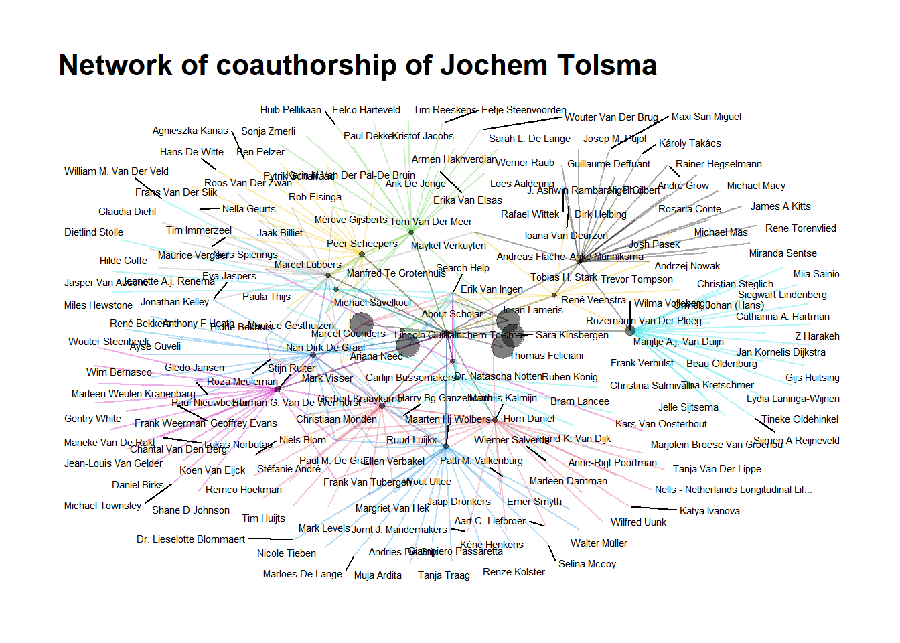
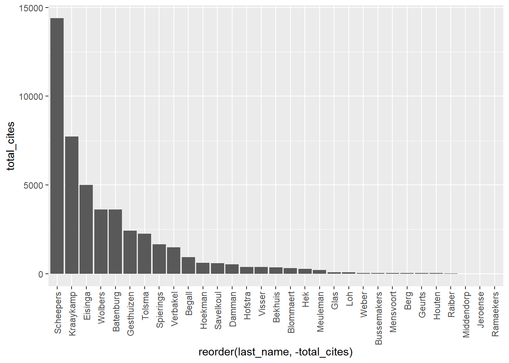
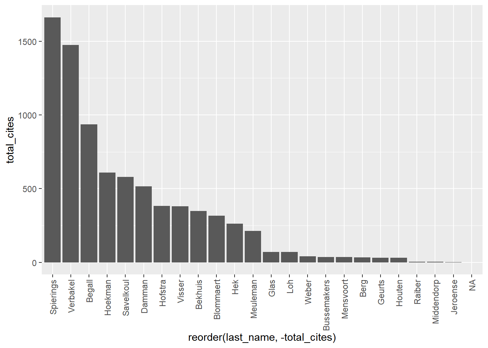

Chapter 8 Webscraping for Social Scientists
8.1 Chapter overview
“[The] technological revolution in mobile, Web, and Internet communications has the potential to revolutionize our understanding of ourselves and how we interact. Merton was right: Social science has still not found its Kepler. But three hundred years after Alexander Pope argued that the proper study of mankind should lie not in the heavens but in ourselves, we have finally found our telescope. Let the revolution begin…” (Watts 2011: 266)
Watts’ already-famous quote predicts a revolution in the social sciences. He and others (see also Lazer et al. 2009) essentially argue that social science will be revolutionized by the unprecedented use of of the social internet. Given that people overwhelmingly adopted internet technologies and given that many of the platforms that offer these technologies automatically archive all kinds of behavior (Spiro 2016) such as clicks, messages, social media relationships, and so forth, there may be a treasure trove of data on the internet that social scientists can use for their research on social processes. In this chapter, we discuss some of the promises and pitfalls of webscraping so-called “digital trace” data (Golder and Macy 2014) on the internet for social network analysis. We are then going to discuss some different techniques that are often used for webscraping. Note that the fast-pace nature of the internet inherently means that by the time you read this text, some of the things we discuss will be outdated. (Which can be argued to be one of the pitfalls of social science research with webscraping!) We are also getting our hands dirty with a hands-on example of digital trace data that we are going to collect ourselves. So by the end of this chapter, you will be familiar with some of the unique opportunities and difficulties of webscraped (social network) data, have a birds-eye perspective on the different techniques for scraping the web for your own research, have knowledge on the ethics surrounding webscraping, and have more in-depth experience on one specific package for webscraping bibliometric data in R. In short, you will have firsthand knowledge on the current state-of-the-art in sociological data collection. There are really good, exhaustive resources for webscraping and computational sociology. See, for instance, the book by Robert Ackland (Ackland 2013). Yet, to get up to speed for this chapter, you can read the first chapter of Bas Hofstra’s dissertation (Hofstra 2017), Golder and Macy’s Annual Review of Sociology article (Golder and Macy 2014), and Lazer and colleagues’ Science article (Lazer et al. 2009). A very nice introduction to the field of computational social science can be found in Salganik’s text book (Salganik 2019). An overview with recent applications is written by Edelman and colleagues (Edelmann et al. 2020).
8.1.1 Definitions
- Webscraping
The process by which you collect data from the internet. This can entail different routes: manual data collection, automated data collection via code, use of application programming interfaces, and so forth.
- Digital footprints
Automatically logged behavioral signals that actors – broadly construed: individuals, companies, organizations, groups, etc. – leave on the internet. This may imply many things, including the messages one leaves on Instagram posts, back-and-forth conversations on Whatsapp, companies’ job advertisements, university course texts, and so forth. All of these signals can capture some social process: networking on social media, signalling specific job requirements, or university course prerequisites. This also means that digital footprints can contain a lot of different and sometimes unstructured data types. Social network data is obvious: who is friends with whom on Facebook, who Tweets to whom, and so forth. Network data (not social) is also obvious. For instance, which website links to what other websites. (Sidenote: Google’s page-rank algorithm made them succesful, and this page-rank algorithm is based on network centrality that essentially filters out “influential” websites quickly. In other words, Google became such an influential company because of network analyses.) It can also contain (unstructured) text data, which in itself signals a lot of interesting social processes that one may consider.
- Computational sociology
Problem-driven, empirical sociology, but with the empirical part specifically containing some form of digital footprint data and/or some new methodological technique. Sociologists are usually (necessarily?) interested in digital footprints concerning some social process. Because digital footprints are often related to social network processes (e.g., befriending on Facebook, messaging on Twitter, etc.), a lot of computational sociology includes some form of social network analysis. Because this is often, though not always, the case, discussing webscraping in the context of this book on social network analyses makes perfect sense. Some claim Agent-Based Modelling to be part of computational sociology too, others not. Again others claim performing RSiena analyses is part of computational sociology, others not. Note that this definition-issue is somewhat of a useless moving target. Computational sociology’s definition will be different next week depending on who you ask. In this book, we use a pragmatic definition. This means that you are a computational sociologists if you use digital footprint data and/or use relatively new methodological techniques in your research. Also note that there is a certain cause-effect sequence in the three definions above: using webscraping techniques to gather digital footprint data to study social problems makes you a computational sociologist.
8.2 Promises and pitfalls
Like every data source in the social sciences and beyond, there are unique features as well as difficult challenges to webscraped data. In this subsection, we will discuss some of these advantages and challenges of webscraping and, by extension, digital footprint data. Like we discussed before, most of the research using webscraped digital footprint data concerns social networks and so we situate these promises and pitfalls in the context of social network analysis. Note, however, that some of the promises and pitfalls generalize to other types of digital footprint data too.
8.2.1 Promises
Dynamics
A second advantage of digital trace data is that these data are often time-stamped (and sometimes geo-stamped). This means that the the researcher knows exactly when (and where) the digital trace – e.g., the social interaction on Twitter – occurred. So the researcher can potentially perform some sort of longitudinal analyses so as to come closer to causal estimates in inferential statistical models. In the context of webscraped social networks this is particularly useful so as to separate selection from influence in larger social networks. Gathering such longitudinal sociometric data for many social foci (e.g., school classes) is difficult (yet, definitely not impossible!), whereas collecting time-stamped social interactions on the internet may be somewhat easier. Note also that social network data collected in, for instance, school classes often puts the same time-stamp on a given network (e.g., the time that class was surveyed), whereas networks online may contain more-detailed time-stamps. These time-stamped (network) data can in some cases be considered relational events (Butts 2008).
Signals
A third advantage of webscraped data is that it can potentially capture behavioral and/or attitudinal signals that are otherwise hard to come by. Say you want to know about social network dynamics among drug traders. Those drug traders probably won’t indicate in a survey that they are engaged in such illicit activities. Scraping data from the so-called “dark web” may be one of the only ways to study networks among drug traders (see Norbutas 2018 who does just that) apart from stitching together police reports which are likely to be confidential. Furthermore, survey respondents may be a bit hesitant to write about their own attitudes that are perceived to be socially undesirable (like severe ethnic prejudice). In that case, one may collect digital trace data on Twitter, where you can observe and then operationalize ethnic prejudice happening in real time. Not all online behaviors and/or attitudes are accurate proxies for offline attitudes/behavior of interest and are very particular to online settings. Therefore, the researcher must be aware, theorize, and ideally empirically show where and how their online data proxies their behavior-of-interest offline.
Size
Finally, and we discuss why this is both a blessing and a curse (see below), webscraping can lead to data that can contain a lot of observations (into the many millions!) or variables. Note that this is in and of itself not an advantage. More data are not always better data if they are biased. Yet, the sheer size of webscraped data – under appropriate sampling! – may make it easier to observe relationships between the variables of interest when they are small in magnitude. Such small effects may in smaller samples be swamped by random variability (cf. Golder and Macy 2014: 132) This does not mean one can go look into their big dataset for random relationships between variables, these relationships should be problematized and theorized first (just like any other problem-driven, hypothesis-testing social science study).
8.2.2 Pitfalls
Sampling
Scientists using digital trace data should think carefully about their target population vis-a-vis their sampling frame and realized sample. This is something that is not unique to digital trace data. Yet, it is easy to be so impressed by the sheer data size in studies using digital trace data that questions about generalizability of results sometimes tend to get overshadowed. That is not to say that it doesn’t tell us anything informative, just that we do not necessarily know to what target population such results generalize. All types of selectivity can crawl into the data. For instance, if you want to study Facebook/Instagram/TikTok, you should be aware that such platforms tend to get disproportionately populated by certain demographics. If among 5 million Twitter users those in geographical region a display some behavior y more so than those in region b, it does not necessarily mean that regions a and b differ in y. It may be that Twitter is perceived to be a particularly good platform in a to display y, whereas in b people are indifferent to display y on Twitter or elsewhere. Selection into Twitter thus plays an important role in this example. This may happen for many digital trace data sources: biased selection into certain platforms, biased selection into privacy settings which can obscure what you can observe, biased selection into what people display online, and so forth. Ideally, you would have some anchor data set from which you know that it generalizes to a given target population and link that to some source of digital trace data. On the other end, one could attempt to study an entire population such that you are pretty certain that you can generalize your results to that population.
Size
Like we described above, data size is an advantage of digital trace data, yet simultaneously it is also a pitfall. Huge numbers of observations (again, into the many if not hundreds of millions) may be pretty difficult to manipulate and analyze. In some cases, the data become so large that it is necessary to move to computing clusters because your laptop’s memory cannot handle it anymore. Dependent on what type of data you analyze you thus might need to adjust your data workflow. Not many educational programs prepare students for storing, manipulating, and analyzing large data sets, and this requires slightly different programming/statistical skills than what we’re used to. It may be a solution to sample from these huge data sets, such that you, say, only analyze a random sample of 5%. Yet, sampling from social networks is especially hard because of the interdependent nature of networks; some of the inherently clustered structure of networks is lost when you only draw a subset of agents from the network.
Data structure
This point relates to the point above. Webscraped digital trace data is usually structured very differently compared to the “flat” data files social scientists are used to working with. Usually, we open a dataset with columns (variables) and rows (observations). Webscraped data is usually stored in nested structured such as XML or JSON or contains text data. Therefore, additional manipulation is needed before we arrive at the data formats that standard statistical packages can read/analyze. Sometimes the networks-of-interest are stored in text data, for instance if you’re interested in letter-writing relationships. Hence, if you want to manipulate and analyze these data at scale, some form of programming becomes nearly unavoidable. (Luckily, we provide hands-on tools and examples in this book!)
Unobserved variables
Finally, webscraped digital trace data often do not contain the detailed demographic information that surveys (often) do provide. And this information often contains the key (control) variables in social science analyses. Imagine you scraped all customer reviews on the Etsy website because you want study how women and men reviewers judge the products of women and men creators differently. That is an important research question because it may show how gender dynamics in reviewing may (re)produce inequality between women and men creators. Yet, how do we know which reviewers are women or men? These labels do not come with the scraped data and some additional manipulation is needed. You could, for instance, attempt to predict whether a reviewer is a women or men by their first name. This is because first names are signals that relate strongly to gender. Yet, not every reviewer provides their first name but only a rather uninformative screenname. Furthermore, naming habits also vary between countries and the data do not inform you from which countries these reviewers originate. And what about age? What about income? Hence, there could be many factors related to the outcome you intend to study that are not readily available in digital trace data. This again requires some creativity on the researchers side, for instance by matching survey data with digital trace data, enrich data with other data sources, and so forth.
8.3 Where does this lead us?
So if we sum up what we have learned thus far, what are the overarching benefits of webscraped digital trace data compared to more-traditional data sources? We can think of at least three of those:
1. New tests of old social science hypotheses made possible by the availability of digital footprint data.
2. Tests of newly derived social science hypotheses made possible by the availability of digital footprint data.
3. Tests of new theories about “the internet” as social phenomenon by itself.
Note that these three points are not mutually exclusive: a newly derived social science hypothesis might just as well be about the internet as social phenomenon by itself. Yet, for analytic purposes it is convenient to list these three as separate. An interesting example related to point (1) is the question whether social networks are “small-worlds” – i.e., highly clustered yet having a short average path length. A popular adage derives from this feature of social networks: individuals are all separated by approximately six degrees. This was traditionally studied by considering letter chains. Now one could study this with the entire Facebook network, and so one could actually test this hypothesis at much larger and complete scale than before. With respect to point (2): you could derive new hypotheses about the conversational nature of massive collaborative projects by scraping and then studying all Wikipedia edits (something that was hard to study before). More recently, a lot of studies emerged on the role of fake news and echo chambers with respect to individual attitudes and polarization, which relates to point (3): how the internet as social phenomenon by itself can influence behavior/attitudes. The strongest computational social science papers leverage the strengths of digital trace data but simultaneously account for (or at the very least acknowledge) some of its weaknesses as we list above.
8.4 Ethics
In webscraping digital footprints, it is essential to consider ethics. In an ideal situation, a researcher has informed consent from the research subjects they intend to study In practice, the nature of webscraping digital footprints makes it very difficult to obtaining such consent. In many cases the researchers only have a pseudonym of the research subjects which makes it hard to contact them. In other cases the scale of the data collection makes it hard to build logistics for informed consent. Imagine asking ten million website forum users for their consent when they don’t list their name on the website. This is arguably a very difficult task. Ethical review boards, a collection of persons who apply research ethics to the research designs that scholars propose, are only now beginning to think about how to review research designs with unconventional data sources such as digital footprints. I found the overview found in the paper by (Ferretti et al. 2021) very useful.
8.5 Webscraping techniques
[This section is heavily under construction, but important to remember that there are several ways to gather digital footprints]
8.5.1 Manual
- Army of research assistants looking up information on the web, saving that systematically.
8.5.2 APIs
- Application Programming Interface: Utilizing existing structures in place, usually a connection between a computer/program to another computer/program that makes use of an interface to provide some service. For instance, through Twitter’s API you can scrape a limited amount of data via a dedicated connection for that.
8.6 Hands-on webscraping
Now that we learned about computational social science, webscraped digital trace data, and some of its techniques, it is time to get our hands dirty ourselves. In what follows is a short tutorial on webscraping where we will be collecting data from webpages on the internet. We will use the specific use-case of sociology staff at Radboud University. What do they publish? Where? And with whom do they collaborate? We assume you followed the R tutorial in this book, or that you otherwise have at least some experience with coding in R. In the rest of this tutorial, we will switch between base R and Tidyverse (just a bit), whatever is most convenient. (Note that this will happen sometimes if you become an applied computational sociologist.)
What are we are going to scrape specifically? This is a social network book so we’re obviously going to scrape social networks. Specifically, the social network of co-authors on the scientific papers of Radboud University’s Department of Sociology Staff. Co-authors on a paper are the set of scholars who publish a scientific paper together in a journal. Who do sociology staff publish with? And are those co-authors connected with one another too? Are these social networks clustered in some way? To get at such data we need several things: a list of RU’s sociology staff, a repository with their publication,s and the meta-information (titles, authors, etc.) of those publications. Substantively, this is key to look at things like how often scholars are cited or how social network dynamics in science work. (Not there is a whole body of research on the so-called “Sociology of Science” or the “Science of Science”. Because scientists are particularly good at documenting things, sociology/science of science type-of-work is some of the earliest work that you can label computational social science.)
In the remainder of this chapter, we thus provide a tutorial in which we explain the packages needed to do what we write above. We will shortly describe the scholar and other packages in R, the data sources, and the (network) data structures you encounter and how to deal with them. Yet, there are many ways code-wise or data-wise with which you can do very similar things like we do in this tutorial.
8.6.1 Staging your script
- Open a new R-script (via file –> new –> RScript (or simply hit Ctrl+Shift+N or Cmd+Shift+N if you work on Mac)
- Before you start scraping and analyzing, take all the precautionary steps noted in Appendix A.
So for this tutorial, your starting script will look something like this:
######################################### Title: Webscraping in R Author: Bas Hofstra Version:
######################################### 29-07-2021
# start with clean workspace
rm(list = ls())
# install.packages('data.table')
library(data.table) # mainly for faster data handling
library(tidyverse) # I assume you already installed this one!
# install.packages('httr') # we don't need this for now require(httr)
install.packages("xml2")
require(xml2)
install.packages("rvest")
require(rvest)
install.packages("devtools")
require(devtools)
# Note we're doing something different here. We're installing a *latest* version directly from
# GitHub This is because the released version of this packages contains some errors!
devtools::install_github("jkeirstead/scholar")
require(scholar)
# define workdirectory, note the double *backslashes* if you're on windows setwd('/yourpathhere)'So what are these different packages? You already know the tidyverse from Appendix A. The packages xml2, rvest, devtools, and scholar are probably new to you. We introduce the scholar package later, and devtools is shortly explained in the annotated code above. What do the two other packages we use do?
rvest: This is the explanation the writers of the package give: “rvestis new package that makes it easy to scrape (or harvest) data from html web pages.” Seems like something we need, a package that stores information from webpages into relatively structured data that we can then query/manipulate.xml2: This is what the writers of the package say about it: “Work with XML files using a simple, consistent interface.” So we can manipulate the data scraped withrvest, using thexml2package functions.
8.6.2 Getting “anchor” data
A first step is to get the “anchor” data. The anchor data are the first data we scrape with which we then link to further data sources. Our goal is to get to know (i) who the Radboud University Department of Sociology staff is, (ii) what they publish with respect to scientific work, and (iii) who they collaborate with. So that means at least three data sources we need to collect from somewhere. What would be a nice starting (read: anchor) point be? First, we have to know who is on the sociology staff. Let’s check out the Radboud sociology website. There is lots of intriguing information, but not on who is who. There is, however, a specific link to the research staff. Here we do see a nice list on who is on the sociology staff! How do we get that data? It is actually quite simple, the package xml2 has a very nice function html_read() which simply extracts the source html of a webpage:
# Let's first get the staff page read_html is a function that simply extracts html webpages and
# puts them in xml format
soc_staff <- read_html("https://www.ru.nl/sociology/research/staff/")#> Error in open.connection(x, "rb"): HTTP error 404.Whoops, this gives an error because as of 2024 this website does not exist anymore. This happens frequently with webscraping. In our Sunbelt workshop we show how to scrape the new website.
Here we will use a trick, namely the wayback machine.
soc_staff <- read_html("https://web.archive.org/web/20230528153336/https://www.ru.nl/sociology/research/staff/")#> $node
#> <pointer: 0x00000227b29feed0>
#>
#> $doc
#> <pointer: 0x00000227b0dea5c0>That looks kinda weird. What type of object did we store it by putting the html into soc_staff?
#> [1] "xml_document" "xml_node"So it is is stored in something that R calls an XML object. Remember when we talked about that in the text above? Extensible Markup Language, XML, is a nested data structure where in each next sublayer of that structure new information is stored. Not important for now what that means specifically. But it is important to extract the relevant table that we saw on the sociology staff website. How do we do that? Go to the https://www.ru.nl/sociology/research/staff/ in Google Chrome and then press “Inspect” on the webpage (right click–>Inspect). You should see something like the screenshot below (Figure 8.1), right?
Figure 8.1: Inspect element
Look at the screenshot below (Figure 8.2), you should be able to see something like this. In the html code we extracted from the Radboud website, we need to go to one of the nodes first. If you move your cursor over “body” in the html code on the right-hand side of your screen, the entire “body” of the page should become some shade of blue. This means that the elements encapsulated in the “body” node captures everything that turned blue. This is essentially the nested data structure we mentioned above.
Figure 8.2: Website ‘body’ node
Next, we need to look at the specific elements on the page that we need to extract. Somewhat by informed trial and error, looking for the correct code, we can select the elements we want. In the screenshot below (Figure 8.3), you see that the “td” elements actually are the ones we need. So we need code that looks for the node “body” and the “td” elements in the xml object and then extract those elements in it. Note that you can click on the arrows once you are in the “Inspect” mode in the web browser to trial-and-error to get at the correct elements.
Note that you can identify elements visually with extensions for browsers like selectorgadget for Google Chrome: if you activate the extension you can move your cursor over the webpage elements and see the “div” path.)
Figure 8.3: Element ‘td’ on website
Something like the code below should do just that:
# so we need to find WHERE the table is located in the html 'inspect element' in mozilla firefox or
# 'view page source' and you see that everything AFTER /td in the 'body' of the page seems to be
# the table we do need
soc_staff <- soc_staff %>%
rvest::html_nodes("body") %>%
xml2::xml_find_all("//td") %>%
rvest::html_text()Question: What happens in the code above? Why do we specify search for ‘body’ and ‘//td’?
Let us check out what happened to the soc_staff object now:
| x |
|---|
| Staff: |
| Expertise: |
| Batenburg, prof. dr. R. (Ronald) |
| Healthcare, labour market and healthcare professions and training |
| Begall, dr. K.H. (Katia) |
| Family, life course, labour market participation, division of household tasks and gender norms |
| Bekhuis, dr. H. (Hidde) |
| Welfare state, nationalism and sports |
| Berg, dr. L. van den (Lonneke) |
| Family, life course and transition to adulthood |
| Blommaert, dr. L. (Lieselotte) |
| Discrimination and inequality on the labour market |
| Damman, dr. M. (Marleen) |
| Labour market, life course, older workers, retirement and solo self-employed |
| Eisinga, prof. dr. R.N. (Rob) |
| Methods of research and statistics |
| Gesthuizen, dr. M.J.W. (Maurice) |
| Poverty en social cohesion |
| Glas, dr. S. (Saskia) |
| Islam, gender attitudes and sexuality |
| Hek, dr. M. van (Margriet) |
| Educational inequality, gender inequality, organizational sociology and culture |
| Hoekman, dr. R. H. A.(Remco) |
| Sports and policy sociology |
| Hofstra, dr. B. (Bas) |
| Diversity, inequality and innovation |
| Kraaykamp, prof. dr. G.L.M. (Gerbert) |
| Educational inequality, culture and health |
| Meuleman, dr. (Roza) |
| Culture and nationalism |
| Savelkoul, dr. M.J. (Michael) |
| Ethnic diversity, prejudice and social cohesion |
| Scheepers, prof. dr. P.L.H. (Peer) |
| Comparative research, social cohesion and diversity |
| Spierings, dr. C.H.B.M. (Niels) |
| Islam, gender, populism, social media, Middle East and migration |
| Tolsma, dr. J. (Jochem) |
| Inequality, criminology and ethnic diversity |
| Verbakel, prof. dr. C.M.C. (Ellen) Head of the department |
| Health, family and work |
| Visser, dr. M. (Mark) |
| Older workers, radicalism and social cohesion |
| Wolbers, prof. dr. M.H.J. (Maarten) |
| Educational inequality and labour market inequality |
| PhD: |
| Expertise: |
| Bussemakers, C. (Carlijn) MSc |
| Adverse youth experiences and social inequality |
| Franken, R. (Rob) MSc |
| Sport networks and motivation for sustainable sports participation |
| Firat, M. (Mustafa) MSc |
| Social inequality, older workers, life course and retirement |
| Geurts, P.G. (Nella) MSc |
| Integration and migration |
| Hendriks, I.P. (Inge) MSc |
| Resistance to refugees and social cohesion |
| Jeroense, T.M.G. (Thijmen) MSc |
| Political participation, segregation, opinion polarization and voting behaviour |
| Linders, N. (Nik) MSc |
| Populism, gender, masculinity and sexuality |
| Loh, S.M. (Renae) MSc |
| Educational sociology, social stratification, gender inequality and information communication technology (ICT) |
| Meijeren, M. (Maikel) MSc |
| Social capital, volunteer work and diversity |
| Mensvoort, C.A. van (Carly) MSc |
| Gender, leadership and social norms |
| Müller, K. (Katrin) MSc |
| Opinions about discrimination, migration and inequality |
| Raiber, K. (Klara) MSc |
| Informal care, employment, social inequality and gender |
| Ramaekers, M.J.M. (Marlou) MSc |
| Prosocial behaviour and family |
| Wiertsema, S. (Sara) MSc |
| Inequality in sports and physical activity, school-to-work transition and employment |
| External PhD: |
| Expertise: |
| Betkó, drs. J.G. (János) |
| Social assistance benefit, poverty, reintegration, RCT and social experiment |
| Houten, J. (Jasper) van MSc |
| Sports |
| Middendorp J. (Jansje) van MSc |
| Home administration |
| Vis, E. (Elize) MSc |
| Healthcare, labour market, healthcare professions and training, health and social capital |
| Weber, T. (Tijmen) MSc |
| International student mobility and the internationalization of higher education |
| Guest researchers: |
| Expertise: |
| Sterkens, dr. C.J.A. (Carl) |
| Religious conflicts, cohesion, religion and the philosophy of life |
| Vermeer, dr. P.A.D.M. (Paul) |
| Socialization processes, secularisation, religion and the philosophy of life |
So it looks much nicer but does not seem to be in the entirely correct order. We have odd rows and even rows: odd rows are names, even rows have the expertise of staff. We need to get a bit creative to put the data in a nicer format. The %% operator gives a “remainder” of integers (whole numbers). So 10/2=5 with no remainder, but 11/2=5 with a remainder of 1. This means that we can derive odd or even with a function with that operator. Remember functions from Appendix A.13.5?
Question: Do you understand what this function does?
How long are the data?
#> [1] 92Alright, can we get the odd rows out of there?
# Do you understand why we need the nstaf? What it does?
soc_names <- soc_staff[fodd(1:nstaf)] # in the 1 until 94st number, get the odd elements
head(soc_names)#> [1] "Staff:" "Batenburg, prof. dr. R. (Ronald)"
#> [3] "Begall, dr. K.H. (Katia)" "Bekhuis, dr. H. (Hidde)"
#> [5] "Berg, dr. L. van den (Lonneke)" "Blommaert, dr. L. (Lieselotte)"And how about people’s expertise?
soc_experts <- soc_staff[feven(1:nstaf)] # in the 1 until 94st number, get the even elements
head(soc_experts)#> [1] "Expertise:"
#> [2] "Healthcare, labour market and healthcare professions and training"
#> [3] "Family, life course, labour market participation, division of household tasks and gender norms"
#> [4] "Welfare state, nationalism and sports"
#> [5] "Family, life course and transition to adulthood"
#> [6] "Discrimination and inequality on the labour market"Finally, can we merge those two vectors?
soc_df <- data.frame(cbind(soc_names, soc_experts)) # columnbind those and we have a DF for soc staff!How does that look?
| soc_names | soc_experts |
|---|---|
| Staff: | Expertise: |
| Batenburg, prof. dr. R. (Ronald) | Healthcare, labour market and healthcare professions and training |
| Begall, dr. K.H. (Katia) | Family, life course, labour market participation, division of household tasks and gender norms |
| Bekhuis, dr. H. (Hidde) | Welfare state, nationalism and sports |
| Berg, dr. L. van den (Lonneke) | Family, life course and transition to adulthood |
| Blommaert, dr. L. (Lieselotte) | Discrimination and inequality on the labour market |
| Damman, dr. M. (Marleen) | Labour market, life course, older workers, retirement and solo self-employed |
| Eisinga, prof. dr. R.N. (Rob) | Methods of research and statistics |
| Gesthuizen, dr. M.J.W. (Maurice) | Poverty en social cohesion |
| Glas, dr. S. (Saskia) | Islam, gender attitudes and sexuality |
| Hek, dr. M. van (Margriet) | Educational inequality, gender inequality, organizational sociology and culture |
| Hoekman, dr. R. H. A.(Remco) | Sports and policy sociology |
| Hofstra, dr. B. (Bas) | Diversity, inequality and innovation |
| Kraaykamp, prof. dr. G.L.M. (Gerbert) | Educational inequality, culture and health |
| Meuleman, dr. (Roza) | Culture and nationalism |
| Savelkoul, dr. M.J. (Michael) | Ethnic diversity, prejudice and social cohesion |
| Scheepers, prof. dr. P.L.H. (Peer) | Comparative research, social cohesion and diversity |
| Spierings, dr. C.H.B.M. (Niels) | Islam, gender, populism, social media, Middle East and migration |
| Tolsma, dr. J. (Jochem) | Inequality, criminology and ethnic diversity |
| Verbakel, prof. dr. C.M.C. (Ellen) Head of the departmen | |Health, family and work |
| Visser, dr. M. (Mark) | Older workers, radicalism and social cohesion |
| Wolbers, prof. dr. M.H.J. (Maarten) | Educational inequality and labour market inequality |
| PhD: | Expertise: |
| Bussemakers, C. (Carlijn) MSc | Adverse youth experiences and social inequality |
| Franken, R. (Rob) MSc | Sport networks and motivation for sustainable sports participation |
| Firat, M. (Mustafa) MSc | Social inequality, older workers, life course and retirement |
| Geurts, P.G. (Nella) MSc | Integration and migration |
| Hendriks, I.P. (Inge) MSc | Resistance to refugees and social cohesion |
| Jeroense, T.M.G. (Thijmen) MSc | Political participation, segregation, opinion polarization and voting behaviour |
| Linders, N. (Nik) MSc | Populism, gender, masculinity and sexuality |
| Loh, S.M. (Renae) MSc | Educational sociology, social stratification, gender inequality and information communication technology (ICT) |
| Meijeren, M. (Maikel) MSc | Social capital, volunteer work and diversity |
| Mensvoort, C.A. van (Carly) MSc | Gender, leadership and social norms |
| Müller, K. (Katrin) MSc | Opinions about discrimination, migration and inequality |
| Raiber, K. (Klara) MSc | Informal care, employment, social inequality and gender |
| Ramaekers, M.J.M. (Marlou) MSc | Prosocial behaviour and family |
| Wiertsema, S. (Sara) MSc | Inequality in sports and physical activity, school-to-work transition and employment |
| External PhD: | Expertise: |
| Betkó, drs. J.G. (János) | Social assistance benefit, poverty, reintegration, RCT and social experiment |
| Houten, J. (Jasper) van MSc | Sports |
| Middendorp J. (Jansje) van MSc | Home administration |
| Vis, E. (Elize) MSc | Healthcare, labour market, healthcare professions and training, health and social capital |
| Weber, T. (Tijmen) MSc | International student mobility and the internationalization of higher education |
| Guest researchers: | Expertise: |
| Sterkens, dr. C.J.A. (Carl) | Religious conflicts, cohesion, religion and the philosophy of life |
| Vermeer, dr. P.A.D.M. (Paul) | Socialization processes, secularisation, religion and the philosophy of life |
That looks much better! Now we only need to remove the redundant rows that state “expertise”, “staff,” and so forth.
# inspect again, and remove the rows we don't need (check for yourself to be certain!)
delrows <- which(soc_df$soc_names == "Staff:" | soc_df$soc_names == "PhD:" | soc_df$soc_names == "External PhD:" |
soc_df$soc_names == "Guest researchers:" | soc_df$soc_names == "Other researchers:")
soc_df <- soc_df[-delrows, ]Let’s check it out
| soc_names | soc_experts | |
|---|---|---|
| 2 | Batenburg, prof. dr. R. (Ronald) | Healthcare, labour market and healthcare professions and training |
| 3 | Begall, dr. K.H. (Katia) | Family, life course, labour market participation, division of household tasks and gender norms |
| 4 | Bekhuis, dr. H. (Hidde) | Welfare state, nationalism and sports |
| 5 | Berg, dr. L. van den (Lonneke) | Family, life course and transition to adulthood |
| 6 | Blommaert, dr. L. (Lieselotte) | Discrimination and inequality on the labour market |
| 7 | Damman, dr. M. (Marleen) | Labour market, life course, older workers, retirement and solo self-employed |
| 8 | Eisinga, prof. dr. R.N. (Rob) | Methods of research and statistics |
| 9 | Gesthuizen, dr. M.J.W. (Maurice) | Poverty en social cohesion |
| 10 | Glas, dr. S. (Saskia) | Islam, gender attitudes and sexuality |
| 11 | Hek, dr. M. van (Margriet) | Educational inequality, gender inequality, organizational sociology and culture |
| 12 | Hoekman, dr. R. H. A.(Remco) | Sports and policy sociology |
| 13 | Hofstra, dr. B. (Bas) | Diversity, inequality and innovation |
| 14 | Kraaykamp, prof. dr. G.L.M. (Gerbert) | Educational inequality, culture and health |
| 15 | Meuleman, dr. (Roza) | Culture and nationalism |
| 16 | Savelkoul, dr. M.J. (Michael) | Ethnic diversity, prejudice and social cohesion |
| 17 | Scheepers, prof. dr. P.L.H. (Peer) | Comparative research, social cohesion and diversity |
| 18 | Spierings, dr. C.H.B.M. (Niels) | Islam, gender, populism, social media, Middle East and migration |
| 19 | Tolsma, dr. J. (Jochem) | Inequality, criminology and ethnic diversity |
| 20 | Verbakel, prof. dr. C.M.C. (Ellen) Head of the departmen | |Health, family and work |
| 21 | Visser, dr. M. (Mark) | Older workers, radicalism and social cohesion |
| 22 | Wolbers, prof. dr. M.H.J. (Maarten) | Educational inequality and labour market inequality |
| 24 | Bussemakers, C. (Carlijn) MSc | Adverse youth experiences and social inequality |
| 25 | Franken, R. (Rob) MSc | Sport networks and motivation for sustainable sports participation |
| 26 | Firat, M. (Mustafa) MSc | Social inequality, older workers, life course and retirement |
| 27 | Geurts, P.G. (Nella) MSc | Integration and migration |
| 28 | Hendriks, I.P. (Inge) MSc | Resistance to refugees and social cohesion |
| 29 | Jeroense, T.M.G. (Thijmen) MSc | Political participation, segregation, opinion polarization and voting behaviour |
| 30 | Linders, N. (Nik) MSc | Populism, gender, masculinity and sexuality |
| 31 | Loh, S.M. (Renae) MSc | Educational sociology, social stratification, gender inequality and information communication technology (ICT) |
| 32 | Meijeren, M. (Maikel) MSc | Social capital, volunteer work and diversity |
| 33 | Mensvoort, C.A. van (Carly) MSc | Gender, leadership and social norms |
| 34 | Müller, K. (Katrin) MSc | Opinions about discrimination, migration and inequality |
| 35 | Raiber, K. (Klara) MSc | Informal care, employment, social inequality and gender |
| 36 | Ramaekers, M.J.M. (Marlou) MSc | Prosocial behaviour and family |
| 37 | Wiertsema, S. (Sara) MSc | Inequality in sports and physical activity, school-to-work transition and employment |
| 39 | Betkó, drs. J.G. (János) | Social assistance benefit, poverty, reintegration, RCT and social experiment |
| 40 | Houten, J. (Jasper) van MSc | Sports |
| 41 | Middendorp J. (Jansje) van MSc | Home administration |
| 42 | Vis, E. (Elize) MSc | Healthcare, labour market, healthcare professions and training, health and social capital |
| 43 | Weber, T. (Tijmen) MSc | International student mobility and the internationalization of higher education |
| 45 | Sterkens, dr. C.J.A. (Carl) | Religious conflicts, cohesion, religion and the philosophy of life |
| 46 | Vermeer, dr. P.A.D.M. (Paul) | Socialization processes, secularisation, religion and the philosophy of life |
Now we have a nice relatively clean dataset with all sociology staff and their expterise. But there is yet some work to do before we can move on. We need to do some data cleaning. Ideally, we have staff their first and last names in clean columns. So the last name seems easy, everything before the comma. Do you understand the code below? gsub is a function that remove something and replaces it with something else. In the code below it replaces everything that’s behind a comma with nothing in the column soc_names in the data frame soc_df.
The first name is trickier, we need some more difficult expressions to extract first names from this string. It’s not necessary for now to exactly know how the expressions below work, but if you want to get into it, here’s a nice resource. The important part of the code below is that it extracts everything that’s in between the brackets.
# Last name seems to be everything before the comma
soc_df$last_name <- gsub(",.*$", "", soc_df$soc_names)
# first name is everything between brackets
soc_df$first_name <- str_extract_all(soc_df$soc_names, "(?<=\\().+?(?=\\))", simplify = TRUE)| soc_names | soc_experts | last_name | first_name | |
|---|---|---|---|---|
| 2 | Batenburg, prof. dr. R. (Ronald) | Healthcare, labour market and healthcare professions and training | Batenburg | Ronald |
| 3 | Begall, dr. K.H. (Katia) | Family, life course, labour market participation, division of household tasks and gender norms | Begall | Katia |
| 4 | Bekhuis, dr. H. (Hidde) | Welfare state, nationalism and sports | Bekhuis | Hidde |
| 5 | Berg, dr. L. van den (Lonneke) | Family, life course and transition to adulthood | Berg | Lonneke |
| 6 | Blommaert, dr. L. (Lieselotte) | Discrimination and inequality on the labour market | Blommaert | Lieselotte |
| 7 | Damman, dr. M. (Marleen) | Labour market, life course, older workers, retirement and solo self-employed | Damman | Marleen |
| 8 | Eisinga, prof. dr. R.N. (Rob) | Methods of research and statistics | Eisinga | Rob |
| 9 | Gesthuizen, dr. M.J.W. (Maurice) | Poverty en social cohesion | Gesthuizen | Maurice |
| 10 | Glas, dr. S. (Saskia) | Islam, gender attitudes and sexuality | Glas | Saskia |
| 11 | Hek, dr. M. van (Margriet) | Educational inequality, gender inequality, organizational sociology and culture | Hek | Margriet |
| 12 | Hoekman, dr. R. H. A.(Remco) | Sports and policy sociology | Hoekman | Remco |
| 13 | Hofstra, dr. B. (Bas) | Diversity, inequality and innovation | Hofstra | Bas |
| 14 | Kraaykamp, prof. dr. G.L.M. (Gerbert) | Educational inequality, culture and health | Kraaykamp | Gerbert |
| 15 | Meuleman, dr. (Roza) | Culture and nationalism | Meuleman | Roza |
| 16 | Savelkoul, dr. M.J. (Michael) | Ethnic diversity, prejudice and social cohesion | Savelkoul | Michael |
| 17 | Scheepers, prof. dr. P.L.H. (Peer) | Comparative research, social cohesion and diversity | Scheepers | Peer |
| 18 | Spierings, dr. C.H.B.M. (Niels) | Islam, gender, populism, social media, Middle East and migration | Spierings | Niels |
| 19 | Tolsma, dr. J. (Jochem) | Inequality, criminology and ethnic diversity | Tolsma | Jochem |
| 20 | Verbakel, prof. dr. C.M.C. (Ellen) Head of the departmen | |Health, family and work | |Verbakel | |Ellen |
| 21 | Visser, dr. M. (Mark) | Older workers, radicalism and social cohesion | Visser | Mark |
| 22 | Wolbers, prof. dr. M.H.J. (Maarten) | Educational inequality and labour market inequality | Wolbers | Maarten |
| 24 | Bussemakers, C. (Carlijn) MSc | Adverse youth experiences and social inequality | Bussemakers | Carlijn |
| 25 | Franken, R. (Rob) MSc | Sport networks and motivation for sustainable sports participation | Franken | Rob |
| 26 | Firat, M. (Mustafa) MSc | Social inequality, older workers, life course and retirement | Firat | Mustafa |
| 27 | Geurts, P.G. (Nella) MSc | Integration and migration | Geurts | Nella |
| 28 | Hendriks, I.P. (Inge) MSc | Resistance to refugees and social cohesion | Hendriks | Inge |
| 29 | Jeroense, T.M.G. (Thijmen) MSc | Political participation, segregation, opinion polarization and voting behaviour | Jeroense | Thijmen |
| 30 | Linders, N. (Nik) MSc | Populism, gender, masculinity and sexuality | Linders | Nik |
| 31 | Loh, S.M. (Renae) MSc | Educational sociology, social stratification, gender inequality and information communication technology (ICT) | Loh | Renae |
| 32 | Meijeren, M. (Maikel) MSc | Social capital, volunteer work and diversity | Meijeren | Maikel |
| 33 | Mensvoort, C.A. van (Carly) MSc | Gender, leadership and social norms | Mensvoort | Carly |
| 34 | Müller, K. (Katrin) MSc | Opinions about discrimination, migration and inequality | Müller | Katrin |
| 35 | Raiber, K. (Klara) MSc | Informal care, employment, social inequality and gender | Raiber | Klara |
| 36 | Ramaekers, M.J.M. (Marlou) MSc | Prosocial behaviour and family | Ramaekers | Marlou |
| 37 | Wiertsema, S. (Sara) MSc | Inequality in sports and physical activity, school-to-work transition and employment | Wiertsema | Sara |
| 39 | Betkó, drs. J.G. (János) | Social assistance benefit, poverty, reintegration, RCT and social experiment | Betkó | János |
| 40 | Houten, J. (Jasper) van MSc | Sports | Houten | Jasper |
| 41 | Middendorp J. (Jansje) van MSc | Home administration | Middendorp J. (Jansje) van MSc | Jansje |
| 42 | Vis, E. (Elize) MSc | Healthcare, labour market, healthcare professions and training, health and social capital | Vis | Elize |
| 43 | Weber, T. (Tijmen) MSc | International student mobility and the internationalization of higher education | Weber | Tijmen |
| 45 | Sterkens, dr. C.J.A. (Carl) | Religious conflicts, cohesion, religion and the philosophy of life | Sterkens | Carl |
| 46 | Vermeer, dr. P.A.D.M. (Paul) | Socialization processes, secularisation, religion and the philosophy of life | Vermeer | Paul |
So we need yet to do some manual cleaning, one name seemed to be inconsistent with how the other names were listed on the webpage. As data get bigger, this becomes impossible to do manually and we simply have to accept this as noise.
soc_df$last_name <- gsub(" J. \\(Jansje\\) van MSc", "", soc_df$last_name)
soc_df$first_name <- tolower(soc_df$first_name) # everything to lower!
soc_df$last_name <- tolower(soc_df$last_name)Not quite there yet. To be sure, we’ll trim some white space in the variables we know created. This means we remove spaces before and after strings. Usually, with a much larger dataset which you cannot immediately observe, you can further clean the data by removing weird characters.
# trimws looses all spacing before and after (if you specify 'both') a character string
soc_df$last_name <- trimws(soc_df$last_name, which = c("both"), whitespace = "[ \t\r\n]")
soc_df$first_name <- trimws(soc_df$first_name, which = c("both"), whitespace = "[ \t\r\n]")
soc_df$soc_experts <- trimws(soc_df$soc_experts, which = c("both"), whitespace = "[ \t\r\n]")
soc_df$soc_names <- trimws(soc_df$soc_names, which = c("both"), whitespace = "[ \t\r\n]")Finally, because we’re quite sure that all these staff are in some way affiliated with Radboud University (why would they otherwise be on the Radboud website?), we simply create a variable that contains a character string “radboud university” for all.
# set affiliation to radboud, comes in handy for querying google scholar
soc_df$affiliation <- "radboud university"How do the data look?
| soc_names | soc_experts | last_name | first_name | affiliation | |
|---|---|---|---|---|---|
| 2 | Batenburg, prof. dr. R. (Ronald) | Healthcare, labour market and healthcare professions and training | batenburg | ronald | radboud university |
| 3 | Begall, dr. K.H. (Katia) | Family, life course, labour market participation, division of household tasks and gender norms | begall | katia | radboud university |
| 4 | Bekhuis, dr. H. (Hidde) | Welfare state, nationalism and sports | bekhuis | hidde | radboud university |
| 5 | Berg, dr. L. van den (Lonneke) | Family, life course and transition to adulthood | berg | lonneke | radboud university |
| 6 | Blommaert, dr. L. (Lieselotte) | Discrimination and inequality on the labour market | blommaert | lieselotte | radboud university |
| 7 | Damman, dr. M. (Marleen) | Labour market, life course, older workers, retirement and solo self-employed | damman | marleen | radboud university |
| 8 | Eisinga, prof. dr. R.N. (Rob) | Methods of research and statistics | eisinga | rob | radboud university |
| 9 | Gesthuizen, dr. M.J.W. (Maurice) | Poverty en social cohesion | gesthuizen | maurice | radboud university |
| 10 | Glas, dr. S. (Saskia) | Islam, gender attitudes and sexuality | glas | saskia | radboud university |
| 11 | Hek, dr. M. van (Margriet) | Educational inequality, gender inequality, organizational sociology and culture | hek | margriet | radboud university |
| 12 | Hoekman, dr. R. H. A.(Remco) | Sports and policy sociology | hoekman | remco | radboud university |
| 13 | Hofstra, dr. B. (Bas) | Diversity, inequality and innovation | hofstra | bas | radboud university |
| 14 | Kraaykamp, prof. dr. G.L.M. (Gerbert) | Educational inequality, culture and health | kraaykamp | gerbert | radboud university |
| 15 | Meuleman, dr. (Roza) | Culture and nationalism | meuleman | roza | radboud university |
| 16 | Savelkoul, dr. M.J. (Michael) | Ethnic diversity, prejudice and social cohesion | savelkoul | michael | radboud university |
| 17 | Scheepers, prof. dr. P.L.H. (Peer) | Comparative research, social cohesion and diversity | scheepers | peer | radboud university |
| 18 | Spierings, dr. C.H.B.M. (Niels) | Islam, gender, populism, social media, Middle East and migration | spierings | niels | radboud university |
| 19 | Tolsma, dr. J. (Jochem) | Inequality, criminology and ethnic diversity | tolsma | jochem | radboud university |
| 20 | Verbakel, prof. dr. C.M.C. (Ellen) Head of the departmen | |Health, family and work | |verbakel | |ellen | |radboud universit |
| 21 | Visser, dr. M. (Mark) | Older workers, radicalism and social cohesion | visser | mark | radboud university |
| 22 | Wolbers, prof. dr. M.H.J. (Maarten) | Educational inequality and labour market inequality | wolbers | maarten | radboud university |
| 24 | Bussemakers, C. (Carlijn) MSc | Adverse youth experiences and social inequality | bussemakers | carlijn | radboud university |
| 25 | Franken, R. (Rob) MSc | Sport networks and motivation for sustainable sports participation | franken | rob | radboud university |
| 26 | Firat, M. (Mustafa) MSc | Social inequality, older workers, life course and retirement | firat | mustafa | radboud university |
| 27 | Geurts, P.G. (Nella) MSc | Integration and migration | geurts | nella | radboud university |
| 28 | Hendriks, I.P. (Inge) MSc | Resistance to refugees and social cohesion | hendriks | inge | radboud university |
| 29 | Jeroense, T.M.G. (Thijmen) MSc | Political participation, segregation, opinion polarization and voting behaviour | jeroense | thijmen | radboud university |
| 30 | Linders, N. (Nik) MSc | Populism, gender, masculinity and sexuality | linders | nik | radboud university |
| 31 | Loh, S.M. (Renae) MSc | Educational sociology, social stratification, gender inequality and information communication technology (ICT) | loh | renae | radboud university |
| 32 | Meijeren, M. (Maikel) MSc | Social capital, volunteer work and diversity | meijeren | maikel | radboud university |
| 33 | Mensvoort, C.A. van (Carly) MSc | Gender, leadership and social norms | mensvoort | carly | radboud university |
| 34 | Müller, K. (Katrin) MSc | Opinions about discrimination, migration and inequality | müller | katrin | radboud university |
| 35 | Raiber, K. (Klara) MSc | Informal care, employment, social inequality and gender | raiber | klara | radboud university |
| 36 | Ramaekers, M.J.M. (Marlou) MSc | Prosocial behaviour and family | ramaekers | marlou | radboud university |
| 37 | Wiertsema, S. (Sara) MSc | Inequality in sports and physical activity, school-to-work transition and employment | wiertsema | sara | radboud university |
| 39 | Betkó, drs. J.G. (János) | Social assistance benefit, poverty, reintegration, RCT and social experiment | betkó | jános | radboud university |
| 40 | Houten, J. (Jasper) van MSc | Sports | houten | jasper | radboud university |
| 41 | Middendorp J. (Jansje) van MSc | Home administration | middendorp | jansje | radboud university |
| 42 | Vis, E. (Elize) MSc | Healthcare, labour market, healthcare professions and training, health and social capital | vis | elize | radboud university |
| 43 | Weber, T. (Tijmen) MSc | International student mobility and the internationalization of higher education | weber | tijmen | radboud university |
| 45 | Sterkens, dr. C.J.A. (Carl) | Religious conflicts, cohesion, religion and the philosophy of life | sterkens | carl | radboud university |
| 46 | Vermeer, dr. P.A.D.M. (Paul) | Socialization processes, secularisation, religion and the philosophy of life | vermeer | paul | radboud university |
Pretty good, so I think we can move on to the next section.
8.6.3 Google Scholar Profiles and Publications
What we now have is a data frame of sociology staff members. So we successfully gathered the anchor data set we can move on with. Next, we need to find out whether these staff have a Google Scholar profile. I imagine you have accessed Google Scholar many times during your studies for finding scientists or publications. The nice thing about Google Scholar is that it lists collaborators, publications, and citations on profiles. So what we first need to do is look for Google Scholar profiles among sociology staff. Luckily, we cleaned first and last names and have their affiliation. That makes looking them up much easier. So we need to do this for every person in our data frame. Before we query Google Scholar, we first need to go back to the neat trick of for loops (remember them from Appendix A.13.2?). Can you follow the code below? We can thus do all kinds of things automatically in a for loop.
# The 'for loop': for every i in a vector (can be numbers, strings, etc.), say 1 to 10, you can do
# 'something'
for (i in 1:10) {
print(i) # So for every i from 1 to 10, we print i, see what happens!
}#> [1] 1
#> [1] 2
#> [1] 3
#> [1] 4
#> [1] 5
#> [1] 6
#> [1] 7
#> [1] 8
#> [1] 9
#> [1] 10# # or do something more complicated p <- rnorm(10, 0, 1) # draw 10 normally distributed numbers
# with mean 0 and SD 1 (so z-scores, essentially) plot(density(p)) # relatively, normal, right? u
# <- 0 # make an element we can fill up in the loop below for (i in 1:10) { u[i] <- p[i]*p[i] # get
# p-squared for every i-th element in vector p print(u[i]) # and print that squared element }Now that we know how to implement for loops in our workflow, we can utilize them to do slightly more complicated stuff. We want to know the identifying link on Google Scholar for each sociology staff member. We first set an empty identifier in our data frame so that we can “fill up” that data column later.
So let’s move on with attempting to find Google Scholar profiles. The package scholar has a range of very nice functions! What type of functions does scholar have? Take a look by ?scholar or ??scholar. It includes all kinds of interesting functions like comparing scholars’ careers, getting scholar citations, getting profiles, and so forth. Using get_scholar_id seems appropriate to find out what the profile ID is of Jochem’s Google Scholar page. If you write get_scholar_id and then click ctrl or cmd together with your right mouse button, you can actually see precisely what the function does (it’s quite complicated!). Note that this package does not use an API, but simple wrote code to extract Google Scholar pages from the internet. They then wrapped the code in much simpler functions for you to use. The function get_scholar_id needs a last name, first name, and affiliation. Luckily, we already found those on the Radboud University website! So we can fill in those. Let’s try it for one staff member first.
Please download function here: get_scholar_id_fix.
source("addfiles/function_fix.R") # Put the function_fix.R in your working directory, we need this first line.
get_scholar_id_fix(last_name = "tolsma", first_name = "jochem", affiliation = "radboud university")#> [1] "Iu23-90AAAAJ"We now know that Jochem’s Scholar ID is “Iu23-90AAAAJ”. That’s very convenient, because now we can use the package scholar again to extract a range of useful other information from his Google Scholar profile. Let’s try it out on his profile first. Notice the nice function get_profiles. We simply have to input his Google Scholar ID and it shows everything on the profile.
#> $id
#> [1] "Iu23-90AAAAJ"
#>
#> $name
#> [1] "Jochem Tolsma"
#>
#> $affiliation
#> [1] "Professor, Radboud University Nijmegen / University of Groningen"
#>
#> $total_cites
#> [1] 3371
#>
#> $h_index
#> [1] 27
#>
#> $i10_index
#> [1] 42
#>
#> $fields
#> [1] "social divisions between groups" "segregation"
#> [3] "inequality"
#>
#> $homepage
#> [1] "http://www.jochemtolsma.nl/"
#>
#> $coauthors
#> [1] "Gerbert Kraaykamp" "Tom van der Meer" "Maarten HJ Wolbers" "Michael Savelkoul"
#> [5] "Stijn Ruiter" "peer scheepers" "Marcel Lubbers" "Joran Lameris"
#> [9] "Marcel Coenders" "Nan Dirk de Graaf" "Sara Kinsbergen" "dr. Natascha Notten"
#> [13] "Carlijn Bussemakers" "Tobias H. Stark" "Thomas Feliciani" "Andreas Flache"
#> [17] "Matthijs Kalmijn" "Lincoln Quillian" "Ariana Need" "René Veenstra"
#>
#> $available
#> [1] 12
#>
#> $not_available
#> [1] 0A lot of useful information! Next up, Jochem’s publications. Notice how not everything is in a nice data frame format yet, we’ll get to that later.
#> title
#> 1 Ethnic diversity and its effects on social cohesion
#> 2 Anti-Muslim attitudes in the Netherlands: Tests of contradictory hypotheses derived from ethnic competition theory and intergroup contact theory
#> 3 The impact of neighbourhood and municipality characteristics on social cohesion in the Netherlands
#> 4 The effects of parental reading socialization and early school involvement on children’s academic performance: A panel study of primary school pupils in the Netherlands
#> 5 Who is bullying whom in ethnically diverse primary schools? Exploring links between bullying, ethnicity, and ethnic diversity in Dutch primary schools
#> 6 Ethnic competition and opposition to ethnic intermarriage in the Netherlands: A multi-level approach
#> 7 When do people report crime to the police? Results from a factorial survey design in the Netherlands, 2010
#> 8 Education and cultural integration among ethnic minorities and natives in the Netherlands: A test of the integration paradox
#> 9 Trends in ethnic educational inequalities in the Netherlands: a cohort design
#> 10 Does intergenerational social mobility affect antagonistic attitudes towards ethnic minorities?
#> 11 Explaining participation differentials in Dutch higher education: the impact of subjective success probabilities on level choice and field choice
#> 12 The impact of adolescents' classroom and neighborhood ethnic diversity on same‐and cross‐ethnic friendships within classrooms
#> 13 Neighbourhood ethnic composition and voting for the radical right in The Netherlands. The role of perceived neighbourhood threat and interethnic neighbourhood contact
#> 14 Co-occurrence of adverse childhood experiences and its association with family characteristics. A latent class analysis with Dutch population data
#> 15 Losing Wallets, Retaining Trust? The Relationship Between Ethnic Heterogeneity and Trusting Coethnic and Non-coethnic Neighbours and Non-neighbours to Return a Lost Wallet
#> 16 Educational expansion and field of study: trends in the intergenerational transmission of educational inequality in the Netherlands
#> 17 Bringing the beneficiary closer: Explanations for volunteering time in Dutch private development initiatives
#> 18 How friends’ involvement in crime affects the risk of offending and victimization
#> 19 At which geographic scale does ethnic diversity affect intra-neighborhood social capital?
#> 20 The NEtherlands Longitudinal Lifecourse Study (NELLS, Panel): Codebook
#> 21 Explaining monetary donations to international development organisations: A factorial survey approach
#> 22 Onderwijs als nieuwe sociale scheidslijn? De gevolgen van onderwijsexpansie voor sociale mobiliteit, de waarde van diploma's en het relatieve belang van opleiding in Nederland
#> 23 How, when and where can spatial segregation induce opinion polarization? Two competing models
#> 24 Naar een open samenleving?
#> 25 Where does ethnic concentration matter for populist radical right support? An analysis of geographical scale and the halo effect
#> 26 Social origin and occupational success at labour market entry in The Netherlands, 1931–80
#> 27 Ethnic hostility among ethnic majority and minority groups in the Netherlands: an investigation into the impact of social mobility experiences, the local living environment and …
#> 28 Perceptions as the crucial link? The mediating role of neighborhood perceptions in the relationship between the neighborhood context and neighborhood cohesion
#> 29 Combating hooliganism in the Netherlands: An evaluation of measures to combat hooliganism with longitudinal registration data
#> 30 Preferences for work arrangements: A discrete choice experiment
#> 31 Under what conditions do ethnic minority candidates attract the ethnic minority vote? How neighbourhood and candidate characteristics affected ethnic affinity voting in the …
#> 32 Trust and contact in diverse neighbourhoods: An interplay of four ethnicity effects
#> 33 Kudos make you run! How runners influence each other on the online social network Strava
#> 34 Explaining natives' interethnic friendship and contact with colleagues in European regions
#> 35 De burger als rechter
#> 36 Opleiding als sociale scheidslijn. Een nieuw perspectief op een oude kloof.
#> 37 Size is in the eye of the beholder: How differences between neighbourhoods and individuals explain variation in estimations of the ethnic out-group size in the neighbourhood
#> 38 De onderwijskansen van allochtone en autochtone Nederlanders vergeleken: een cohort-design
#> 39 Exposure to asylum seekers and changing support for the radical right: A natural experiment in the Netherlands
#> 40 Like two peas in a pod? Explaining friendship selection processes related to victimization and offending
#> 41 Netherlands Longitudinal Lifecourse Study-NELLS Panel Wave 1 2009 and Wave 2 2013-versie 1.2
#> 42 Aangiftebereidheid: Welke overwegingen spelen een rol bij de beslissing om wel of niet aangifte te doen?
#> 43 Taakstraffen langs de lat: strafopvattingen van Nederlanders
#> 44 Running together: How sports partners keep you running
#> 45 Variation in the educational consequences of parental death and divorce
#> 46 De aangifte van delicten bij de multichannelstrategie van de politie
#> 47 Parents, television and children's weight status: On lasting effects of parental television socialization in the Netherlands
#> 48 Household dysfunction and child development: Do financial resources matter?
#> 49 The social outcomes of psychosocial support: A grey literature scoping review
#> 50 Social origin and inequality in educational returns in the Dutch labour market
#> 51 Dader, slachtoffer, of beiden? De samenhang tussen daderschap en slachtofferschap onderzocht
#> 52 Education's impact on explanations of radical right-wing voting
#> 53 Archeologische verwachtings-en beleidskaart buitengebied gemeente Midden-Drenthe
#> 54 Vrijheid versus veiligheid: Wie steunt vrijheidsbeperking omwille van veiligheid in Nederland?
#> 55 Twitter and divides in the Dutch parliament: social and political segregation in the following,@-mentions and retweets networks
#> 56 Dader, slachtoffer, of beiden?
#> 57 Similarity and differences in age, gender, ethnicity, and education as explanatory factors of tie loss in the core discussion network
#> 58 The Well-Being of Undocumented Migrants in The Netherlands: Learning about Post-Migration Experiences
#> 59 Integratie en depressie-De relatie tussen sociaal-culturele integratie en depressieklachten bij Turkse en Marokkaanse Nederlander
#> 60 A matter of time? Gender and ethnic inequality in the academic publishing careers of Dutch PhDs
#> 61 Ontwikkelingen in de maatschappelijke positie van middelbaar opgeleiden in Nederland
#> 62 Integratie en depressie
#> 63 Size and ethnic homogeneity of extended social networks in the Netherlands: Differences between migrant groups and migrant generations
#> 64 Trends in de opleidingskloof op verschillende maatschappelijke domeinen
#> 65 The social outcomes of community-based sociotherapy for refugees in nakivale settlements, Uganda
#> 66 Ethnic segregation and spatial patterns of attitudes: studying the link using register data and social simulation
#> 67 SCP, onderzoek liever hoe we kansenongelijkheid in het onderwijs kunnen verminderen
#> 68 Sociale scheidslijnen tussen groepen: Wat valt er te verklaren?
#> 69 NEtherlands Longitudinal Lifecourse Study 2022-Versie 1.0 [dataverzameling and codebook]
#> 70 VIA pilot participatietraject gemeente Nijmegen: Eindrapportage
#> 71 Fairly Paid but Dissatisfied? Determinants of Pay Fairness and Pay Satisfaction: Evidence from Germany and the Netherlands
#> 72 In hoeverre verklaart de etnische samenstelling van de buurt de kans om te stemmen op de PVV?
#> 73 In de etalage: In hoeverre verklaart de etnische samenstelling van de buurt de kans om te stemmen op de PVV?
#> 74 Family Survey Dutch Population 2017/2018
#> 75 Soort zoekt soort: vriendschapselectieprocessen met betrekking tot slachtofferschap en daderschap
#> 76 Modeling opinion dynamics in a real city: How realistic spatial patterns of demographic attributes affect the emergence of opinion polarization
#> 77 Summary of “How, When and Where Can Spatial Segregation Induce Opinion Polarization? Two Competing Models”: Paper Under Review as JASSS Fast Track Submission
#> 78 ICS Alumni revisited [Brochure tbv Lustrum ICS]
#> 79 ICS Alumni Survey 2016 [Databestand]
#> 80 Modeling opinion dynamics in a simulated city. Realistic spatial patterns of demographic attributes and the emergence of opinion polarization
#> 81 Opleiding als nieuwe sociale scheidslijn: een tegengeluid
#> 82 Opleiding als sociale scheidslijn: Een tegengeluid
#> 83 Opleiding als sociale scheidslijn: aanleiding, probleemstelling, bestaande inzichten en werkwijze
#> 84 De samenhang in het opleidingsniveau tussen (huwelijks) partners
#> 85 Sociale herkomst en ongelijkheid in de opbrengsten van diploma's op de arbeidsmarkt
#> 86 De rol van opleidingsniveau voor het starten en stoppen met vrijwilligerswerk
#> 87 Was, is of wordt opleiding de sociale scheidslijn? Een terugblik, stand van zaken en toekomstvisie
#> 88 Klein en vrijwillig of groot en ervaren? Een analyse van de voorkeuren van donateurs
#> 89 Integratie en depressie: De relatie tussen sociaal-culturele integratie en depressieklachten bij Turkse en Marokkaanse Nederlanders
#> 90 De burger als rechter, onderzoek naar geprefereerde sancties voor misdrijven in Nederland (projectnummer 1933B)
#> 91 Onderwijsexpansie veroorzaakt nieuwe ongelijkheid
#> 92 Sociale daling schaadt vertrouwen: Effecten van sociale mobiliteit
#> 93 Toenemende gelijkheid is nog geen verheffing
#> 94 Over ouders, televisiekijken en (over) gewicht: Een studie naar de langetermijneffecten van ouderlijke televisiesocialisatie op het lichaamsgewicht van kinderen
#> 95 Onderwijsexpansie en opleidingsrichting: Trends in de intergenerationele overdracht van onderwijsongelijkheid
#> 96 Nijmegen School Study 2010-TNSS 2010-wave 1
#> 97 Does Intergenerational Social Mobility affect Antagonistic Attitudes towards Ethnic Minorities
#> 98 De invloed van lands-, gemeente-en buurtkenmerken op sociaal kapitaal: Putnam's hypothese getest in Europa en Nederland
#> 99 Vrijheid versus veiligheid: Wie steunt vrijheidsbeperking omwille van veiligheid in Nederland?[Liberty versus security: Who supports the restriction of personal freedom by …
#> 100 De onderwijskansen van allochtone en autochtone Nederlanders vergeleken: Een cohort-design [Ethnic inequality of educational opportunities in the Netherlands: A cohort design]
#> 101 Lokale en regionale instituties in verandering: een onderzoek naar de ervaringen in Duitsland
#> 102 Mentoring for Gender Equality in Early-Career Grant Receipt
#> 103 Educational consequences of parental divorce and death in Europe
#> 104 Volume 46-Article 20| Pages 581–618 Variation in the educational consequences of parental death and divorce: The role of family and country characteristics
#> 105 An Investigation into the Impact of Social Mobility Experiences, the Local Living Environment and Educational Attainment on Ethnic Hostility.
#> 106 Parental Discouragement Measure
#> 107 Complete Networks Small worlds
#> 108 Causes of dyads (theory)
#> 109 Egocentric Networks
#> 110 The Role of Recent Migrants’ Country of Origin Engagement in Dutch Language Proficiency
#> 111 M1-102: Social capital and networks
#> 112 Social origin and occupational success at labour market entry in the Netherlands
#> author
#> 1 TWG van der Meer, J Tolsma
#> 2 M Savelkoul, P Scheepers, J Tolsma, L Hagendoorn
#> 3 J Tolsma, T van der Meer, M Gesthuizen
#> 4 R Kloosterman, N Notten, J Tolsma, G Kraaykamp
#> 5 J Tolsma, I van Deurzen, TH Stark, R Veenstra
#> 6 J Tolsma, M Lubbers, M Coenders
#> 7 J Tolsma, J Blaauw, M Te Grotenhuis
#> 8 J Tolsma, M Lubbers, M Gijsberts
#> 9 J Tolsma, M Coenders, M Lubbers
#> 10 J Tolsma, ND De Graaf, L Quillian
#> 11 J Tolsma, A Need, U De Jong
#> 12 A Munniksma, P Scheepers, TH Stark, J Tolsma
#> 13 M Savelkoul, J Laméris, J Tolsma
#> 14 C Bussemakers, G Kraaykamp, J Tolsma
#> 15 J Tolsma, TWG van der Meer
#> 16 G Kraaykamp, J Tolsma, MHJ Wolbers
#> 17 S Kinsbergen, J Tolsma, S Ruiter
#> 18 JJ Rokven, G de Boer, J Tolsma, S Ruiter
#> 19 R Sluiter, J Tolsma, P Scheepers
#> 20 J Tolsma, GLM Kraaykamp, PM De Graaf, M Kalmijn, CWS Monden
#> 21 S Kinsbergen, J Tolsma
#> 22 J Tolsma, MHJ Wolbers
#> 23 T Feliciani, A Flache, J Tolsma
#> 24 J Tolsma, MHJ Wolbers
#> 25 D van Wijk, G Bolt, J Tolsma
#> 26 J Tolsma, MHJ Wolbers
#> 27 J Tolsma
#> 28 J Laméris, JR Hipp, J Tolsma
#> 29 D Schaap, M Postma, L Jansen, J Tolsma
#> 30 P Valet, C Sauer, J Tolsma
#> 31 R Van der Zwan, J Tolsma, M Lubbers
#> 32 J Tolsma, TWG Van der Meer
#> 33 R Franken, H Bekhuis, J Tolsma
#> 34 M Savelkoul, J Tolsma, P Scheepers
#> 35 S Ruiter, J Tolsma, M Hoon, H Elffers, P Laan
#> 36 M De Lange, J Tolsma, MHJ Wolbers
#> 37 J Laméris, G Kraaykamp, S Ruiter, J Tolsma
#> 38 J Tolsma, M Coenders, M Lubbers
#> 39 J Tolsma, J Lameris, M Savelkoul
#> 40 JJ Rokven, J Tolsma, S Ruiter, G Kraaykamp
#> 41 J Tolsma, GLM Kraaykamp, DM de Graaf, M Kalmijn, C Monden
#> 42 J Tolsma
#> 43 S Ruiter, J Tolsma
#> 44 R Franken, H Bekhuis, J Tolsma
#> 45 C Bussemakers, G Kraaykamp, J Tolsma
#> 46 PFM Boekhoorn, J Tolsma
#> 47 N Notten, G Kraaykamp, J Tolsma
#> 48 C Bussemakers, G Kraaykamp, I Schoon, J Tolsma
#> 49 T Ubels, S Kinsbergen, J Tolsma, DJ Koch
#> 50 J Tolsma, MHJ Wolbers
#> 51 JJ Rokven, S Ruiter, J Tolsma
#> 52 M Lubbers, J Tolsma
#> 53 MG Marinelli, J Tolsma
#> 54 G Jansen, J Tolsma, ND de Graaf
#> 55 J Tolsma, N Spierings
#> 56 J Rokven, S Ruiter, J Tolsma
#> 57 T Jeroense, N Spierings, J Tolsma
#> 58 T Ubels, S Kinsbergen, DJ Koch, J Tolsma
#> 59 R Zwan, van der, J Tolsma
#> 60 AM Mulders, B Hofstra, J Tolsma
#> 61 J Tolsma, MHJ Wolbers
#> 62 R van der Zwan, J Tolsma
#> 63 T Jeroense, B Hofstra, N Spierings, J Tolsma
#> 64 M Lange, J Tolsma
#> 65 T Ubels, S Kinsbergen, J Tolsma, DJ Koch
#> 66 T Feliciani, J Tolsma, A Flache
#> 67 J Tolsma
#> 68 J Tolsma
#> 69 TMG Jeroense, J Tolsma, M Kalmijn, GLM Kraaykamp
#> 70 N Spierings, L Werner, P Beckers, J Tolsma
#> 71 J Adriaans, C Sauer, J Tolsma
#> 72 M Savelkoul, J Laméris, J Tolsma
#> 73 MJ Savelkoul, JG Laméris, J Tolsma
#> 74 R Meuleman, J Tolsma, GLM Kraaykamp
#> 75 J Rokven, J Tolsma, S Ruiter, G Kraaykamp
#> 76 T Feliciani, A Flache, J Tolsma
#> 77 T Feliciani, A Flache, J Tolsma
#> 78 PE Thijs, GLM Kraaykamp, M Scholte, J Tolsma
#> 79 GLM Kraaykamp, M Scholte, PE Thijs, J Tolsma
#> 80 T Feliciani, A Flache, J Tolsma, M Maes
#> 81 J Tolsma
#> 82 J Tolsma
#> 83 M de Lange, J Tolsma, MHJ Wolbers
#> 84 J Tolsma, ND de Graaf
#> 85 J Tolsma, MHJ Wolbers
#> 86 D Wiertz, J Tolsma, ND De Graaf
#> 87 J Tolsma, MHJ Wolbers
#> 88 S Kinsbergen, J Tolsma
#> 89 R Zwan, J Tolsma
#> 90 S Ruiter, J Tolsma, M Hoon, H Elffers, D Laan
#> 91 GLM Kraaykamp, MHJ Wolbers, J Tolsma
#> 92 J Tolsma, MHJ Wolbers
#> 93 MHJ Wolbers, J Tolsma
#> 94 N Notten, GLM Kraaykamp, J Tolsma
#> 95 GLM Kraaykamp, J Tolsma, MHJ Wolbers
#> 96 J Tolsma, I Pop
#> 97 N de Graaf, J Tolsma, L Quillian
#> 98 MJW Gesthuizen, PLH Scheepers, J Tolsma, TWG van der Meer
#> 99 G Jansen, J Tolsma, ND de Graaf
#> 100 J Tolsma, MTA Coenders, M Lubbers
#> 101 GH Hagelstein, G Morssinkhof, JML Tolsma, JBJM Berge
#> 102 AM Mulders, B Hofstra, J Tolsma
#> 103 C Bussemakers, G Kraaykamp, J Tolsma
#> 104 C Bussemakers, G Kraaykamp, J Tolsma
#> 105 J TOLSMA
#> 106 JJ Rokven, J Tolsma, S Ruiter, G Kraaykamp
#> 107 J Tolsma
#> 108 J Tolsma
#> 109 J Tolsma
#> 110 N Geurts, J Tolsma
#> 111 J Laméris, J Tolsma, J Hipp
#> 112 J Tolsma, MHJ Wolbers
#> journal
#> 1
#> 2 European sociological review
#> 3 Acta Politica
#> 4 European Sociological Review
#> 5 Social Networks
#> 6 European Sociological Review
#> 7 Journal of experimental criminology
#> 8 Journal of Ethnic and Migration Studies
#> 9 European Sociological Review
#> 10 The British Journal of Sociology
#> 11 European Sociological Review
#> 12 Journal of Research on Adolescence
#> 13 European Sociological Review
#> 14 Child Abuse & Neglect
#> 15 Social Indicators Research
#> 16 British Journal of Sociology of Education
#> 17 Nonprofit and Voluntary Sector Quarterly
#> 18 European journal of criminology
#> 19 Social science research
#> 20 Nijmegen; Tilburg; Amsterdam: Radboud University Nijmegen; Tilburg …
#> 21 Social science research
#> 22 Tijdschrift voor Sociologie
#> 23 Journal of Artificial Societies and Social Simulation
#> 24
#> 25 Political Geography
#> 26 Acta Sociologica
#> 27
#> 28 Social Science Research
#> 29 European Journal on Criminal Policy and Research
#> 30 PloS one
#> 31 Political Geography
#> 32 Social science research
#> 33 Social Networks
#> 34 Journal of Ethnic and Migration Studies
#> 35 NSCR
#> 36 Maklu
#> 37 International Journal of Intercultural Relations
#> 38 Mens & Maatschappij
#> 39 PloS one
#> 40 European Journal of Criminology
#> 41 DANS EASY
#> 42 Proces-verbaal, aangifte en forensisch onderzoek
#> 43
#> 44 Frontiers in Sports and Active Living
#> 45 Demographic Research
#> 46 Apeldoorn; Nijmegen: Politie & Wetenschap; BBSO en Radboud Universiteit
#> 47 Journal of Children and Media
#> 48 Advances in Life Course Research
#> 49 SSM-mental health
#> 50 Education, Occupation and Social Origin
#> 51
#> 52 London: University College London
#> 53 Oranjewoud, Heerenveen
#> 54 Mens & Maatschappij
#> 55 Information, Communication & Society
#> 56 Tijdschrift voor Criminologie
#> 57 Social Networks
#> 58 Journal of Immigrant & Refugee Studies
#> 59 Mens en maatschappij
#> 60 Quantitative Science Studies
#> 61 Den Haag: WRR
#> 62 De relatie tussen sociaal
#> 63 International Migration
#> 64 Antwerpen/Apeldoorn: Garant
#> 65 TROPICAL MEDICINE & INTERNATIONAL HEALTH
#> 66 Journal of Computational Social Science
#> 67
#> 68 University of Groningen Press
#> 69 Nijmegen; Den Haag: Radboud University; NIDI
#> 70 Nijmegen: RUNOMI; RSCR
#> 71
#> 72 Mens en Maatschappij
#> 73
#> 74 DANS EASY
#> 75 Mens en maatschappij
#> 76
#> 77 International Conference on Principles and Practice of Multi-Agent Systems …
#> 78 Nijmegen: Interuniversity Center for Social Science Theory and Methodology (ICS)
#> 79 Nijmegen: Interuniversity Center for Social Science Theory and Methodology (ICS)
#> 80 Social Simulation Conference
#> 81 Sociologos
#> 82
#> 83 Opleiding als sociale scheidslijn. Een nieuw perspectief op een oude kloof
#> 84 Antwerpen/Apeldoorn: Garant
#> 85 Antwerpen/Apeldoorn: Garant
#> 86 Garant Uitgevers
#> 87 Antwerpen/Apeldoorn: Garant
#> 88 Amsterdam: NCDO
#> 89
#> 90 DANS EASY
#> 91 [Sl]: Sociale Vraagstukken
#> 92
#> 93 [Sl]: Sociale Vraagstukken
#> 94 Assen: Van Gorcum
#> 95 Amsterdam: AUP
#> 96 DANS EASY
#> 97 Wiley Blackwell
#> 98 Den Haag/Nijmegen: SCP-NSV
#> 99
#> 100
#> 101 Nederlands Instituut voor Sociaal en Economisch Recht (NISER)
#> 102 Available at SSRN
#> 103
#> 104
#> 105
#> 106 European Journal of Criminology
#> 107
#> 108
#> 109
#> 110
#> 111 Book of Abstracts
#> 112
#> number cites year
#> 1 708 2014
#> 2 27 (6), 741-758 370 2011
#> 3 44 (3) 329 2009
#> 4 27 (3), 291-306 158 2011
#> 5 35 (1), 51-61 153 2013
#> 6 24 (2), 215-230 134 2008
#> 7 8, 117-134 103 2012
#> 8 38 (5), 793-813 102 2012
#> 9 23 (3), 325-339 86 2007
#> 10 60 (2), 257-277 84 2009
#> 11 26 (2), 235-252 82 2010
#> 12 27 (1), 20-33 69 2017
#> 13 33 (2), 209-224 67 2017
#> 14 98, 104185 53 2019
#> 15 53 2016
#> 16 34 (5-6), 888-906 51 2013
#> 17 42 (1), 59-83 44 2013
#> 18 14 (6), 697-719 41 2017
#> 19 54, 80-95 40 2015
#> 20 38 2014
#> 21 42 (6), 1571-1586 37 2013
#> 22 31 (3), 239-259 37 2010
#> 23 20 (2), 6 33 2017
#> 24 33 2010
#> 25 77, 102097 30 2020
#> 26 57 (3), 253-269 30 2014
#> 27 28 2009
#> 28 72, 53-68 23 2018
#> 29 21, 83-97 23 2015
#> 30 16 (7), e0254483 22 2021
#> 31 77, 102098 22 2020
#> 32 73, 92-106 22 2018
#> 33 72, 151-164 21 2023
#> 34 41 (5), 683-709 21 2015
#> 35 20 2011
#> 36 19 2015
#> 37 63, 80-94 17 2018
#> 38 82 (2), 133 15 2007
#> 39 16 (2), e0245644 14 2021
#> 40 13 (2), 231-256 13 2016
#> 41 13 2014
#> 42 11 11 2011
#> 43 9 2010
#> 44 4, 643150 8 2022
#> 45 46, 581-618 8 2022
#> 46 8 2016
#> 47 7 (2), 235-252 8 2013
#> 48 51, 100447 6 2022
#> 49 2, 100074 5 2022
#> 50 114-131 5 2016
#> 51 5 2013
#> 52 5 2011
#> 53 5 2009
#> 54 83 (1), 47 5 2008
#> 55 1-20 4 2024
#> 56 55 (3), 278 4 2013
#> 57 76, 135-149 3 2024
#> 58 1-14 3 2023
#> 59 88 (2), 177-205 3 2013
#> 60 1-29 2 2024
#> 61 2 2017
#> 62 2 2013
#> 63 1 2024
#> 64 1 2015
#> 65 28, 266-266 0 2023
#> 66 6 (2), 877-921 0 2023
#> 67 0 2023
#> 68 0 2023
#> 69 0 2023
#> 70 0 2021
#> 71 31st Annual Meeting 0 2019
#> 72 93 (1), 82-85 0 2018
#> 73 0 2018
#> 74 0 2018
#> 75 92 (3), 327-329 0 2017
#> 76 9th Conference of the International Network of Analytical Sociology … 0 2016
#> 77 0 2016
#> 78 0 2016
#> 79 0 2016
#> 80 2016 0 2016
#> 81 36 (3) 0 2015
#> 82 0 2015
#> 83 9-32 0 2015
#> 84 0 2015
#> 85 0 2015
#> 86 0 2015
#> 87 0 2015
#> 88 0 2014
#> 89 0 2013
#> 90 0 2013
#> 91 0 2011
#> 92 0 2011
#> 93 0 2011
#> 94 0 2011
#> 95 0 2011
#> 96 0 2010
#> 97 0 2009
#> 98 0 2009
#> 99 0 2008
#> 100 0 2007
#> 101 0 1991
#> 102 486625 0 NA
#> 103 0 NA
#> 104 0 NA
#> 105 0 NA
#> 106 0 NA
#> 107 0 NA
#> 108 0 NA
#> 109 0 NA
#> 110 0 NA
#> 111 1 0 NA
#> 112 0 NA
#> cid pubid
#> 1 17240473400423700490,461159763596233481,1315542974843119305 UxriW0iASnsC
#> 2 9140218593636983243 9yKSN-GCB0IC
#> 3 203105297399726489 UeHWp8X0CEIC
#> 4 9327830809512404486 qjMakFHDy7sC
#> 5 15442728615805262127 kNdYIx-mwKoC
#> 6 17191703704621608544 u5HHmVD_uO8C
#> 7 3147100585201897138 UebtZRa9Y70C
#> 8 16121967639591190378 eQOLeE2rZwMC
#> 9 5904489841843560927 d1gkVwhDpl0C
#> 10 10446633547221929964 2osOgNQ5qMEC
#> 11 18143881066769803140,18233438384904663264,12975380653095517868 Tyk-4Ss8FVUC
#> 12 18309594979069207516 maZDTaKrznsC
#> 13 4894344398065441656 ldfaerwXgEUC
#> 14 163003866819331000 CHSYGLWDkRkC
#> 15 2251620908592189324 BqipwSGYUEgC
#> 16 2401615506068930127 7PzlFSSx8tAC
#> 17 2112276567018030922 _FxGoFyzp5QC
#> 18 13322468554278639475 vV6vV6tmYwMC
#> 19 7670225499012303854 e5wmG9Sq2KIC
#> 20 8792123396141403739 xtRiw3GOFMkC
#> 21 10149692484122806616 aqlVkmm33-oC
#> 22 17130607869100522312 YsMSGLbcyi4C
#> 23 6880814424039971499 g5m5HwL7SMYC
#> 24 2539524527836644253 Y0pCki6q_DkC
#> 25 4092382021694339447 SP6oXDckpogC
#> 26 8248470043986462984 M3ejUd6NZC8C
#> 27 10378332126833599949 IjCSPb-OGe4C
#> 28 16357054384393453824 D03iK_w7-QYC
#> 29 9528443224826780083 ZeXyd9-uunAC
#> 30 14800116132549688497 tKAzc9rXhukC
#> 31 7114430646392466648 uWQEDVKXjbEC
#> 32 8349908030823257502 pyW8ca7W8N0C
#> 33 12114155743971894213 9Nmd_mFXekcC
#> 34 18182577779862774305 -f6ydRqryjwC
#> 35 16411127097378483929 KlAtU1dfN6UC
#> 36 6027896113597554400,15089097845718498290 O3NaXMp0MMsC
#> 37 1627288244325129498 a0OBvERweLwC
#> 38 12951311005934288487 ILKRHgRFtOwC
#> 39 10820360089296230361 Fu2w8maKXqMC
#> 40 16075774780598089063 k_IJM867U9cC
#> 41 7914543636642646054 mB3voiENLucC
#> 42 10745397192148013810 LkGwnXOMwfcC
#> 43 15258532569899652859 W7OEmFMy1HYC
#> 44 6762471506678500061 evX43VCCuoAC
#> 45 18414208192975515577 35r97b3x0nAC
#> 46 14256154602665082067 JV2RwH3_ST0C
#> 47 818925813101569366 Se3iqnhoufwC
#> 48 3664663685279702514 ZfRJV9d4-WMC
#> 49 12792330965359094918 2KloaMYe4IUC
#> 50 10107474183324844052 YFjsv_pBGBYC
#> 51 3722991261384213184 BwyfMAYsbu0C
#> 52 10658172101302530460 4TOpqqG69KYC
#> 53 641362829363743487 kzcrU_BdoSEC
#> 54 6273244451878075724 ufrVoPGSRksC
#> 55 12757691501254196820 4MWp96NkSFoC
#> 56 10200636729873805270 QIV2ME_5wuYC
#> 57 3733534889800546258 AvfA0Oy_GE0C
#> 58 16962548993069978185 uWiczbcajpAC
#> 59 199361376786756491,53571672086000399 35N4QoGY0k4C
#> 60 10208965116913196309 TIZ-Mc8IlK0C
#> 61 12961270881488694754 u_35RYKgDlwC
#> 62 12114359551598956835 f2IySw72cVMC
#> 63 17141958553841870840 KUbvn5osdkgC
#> 64 12139749723307797145 j3f4tGmQtD8C
#> 65 <NA> tYavs44e6CUC
#> 66 <NA> vDijr-p_gm4C
#> 67 <NA> g3aElNc5_aQC
#> 68 <NA> ML0RJ9NH7IQC
#> 69 <NA> Z5m8FVwuT1cC
#> 70 <NA> yB1At4FlUx8C
#> 71 <NA> OU6Ihb5iCvQC
#> 72 <NA> b0M2c_1WBrUC
#> 73 <NA> ipzZ9siozwsC
#> 74 <NA> j8SEvjWlNXcC
#> 75 <NA> dfsIfKJdRG4C
#> 76 <NA> 7T2F9Uy0os0C
#> 77 <NA> NJ774b8OgUMC
#> 78 <NA> lSLTfruPkqcC
#> 79 <NA> RYcK_YlVTxYC
#> 80 <NA> NaGl4SEjCO4C
#> 81 <NA> NMxIlDl6LWMC
#> 82 <NA> EYYDruWGBe4C
#> 83 <NA> TFP_iSt0sucC
#> 84 <NA> bEWYMUwI8FkC
#> 85 <NA> iH-uZ7U-co4C
#> 86 <NA> r0BpntZqJG4C
#> 87 <NA> 4JMBOYKVnBMC
#> 88 <NA> yD5IFk8b50cC
#> 89 <NA> L7CI7m0gUJcC
#> 90 <NA> 738O_yMBCRsC
#> 91 <NA> _kc_bZDykSQC
#> 92 <NA> ULOm3_A8WrAC
#> 93 <NA> Zph67rFs4hoC
#> 94 <NA> 3fE2CSJIrl8C
#> 95 <NA> 5nxA0vEk-isC
#> 96 <NA> uc_IGeMz5qoC
#> 97 <NA> dshw04ExmUIC
#> 98 <NA> YOwf2qJgpHMC
#> 99 <NA> hMsQuOkrut0C
#> 100 <NA> zYLM7Y9cAGgC
#> 101 <NA> zLWjf1WUPmwC
#> 102 <NA> gsN89kCJA0AC
#> 103 <NA> BUYA1_V_uYcC
#> 104 <NA> URolC5Kub84C
#> 105 <NA> epqYDVWIO7EC
#> 106 <NA> tzM49s52ZIMC
#> 107 <NA> _Re3VWB3Y0AC
#> 108 <NA> WbkHhVStYXYC
#> 109 <NA> Tiz5es2fbqcC
#> 110 <NA> 4OULZ7Gr8RgC
#> 111 <NA> M05iB0D1s5AC
#> 112 <NA> 70eg2SAEIzsCWhen and how often was Jochem cited? Seems like an increasing trend line!
#> year cites
#> 1 2008 12
#> 2 2009 23
#> 3 2010 32
#> 4 2011 77
#> 5 2012 81
#> 6 2013 124
#> 7 2014 167
#> 8 2015 217
#> 9 2016 227
#> 10 2017 228
#> 11 2018 288
#> 12 2019 309
#> 13 2020 299
#> 14 2021 329
#> 15 2022 335
#> 16 2023 337
#> 17 2024 237And now most importantly, Jochem’s collaborators, and the collaborators of those collaborators (note the n_deep = 1, can you find out what that does?). So essentially a “one-step-further-than-Jochem” network.
jochem_coauthors <- get_coauthors("Iu23-90AAAAJ", n_coauthors = 50, n_deep = 1) # Jochem's collaborators and their co-authors!| author | coauthors | |
|---|---|---|
| 1 | Jochem Tolsma | Gerbert Kraaykamp |
| 2 | Jochem Tolsma | Tom Van Der Meer |
| 3 | Jochem Tolsma | Maarten Hj Wolbers |
| 4 | Jochem Tolsma | Michael Savelkoul |
| 5 | Jochem Tolsma | Stijn Ruiter |
| 6 | Jochem Tolsma | Peer Scheepers |
| 7 | Jochem Tolsma | Marcel Lubbers |
| 8 | Jochem Tolsma | Joran Lameris |
| 9 | Jochem Tolsma | Marcel Coenders |
| 10 | Jochem Tolsma | Nan Dirk De Graaf |
| 11 | Jochem Tolsma | Sara Kinsbergen |
| 12 | Jochem Tolsma | Dr. Natascha Notten |
| 13 | Jochem Tolsma | Carlijn Bussemakers |
| 14 | Jochem Tolsma | Tobias H. Stark |
| 15 | Jochem Tolsma | Thomas Feliciani |
| 16 | Jochem Tolsma | Andreas Flache |
| 17 | Jochem Tolsma | Matthijs Kalmijn |
| 18 | Jochem Tolsma | Lincoln Quillian |
| 19 | Jochem Tolsma | Ariana Need |
| 20 | Jochem Tolsma | René Veenstra |
| 24 | Jochem Tolsma | About Scholar |
| 25 | Jochem Tolsma | Search Help |
| 1100 | Gerbert Kraaykamp | Nan Dirk De Graaf |
| 2100 | Gerbert Kraaykamp | Paul M. De Graaf |
| 335 | Gerbert Kraaykamp | Matthijs Kalmijn |
| 410 | Gerbert Kraaykamp | Tim Huijts |
| 510 | Gerbert Kraaykamp | Roza Meuleman |
| 610 | Gerbert Kraaykamp | Maarten Hj Wolbers |
| 710 | Gerbert Kraaykamp | Jochem Tolsma |
| 810 | Gerbert Kraaykamp | Mark Visser |
| 910 | Gerbert Kraaykamp | Margriet Van Hek |
| 1010 | Gerbert Kraaykamp | Maurice Gesthuizen |
| 1110 | Gerbert Kraaykamp | Christiaan Monden |
| 1210 | Gerbert Kraaykamp | Mark Levels |
| 1310 | Gerbert Kraaykamp | Wout Ultee |
| 1410 | Gerbert Kraaykamp | Herman G. Van De Werfhorst |
| 1510 | Gerbert Kraaykamp | Koen Van Eijck |
| 1610 | Gerbert Kraaykamp | Ellen Verbakel |
| 1710 | Gerbert Kraaykamp | Remco Hoekman |
| 1810 | Gerbert Kraaykamp | Stéfanie André |
| 1910 | Gerbert Kraaykamp | Carlijn Bussemakers |
| 2010 | Gerbert Kraaykamp | Niels Blom |
| 2410 | Gerbert Kraaykamp | About Scholar |
| 2510 | Gerbert Kraaykamp | Search Help |
| 26 | Tom Van Der Meer | Paul Dekker |
| 27 | Tom Van Der Meer | Wouter Van Der Brug |
| 28 | Tom Van Der Meer | Peer Scheepers |
| 29 | Tom Van Der Meer | Eefje Steenvoorden |
| 30 | Tom Van Der Meer | Jochem Tolsma |
| 31 | Tom Van Der Meer | Manfred Te Grotenhuis |
| 32 | Tom Van Der Meer | Erika Van Elsas |
| 33 | Tom Van Der Meer | Sarah L. De Lange |
| 34 | Tom Van Der Meer | Armen Hakhverdian |
| 35 | Tom Van Der Meer | Maurice Gesthuizen |
| 36 | Tom Van Der Meer | Eelco Harteveld |
| 37 | Tom Van Der Meer | Huib Pellikaan |
| 38 | Tom Van Der Meer | Erik Van Ingen |
| 39 | Tom Van Der Meer | Tim Reeskens |
| 40 | Tom Van Der Meer | Sonja Zmerli |
| 41 | Tom Van Der Meer | Marcel Lubbers |
| 42 | Tom Van Der Meer | Ben Pelzer |
| 43 | Tom Van Der Meer | Kristof Jacobs |
| 44 | Tom Van Der Meer | Loes Aaldering |
| 45 | Tom Van Der Meer | Jan W. Van Deth |
| 49 | Tom Van Der Meer | About Scholar |
| 50 | Tom Van Der Meer | Search Help |
| 51 | Maarten Hj Wolbers | Marloes De Lange |
| 52 | Maarten Hj Wolbers | Gerbert Kraaykamp |
| 53 | Maarten Hj Wolbers | Jochem Tolsma |
| 54 | Maarten Hj Wolbers | Wout Ultee |
| 55 | Maarten Hj Wolbers | Mark Visser |
| 56 | Maarten Hj Wolbers | Paul M. De Graaf |
| 57 | Maarten Hj Wolbers | Jaap Dronkers |
| 58 | Maarten Hj Wolbers | Muja Ardita |
| 59 | Maarten Hj Wolbers | Emer Smyth |
| 60 | Maarten Hj Wolbers | Ruud Luijkx |
| 61 | Maarten Hj Wolbers | Dr. Lieselotte Blommaert |
| 62 | Maarten Hj Wolbers | Walter Müller |
| 63 | Maarten Hj Wolbers | Tanja Traag |
| 64 | Maarten Hj Wolbers | Don Westerheijden |
| 65 | Maarten Hj Wolbers | Renze Kolster |
| 66 | Maarten Hj Wolbers | Giampiero Passaretta |
| 67 | Maarten Hj Wolbers | Nicole Tieben |
| 68 | Maarten Hj Wolbers | Margriet Van Hek |
| 69 | Maarten Hj Wolbers | Andries De Grip |
| 70 | Maarten Hj Wolbers | Richard Layte |
| 74 | Maarten Hj Wolbers | About Scholar |
| 75 | Maarten Hj Wolbers | Search Help |
| 76 | Michael Savelkoul | Peer Scheepers |
| 77 | Michael Savelkoul | Jochem Tolsma |
| 78 | Michael Savelkoul | Maurice Gesthuizen |
| 79 | Michael Savelkoul | Miles Hewstone |
| 80 | Michael Savelkoul | William M. Van Der Veld |
| 81 | Michael Savelkoul | Jasper Van Assche |
| 82 | Michael Savelkoul | Dietlind Stolle |
| 83 | Michael Savelkoul | Marcel Lubbers |
| 87 | Michael Savelkoul | About Scholar |
| 88 | Michael Savelkoul | Search Help |
| 89 | Stijn Ruiter | Wim Bernasco |
| 90 | Stijn Ruiter | Nan Dirk De Graaf |
| 91 | Stijn Ruiter | Jochem Tolsma |
| 92 | Stijn Ruiter | Gerbert Kraaykamp |
| 93 | Stijn Ruiter | Frank Van Tubergen |
| 94 | Stijn Ruiter | Wouter Steenbeek |
| 95 | Stijn Ruiter | Shane D Johnson |
| 96 | Stijn Ruiter | Jean-Louis Van Gelder |
| 97 | Stijn Ruiter | Hidde Bekhuis |
| 98 | Stijn Ruiter | Marcel Coenders |
| 99 | Stijn Ruiter | Michael Townsley |
| 100 | Stijn Ruiter | Frank Weerman |
| 101 | Stijn Ruiter | Paul M. De Graaf |
| 102 | Stijn Ruiter | Marieke Van De Rakt |
| 103 | Stijn Ruiter | Paul Nieuwbeerta |
| 104 | Stijn Ruiter | Gentry White |
| 105 | Stijn Ruiter | Daniel Birks |
| 106 | Stijn Ruiter | Chantal Van Den Berg |
| 107 | Stijn Ruiter | Marleen Weulen Kranenbarg |
| 108 | Stijn Ruiter | Lukas Norbutas |
| 112 | Stijn Ruiter | About Scholar |
| 113 | Stijn Ruiter | Search Help |
| 114 | Peer Scheepers | Marcel Lubbers |
| 115 | Peer Scheepers | Marcel Coenders |
| 116 | Peer Scheepers | Rob Eisinga |
| 117 | Peer Scheepers | Manfred Te Grotenhuis |
| 118 | Peer Scheepers | Mérove Gijsberts |
| 119 | Peer Scheepers | Maurice Gesthuizen |
| 120 | Peer Scheepers | Michael Savelkoul |
| 121 | Peer Scheepers | Tom Van Der Meer |
| 122 | Peer Scheepers | Ank De Jonge |
| 123 | Peer Scheepers | Jaak Billiet |
| 124 | Peer Scheepers | Maurice Vergeer |
| 125 | Peer Scheepers | Hans De Witte |
| 126 | Peer Scheepers | Agnieszka Kanas |
| 127 | Peer Scheepers | Karin M Van Der Pal-De Bruin |
| 128 | Peer Scheepers | Jochem Tolsma |
| 129 | Peer Scheepers | Niels Spierings |
| 130 | Peer Scheepers | Paula Thijs |
| 131 | Peer Scheepers | Frans Van Der Slik |
| 132 | Peer Scheepers | Pytrik Schafraad |
| 133 | Peer Scheepers | Mark Visser |
| 137 | Peer Scheepers | About Scholar |
| 138 | Peer Scheepers | Search Help |
| 139 | Marcel Lubbers | Peer Scheepers |
| 140 | Marcel Lubbers | Marcel Coenders |
| 141 | Marcel Lubbers | Mérove Gijsberts |
| 142 | Marcel Lubbers | Eva Jaspers |
| 143 | Marcel Lubbers | Niels Spierings |
| 144 | Marcel Lubbers | Roza Meuleman |
| 145 | Marcel Lubbers | Jochem Tolsma |
| 146 | Marcel Lubbers | Nella Geurts |
| 147 | Marcel Lubbers | Maykel Verkuyten |
| 148 | Marcel Lubbers | Nan Dirk De Graaf |
| 149 | Marcel Lubbers | Tim Immerzeel |
| 150 | Marcel Lubbers | Hidde Bekhuis |
| 151 | Marcel Lubbers | Rob Eisinga |
| 152 | Marcel Lubbers | Roos Van Der Zwan |
| 153 | Marcel Lubbers | Claudia Diehl |
| 154 | Marcel Lubbers | Mark Visser |
| 155 | Marcel Lubbers | Jaak Billiet |
| 156 | Marcel Lubbers | Maurice Vergeer |
| 157 | Marcel Lubbers | Jeanette A.j. Renema |
| 158 | Marcel Lubbers | Hilde Coffe |
| 162 | Marcel Lubbers | About Scholar |
| 163 | Marcel Lubbers | Search Help |
| 167 | Joran Lameris | About Scholar |
| 168 | Joran Lameris | Search Help |
| 172 | Marcel Coenders | About Scholar |
| 173 | Marcel Coenders | Search Help |
| 174 | Nan Dirk De Graaf | Gerbert Kraaykamp |
| 175 | Nan Dirk De Graaf | Paul M. De Graaf |
| 176 | Nan Dirk De Graaf | Ariana Need |
| 177 | Nan Dirk De Graaf | Paul Nieuwbeerta |
| 178 | Nan Dirk De Graaf | Stijn Ruiter |
| 179 | Nan Dirk De Graaf | Anthony F Heath |
| 180 | Nan Dirk De Graaf | Geoffrey Evans |
| 181 | Nan Dirk De Graaf | Manfred Te Grotenhuis |
| 182 | Nan Dirk De Graaf | Giedo Jansen |
| 183 | Nan Dirk De Graaf | Herman G. Van De Werfhorst |
| 184 | Nan Dirk De Graaf | Ayse Guveli |
| 185 | Nan Dirk De Graaf | Christiaan Monden |
| 186 | Nan Dirk De Graaf | Jonathan Kelley |
| 187 | Nan Dirk De Graaf | Harry Bg Ganzeboom |
| 188 | Nan Dirk De Graaf | Jochem Tolsma |
| 189 | Nan Dirk De Graaf | Marcel Lubbers |
| 190 | Nan Dirk De Graaf | Eva Jaspers |
| 191 | Nan Dirk De Graaf | René Bekkers |
| 192 | Nan Dirk De Graaf | Ruud Luijkx |
| 193 | Nan Dirk De Graaf | Lincoln Quillian |
| 197 | Nan Dirk De Graaf | About Scholar |
| 198 | Nan Dirk De Graaf | Search Help |
| 202 | Sara Kinsbergen | About Scholar |
| 203 | Sara Kinsbergen | Search Help |
| 204 | Dr. Natascha Notten | Gerbert Kraaykamp |
| 205 | Dr. Natascha Notten | Herman G. Van De Werfhorst |
| 206 | Dr. Natascha Notten | Bram Lancee |
| 207 | Dr. Natascha Notten | Jochem Tolsma |
| 208 | Dr. Natascha Notten | Ruben Konig |
| 209 | Dr. Natascha Notten | Wiemer Salverda |
| 210 | Dr. Natascha Notten | Patti M. Valkenburg |
| 211 | Dr. Natascha Notten | Ingrid K. Van Dijk |
| 212 | Dr. Natascha Notten | Paula Thijs |
| 213 | Dr. Natascha Notten | Harry Bg Ganzeboom |
| 214 | Dr. Natascha Notten | Ellen Verbakel |
| 215 | Dr. Natascha Notten | Hidde Bekhuis |
| 216 | Dr. Natascha Notten | Horn Daniel |
| 217 | Dr. Natascha Notten | Manfred Te Grotenhuis |
| 221 | Dr. Natascha Notten | About Scholar |
| 222 | Dr. Natascha Notten | Search Help |
| 223 | Carlijn Bussemakers | Gerbert Kraaykamp |
| 224 | Carlijn Bussemakers | Jochem Tolsma |
| 225 | Carlijn Bussemakers | Niels Spierings |
| 226 | Carlijn Bussemakers | Kars Van Oosterhout |
| 230 | Carlijn Bussemakers | About Scholar |
| 231 | Carlijn Bussemakers | Search Help |
| 232 | Tobias H. Stark | René Veenstra |
| 233 | Tobias H. Stark | Anke Munniksma |
| 234 | Tobias H. Stark | Maykel Verkuyten |
| 235 | Tobias H. Stark | Josh Pasek |
| 236 | Tobias H. Stark | Trevor Tompson |
| 237 | Tobias H. Stark | Jochem Tolsma |
| 238 | Tobias H. Stark | J. Ashwin Rambaran, Ph.d. |
| 239 | Tobias H. Stark | Ioana Van Deurzen |
| 243 | Tobias H. Stark | About Scholar |
| 244 | Tobias H. Stark | Search Help |
| 248 | Thomas Feliciani | About Scholar |
| 249 | Thomas Feliciani | Search Help |
| 250 | Andreas Flache | Michael Macy |
| 251 | Andreas Flache | Michael Mäs |
| 252 | Andreas Flache | Tobias H. Stark |
| 253 | Andreas Flache | Rainer Hegselmann |
| 254 | Andreas Flache | Guillaume Deffuant |
| 255 | Andreas Flache | René Veenstra |
| 256 | Andreas Flache | Károly Takács |
| 257 | Andreas Flache | Rafael Wittek |
| 258 | Andreas Flache | Dirk Helbing |
| 259 | Andreas Flache | Anke Munniksma |
| 260 | Andreas Flache | James A Kitts |
| 261 | Andreas Flache | Maykel Verkuyten |
| 262 | Andreas Flache | Nigel Gilbert |
| 263 | Andreas Flache | Maxi San Miguel |
| 264 | Andreas Flache | Rosaria Conte |
| 265 | Andreas Flache | Andrzej Nowak |
| 266 | Andreas Flache | Josep M. Pujol |
| 267 | Andreas Flache | André Grow |
| 268 | Andreas Flache | Werner Raub |
| 269 | Andreas Flache | Rene Torenvlied |
| 273 | Andreas Flache | About Scholar |
| 274 | Andreas Flache | Search Help |
| 275 | Matthijs Kalmijn | Paul M. De Graaf |
| 276 | Matthijs Kalmijn | Kène Henkens |
| 277 | Matthijs Kalmijn | Gerbert Kraaykamp |
| 278 | Matthijs Kalmijn | Aart C. Liefbroer |
| 279 | Matthijs Kalmijn | Frank Van Tubergen |
| 280 | Matthijs Kalmijn | Katya Ivanova |
| 281 | Matthijs Kalmijn | Wilfred Uunk |
| 282 | Matthijs Kalmijn | Christiaan Monden |
| 283 | Matthijs Kalmijn | Marleen Damman |
| 284 | Matthijs Kalmijn | Anne-Rigt Poortman |
| 285 | Matthijs Kalmijn | Harry Bg Ganzeboom |
| 286 | Matthijs Kalmijn | Jornt J. Mandemakers |
| 287 | Matthijs Kalmijn | Ellen Verbakel |
| 288 | Matthijs Kalmijn | Ruud Luijkx |
| 289 | Matthijs Kalmijn | Jaap Dronkers |
| 290 | Matthijs Kalmijn | Marjolein Broese Van Groenou |
| 291 | Matthijs Kalmijn | Tanja Van Der Lippe |
| 292 | Matthijs Kalmijn | Erik Van Ingen |
| 293 | Matthijs Kalmijn | Nells - Netherlands Longitudinal Lif… |
| 297 | Matthijs Kalmijn | About Scholar |
| 298 | Matthijs Kalmijn | Search Help |
| 299 | Lincoln Quillian | Jochem Tolsma |
| 303 | Lincoln Quillian | About Scholar |
| 304 | Lincoln Quillian | Search Help |
| 308 | Ariana Need | About Scholar |
| 309 | Ariana Need | Search Help |
| 310 | René Veenstra | Ormel, Johan (Hans) |
| 311 | René Veenstra | Frank Verhulst |
| 312 | René Veenstra | Siegwart Lindenberg |
| 313 | René Veenstra | Jan Kornelis Dijkstra |
| 314 | René Veenstra | Tineke Oldehinkel |
| 315 | René Veenstra | Gijs Huitsing |
| 316 | René Veenstra | Christian Steglich |
| 317 | René Veenstra | Christina Salmivalli |
| 318 | René Veenstra | Wilma Vollebergh |
| 319 | René Veenstra | Tina Kretschmer |
| 320 | René Veenstra | Lydia Laninga-Wijnen |
| 321 | René Veenstra | Miranda Sentse |
| 322 | René Veenstra | Rozemarijn Van Der Ploeg |
| 323 | René Veenstra | Jelle Sijtsema |
| 324 | René Veenstra | Catharina A. Hartman |
| 325 | René Veenstra | Beau Oldenburg |
| 326 | René Veenstra | Sijmen A Reijneveld |
| 327 | René Veenstra | Miia Sainio |
| 328 | René Veenstra | Marijtje A.j. Van Duijn |
| 329 | René Veenstra | Z Harakeh |
| 333 | René Veenstra | About Scholar |
| 334 | René Veenstra | Search Help |
Notice, however, that we could easily plot Jochem’s collaboration network already! This is thus a one-deeper network where we plot the co-authors of Jochem and who they collaborate with, there is some overlap, but not always.
plot_coauthors(get_coauthors("Iu23-90AAAAJ", n_coauthors = 20, n_deep = 1), size_labels = 2) # Doesn't look like much yet, but we'll make it prettier later.
So let’s gather these data, but now for all sociology staff simultaneously! For this, we use the for loop again. The for loop I make below is a bit more complicated, but follows the same logic as before. For each row (i) in soc_df, we attempt to query Google Scholar on the basis of the first name, last name, and affiliation listed in that row in the data frame. We use some handy subsetting, e.g., soc_df[i, 3] means we input last_name= with the last name (which is the third column) found in the i-th row in the data frame. The same goes for first name and affiliation. We fill up gs_id in the data frame with the Google Scholar IDs we’ll hopefully find. The for (i in nrow(soc_df)) simply means we let i run for however many rows the data frame has. Finally, the tryCatch({}) function makes that we can continue the loop even though we may encounter errors for a given row. Here, that probably means that not every row (i.e., sociology staff member) can be found on Google Scholar. We print the error, but continue the for loop with the tryCatch({}) function. In the final rows of the code below. We simply drop those rows that we cannot identify on Google Scholar.
# because we don't wanna 'Rate limit' google scholar, they throw you out if you make to many
# requests, we randomize request time do you understand the code below?
for (i in 1:10) {
time <- runif(1, 0, 5)
Sys.sleep(time)
print(paste(i, ": R slept for", round(time, 1), "seconds"))
}
# for every number from 1 to 10 we draw one number from 0 to 5 from a uniform distribution we put
# the wrapper sys.sleep around it that we put R to sleep for the drawn number# Look throught get_scholar_id_fix(last_name, first_name, affiliation)
# if we can find google scholar profiles of sociology staff!
for (i in 1:nrow(soc_df)) {
time <- runif(1, 0, 5)
Sys.sleep(time)
tryCatch({
soc_df[i,c("gs_id")] <- get_scholar_id_fix(last_name = soc_df[i, c("last_name")], # so search on last_name of staff (third column)
first_name = soc_df[i, c("first_name")], # search on first_name of staff (fourth column)
affiliation = soc_df[i,c("affiliation")]) # search on affiliation of each staff (fifth column)
}, error=function(e){cat("ERROR :", conditionMessage(e), "\n")}) # continue on error, but print the error
}
# remove those without pubs from the df
# seems we're left with about 34 sociology staff members!
soc_df <- soc_df[!soc_df$gs_id == "", ]
soc_df| soc_names | soc_experts | last_name | first_name | affiliation | gs_id | |
|---|---|---|---|---|---|---|
| 2 | Batenburg, prof. dr. R. (Ronald) | Healthcare, labour market and healthcare professions and training | Batenburg | Ronald | radboud university | UK7nVSEAAAAJ |
| 3 | Begall, dr. K.H. (Katia) | Family, life course, labour market participation, division of household tasks and gender norms | Begall | Katia | radboud university | e7zfTqMAAAAJ |
| 4 | Bekhuis, dr. H. (Hidde) | Welfare state, nationalism and sports | Bekhuis | Hidde | radboud university | Q4saWX8AAAAJ |
| 5 | Berg, dr. L. van den (Lonneke) | Family, life course and transition to adulthood | Berg | Lonneke | radboud university | vzBNQ1kAAAAJ |
| 6 | Blommaert, dr. L. (Lieselotte) | Discrimination and inequality on the labour market | Blommaert | Lieselotte | radboud university | RG54uasAAAAJ |
| 7 | Damman, dr. M. (Marleen) | Labour market, life course, older workers, retirement and solo self-employed | Damman | Marleen | radboud university | MEv-V_YAAAAJ |
| 8 | Eisinga, prof. dr. R.N. (Rob) | Methods of research and statistics | Eisinga | Rob | radboud university | GDHdsXAAAAAJ |
| 9 | Gesthuizen, dr. M.J.W. (Maurice) | Poverty en social cohesion | Gesthuizen | Maurice | radboud university | n6hiblQAAAAJ |
| 10 | Glas, dr. S. (Saskia) | Islam, gender attitudes and sexuality | Glas | Saskia | radboud university | ZMc0j2YAAAAJ |
| 11 | Hek, dr. M. van (Margriet) | Educational inequality, gender inequality, organizational sociology and culture | Hek | Margriet | radboud university | ZvLlx2EAAAAJ |
| 12 | Hoekman, dr. R. H. A.(Remco) | Sports and policy sociology | Hoekman | Remco | radboud university | LsMimOEAAAAJ |
| 13 | Hofstra, dr. B. (Bas) | Diversity, inequality and innovation | Hofstra | Bas | radboud university | Nx7pDywAAAAJ |
| 14 | Kraaykamp, prof. dr. G.L.M. (Gerbert) | Educational inequality, culture and health | Kraaykamp | Gerbert | radboud university | l8aM4jAAAAAJ |
| 15 | Meuleman, dr. (Roza) | Culture and nationalism | Meuleman | Roza | radboud university | iKs_5WkAAAAJ |
| 16 | Savelkoul, dr. M.J. (Michael) | Ethnic diversity, prejudice and social cohesion | Savelkoul | Michael | radboud university | _f3krXUAAAAJ |
| 17 | Scheepers, prof. dr. P.L.H. (Peer) | Comparative research, social cohesion and diversity | Scheepers | Peer | radboud university | hPeXxvEAAAAJ |
| 18 | Spierings, dr. C.H.B.M. (Niels) | Islam, gender, populism, social media, Middle East and migration | Spierings | Niels | radboud university | cy3Ye6sAAAAJ |
| 19 | Tolsma, dr. J. (Jochem) | Inequality, criminology and ethnic diversity | Tolsma | Jochem | radboud university | Iu23-90AAAAJ |
| 20 | Verbakel, prof. dr. C.M.C. (Ellen) Head of the departmen | |Health, family and work | |Verbakel | |Ellen | |radboud universit | |w2McVJAAAAA |
| 21 | Visser, dr. M. (Mark) | Older workers, radicalism and social cohesion | Visser | Mark | radboud university | ItITloQAAAAJ |
| 22 | Wolbers, prof. dr. M.H.J. (Maarten) | Educational inequality and labour market inequality | Wolbers | Maarten | radboud university | TqKrXnMAAAAJ |
| 24 | Bussemakers, C. (Carlijn) MSc | Adverse youth experiences and social inequality | Bussemakers | Carlijn | radboud university | bDPtkIoAAAAJ |
| 25 | Franken, R. (Rob) MSc | Sport networks and motivation for sustainable sports participation | Franken | Rob | radboud university | p3IwtT4AAAAJ |
| 26 | Firat, M. (Mustafa) MSc | Social inequality, older workers, life course and retirement | Firat | Mustafa | radboud university | _ukytQYAAAAJ |
| 27 | Geurts, P.G. (Nella) MSc | Integration and migration | Geurts | Nella | radboud university | VCTvbTkAAAAJ |
| 29 | Jeroense, T.M.G. (Thijmen) MSc | Political participation, segregation, opinion polarization and voting behaviour | Jeroense | Thijmen | radboud university | izq-KNUAAAAJ |
| 31 | Loh, S.M. (Renae) MSc | Educational sociology, social stratification, gender inequality and information communication technology (ICT) | Loh | Renae | radboud university | tFaMPOQAAAAJ |
| 33 | Mensvoort, C.A. van (Carly) MSc | Gender, leadership and social norms | Mensvoort | Carly | radboud university | z6iMs-UAAAAJ |
| 34 | Müller, K. (Katrin) MSc | Opinions about discrimination, migration and inequality | Müller | Katrin | radboud university | lkVq32sAAAAJ |
| 35 | Raiber, K. (Klara) MSc | Informal care, employment, social inequality and gender | Raiber | Klara | radboud university | xE65HUcAAAAJ |
| 36 | Ramaekers, M.J.M. (Marlou) MSc | Prosocial behaviour and family | Ramaekers | Marlou | radboud university | fp99JAQAAAAJ |
| 40 | Houten, J. (Jasper) van MSc | Sports | Houten | Jasper | radboud university | iR4UIwwAAAAJ |
| 41 | Middendorp J. (Jansje) van MSc | Home administration | Middendorp | Jansje | radboud university | gs0li6MAAAAJ |
| 43 | Weber, T. (Tijmen) MSc | International student mobility and the internationalization of higher education | Weber | Tijmen | radboud university | KfLALRIAAAAJ |
It works! So what is left to do is to get the data we already extracted for Jochem (citation, publications, and so forth), but now for all sociology staff. For that, we need a bunch of for loops. Let’s first gather the profiles and publications. We store those in a list() which is an object in which you can store multiple data frames, vectors, matrices, and so forth. This is particularly good for for loops because you can store information that is – at first sight – not necessarily compatible. For instance, matrices of different length. Note that we bind a Google Scholar ID to the publications too which is important to be able match to the soc_df later on.
soc_list_profiles <- list() # first we create an empty list that we then fill up with the for loop
soc_list_publications <- list()
for (i in 1:nrow(soc_df)) {
time <- runif(1, 0, 5)
Sys.sleep(time)
# note how you call different elements in a list '[[]]', fill in the i-th element
soc_list_profiles[[i]] <- get_profile(soc_df[i, c("gs_id")]) # Note how we call row i (remember how to call rows in a DF/Matrix) and then the associated scholar id
soc_list_publications[[i]] <- get_publications(soc_df[i, c("gs_id")])
soc_list_publications[[i]][, c("gs_id")] <- soc_df[i, c("gs_id")] # note that we again attach an id
# so both functions here call the entire profile and pubs for an author, based on google
# scholar ids
}
# Notice how fast the data blow up! The 34 RU sociology scholars publish ~3000 papers
soc_df_publications <- bind_rows(soc_list_publications)Note how soc_list_profiles contains all Google Scholar profile information in a list of 34 elements. We need to do some relatively involved data handling to attach the Google Scholar profiles in soc_list_profiles to the soc_df. That is, we want some information from soc_list_profiles to be attached to soc_df. Specifically, we want several things we want from the profiles: id, name (as reported on Scholar), affiliation, tot_cites, h_index, i10index, fields, and homepage.
Some profile elements can contain more than one row. For instance, co-authors are stored in long format per profile that do not easily merge to a data frame where each staff member is a row. For instance, say Bas has two co-authors; one needs to first concatonate those co-authors before you can merge them in one row for Bas. So we need to get only the profile elements that have a single element per profile element (e.g., total_cites). Seems these are the first 8 elements in a list element. So we need to get those out of the lists and store those in a new dataframe. This involves several steps:
- We first
unlistthe 1 tot 8-th elements in a list element.
- We then make it a data frame.
- Then transpose the data such that each row contains 8 columns.
- We then use the function
bind_rows()to simply make a data frame from the list elements.
- We then merge it to
soc_df. So what we end up with is a sociology staff data frame with much more information than before: citations, indices, expertise listed on Google Scholar, and so forth.
Note how we can do this at once, or all separately (I commented out the code that does the same as the next three rows). Which has your preference?
soc_profiles_df <- list()
for (i in 1:length(soc_list_profiles)) {
# soc_profiles_df[[i]] <- data.frame(t(unlist(soc_list_profiles[[i]][1:8]))) #some annyoing
# data handling
soc_profiles_df[[i]] <- unlist(soc_list_profiles[[i]][1:8])
soc_profiles_df[[i]] <- data.frame(soc_profiles_df[[i]])
soc_profiles_df[[i]] <- t(soc_profiles_df[[i]])
}
soc_profiles_df <- bind_rows(soc_profiles_df)
soc_df <- left_join(soc_df, soc_profiles_df, by = c(gs_id = "id")) # merge data with soc_df
soc_df # notice all the new information we were able to get from the scholar profiles!| soc_names | soc_experts | last_name | first_name | affiliation.x | gs_id | name | affiliation.y | total_cites | h_index | i10_index | fields | homepage |
|---|---|---|---|---|---|---|---|---|---|---|---|---|
| Batenburg, prof. dr. R. (Ronald) | Healthcare, labour market and healthcare professions and training | Batenburg | Ronald | radboud university | UK7nVSEAAAAJ | Ronald Batenburg | Programmaleider NIVEL en bijzonder hoogleraar Radboud Universiteit Nijmegen | 3608 | 30 | 87 | verified email at nivel.nl - homepage | https://www.nivel.nl/nl/ronald-batenburg |
| Begall, dr. K.H. (Katia) | Family, life course, labour market participation, division of household tasks and gender norms | Begall | Katia | radboud university | e7zfTqMAAAAJ | Katia Begall | Radboud University Nijmegen | 936 | 9 | 9 | verified email at maw.ru.nl | NA |
| Bekhuis, dr. H. (Hidde) | Welfare state, nationalism and sports | Bekhuis | Hidde | radboud university | Q4saWX8AAAAJ | Hidde Bekhuis | Post Doc Sociology, Radboud University Nijmegen | 348 | 8 | 7 | verified email at ru.nl | NA |
| Berg, dr. L. van den (Lonneke) | Family, life course and transition to adulthood | Berg | Lonneke | radboud university | vzBNQ1kAAAAJ | Lonneke van den Berg | Radboud University | 34 | 3 | 2 | verified email at maw.ru.nl - homepage | https://www.ru.nl/personen/berg-l-van-den-lonneke/ |
| Blommaert, dr. L. (Lieselotte) | Discrimination and inequality on the labour market | Blommaert | Lieselotte | radboud university | RG54uasAAAAJ | Lieselotte Blommaert | Sociology/Social Cultural Research, Radboud University, Nijmegen, the | 317 | 7 | 7 | verified email at ru.nl - homepage | http://www.ru.nl/english/people/blommaert-e/ |
| Damman, dr. M. (Marleen) | Labour market, life course, older workers, retirement and solo self-employed | Damman | Marleen | radboud university | MEv-V_YAAAAJ | Marleen Damman | Assistant Professor, Utrecht University | 515 | 10 | 12 | verified email at uu.nl - homepage | https://www.uu.nl/staff/MDamman |
| Eisinga, prof. dr. R.N. (Rob) | Methods of research and statistics | Eisinga | Rob | radboud university | GDHdsXAAAAAJ | Rob Eisinga | Professor social science research methods, Radboud University Nijmegen | 4994 | 33 | 77 | verified email at ru.nl - homepage | http://robeisinga.ruhosting.nl/ |
| Gesthuizen, dr. M.J.W. (Maurice) | Poverty en social cohesion | Gesthuizen | Maurice | radboud university | n6hiblQAAAAJ | Maurice Gesthuizen | Sociology, Radboud University Nijmegen, the Netherland - Assistant Professor | 2425 | 24 | 41 | verified email at maw.ru.nl - homepage | http://www.ru.nl/methodenentechnieken/methoden-technieken/medewerkers/vm_medewerkers/maurice_gesthuizen/ |
| Glas, dr. S. (Saskia) | Islam, gender attitudes and sexuality | Glas | Saskia | radboud university | ZMc0j2YAAAAJ | Saskia Glas | PhD student, Radboud University | 70 | 4 | 2 | verified email at ru.nl | NA |
| Hek, dr. M. van (Margriet) | Educational inequality, gender inequality, organizational sociology and culture | Hek | Margriet | radboud university | ZvLlx2EAAAAJ | Margriet van Hek | Radboud University | 262 | 8 | 7 | verified email at maw.ru.nl | NA |
| Hoekman, dr. R. H. A.(Remco) | Sports and policy sociology | Hoekman | Remco | radboud university | LsMimOEAAAAJ | Remco Hoekman | Director, Mulier Institute / Senior researcher, Radboud University | 610 | 12 | 15 | verified email at mulierinstituut.nl - homepage | https://www.mulierinstituut.nl/over-mulier/medewerkers/remco-hoekman/ |
| Hofstra, dr. B. (Bas) | Diversity, inequality and innovation | Hofstra | Bas | radboud university | Nx7pDywAAAAJ | Bas Hofstra | Assistant Professor, Radboud University | 384 | 7 | 7 | verified email at ru.nl - homepage | http://www.bashofstra.com/ |
| Kraaykamp, prof. dr. G.L.M. (Gerbert) | Educational inequality, culture and health | Kraaykamp | Gerbert | radboud university | l8aM4jAAAAAJ | Gerbert Kraaykamp | Professor of Sociology, Radboud Universiteit Nijmegen | 7724 | 46 | 98 | verified email at maw.ru.nl - homepage | https://www.ru.nl/english/people/kraaykamp-g/ |
| Meuleman, dr. (Roza) | Culture and nationalism | Meuleman | Roza | radboud university | iKs_5WkAAAAJ | Roza Meuleman | Assistant Professor - Sociology - Radboud University Nijmegen | 214 | 8 | 6 | verified email at ru.nl | NA |
| Savelkoul, dr. M.J. (Michael) | Ethnic diversity, prejudice and social cohesion | Savelkoul | Michael | radboud university | _f3krXUAAAAJ | Michael Savelkoul | Assistant Professor - Sociology, Radboud University Nijmegen, the Netherlands | 580 | 8 | 7 | verified email at maw.ru.nl | NA |
| Scheepers, prof. dr. P.L.H. (Peer) | Comparative research, social cohesion and diversity | Scheepers | Peer | radboud university | hPeXxvEAAAAJ | peer scheepers | hoogleraar methodologie, faculteit der sociale wetenschappen radboud universiteit | 14399 | 61 | 180 | verified email at maw.ru.nl | NA |
| Spierings, dr. C.H.B.M. (Niels) | Islam, gender, populism, social media, Middle East and migration | Spierings | Niels | radboud university | cy3Ye6sAAAAJ | Niels Spierings | Associate Professor of Sociology, Radboud University | 1662 | 22 | 33 | verified email at ru.nl - homepage | https://www.ru.nl/english/people/spierings-c/ |
| Tolsma, dr. J. (Jochem) | Inequality, criminology and ethnic diversity | Tolsma | Jochem | radboud university | Iu23-90AAAAJ | Jochem Tolsma | Professor, Radboud University Nijmegen / University of Groningen | 2260 | 22 | 33 | verified email at ru.nl - homepage | http://www.jochemtolsma.nl/ |
| Verbakel, prof. dr. C.M.C. (Ellen) Head of the departmen | |Health, family and work | |Verbakel | |Ellen | |radboud universit | |w2McVJAAAAA | |Ellen Verbakel | |Professor of Sociology, Department of Sociology, Radboud University Nijmegen | |1474 | |24 | |32 | |verified email at maw.ru.nl - homepage | |http://www.ellenverbakel.nl/ |
| Visser, dr. M. (Mark) | Older workers, radicalism and social cohesion | Visser | Mark | radboud university | ItITloQAAAAJ | Mark Visser | Assistant Professor, Radboud University | 381 | 9 | 8 | verified email at ru.nl - homepage | https://www.researchgate.net/profile/Mark_Visser |
| Wolbers, prof. dr. M.H.J. (Maarten) | Educational inequality and labour market inequality | Wolbers | Maarten | radboud university | TqKrXnMAAAAJ | Maarten HJ Wolbers | Professor of Sociology, Radboud University, Nijmegen | 3624 | 29 | 58 | verified email at ru.nl - homepage | http://www.socsci.ru.nl/maartenw/ |
| Bussemakers, C. (Carlijn) MSc | Adverse youth experiences and social inequality | Bussemakers | Carlijn | radboud university | bDPtkIoAAAAJ | Carlijn Bussemakers | Department of Sociology, Radboud University | 37 | 3 | 1 | verified email at maw.ru.nl | NA |
| Franken, R. (Rob) MSc | Sport networks and motivation for sustainable sports participation | Franken | Rob | radboud university | p3IwtT4AAAAJ | Rob JM Franken | Unknown affiliation | 1219 | 11 | 12 | no verified email | NA |
| Firat, M. (Mustafa) MSc | Social inequality, older workers, life course and retirement | Firat | Mustafa | radboud university | _ukytQYAAAAJ | mustafa Inc | firat university | 5298 | 34 | 173 | verified email at firat.edu.tr | NA |
| Geurts, P.G. (Nella) MSc | Integration and migration | Geurts | Nella | radboud university | VCTvbTkAAAAJ | Nella Geurts | Department of Sociology, Radboud University | 32 | 3 | 1 | verified email at ru.nl | NA |
| Jeroense, T.M.G. (Thijmen) MSc | Political participation, segregation, opinion polarization and voting behaviour | Jeroense | Thijmen | radboud university | izq-KNUAAAAJ | Thijmen Jeroense | PhD candidate, Radboud University Nijmegen | 1 | 1 | 0 | verified email at ru.nl - homepage | https://www.ru.nl/personen/jeroense-t/ |
| Loh, S.M. (Renae) MSc | Educational sociology, social stratification, gender inequality and information communication technology (ICT) | Loh | Renae | radboud university | tFaMPOQAAAAJ | Renae Sze Ming Loh | PhD candidate, Radboud University | 70 | 2 | 2 | verified email at ru.nl - homepage | http://renaeloh.com/ |
| Mensvoort, C.A. van (Carly) MSc | Gender, leadership and social norms | Mensvoort | Carly | radboud university | z6iMs-UAAAAJ | Carly van Mensvoort | Radboud University | 35 | 2 | 2 | verified email at ru.nl - homepage | https://www.ru.nl/english/people/mensvoort-c-van/ |
| Müller, K. (Katrin) MSc | Opinions about discrimination, migration and inequality | Müller | Katrin | radboud university | lkVq32sAAAAJ | Kathrin Friederike Müller | Post-Doc, Universtität Rostock/CAIS NRW | 201 | 9 | 9 | verified email at uni-rostock.de - homepage | https://www.imf.uni-rostock.de/institut/mitarbeiterinnen/lehrende/dr-kathrin-friederike-mueller/ |
| Raiber, K. (Klara) MSc | Informal care, employment, social inequality and gender | Raiber | Klara | radboud university | xE65HUcAAAAJ | Klara Raiber | PhD candidate, Radboud University Nijmegen | 4 | 1 | 0 | verified email at maw.ru.nl - homepage | https://www.ru.nl/english/people/raiber-k/ |
| Ramaekers, M.J.M. (Marlou) MSc | Prosocial behaviour and family | Ramaekers | Marlou | radboud university | fp99JAQAAAAJ | Marlou Ramaekers | PhD Candidate, Radboud University | NA | NA | NA | verified email at ru.nl | NA |
| Houten, J. (Jasper) van MSc | Sports | Houten | Jasper | radboud university | iR4UIwwAAAAJ | Jasper van Houten | PhD Candidate, HAN Institute of Sport and Exercise Studies (Hogeschool van Arnhem en Nijmegen | 31 | 4 | 1 | verified email at ru.nl - homepage | https://www.researchgate.net/profile/Jasper_Houten |
| Middendorp J. (Jansje) van MSc | Home administration | Middendorp | Jansje | radboud university | gs0li6MAAAAJ | Jansje van Middendorp | Buitenpromovendus Radboud Universiteit | 3 | 1 | 0 | verified email at ru.nl | NA |
| Weber, T. (Tijmen) MSc | International student mobility and the internationalization of higher education | Weber | Tijmen | radboud university | KfLALRIAAAAJ | Tijmen Weber | Lecturer Statistics and Research, HAN University of Applied Sciences | 42 | 2 | 2 | verified email at han.nl | NA |
So we have papers and profiles. Remember how we got Jochem’s citation history? We want that for each staff member too. Yet again, we use a for loop. We first store the citation history in a list. But notice the if statement! We only continue the for loop for that i-th element if some statement is TRUE. Here, we attempt to find out if the i-th element, the citation history of the staff member, has a length than is larger than 0. Some staff members are never cited (which happens all the time if papers are only just published), and so for these staff members that is no list element that contains information. We only attach a Google Scholar ID for those staff members that are cited at least once. We bind the rows again and end up with a data frame in long format: three columns with years, cites, and Google Scholar ID. Therefore, there is more than one row per staff member.
# get citation history of a scholar
soc_staff_cit <- list()
for (i in 1:nrow(soc_df)) {
soc_staff_cit[[i]] <- get_citation_history(soc_df[i, c("gs_id")])
if (nrow(soc_staff_cit[[i]]) > 0) {
soc_staff_cit[[i]][, c("gs_id")] <- soc_df[i, c("gs_id")] # again attach the gs_id as third column
}
}
soc_staff_cit <- bind_rows(soc_staff_cit)
colnames(soc_staff_cit)[3] <- "gs_id"| year | cites | gs_id |
|---|---|---|
| 1999 | 14 | UK7nVSEAAAAJ |
| 2000 | 25 | UK7nVSEAAAAJ |
| 2001 | 21 | UK7nVSEAAAAJ |
| 2002 | 18 | UK7nVSEAAAAJ |
| 2003 | 35 | UK7nVSEAAAAJ |
| 2004 | 24 | UK7nVSEAAAAJ |
| 2005 | 53 | UK7nVSEAAAAJ |
| 2006 | 64 | UK7nVSEAAAAJ |
| 2007 | 52 | UK7nVSEAAAAJ |
| 2008 | 80 | UK7nVSEAAAAJ |
| 2009 | 115 | UK7nVSEAAAAJ |
| 2010 | 134 | UK7nVSEAAAAJ |
| 2011 | 158 | UK7nVSEAAAAJ |
| 2012 | 186 | UK7nVSEAAAAJ |
| 2013 | 219 | UK7nVSEAAAAJ |
| 2014 | 207 | UK7nVSEAAAAJ |
| 2015 | 257 | UK7nVSEAAAAJ |
| 2016 | 336 | UK7nVSEAAAAJ |
| 2017 | 307 | UK7nVSEAAAAJ |
| 2018 | 358 | UK7nVSEAAAAJ |
| 2019 | 314 | UK7nVSEAAAAJ |
| 2020 | 335 | UK7nVSEAAAAJ |
| 2021 | 183 | UK7nVSEAAAAJ |
| 2008 | 5 | e7zfTqMAAAAJ |
| 2009 | 18 | e7zfTqMAAAAJ |
| 2010 | 28 | e7zfTqMAAAAJ |
| 2011 | 29 | e7zfTqMAAAAJ |
| 2012 | 32 | e7zfTqMAAAAJ |
| 2013 | 48 | e7zfTqMAAAAJ |
| 2014 | 51 | e7zfTqMAAAAJ |
| 2015 | 61 | e7zfTqMAAAAJ |
| 2016 | 77 | e7zfTqMAAAAJ |
| 2017 | 120 | e7zfTqMAAAAJ |
| 2018 | 99 | e7zfTqMAAAAJ |
| 2019 | 119 | e7zfTqMAAAAJ |
| 2020 | 137 | e7zfTqMAAAAJ |
| 2021 | 102 | e7zfTqMAAAAJ |
| 2008 | 1 | Q4saWX8AAAAJ |
| 2009 | 4 | Q4saWX8AAAAJ |
| 2010 | 7 | Q4saWX8AAAAJ |
| 2011 | 7 | Q4saWX8AAAAJ |
| 2012 | 17 | Q4saWX8AAAAJ |
| 2013 | 22 | Q4saWX8AAAAJ |
| 2014 | 36 | Q4saWX8AAAAJ |
| 2015 | 29 | Q4saWX8AAAAJ |
| 2016 | 37 | Q4saWX8AAAAJ |
| 2017 | 25 | Q4saWX8AAAAJ |
| 2018 | 33 | Q4saWX8AAAAJ |
| 2019 | 50 | Q4saWX8AAAAJ |
| 2020 | 40 | Q4saWX8AAAAJ |
| 2021 | 32 | Q4saWX8AAAAJ |
| 2018 | 1 | vzBNQ1kAAAAJ |
| 2019 | 6 | vzBNQ1kAAAAJ |
| 2020 | 9 | vzBNQ1kAAAAJ |
| 2021 | 15 | vzBNQ1kAAAAJ |
| 2012 | 3 | RG54uasAAAAJ |
| 2013 | 3 | RG54uasAAAAJ |
| 2014 | 8 | RG54uasAAAAJ |
| 2015 | 24 | RG54uasAAAAJ |
| 2016 | 19 | RG54uasAAAAJ |
| 2017 | 34 | RG54uasAAAAJ |
| 2018 | 41 | RG54uasAAAAJ |
| 2019 | 58 | RG54uasAAAAJ |
| 2020 | 72 | RG54uasAAAAJ |
| 2021 | 51 | RG54uasAAAAJ |
| 2011 | 2 | MEv-V_YAAAAJ |
| 2012 | 7 | MEv-V_YAAAAJ |
| 2013 | 15 | MEv-V_YAAAAJ |
| 2014 | 19 | MEv-V_YAAAAJ |
| 2015 | 30 | MEv-V_YAAAAJ |
| 2016 | 60 | MEv-V_YAAAAJ |
| 2017 | 65 | MEv-V_YAAAAJ |
| 2018 | 78 | MEv-V_YAAAAJ |
| 2019 | 88 | MEv-V_YAAAAJ |
| 2020 | 85 | MEv-V_YAAAAJ |
| 2021 | 60 | MEv-V_YAAAAJ |
| 1991 | 18 | GDHdsXAAAAAJ |
| 1992 | 13 | GDHdsXAAAAAJ |
| 1993 | 14 | GDHdsXAAAAAJ |
| 1994 | 41 | GDHdsXAAAAAJ |
| 1995 | 38 | GDHdsXAAAAAJ |
| 1996 | 37 | GDHdsXAAAAAJ |
| 1997 | 26 | GDHdsXAAAAAJ |
| 1998 | 24 | GDHdsXAAAAAJ |
| 1999 | 36 | GDHdsXAAAAAJ |
| 2000 | 47 | GDHdsXAAAAAJ |
| 2001 | 50 | GDHdsXAAAAAJ |
| 2002 | 44 | GDHdsXAAAAAJ |
| 2003 | 42 | GDHdsXAAAAAJ |
| 2004 | 35 | GDHdsXAAAAAJ |
| 2005 | 48 | GDHdsXAAAAAJ |
| 2006 | 63 | GDHdsXAAAAAJ |
| 2007 | 58 | GDHdsXAAAAAJ |
| 2008 | 83 | GDHdsXAAAAAJ |
| 2009 | 120 | GDHdsXAAAAAJ |
| 2010 | 98 | GDHdsXAAAAAJ |
| 2011 | 104 | GDHdsXAAAAAJ |
| 2012 | 143 | GDHdsXAAAAAJ |
| 2013 | 184 | GDHdsXAAAAAJ |
| 2014 | 277 | GDHdsXAAAAAJ |
| 2015 | 345 | GDHdsXAAAAAJ |
| 2016 | 411 | GDHdsXAAAAAJ |
| 2017 | 441 | GDHdsXAAAAAJ |
| 2018 | 527 | GDHdsXAAAAAJ |
| 2019 | 495 | GDHdsXAAAAAJ |
| 2020 | 591 | GDHdsXAAAAAJ |
| 2021 | 447 | GDHdsXAAAAAJ |
| 2005 | 10 | n6hiblQAAAAJ |
| 2006 | 19 | n6hiblQAAAAJ |
| 2007 | 28 | n6hiblQAAAAJ |
| 2008 | 47 | n6hiblQAAAAJ |
| 2009 | 54 | n6hiblQAAAAJ |
| 2010 | 67 | n6hiblQAAAAJ |
| 2011 | 128 | n6hiblQAAAAJ |
| 2012 | 121 | n6hiblQAAAAJ |
| 2013 | 175 | n6hiblQAAAAJ |
| 2014 | 200 | n6hiblQAAAAJ |
| 2015 | 231 | n6hiblQAAAAJ |
| 2016 | 252 | n6hiblQAAAAJ |
| 2017 | 237 | n6hiblQAAAAJ |
| 2018 | 206 | n6hiblQAAAAJ |
| 2019 | 208 | n6hiblQAAAAJ |
| 2020 | 210 | n6hiblQAAAAJ |
| 2021 | 186 | n6hiblQAAAAJ |
| 2018 | 2 | ZMc0j2YAAAAJ |
| 2019 | 13 | ZMc0j2YAAAAJ |
| 2020 | 29 | ZMc0j2YAAAAJ |
| 2021 | 26 | ZMc0j2YAAAAJ |
| 2014 | 3 | ZvLlx2EAAAAJ |
| 2015 | 4 | ZvLlx2EAAAAJ |
| 2016 | 19 | ZvLlx2EAAAAJ |
| 2017 | 15 | ZvLlx2EAAAAJ |
| 2018 | 31 | ZvLlx2EAAAAJ |
| 2019 | 55 | ZvLlx2EAAAAJ |
| 2020 | 78 | ZvLlx2EAAAAJ |
| 2021 | 55 | ZvLlx2EAAAAJ |
| 2010 | 4 | LsMimOEAAAAJ |
| 2011 | 7 | LsMimOEAAAAJ |
| 2012 | 12 | LsMimOEAAAAJ |
| 2013 | 24 | LsMimOEAAAAJ |
| 2014 | 40 | LsMimOEAAAAJ |
| 2015 | 36 | LsMimOEAAAAJ |
| 2016 | 53 | LsMimOEAAAAJ |
| 2017 | 76 | LsMimOEAAAAJ |
| 2018 | 81 | LsMimOEAAAAJ |
| 2019 | 49 | LsMimOEAAAAJ |
| 2020 | 122 | LsMimOEAAAAJ |
| 2021 | 98 | LsMimOEAAAAJ |
| 2014 | 2 | Nx7pDywAAAAJ |
| 2015 | 2 | Nx7pDywAAAAJ |
| 2016 | 15 | Nx7pDywAAAAJ |
| 2017 | 25 | Nx7pDywAAAAJ |
| 2018 | 33 | Nx7pDywAAAAJ |
| 2019 | 28 | Nx7pDywAAAAJ |
| 2020 | 105 | Nx7pDywAAAAJ |
| 2021 | 162 | Nx7pDywAAAAJ |
| 1997 | 22 | l8aM4jAAAAAJ |
| 1998 | 19 | l8aM4jAAAAAJ |
| 1999 | 31 | l8aM4jAAAAAJ |
| 2000 | 49 | l8aM4jAAAAAJ |
| 2001 | 77 | l8aM4jAAAAAJ |
| 2002 | 87 | l8aM4jAAAAAJ |
| 2003 | 98 | l8aM4jAAAAAJ |
| 2004 | 116 | l8aM4jAAAAAJ |
| 2005 | 126 | l8aM4jAAAAAJ |
| 2006 | 176 | l8aM4jAAAAAJ |
| 2007 | 205 | l8aM4jAAAAAJ |
| 2008 | 256 | l8aM4jAAAAAJ |
| 2009 | 246 | l8aM4jAAAAAJ |
| 2010 | 303 | l8aM4jAAAAAJ |
| 2011 | 360 | l8aM4jAAAAAJ |
| 2012 | 363 | l8aM4jAAAAAJ |
| 2013 | 460 | l8aM4jAAAAAJ |
| 2014 | 474 | l8aM4jAAAAAJ |
| 2015 | 512 | l8aM4jAAAAAJ |
| 2016 | 614 | l8aM4jAAAAAJ |
| 2017 | 581 | l8aM4jAAAAAJ |
| 2018 | 655 | l8aM4jAAAAAJ |
| 2019 | 621 | l8aM4jAAAAAJ |
| 2020 | 662 | l8aM4jAAAAAJ |
| 2021 | 440 | l8aM4jAAAAAJ |
| 2012 | 1 | iKs_5WkAAAAJ |
| 2013 | 5 | iKs_5WkAAAAJ |
| 2014 | 14 | iKs_5WkAAAAJ |
| 2015 | 19 | iKs_5WkAAAAJ |
| 2016 | 23 | iKs_5WkAAAAJ |
| 2017 | 30 | iKs_5WkAAAAJ |
| 2018 | 31 | iKs_5WkAAAAJ |
| 2019 | 39 | iKs_5WkAAAAJ |
| 2020 | 23 | iKs_5WkAAAAJ |
| 2021 | 20 | iKs_5WkAAAAJ |
| 2011 | 10 | _f3krXUAAAAJ |
| 2012 | 24 | _f3krXUAAAAJ |
| 2013 | 32 | _f3krXUAAAAJ |
| 2014 | 51 | _f3krXUAAAAJ |
| 2015 | 67 | _f3krXUAAAAJ |
| 2016 | 54 | _f3krXUAAAAJ |
| 2017 | 63 | _f3krXUAAAAJ |
| 2018 | 80 | _f3krXUAAAAJ |
| 2019 | 64 | _f3krXUAAAAJ |
| 2020 | 70 | _f3krXUAAAAJ |
| 2021 | 54 | _f3krXUAAAAJ |
| 1994 | 60 | hPeXxvEAAAAJ |
| 1995 | 35 | hPeXxvEAAAAJ |
| 1996 | 39 | hPeXxvEAAAAJ |
| 1997 | 33 | hPeXxvEAAAAJ |
| 1998 | 35 | hPeXxvEAAAAJ |
| 1999 | 47 | hPeXxvEAAAAJ |
| 2000 | 74 | hPeXxvEAAAAJ |
| 2001 | 122 | hPeXxvEAAAAJ |
| 2002 | 107 | hPeXxvEAAAAJ |
| 2003 | 153 | hPeXxvEAAAAJ |
| 2004 | 170 | hPeXxvEAAAAJ |
| 2005 | 180 | hPeXxvEAAAAJ |
| 2006 | 253 | hPeXxvEAAAAJ |
| 2007 | 336 | hPeXxvEAAAAJ |
| 2008 | 439 | hPeXxvEAAAAJ |
| 2009 | 515 | hPeXxvEAAAAJ |
| 2010 | 511 | hPeXxvEAAAAJ |
| 2011 | 622 | hPeXxvEAAAAJ |
| 2012 | 767 | hPeXxvEAAAAJ |
| 2013 | 782 | hPeXxvEAAAAJ |
| 2014 | 935 | hPeXxvEAAAAJ |
| 2015 | 1129 | hPeXxvEAAAAJ |
| 2016 | 1076 | hPeXxvEAAAAJ |
| 2017 | 1182 | hPeXxvEAAAAJ |
| 2018 | 1206 | hPeXxvEAAAAJ |
| 2019 | 1163 | hPeXxvEAAAAJ |
| 2020 | 1235 | hPeXxvEAAAAJ |
| 2021 | 863 | hPeXxvEAAAAJ |
| 2011 | 12 | cy3Ye6sAAAAJ |
| 2012 | 21 | cy3Ye6sAAAAJ |
| 2013 | 42 | cy3Ye6sAAAAJ |
| 2014 | 55 | cy3Ye6sAAAAJ |
| 2015 | 74 | cy3Ye6sAAAAJ |
| 2016 | 141 | cy3Ye6sAAAAJ |
| 2017 | 140 | cy3Ye6sAAAAJ |
| 2018 | 223 | cy3Ye6sAAAAJ |
| 2019 | 285 | cy3Ye6sAAAAJ |
| 2020 | 346 | cy3Ye6sAAAAJ |
| 2021 | 287 | cy3Ye6sAAAAJ |
| 2008 | 12 | Iu23-90AAAAJ |
| 2009 | 21 | Iu23-90AAAAJ |
| 2010 | 26 | Iu23-90AAAAJ |
| 2011 | 79 | Iu23-90AAAAJ |
| 2012 | 79 | Iu23-90AAAAJ |
| 2013 | 116 | Iu23-90AAAAJ |
| 2014 | 151 | Iu23-90AAAAJ |
| 2015 | 204 | Iu23-90AAAAJ |
| 2016 | 228 | Iu23-90AAAAJ |
| 2017 | 223 | Iu23-90AAAAJ |
| 2018 | 267 | Iu23-90AAAAJ |
| 2019 | 297 | Iu23-90AAAAJ |
| 2020 | 305 | Iu23-90AAAAJ |
| 2021 | 228 | Iu23-90AAAAJ |
| 2007 | 7 | w2McVJAAAAAJ |
| 2008 | 3 | w2McVJAAAAAJ |
| 2009 | 14 | w2McVJAAAAAJ |
| 2010 | 19 | w2McVJAAAAAJ |
| 2011 | 19 | w2McVJAAAAAJ |
| 2012 | 19 | w2McVJAAAAAJ |
| 2013 | 51 | w2McVJAAAAAJ |
| 2014 | 50 | w2McVJAAAAAJ |
| 2015 | 76 | w2McVJAAAAAJ |
| 2016 | 113 | w2McVJAAAAAJ |
| 2017 | 138 | w2McVJAAAAAJ |
| 2018 | 175 | w2McVJAAAAAJ |
| 2019 | 229 | w2McVJAAAAAJ |
| 2020 | 312 | w2McVJAAAAAJ |
| 2021 | 220 | w2McVJAAAAAJ |
| 2012 | 1 | ItITloQAAAAJ |
| 2013 | 5 | ItITloQAAAAJ |
| 2014 | 12 | ItITloQAAAAJ |
| 2015 | 15 | ItITloQAAAAJ |
| 2016 | 38 | ItITloQAAAAJ |
| 2017 | 38 | ItITloQAAAAJ |
| 2018 | 57 | ItITloQAAAAJ |
| 2019 | 71 | ItITloQAAAAJ |
| 2020 | 74 | ItITloQAAAAJ |
| 2021 | 60 | ItITloQAAAAJ |
| 1999 | 11 | TqKrXnMAAAAJ |
| 2000 | 17 | TqKrXnMAAAAJ |
| 2001 | 28 | TqKrXnMAAAAJ |
| 2002 | 33 | TqKrXnMAAAAJ |
| 2003 | 44 | TqKrXnMAAAAJ |
| 2004 | 41 | TqKrXnMAAAAJ |
| 2005 | 61 | TqKrXnMAAAAJ |
| 2006 | 64 | TqKrXnMAAAAJ |
| 2007 | 83 | TqKrXnMAAAAJ |
| 2008 | 109 | TqKrXnMAAAAJ |
| 2009 | 102 | TqKrXnMAAAAJ |
| 2010 | 148 | TqKrXnMAAAAJ |
| 2011 | 196 | TqKrXnMAAAAJ |
| 2012 | 129 | TqKrXnMAAAAJ |
| 2013 | 222 | TqKrXnMAAAAJ |
| 2014 | 236 | TqKrXnMAAAAJ |
| 2015 | 251 | TqKrXnMAAAAJ |
| 2016 | 305 | TqKrXnMAAAAJ |
| 2017 | 301 | TqKrXnMAAAAJ |
| 2018 | 295 | TqKrXnMAAAAJ |
| 2019 | 308 | TqKrXnMAAAAJ |
| 2020 | 299 | TqKrXnMAAAAJ |
| 2021 | 259 | TqKrXnMAAAAJ |
| 2017 | 1 | bDPtkIoAAAAJ |
| 2018 | 4 | bDPtkIoAAAAJ |
| 2019 | 8 | bDPtkIoAAAAJ |
| 2020 | 13 | bDPtkIoAAAAJ |
| 2021 | 10 | bDPtkIoAAAAJ |
| 2003 | 12 | p3IwtT4AAAAJ |
| 2004 | 26 | p3IwtT4AAAAJ |
| 2005 | 35 | p3IwtT4AAAAJ |
| 2006 | 39 | p3IwtT4AAAAJ |
| 2007 | 76 | p3IwtT4AAAAJ |
| 2008 | 54 | p3IwtT4AAAAJ |
| 2009 | 78 | p3IwtT4AAAAJ |
| 2010 | 75 | p3IwtT4AAAAJ |
| 2011 | 81 | p3IwtT4AAAAJ |
| 2012 | 92 | p3IwtT4AAAAJ |
| 2013 | 74 | p3IwtT4AAAAJ |
| 2014 | 87 | p3IwtT4AAAAJ |
| 2015 | 75 | p3IwtT4AAAAJ |
| 2016 | 85 | p3IwtT4AAAAJ |
| 2017 | 62 | p3IwtT4AAAAJ |
| 2018 | 73 | p3IwtT4AAAAJ |
| 2019 | 65 | p3IwtT4AAAAJ |
| 2020 | 70 | p3IwtT4AAAAJ |
| 2021 | 49 | p3IwtT4AAAAJ |
| 2005 | 17 | _ukytQYAAAAJ |
| 2006 | 19 | _ukytQYAAAAJ |
| 2007 | 34 | _ukytQYAAAAJ |
| 2008 | 73 | _ukytQYAAAAJ |
| 2009 | 56 | _ukytQYAAAAJ |
| 2010 | 82 | _ukytQYAAAAJ |
| 2011 | 40 | _ukytQYAAAAJ |
| 2012 | 59 | _ukytQYAAAAJ |
| 2013 | 60 | _ukytQYAAAAJ |
| 2014 | 87 | _ukytQYAAAAJ |
| 2015 | 73 | _ukytQYAAAAJ |
| 2016 | 89 | _ukytQYAAAAJ |
| 2017 | 314 | _ukytQYAAAAJ |
| 2018 | 750 | _ukytQYAAAAJ |
| 2019 | 922 | _ukytQYAAAAJ |
| 2020 | 1100 | _ukytQYAAAAJ |
| 2021 | 1461 | _ukytQYAAAAJ |
| 2017 | 4 | VCTvbTkAAAAJ |
| 2018 | 4 | VCTvbTkAAAAJ |
| 2019 | 7 | VCTvbTkAAAAJ |
| 2020 | 5 | VCTvbTkAAAAJ |
| 2021 | 12 | VCTvbTkAAAAJ |
| 2019 | 10 | tFaMPOQAAAAJ |
| 2020 | 29 | tFaMPOQAAAAJ |
| 2021 | 31 | tFaMPOQAAAAJ |
| 2016 | 4 | z6iMs-UAAAAJ |
| 2017 | 9 | z6iMs-UAAAAJ |
| 2018 | 6 | z6iMs-UAAAAJ |
| 2019 | 6 | z6iMs-UAAAAJ |
| 2020 | 6 | z6iMs-UAAAAJ |
| 2021 | 3 | z6iMs-UAAAAJ |
| 2010 | 6 | lkVq32sAAAAJ |
| 2011 | 3 | lkVq32sAAAAJ |
| 2012 | 12 | lkVq32sAAAAJ |
| 2013 | 8 | lkVq32sAAAAJ |
| 2014 | 27 | lkVq32sAAAAJ |
| 2015 | 10 | lkVq32sAAAAJ |
| 2016 | 15 | lkVq32sAAAAJ |
| 2017 | 11 | lkVq32sAAAAJ |
| 2018 | 13 | lkVq32sAAAAJ |
| 2019 | 33 | lkVq32sAAAAJ |
| 2020 | 39 | lkVq32sAAAAJ |
| 2021 | 17 | lkVq32sAAAAJ |
| 2013 | 1 | iR4UIwwAAAAJ |
| 2014 | 1 | iR4UIwwAAAAJ |
| 2015 | 2 | iR4UIwwAAAAJ |
| 2016 | 4 | iR4UIwwAAAAJ |
| 2017 | 4 | iR4UIwwAAAAJ |
| 2018 | 3 | iR4UIwwAAAAJ |
| 2019 | 3 | iR4UIwwAAAAJ |
| 2020 | 6 | iR4UIwwAAAAJ |
| 2021 | 7 | iR4UIwwAAAAJ |
| 2019 | 1 | gs0li6MAAAAJ |
| 2020 | 0 | gs0li6MAAAAJ |
| 2021 | 2 | gs0li6MAAAAJ |
| 2017 | 3 | KfLALRIAAAAJ |
| 2018 | 4 | KfLALRIAAAAJ |
| 2019 | 10 | KfLALRIAAAAJ |
| 2020 | 11 | KfLALRIAAAAJ |
| 2021 | 11 | KfLALRIAAAAJ |
8.6.4 Getting collaborators
Next, we get the collaborators. Note that on Google Scholar, people add co-authors manually. Unfortunately, the Scholar package only scrapes the first twenty. Some scholars have more co-authors listed, but for that you would need to “click” on “VIEW ALL” on Google Scholar. The scholar package does not do that for us. However, we wrote the code for you to get more than twenty co-authors! You could take a look at the underlying code of fcollabs.R and attempt understand what is happening there. Because scholars add their own co-authors, it is a directed tie. For instance, I could list Albert Einstein as my co-author, but Albert probably doesn’t reciprocate that tie. The for loop should be clear by now. We get collaborators for a given Google Scholar ID in soc_df. We then bind_rows again, and remove those staff members that did not list any collaborator.
Please download function here: fcollabs.
# first the soc collaborators note how we already build a function (fcollabs()) for you you need to
# input a google scholar id and a 1 (if you want to find collabs) or 0 (only extracting names)
# fcollabs --> you can check it out if you're interested
soc_collabs <- list()
for (i in 1:nrow(soc_df)) {
time <- runif(1, 0, 5)
Sys.sleep(time)
soc_collabs[[i]] <- fcollabs(soc_df[i, c("gs_id")], 1)
}
soc_collabs <- bind_rows(soc_collabs) # bind rows, get the unique ones!
soc_collabs_unique <- unique(soc_collabs[, 3]) # so 229 unique collaborators for RU staff?
soc_collabs_unique <- soc_collabs_unique[!is.na(soc_collabs_unique)]
save(soc_collabs, file = "addfiles/soc_df_collabs1.RData") # you notice this takes a while, so we save the data here.| gs_id | name | coauth | coauth_id |
|---|---|---|---|
| UK7nVSEAAAAJ | Ronald Batenburg | NA | NA |
| e7zfTqMAAAAJ | Katia Begall | Melinda C. Mills | HX9KQ5MAAAAJ |
| e7zfTqMAAAAJ | Katia Begall | Patrick Präg | MW-rFm4AAAAJ |
| e7zfTqMAAAAJ | Katia Begall | Letizia Mencarini | PUlRJy0AAAAJ |
| e7zfTqMAAAAJ | Katia Begall | Tanturri Maria Letizia | xN3XevQAAAAJ |
| e7zfTqMAAAAJ | Katia Begall | Harry BG Ganzeboom | -abxxmUAAAAJ |
| e7zfTqMAAAAJ | Katia Begall | Anne-Rigt Poortman | fuS31Y0AAAAJ |
| e7zfTqMAAAAJ | Katia Begall | Leonie van Breeschoten | MjYWorQAAAAJ |
| e7zfTqMAAAAJ | Katia Begall | Tanja van der Lippe | Rn56SIMAAAAJ |
| e7zfTqMAAAAJ | Katia Begall | Katya Ivanova | EgMYeqMAAAAJ |
| e7zfTqMAAAAJ | Katia Begall | Laura den Dulk | aB03M_IAAAAJ |
| Q4saWX8AAAAJ | Hidde Bekhuis | NA | NA |
| vzBNQ1kAAAAJ | Lonneke van den Berg | Thomas Leopold | Vip84JAAAAAJ |
| vzBNQ1kAAAAJ | Lonneke van den Berg | Matthijs Kalmijn | OEMqUeAAAAAJ |
| vzBNQ1kAAAAJ | Lonneke van den Berg | Ruben van Gaalen | ienj2p4AAAAJ |
| RG54uasAAAAJ | Lieselotte Blommaert | Marcel Coenders | HH4PPBwAAAAJ |
| RG54uasAAAAJ | Lieselotte Blommaert | Frank van Tubergen | YU1DcNIAAAAJ |
| RG54uasAAAAJ | Lieselotte Blommaert | Maarten HJ Wolbers | TqKrXnMAAAAJ |
| RG54uasAAAAJ | Lieselotte Blommaert | Maurice Gesthuizen | n6hiblQAAAAJ |
| RG54uasAAAAJ | Lieselotte Blommaert | Muja Ardita | 1o7Njf0AAAAJ |
| RG54uasAAAAJ | Lieselotte Blommaert | Stijn Ruiter | GCHDgZcAAAAJ |
| RG54uasAAAAJ | Lieselotte Blommaert | Tanja van der Lippe | Rn56SIMAAAAJ |
| RG54uasAAAAJ | Lieselotte Blommaert | Marieke van den Brink | Z-TxZ5wAAAAJ |
| RG54uasAAAAJ | Lieselotte Blommaert | Roza Meuleman | iKs_5WkAAAAJ |
| RG54uasAAAAJ | Lieselotte Blommaert | Anete Butkēviča | mV1GwWgAAAAJ |
| RG54uasAAAAJ | Lieselotte Blommaert | Niels Spierings | cy3Ye6sAAAAJ |
| RG54uasAAAAJ | Lieselotte Blommaert | Ineke Maas | lHZlqNsAAAAJ |
| RG54uasAAAAJ | Lieselotte Blommaert | Eva Jaspers | Ss6I3eAAAAAJ |
| MEv-V_YAAAAJ | Marleen Damman | NA | NA |
| GDHdsXAAAAAJ | Rob Eisinga | peer scheepers | hPeXxvEAAAAJ |
| GDHdsXAAAAAJ | Rob Eisinga | ben pelzer | aLppskkAAAAJ |
| GDHdsXAAAAAJ | Rob Eisinga | Manfred te Grotenhuis | sIIqmAcAAAAJ |
| GDHdsXAAAAAJ | Rob Eisinga | Christine Teelken | bwfxxhoAAAAJ |
| GDHdsXAAAAAJ | Rob Eisinga | Philip Hans Franses | HWrD14UAAAAJ |
| GDHdsXAAAAAJ | Rob Eisinga | tatjana van strien | EVCcnugAAAAJ |
| GDHdsXAAAAAJ | Rob Eisinga | Ruben Konig | UoJeIDEAAAAJ |
| GDHdsXAAAAAJ | Rob Eisinga | Rutger Engels | UVCmUC4AAAAJ |
| GDHdsXAAAAAJ | Rob Eisinga | Sophie Bolt | Opgt0BQAAAAJ |
| GDHdsXAAAAAJ | Rob Eisinga | Dr. ing. Peter O. Gerrits, senior anatomist | qY5xm1UAAAAJ |
| GDHdsXAAAAAJ | Rob Eisinga | Jaak Billiet | RZUS_2gAAAAJ |
| GDHdsXAAAAAJ | Rob Eisinga | Eric Venbrux | ylyxea4AAAAJ |
| GDHdsXAAAAAJ | Rob Eisinga | Tom Heskes | 3jUymSMAAAAJ |
| GDHdsXAAAAAJ | Rob Eisinga | Marcel Coenders | HH4PPBwAAAAJ |
| GDHdsXAAAAAJ | Rob Eisinga | Rense Nieuwenhuis | KA_HjwEAAAAJ |
| GDHdsXAAAAAJ | Rob Eisinga | Rainer Breitling | sOtfTK8AAAAJ |
| GDHdsXAAAAAJ | Rob Eisinga | Marcel Lubbers | 078qsZoAAAAJ |
| GDHdsXAAAAAJ | Rob Eisinga | Alexander W. Schmidt-Catran | wf6XxagAAAAJ |
| GDHdsXAAAAAJ | Rob Eisinga | Paul Hendriks Vettehen | hN9Jc2gAAAAJ |
| GDHdsXAAAAAJ | Rob Eisinga | Mariska Kleemans | sCRhG8YAAAAJ |
| GDHdsXAAAAAJ | Rob Eisinga | Machteld Ouwens | GJLyMhwAAAAJ |
| GDHdsXAAAAAJ | Rob Eisinga | Nan Dirk de Graaf | nTqzQ0oAAAAJ |
| GDHdsXAAAAAJ | Rob Eisinga | Ariana Need | AmFGGWEAAAAJ |
| GDHdsXAAAAAJ | Rob Eisinga | Maurice Vergeer | V6HscJIAAAAJ |
| GDHdsXAAAAAJ | Rob Eisinga | Andris Jankevics | uOW7tEYAAAAJ |
| GDHdsXAAAAAJ | Rob Eisinga | Fangxin Hong | M-lG3qsAAAAJ |
| GDHdsXAAAAAJ | Rob Eisinga | Ad A Vermulst | kuUJ7NgAAAAJ |
| GDHdsXAAAAAJ | Rob Eisinga | James J. Gross | MlMKkPUAAAAJ |
| GDHdsXAAAAAJ | Rob Eisinga | Marius Ooms | AY7Ijg0AAAAJ |
| GDHdsXAAAAAJ | Rob Eisinga | Jacqueline M. Vink | VOGcRMsAAAAJ |
| GDHdsXAAAAAJ | Rob Eisinga | Otto Swank | 9cFGhwEAAAAJ |
| GDHdsXAAAAAJ | Rob Eisinga | mieke verloo | mlIXgUcAAAAJ |
| GDHdsXAAAAAJ | Rob Eisinga | Dick van Dijk | ogxQxIEAAAAJ |
| GDHdsXAAAAAJ | Rob Eisinga | Roos van der Zwan | sKXOwkoAAAAJ |
| GDHdsXAAAAAJ | Rob Eisinga | Stef van Buuren | _3y5C0UAAAAJ |
| GDHdsXAAAAAJ | Rob Eisinga | Maaike Verhagen | Drw4KUMAAAAJ |
| GDHdsXAAAAAJ | Rob Eisinga | Nina van den Broek | cd5WuWYAAAAJ |
| GDHdsXAAAAAJ | Rob Eisinga | Michael Savelkoul | _f3krXUAAAAJ |
| GDHdsXAAAAAJ | Rob Eisinga | jac vennix | i0jYlF4AAAAJ |
| GDHdsXAAAAAJ | Rob Eisinga | Mark Visser | ItITloQAAAAJ |
| GDHdsXAAAAAJ | Rob Eisinga | Gary King | 5sz_jBoAAAAJ |
| GDHdsXAAAAAJ | Rob Eisinga | Martin A. Tanner | prOk5EcAAAAJ |
| GDHdsXAAAAAJ | Rob Eisinga | Hubert Korzilius | B3JxrJIAAAAJ |
| GDHdsXAAAAAJ | Rob Eisinga | Inge Bleijenbergh | BaUO69MAAAAJ |
| n6hiblQAAAAJ | Maurice Gesthuizen | peer scheepers | hPeXxvEAAAAJ |
| n6hiblQAAAAJ | Maurice Gesthuizen | Gerbert Kraaykamp | l8aM4jAAAAAJ |
| n6hiblQAAAAJ | Maurice Gesthuizen | Marloes de Lange | bC8tl_MAAAAJ |
| n6hiblQAAAAJ | Maurice Gesthuizen | Tom van der Meer | K51iiIAAAAAJ |
| n6hiblQAAAAJ | Maurice Gesthuizen | Mark Visser | ItITloQAAAAJ |
| n6hiblQAAAAJ | Maurice Gesthuizen | Michael Savelkoul | _f3krXUAAAAJ |
| n6hiblQAAAAJ | Maurice Gesthuizen | “Heike Solga” or “H. Solga” | lXJuWe8AAAAJ |
| n6hiblQAAAAJ | Maurice Gesthuizen | Jochem Tolsma | Iu23-90AAAAJ |
| n6hiblQAAAAJ | Maurice Gesthuizen | Bram Steijn | Nw8yFOkAAAAJ |
| n6hiblQAAAAJ | Maurice Gesthuizen | Ariana Need | AmFGGWEAAAAJ |
| n6hiblQAAAAJ | Maurice Gesthuizen | Paul M. de Graaf | WvaJ-9IAAAAJ |
| n6hiblQAAAAJ | Maurice Gesthuizen | Ellen Verbakel | w2McVJAAAAAJ |
| n6hiblQAAAAJ | Maurice Gesthuizen | Tim Huijts | -imfMCIAAAAJ |
| n6hiblQAAAAJ | Maurice Gesthuizen | Stéfanie André | n_NQoe8AAAAJ |
| n6hiblQAAAAJ | Maurice Gesthuizen | Jasper van Houten | iR4UIwwAAAAJ |
| n6hiblQAAAAJ | Maurice Gesthuizen | Geert Driessen | uTUCuH0AAAAJ |
| n6hiblQAAAAJ | Maurice Gesthuizen | Beate Volker | v6V0y2cAAAAJ |
| n6hiblQAAAAJ | Maurice Gesthuizen | William M. van der Veld | G_FILmcAAAAJ |
| n6hiblQAAAAJ | Maurice Gesthuizen | Jan Paul Heisig | CX9g1hsAAAAJ |
| n6hiblQAAAAJ | Maurice Gesthuizen | JC Vrooman | sweM218AAAAJ |
| n6hiblQAAAAJ | Maurice Gesthuizen | mieke verloo | mlIXgUcAAAAJ |
| n6hiblQAAAAJ | Maurice Gesthuizen | Hans-Peter Blossfeld | F0kCgy8AAAAJ |
| n6hiblQAAAAJ | Maurice Gesthuizen | Herman G. van de Werfhorst | amYIKXQAAAAJ |
| n6hiblQAAAAJ | Maurice Gesthuizen | Christiaan Monden | 96E8EncAAAAJ |
| n6hiblQAAAAJ | Maurice Gesthuizen | Bram Lancee | WLYKP4sAAAAJ |
| n6hiblQAAAAJ | Maurice Gesthuizen | Ruben (RS) Gowricharn | ui–XoYAAAAJ |
| n6hiblQAAAAJ | Maurice Gesthuizen | Evelien Tonkens | qtn_EOQAAAAJ |
| ZMc0j2YAAAAJ | Saskia Glas | NA | NA |
| ZvLlx2EAAAAJ | Margriet van Hek | Gerbert Kraaykamp | l8aM4jAAAAAJ |
| ZvLlx2EAAAAJ | Margriet van Hek | Maarten HJ Wolbers | TqKrXnMAAAAJ |
| ZvLlx2EAAAAJ | Margriet van Hek | Tanja van der Lippe | Rn56SIMAAAAJ |
| ZvLlx2EAAAAJ | Margriet van Hek | ben pelzer | aLppskkAAAAJ |
| ZvLlx2EAAAAJ | Margriet van Hek | Claudia Buchmann | pOC360YAAAAJ |
| ZvLlx2EAAAAJ | Margriet van Hek | Leonie van Breeschoten | MjYWorQAAAAJ |
| ZvLlx2EAAAAJ | Margriet van Hek | Anke Heyder | pScIkdUAAAAJ |
| ZvLlx2EAAAAJ | Margriet van Hek | Mieke Van Houtte | 0tOowAIAAAAJ |
| LsMimOEAAAAJ | Remco Hoekman | NA | NA |
| Nx7pDywAAAAJ | Bas Hofstra | Rense Corten | pehgQfIAAAAJ |
| Nx7pDywAAAAJ | Bas Hofstra | Frank van Tubergen | YU1DcNIAAAAJ |
| Nx7pDywAAAAJ | Bas Hofstra | Daniel McFarland | nx8clgcAAAAJ |
| Nx7pDywAAAAJ | Bas Hofstra | Sebastian Munoz-Najar Galvez | QP4EDyUAAAAJ |
| Nx7pDywAAAAJ | Bas Hofstra | Bryan He | VnvkluIAAAAJ |
| Nx7pDywAAAAJ | Bas Hofstra | Dan Jurafsky | uZg9l58AAAAJ |
| Nx7pDywAAAAJ | Bas Hofstra | Vivek Kulkarni | bCwtPMUAAAAJ |
| Nx7pDywAAAAJ | Bas Hofstra | Nicole B. Ellison | P0XTYBEAAAAJ |
| Nx7pDywAAAAJ | Bas Hofstra | Niek C. de Schipper | PEuawIgAAAAJ |
| Nx7pDywAAAAJ | Bas Hofstra | Vincent Buskens | ITE9bHMAAAAJ |
| Nx7pDywAAAAJ | Bas Hofstra | Antonie Knigge | rYbhEhgAAAAJ |
| Nx7pDywAAAAJ | Bas Hofstra | Matthew E. Brashears | MPwIyzkAAAAJ |
| Nx7pDywAAAAJ | Bas Hofstra | Beate Volker | v6V0y2cAAAAJ |
| Nx7pDywAAAAJ | Bas Hofstra | Jesper Jelle Rözer | NZdQUWwAAAAJ |
| Nx7pDywAAAAJ | Bas Hofstra | Joseph B. Bayer | fBiKnVYAAAAJ |
| l8aM4jAAAAAJ | Gerbert Kraaykamp | Nan Dirk de Graaf | nTqzQ0oAAAAJ |
| l8aM4jAAAAAJ | Gerbert Kraaykamp | Paul M. de Graaf | WvaJ-9IAAAAJ |
| l8aM4jAAAAAJ | Gerbert Kraaykamp | Matthijs Kalmijn | OEMqUeAAAAAJ |
| l8aM4jAAAAAJ | Gerbert Kraaykamp | Tim Huijts | -imfMCIAAAAJ |
| l8aM4jAAAAAJ | Gerbert Kraaykamp | Maarten HJ Wolbers | TqKrXnMAAAAJ |
| l8aM4jAAAAAJ | Gerbert Kraaykamp | Christiaan Monden | 96E8EncAAAAJ |
| l8aM4jAAAAAJ | Gerbert Kraaykamp | Maurice Gesthuizen | n6hiblQAAAAJ |
| l8aM4jAAAAAJ | Gerbert Kraaykamp | Mark Levels | 1KVq6W0AAAAJ |
| l8aM4jAAAAAJ | Gerbert Kraaykamp | Jochem Tolsma | Iu23-90AAAAJ |
| l8aM4jAAAAAJ | Gerbert Kraaykamp | wout ultee | vfhKSjgAAAAJ |
| l8aM4jAAAAAJ | Gerbert Kraaykamp | Herman G. van de Werfhorst | amYIKXQAAAAJ |
| l8aM4jAAAAAJ | Gerbert Kraaykamp | Roza Meuleman | iKs_5WkAAAAJ |
| l8aM4jAAAAAJ | Gerbert Kraaykamp | Mark Visser | ItITloQAAAAJ |
| l8aM4jAAAAAJ | Gerbert Kraaykamp | Koen van Eijck | kiyeZQUAAAAJ |
| l8aM4jAAAAAJ | Gerbert Kraaykamp | Margriet van Hek | ZvLlx2EAAAAJ |
| l8aM4jAAAAAJ | Gerbert Kraaykamp | Ellen Verbakel | w2McVJAAAAAJ |
| l8aM4jAAAAAJ | Gerbert Kraaykamp | Stéfanie André | n_NQoe8AAAAJ |
| l8aM4jAAAAAJ | Gerbert Kraaykamp | Jesper Jelle Rözer | NZdQUWwAAAAJ |
| l8aM4jAAAAAJ | Gerbert Kraaykamp | Niels Blom | wJRAXQQAAAAJ |
| l8aM4jAAAAAJ | Gerbert Kraaykamp | Marcel Lubbers | 078qsZoAAAAJ |
| l8aM4jAAAAAJ | Gerbert Kraaykamp | Carlijn Bussemakers | bDPtkIoAAAAJ |
| l8aM4jAAAAAJ | Gerbert Kraaykamp | peer scheepers | hPeXxvEAAAAJ |
| l8aM4jAAAAAJ | Gerbert Kraaykamp | Remco Hoekman | LsMimOEAAAAJ |
| l8aM4jAAAAAJ | Gerbert Kraaykamp | Tanja van der Lippe | Rn56SIMAAAAJ |
| l8aM4jAAAAAJ | Gerbert Kraaykamp | Eva Jaspers | Ss6I3eAAAAAJ |
| l8aM4jAAAAAJ | Gerbert Kraaykamp | Kène Henkens | feAtftcAAAAJ |
| l8aM4jAAAAAJ | Gerbert Kraaykamp | ben pelzer | aLppskkAAAAJ |
| l8aM4jAAAAAJ | Gerbert Kraaykamp | Jasper van Houten | iR4UIwwAAAAJ |
| l8aM4jAAAAAJ | Gerbert Kraaykamp | Jale Tosun | jr42m50AAAAJ |
| l8aM4jAAAAAJ | Gerbert Kraaykamp | Ineke Stoop | QC8OV4UAAAAJ |
| l8aM4jAAAAAJ | Gerbert Kraaykamp | Patti M. Valkenburg | a_8Wf-MAAAAJ |
| l8aM4jAAAAAJ | Gerbert Kraaykamp | ZEYNEP CEMALCILAR | yQJmOe0AAAAJ |
| l8aM4jAAAAAJ | Gerbert Kraaykamp | Carly van Mensvoort | z6iMs-UAAAAJ |
| l8aM4jAAAAAJ | Gerbert Kraaykamp | Niels Spierings | cy3Ye6sAAAAJ |
| l8aM4jAAAAAJ | Gerbert Kraaykamp | Claudia Buchmann | pOC360YAAAAJ |
| l8aM4jAAAAAJ | Gerbert Kraaykamp | Hidde Bekhuis | Q4saWX8AAAAJ |
| l8aM4jAAAAAJ | Gerbert Kraaykamp | Marlou Ramaekers | fp99JAQAAAAJ |
| l8aM4jAAAAAJ | Gerbert Kraaykamp | Marieke van den Brink | Z-TxZ5wAAAAJ |
| l8aM4jAAAAAJ | Gerbert Kraaykamp | Ronald Batenburg | UK7nVSEAAAAJ |
| l8aM4jAAAAAJ | Gerbert Kraaykamp | Ingrid Schoon | w4Fm8OEAAAAJ |
| l8aM4jAAAAAJ | Gerbert Kraaykamp | NELLS - NEtherlands Longitudinal Lifecourse Study | 2M7h07cAAAAJ |
| l8aM4jAAAAAJ | Gerbert Kraaykamp | Harry BG Ganzeboom | -abxxmUAAAAJ |
| iKs_5WkAAAAJ | Roza Meuleman | Gerbert Kraaykamp | l8aM4jAAAAAJ |
| iKs_5WkAAAAJ | Roza Meuleman | Marcel Lubbers | 078qsZoAAAAJ |
| iKs_5WkAAAAJ | Roza Meuleman | Stéfanie André | n_NQoe8AAAAJ |
| iKs_5WkAAAAJ | Roza Meuleman | Mike Savage | 9r4Ase4AAAAJ |
| iKs_5WkAAAAJ | Roza Meuleman | Hidde Bekhuis | Q4saWX8AAAAJ |
| iKs_5WkAAAAJ | Roza Meuleman | Ellen Verbakel | w2McVJAAAAAJ |
| iKs_5WkAAAAJ | Roza Meuleman | peer scheepers | hPeXxvEAAAAJ |
| iKs_5WkAAAAJ | Roza Meuleman | Maykel Verkuyten | R3QcZZIAAAAJ |
| iKs_5WkAAAAJ | Roza Meuleman | Lieselotte Blommaert | RG54uasAAAAJ |
| iKs_5WkAAAAJ | Roza Meuleman | Jeanette AJ Renema | bvFEqBoAAAAJ |
| iKs_5WkAAAAJ | Roza Meuleman | Marieke van den Brink | Z-TxZ5wAAAAJ |
| iKs_5WkAAAAJ | Roza Meuleman | Carly van Mensvoort | z6iMs-UAAAAJ |
| iKs_5WkAAAAJ | Roza Meuleman | Ronald Batenburg | UK7nVSEAAAAJ |
| _f3krXUAAAAJ | Michael Savelkoul | peer scheepers | hPeXxvEAAAAJ |
| _f3krXUAAAAJ | Michael Savelkoul | Maurice Gesthuizen | n6hiblQAAAAJ |
| _f3krXUAAAAJ | Michael Savelkoul | Jochem Tolsma | Iu23-90AAAAJ |
| _f3krXUAAAAJ | Michael Savelkoul | William M. van der Veld | G_FILmcAAAAJ |
| _f3krXUAAAAJ | Michael Savelkoul | Dietlind Stolle | mjqHdG4AAAAJ |
| _f3krXUAAAAJ | Michael Savelkoul | Miles Hewstone | VI0ny3gAAAAJ |
| hPeXxvEAAAAJ | peer scheepers | Marcel Coenders | HH4PPBwAAAAJ |
| hPeXxvEAAAAJ | peer scheepers | Marcel Lubbers | 078qsZoAAAAJ |
| hPeXxvEAAAAJ | peer scheepers | Rob Eisinga | GDHdsXAAAAAJ |
| hPeXxvEAAAAJ | peer scheepers | Manfred te Grotenhuis | sIIqmAcAAAAJ |
| hPeXxvEAAAAJ | peer scheepers | Mérove Gijsberts | QngQH7sAAAAJ |
| hPeXxvEAAAAJ | peer scheepers | Maurice Gesthuizen | n6hiblQAAAAJ |
| hPeXxvEAAAAJ | peer scheepers | Tom van der Meer | K51iiIAAAAAJ |
| hPeXxvEAAAAJ | peer scheepers | Michael Savelkoul | _f3krXUAAAAJ |
| hPeXxvEAAAAJ | peer scheepers | Jaak Billiet | RZUS_2gAAAAJ |
| hPeXxvEAAAAJ | peer scheepers | Hans De Witte | Zjjb6TAAAAAJ |
| hPeXxvEAAAAJ | peer scheepers | Maurice Vergeer | V6HscJIAAAAJ |
| hPeXxvEAAAAJ | peer scheepers | Karin M van der Pal-de Bruin | xSd4Wp8AAAAJ |
| hPeXxvEAAAAJ | peer scheepers | Agnieszka Kanas | wTAuHRkAAAAJ |
| hPeXxvEAAAAJ | peer scheepers | Jochem Tolsma | Iu23-90AAAAJ |
| hPeXxvEAAAAJ | peer scheepers | Ruben Konig | UoJeIDEAAAAJ |
| hPeXxvEAAAAJ | peer scheepers | Pytrik Schafraad | 6wS1wGQAAAAJ |
| hPeXxvEAAAAJ | peer scheepers | Frans van der Slik | 1zOc13kAAAAJ |
| hPeXxvEAAAAJ | peer scheepers | Mark Visser | ItITloQAAAAJ |
| hPeXxvEAAAAJ | peer scheepers | Paula Thijs | Ni3PX2wAAAAJ |
| hPeXxvEAAAAJ | peer scheepers | ben pelzer | aLppskkAAAAJ |
| hPeXxvEAAAAJ | peer scheepers | Rozemarijn van der Ploeg | -TUCif4AAAAJ |
| hPeXxvEAAAAJ | peer scheepers | Elmar Schlueter | z6CfxrUAAAAJ |
| hPeXxvEAAAAJ | peer scheepers | Niels Spierings | cy3Ye6sAAAAJ |
| hPeXxvEAAAAJ | peer scheepers | Peter Sleegers | fk3eIQcAAAAJ |
| hPeXxvEAAAAJ | peer scheepers | Paul Dekker | gHuTzXcAAAAJ |
| hPeXxvEAAAAJ | peer scheepers | Jan W. van Deth | ABvk6xUAAAAJ |
| hPeXxvEAAAAJ | peer scheepers | Jan Baars | 0juqFroAAAAJ |
| hPeXxvEAAAAJ | peer scheepers | Menandro S. Abanes | WvfwF84AAAAJ |
| hPeXxvEAAAAJ | peer scheepers | Gerbert Kraaykamp | l8aM4jAAAAAJ |
| hPeXxvEAAAAJ | peer scheepers | Tim Huijts | -imfMCIAAAAJ |
| hPeXxvEAAAAJ | peer scheepers | William M. van der Veld | G_FILmcAAAAJ |
| hPeXxvEAAAAJ | peer scheepers | Hilde Tobi | vdyXK7EAAAAJ |
| hPeXxvEAAAAJ | peer scheepers | Maykel Verkuyten | R3QcZZIAAAAJ |
| hPeXxvEAAAAJ | peer scheepers | Rik Linssen | qaQ4OP8AAAAJ |
| hPeXxvEAAAAJ | peer scheepers | Saskia Glas | ZMc0j2YAAAAJ |
| hPeXxvEAAAAJ | peer scheepers | Sigrid Roßteutscher | fXpk8r0AAAAJ |
| hPeXxvEAAAAJ | peer scheepers | Daniel Stegmueller | 6omT8KIAAAAJ |
| hPeXxvEAAAAJ | peer scheepers | marlies rijnders | JWc2u14AAAAJ |
| hPeXxvEAAAAJ | peer scheepers | Tery Setiawan | lrwpBzsAAAAJ |
| hPeXxvEAAAAJ | peer scheepers | Marijn Scholte | wOJP4PMAAAAJ |
| hPeXxvEAAAAJ | peer scheepers | Ad A Vermulst | kuUJ7NgAAAAJ |
| hPeXxvEAAAAJ | peer scheepers | Wilma Vollebergh | NNDEktAAAAAJ |
| hPeXxvEAAAAJ | peer scheepers | Roderick Sluiter | oFYyNMIAAAAJ |
| hPeXxvEAAAAJ | peer scheepers | Stéfanie André | n_NQoe8AAAAJ |
| hPeXxvEAAAAJ | peer scheepers | Jaco Dagevos | _d-TPGkAAAAJ |
| hPeXxvEAAAAJ | peer scheepers | Tobias H. Stark | UH6UvgYAAAAJ |
| hPeXxvEAAAAJ | peer scheepers | Anke Munniksma | WRIjGkYAAAAJ |
| hPeXxvEAAAAJ | peer scheepers | Edwin de Jong | feum8g0AAAAJ |
| hPeXxvEAAAAJ | peer scheepers | Geert Driessen | uTUCuH0AAAAJ |
| hPeXxvEAAAAJ | peer scheepers | Peter Ester | 7S7E170AAAAJ |
| hPeXxvEAAAAJ | peer scheepers | Agnes Zenaida V. Camacho | fBSe7FwAAAAJ |
| hPeXxvEAAAAJ | peer scheepers | Paul Hendriks Vettehen | hN9Jc2gAAAAJ |
| hPeXxvEAAAAJ | peer scheepers | Leen d’Haenens | YKF5ig8AAAAJ |
| hPeXxvEAAAAJ | peer scheepers | Cahyo Pamungkas | 2JhSd3YAAAAJ |
| hPeXxvEAAAAJ | peer scheepers | Beate Volker | v6V0y2cAAAAJ |
| hPeXxvEAAAAJ | peer scheepers | Roza Meuleman | iKs_5WkAAAAJ |
| hPeXxvEAAAAJ | peer scheepers | Dietlind Stolle | mjqHdG4AAAAJ |
| hPeXxvEAAAAJ | peer scheepers | Miles Hewstone | VI0ny3gAAAAJ |
| hPeXxvEAAAAJ | peer scheepers | Eva Jaspers | Ss6I3eAAAAAJ |
| hPeXxvEAAAAJ | peer scheepers | Wilma otten | V6STY8QAAAAJ |
| hPeXxvEAAAAJ | peer scheepers | Mark Levels | 1KVq6W0AAAAJ |
| hPeXxvEAAAAJ | peer scheepers | Marieke van den Brink | Z-TxZ5wAAAAJ |
| hPeXxvEAAAAJ | peer scheepers | Maarten HJ Wolbers | TqKrXnMAAAAJ |
| hPeXxvEAAAAJ | peer scheepers | Tri Subagya | t6pUex4AAAAJ |
| hPeXxvEAAAAJ | peer scheepers | mieke verloo | mlIXgUcAAAAJ |
| hPeXxvEAAAAJ | peer scheepers | Janos Betko | Cvdrl6AAAAAJ |
| hPeXxvEAAAAJ | peer scheepers | Moniek Buijzen | iCD9WCwAAAAJ |
| hPeXxvEAAAAJ | peer scheepers | Niels Blom | wJRAXQQAAAAJ |
| hPeXxvEAAAAJ | peer scheepers | Maartje Cobussen | LPwkdtgAAAAJ |
| hPeXxvEAAAAJ | peer scheepers | Ellen Verbakel | w2McVJAAAAAJ |
| hPeXxvEAAAAJ | peer scheepers | Jarl K. Kampen | iyoW6JMAAAAJ |
| hPeXxvEAAAAJ | peer scheepers | jac vennix | i0jYlF4AAAAJ |
| hPeXxvEAAAAJ | peer scheepers | Mariska Kleemans | sCRhG8YAAAAJ |
| hPeXxvEAAAAJ | peer scheepers | Harry BG Ganzeboom | -abxxmUAAAAJ |
| hPeXxvEAAAAJ | peer scheepers | Phalet Karen | r8_cHO0AAAAJ |
| cy3Ye6sAAAAJ | Niels Spierings | Kristof Jacobs | p_n5i1EAAAAJ |
| cy3Ye6sAAAAJ | Niels Spierings | Harry BG Ganzeboom | -abxxmUAAAAJ |
| cy3Ye6sAAAAJ | Niels Spierings | Bernhard Nauck | 1fZTMKIAAAAJ |
| cy3Ye6sAAAAJ | Niels Spierings | Lucinda Platt | hLc_ptsAAAAJ |
| cy3Ye6sAAAAJ | Niels Spierings | Sait Bayrakdar | KPFh08IAAAAJ |
| cy3Ye6sAAAAJ | Niels Spierings | Efe Kerem Sozeri | 34pCKYMAAAAJ |
| cy3Ye6sAAAAJ | Niels Spierings | mieke verloo | mlIXgUcAAAAJ |
| cy3Ye6sAAAAJ | Niels Spierings | Jeroen Smits | 28aIODkAAAAJ |
| cy3Ye6sAAAAJ | Niels Spierings | Marcel Lubbers | 078qsZoAAAAJ |
| cy3Ye6sAAAAJ | Niels Spierings | Sarah L. de Lange | DKeDYmYAAAAJ |
| cy3Ye6sAAAAJ | Niels Spierings | Liza Mügge (née Liza Nell) | N-4d9d8AAAAJ |
| cy3Ye6sAAAAJ | Niels Spierings | Gerbert Kraaykamp | l8aM4jAAAAAJ |
| cy3Ye6sAAAAJ | Niels Spierings | Stéfanie André | n_NQoe8AAAAJ |
| cy3Ye6sAAAAJ | Niels Spierings | Caroline Dewilde | Nl6ZO5cAAAAJ |
| cy3Ye6sAAAAJ | Niels Spierings | Ruud Luijkx | 2vaELsQAAAAJ |
| cy3Ye6sAAAAJ | Niels Spierings | Amy Mazur | bdQ-JCsAAAAJ |
| Iu23-90AAAAJ | Jochem Tolsma | Tom van der Meer | K51iiIAAAAAJ |
| Iu23-90AAAAJ | Jochem Tolsma | Gerbert Kraaykamp | l8aM4jAAAAAJ |
| Iu23-90AAAAJ | Jochem Tolsma | Maarten HJ Wolbers | TqKrXnMAAAAJ |
| Iu23-90AAAAJ | Jochem Tolsma | peer scheepers | hPeXxvEAAAAJ |
| Iu23-90AAAAJ | Jochem Tolsma | Michael Savelkoul | _f3krXUAAAAJ |
| Iu23-90AAAAJ | Jochem Tolsma | Stijn Ruiter | GCHDgZcAAAAJ |
| Iu23-90AAAAJ | Jochem Tolsma | Marcel Lubbers | 078qsZoAAAAJ |
| Iu23-90AAAAJ | Jochem Tolsma | Maurice Gesthuizen | n6hiblQAAAAJ |
| Iu23-90AAAAJ | Jochem Tolsma | Marcel Coenders | HH4PPBwAAAAJ |
| Iu23-90AAAAJ | Jochem Tolsma | Nan Dirk de Graaf | nTqzQ0oAAAAJ |
| Iu23-90AAAAJ | Jochem Tolsma | Tobias H. Stark | UH6UvgYAAAAJ |
| Iu23-90AAAAJ | Jochem Tolsma | Sara Kinsbergen | cgrJ8q8AAAAJ |
| Iu23-90AAAAJ | Jochem Tolsma | Christiaan Monden | 96E8EncAAAAJ |
| Iu23-90AAAAJ | Jochem Tolsma | Matthijs Kalmijn | OEMqUeAAAAAJ |
| Iu23-90AAAAJ | Jochem Tolsma | Lincoln Quillian | z6JOvkAAAAAJ |
| Iu23-90AAAAJ | Jochem Tolsma | Thomas Feliciani | YuAjBUEAAAAJ |
| Iu23-90AAAAJ | Jochem Tolsma | Andreas Flache | dt9jPJ0AAAAJ |
| Iu23-90AAAAJ | Jochem Tolsma | Marloes de Lange | bC8tl_MAAAAJ |
| Iu23-90AAAAJ | Jochem Tolsma | Ariana Need | AmFGGWEAAAAJ |
| Iu23-90AAAAJ | Jochem Tolsma | René Veenstra | _9OVrqMAAAAJ |
| Iu23-90AAAAJ | Jochem Tolsma | Ioana Van Deurzen | m8LjNPcAAAAJ |
| Iu23-90AAAAJ | Jochem Tolsma | Paul M. de Graaf | WvaJ-9IAAAAJ |
| Iu23-90AAAAJ | Jochem Tolsma | Manfred te Grotenhuis | sIIqmAcAAAAJ |
| Iu23-90AAAAJ | Jochem Tolsma | Mérove Gijsberts | QngQH7sAAAAJ |
| Iu23-90AAAAJ | Jochem Tolsma | Anke Munniksma | WRIjGkYAAAAJ |
| Iu23-90AAAAJ | Jochem Tolsma | John R. Hipp | 0T-dsp0AAAAJ |
| Iu23-90AAAAJ | Jochem Tolsma | Roderick Sluiter | oFYyNMIAAAAJ |
| Iu23-90AAAAJ | Jochem Tolsma | Carlijn Bussemakers | bDPtkIoAAAAJ |
| Iu23-90AAAAJ | Jochem Tolsma | Roos van der Zwan | sKXOwkoAAAAJ |
| Iu23-90AAAAJ | Jochem Tolsma | Gideon Bolt | 0UbclGIAAAAJ |
| Iu23-90AAAAJ | Jochem Tolsma | N Notten | NakYfX4AAAAJ |
| Iu23-90AAAAJ | Jochem Tolsma | NELLS - NEtherlands Longitudinal Lifecourse Study | 2M7h07cAAAAJ |
| w2McVJAAAAAJ | Ellen Verbakel | Paul M. de Graaf | WvaJ-9IAAAAJ |
| w2McVJAAAAAJ | Ellen Verbakel | Gerbert Kraaykamp | l8aM4jAAAAAJ |
| w2McVJAAAAAJ | Ellen Verbakel | Inge Sieben | uONmLWwAAAAJ |
| w2McVJAAAAAJ | Ellen Verbakel | Matthijs Kalmijn | OEMqUeAAAAAJ |
| w2McVJAAAAAJ | Ellen Verbakel | Eva Jaspers | Ss6I3eAAAAAJ |
| w2McVJAAAAAJ | Ellen Verbakel | Maurice Gesthuizen | n6hiblQAAAAJ |
| w2McVJAAAAAJ | Ellen Verbakel | Ruud Luijkx | 2vaELsQAAAAJ |
| w2McVJAAAAAJ | Ellen Verbakel | Marcel Lubbers | 078qsZoAAAAJ |
| w2McVJAAAAAJ | Ellen Verbakel | peer scheepers | hPeXxvEAAAAJ |
| ItITloQAAAAJ | Mark Visser | Gerbert Kraaykamp | l8aM4jAAAAAJ |
| ItITloQAAAAJ | Mark Visser | Maurice Gesthuizen | n6hiblQAAAAJ |
| ItITloQAAAAJ | Mark Visser | Maarten HJ Wolbers | TqKrXnMAAAAJ |
| ItITloQAAAAJ | Mark Visser | peer scheepers | hPeXxvEAAAAJ |
| ItITloQAAAAJ | Mark Visser | Eva Jaspers | Ss6I3eAAAAAJ |
| ItITloQAAAAJ | Mark Visser | Marcel Lubbers | 078qsZoAAAAJ |
| ItITloQAAAAJ | Mark Visser | Marijn Scholte | wOJP4PMAAAAJ |
| ItITloQAAAAJ | Mark Visser | Anette Eva Fasang | dy3yBVAAAAAJ |
| ItITloQAAAAJ | Mark Visser | Tanja van der Lippe | Rn56SIMAAAAJ |
| ItITloQAAAAJ | Mark Visser | Jelle Lössbroek | qMK0bm4AAAAJ |
| ItITloQAAAAJ | Mark Visser | Ellen Verbakel | w2McVJAAAAAJ |
| ItITloQAAAAJ | Mark Visser | Klara Raiber | xE65HUcAAAAJ |
| ItITloQAAAAJ | Mark Visser | Jasper van Houten | iR4UIwwAAAAJ |
| ItITloQAAAAJ | Mark Visser | wout ultee | vfhKSjgAAAAJ |
| ItITloQAAAAJ | Mark Visser | Michael Savelkoul | _f3krXUAAAAJ |
| ItITloQAAAAJ | Mark Visser | Rob Eisinga | GDHdsXAAAAAJ |
| ItITloQAAAAJ | Mark Visser | Maaike van der Vleuten | _SAvPogAAAAJ |
| TqKrXnMAAAAJ | Maarten HJ Wolbers | Maurice Gesthuizen | n6hiblQAAAAJ |
| TqKrXnMAAAAJ | Maarten HJ Wolbers | Marloes de Lange | bC8tl_MAAAAJ |
| TqKrXnMAAAAJ | Maarten HJ Wolbers | Gerbert Kraaykamp | l8aM4jAAAAAJ |
| TqKrXnMAAAAJ | Maarten HJ Wolbers | wout ultee | vfhKSjgAAAAJ |
| TqKrXnMAAAAJ | Maarten HJ Wolbers | Jochem Tolsma | Iu23-90AAAAJ |
| TqKrXnMAAAAJ | Maarten HJ Wolbers | Paul M. de Graaf | WvaJ-9IAAAAJ |
| TqKrXnMAAAAJ | Maarten HJ Wolbers | Mark Visser | ItITloQAAAAJ |
| TqKrXnMAAAAJ | Maarten HJ Wolbers | jaap dronkers | p0ABWjAAAAAJ |
| TqKrXnMAAAAJ | Maarten HJ Wolbers | Emer Smyth | ksHGzSYAAAAJ |
| TqKrXnMAAAAJ | Maarten HJ Wolbers | Ruud Luijkx | 2vaELsQAAAAJ |
| TqKrXnMAAAAJ | Maarten HJ Wolbers | Walter Müller | zETR4LEAAAAJ |
| TqKrXnMAAAAJ | Maarten HJ Wolbers | Renze Kolster | 1YImw-wAAAAJ |
| TqKrXnMAAAAJ | Maarten HJ Wolbers | Tanja Traag | UWhszHQAAAAJ |
| TqKrXnMAAAAJ | Maarten HJ Wolbers | Don Westerheijden | MR3GtuUAAAAJ |
| TqKrXnMAAAAJ | Maarten HJ Wolbers | Muja Ardita | 1o7Njf0AAAAJ |
| TqKrXnMAAAAJ | Maarten HJ Wolbers | Nicole Tieben | v6Q7Xe0AAAAJ |
| TqKrXnMAAAAJ | Maarten HJ Wolbers | Andries De Grip | b7N_BiEAAAAJ |
| TqKrXnMAAAAJ | Maarten HJ Wolbers | Lieselotte Blommaert | RG54uasAAAAJ |
| TqKrXnMAAAAJ | Maarten HJ Wolbers | Richard Layte | rF6qjPkAAAAJ |
| TqKrXnMAAAAJ | Maarten HJ Wolbers | Selina McCoy | JzmAe9oAAAAJ |
| TqKrXnMAAAAJ | Maarten HJ Wolbers | Giampiero Passaretta | D8Od9W0AAAAJ |
| TqKrXnMAAAAJ | Maarten HJ Wolbers | Margriet van Hek | ZvLlx2EAAAAJ |
| TqKrXnMAAAAJ | Maarten HJ Wolbers | Tim Huijts | -imfMCIAAAAJ |
| TqKrXnMAAAAJ | Maarten HJ Wolbers | Frank Kalter | 8dnLY2UAAAAJ |
| TqKrXnMAAAAJ | Maarten HJ Wolbers | Lex Thijssen | EvxAs5gAAAAJ |
| TqKrXnMAAAAJ | Maarten HJ Wolbers | Geert Driessen | uTUCuH0AAAAJ |
| TqKrXnMAAAAJ | Maarten HJ Wolbers | Ben Jongbloed | AHBT3I8AAAAJ |
| TqKrXnMAAAAJ | Maarten HJ Wolbers | Barbara Belfi | JOZG3IMAAAAJ |
| TqKrXnMAAAAJ | Maarten HJ Wolbers | Riccardo Welters | rIHZQVIAAAAJ |
| TqKrXnMAAAAJ | Maarten HJ Wolbers | Madelon Jacobs | t3A1A9QAAAAJ |
| TqKrXnMAAAAJ | Maarten HJ Wolbers | Jasper van Houten | iR4UIwwAAAAJ |
| TqKrXnMAAAAJ | Maarten HJ Wolbers | Kim van Broekhoven | 6vHMK9wAAAAJ |
| TqKrXnMAAAAJ | Maarten HJ Wolbers | peer scheepers | hPeXxvEAAAAJ |
| TqKrXnMAAAAJ | Maarten HJ Wolbers | Babs Jacobs | aWbM9sIAAAAJ |
| TqKrXnMAAAAJ | Maarten HJ Wolbers | Luis Ortiz-Gervasi | 2nbUBWsAAAAJ |
| TqKrXnMAAAAJ | Maarten HJ Wolbers | Rick de Graaff | UjiKsNYAAAAJ |
| TqKrXnMAAAAJ | Maarten HJ Wolbers | Robert Tholen | sG-KL7EAAAAJ |
| TqKrXnMAAAAJ | Maarten HJ Wolbers | Jos Sanders | se-dJjwAAAAJ |
| TqKrXnMAAAAJ | Maarten HJ Wolbers | Manfred te Grotenhuis | sIIqmAcAAAAJ |
| TqKrXnMAAAAJ | Maarten HJ Wolbers | Lex Borghans | peeNxMAAAAAJ |
| TqKrXnMAAAAJ | Maarten HJ Wolbers | Ilse Laurijssen | xpooTDUAAAAJ |
| TqKrXnMAAAAJ | Maarten HJ Wolbers | Marcel Lubbers | 078qsZoAAAAJ |
| bDPtkIoAAAAJ | Carlijn Bussemakers | Gerbert Kraaykamp | l8aM4jAAAAAJ |
| bDPtkIoAAAAJ | Carlijn Bussemakers | Niels Spierings | cy3Ye6sAAAAJ |
| bDPtkIoAAAAJ | Carlijn Bussemakers | Kars van Oosterhout | n9dm8b8AAAAJ |
| bDPtkIoAAAAJ | Carlijn Bussemakers | Jochem Tolsma | Iu23-90AAAAJ |
| p3IwtT4AAAAJ | Rob JM Franken | NA | NA |
| _ukytQYAAAAJ | mustafa Inc | NA | NA |
| VCTvbTkAAAAJ | Nella Geurts | Marcel Lubbers | 078qsZoAAAAJ |
| VCTvbTkAAAAJ | Nella Geurts | Niels Spierings | cy3Ye6sAAAAJ |
| VCTvbTkAAAAJ | Nella Geurts | Tine Davids | kDdV29EAAAAJ |
| izq-KNUAAAAJ | Thijmen Jeroense | NA | NA |
| tFaMPOQAAAAJ | Renae Sze Ming Loh | NA | NA |
| z6iMs-UAAAAJ | Carly van Mensvoort | NA | NA |
| lkVq32sAAAAJ | Kathrin Friederike Müller | Margreth Lünenborg | 9fX4DJoAAAAJ |
| lkVq32sAAAAJ | Kathrin Friederike Müller | Claudia Riesmeyer | QBLbtAsAAAAJ |
| lkVq32sAAAAJ | Kathrin Friederike Müller | Annika Sehl | TOqJjZEAAAAJ |
| lkVq32sAAAAJ | Kathrin Friederike Müller | Stephanie Geise | R8A3In0AAAAJ |
| lkVq32sAAAAJ | Kathrin Friederike Müller | Melanie Magin | WJel050AAAAJ |
| xE65HUcAAAAJ | Klara Raiber | Dorothée Behr | twI7W8UAAAAJ |
| xE65HUcAAAAJ | Klara Raiber | LYDIA REPKE | 4N3QXXUAAAAJ |
| fp99JAQAAAAJ | Marlou Ramaekers | NA | NA |
| iR4UIwwAAAAJ | Jasper van Houten | NA | NA |
| gs0li6MAAAAJ | Jansje van Middendorp | NA | NA |
| KfLALRIAAAAJ | Tijmen Weber | NA | NA |
Pretty nice! We now have a dataframe with the gs_id ID of the focal author and their name plus their co-authors’ names (if they have chosen to list any) and their Google Scholar ID. In turn, we can use these Google Scholar IDs to go even one layer deeper. In other words, to get the co-authors’ co-authors. Note that we can also render this to be a 1.5 network if we drop all those nodes that are not immediately connected to the focal sociology staff members. Therefore, we need the unique co-author IDs from soc_collabs above, otherwise we would search for the same persons multiple times on Google Scholar. Therefore, we selected the unique authors above. We then loop again to find their co-authors. We also include and if statement: if we already know the collaboration network of a given author (if they are in the soc_collabs dataframe already), we don’t include those in the loop to spare some time scraping these data.
# then the names of those collaborators plus THEIR collaborators understand that we don't have
# names of them yet from the code above?
collabs_1deep <- list()
for (i in 1:length(soc_collabs_unique)) {
time <- runif(1, 0, 3)
Sys.sleep(time)
if (!soc_collabs_unique[i] %in% soc_df$gs_id) {
collabs_1deep[[i]] <- fcollabs(soc_collabs_unique[i], 1)
}
}
collabs_1deep <- bind_rows(collabs_1deep)
collabs_1deep_unique <- unique(collabs_1deep[, 2])
collabs_1deep_unique <- collabs_1deep_unique[!is.na(collabs_1deep_unique)]
save(collabs_1deep, file = "addfiles/soc_collabs2.RData") # you notice this takes a while, so we save the data here.| coauth | coauth_id | gs_id | name |
|---|---|---|---|
| Hans-Peter Blossfeld | F0kCgy8AAAAJ | HX9KQ5MAAAAJ | Melinda C. Mills |
| Nicola Barban | cspszw4AAAAJ | HX9KQ5MAAAAJ | Melinda C. Mills |
| Felix Tropf | dNMTdw0AAAAJ | HX9KQ5MAAAAJ | Melinda C. Mills |
| Harold Snieder | t034HooAAAAJ | HX9KQ5MAAAAJ | Melinda C. Mills |
| Nicoletta Balbo | Us2QJz4AAAAJ | HX9KQ5MAAAAJ | Melinda C. Mills |
| Katia Begall | e7zfTqMAAAAJ | HX9KQ5MAAAAJ | Melinda C. Mills |
| Tanturri Maria Letizia | xN3XevQAAAAJ | HX9KQ5MAAAAJ | Melinda C. Mills |
| René Veenstra | _9OVrqMAAAAJ | HX9KQ5MAAAAJ | Melinda C. Mills |
| Francesco C. Billari | -JR6yo4AAAAJ | HX9KQ5MAAAAJ | Melinda C. Mills |
| Melinda C. Mills | HX9KQ5MAAAAJ | MW-rFm4AAAAJ | Patrick Präg |
| Rafael Wittek | nqv-il8AAAAJ | MW-rFm4AAAAJ | Patrick Präg |
| Katia Begall | e7zfTqMAAAAJ | MW-rFm4AAAAJ | Patrick Präg |
| Andreas Baierl | ypSrADgAAAAJ | MW-rFm4AAAAJ | Patrick Präg |
| Lea Ellwardt | o_fMo3UAAAAJ | MW-rFm4AAAAJ | Patrick Präg |
| Christiaan Monden | 96E8EncAAAAJ | MW-rFm4AAAAJ | Patrick Präg |
| Lindsay Richards | DOu7U1MAAAAJ | MW-rFm4AAAAJ | Patrick Präg |
| Alexi Gugushvili | i8GjBdQAAAAJ | MW-rFm4AAAAJ | Patrick Präg |
| Aleksi Karhula | MGofGgwAAAAJ | MW-rFm4AAAAJ | Patrick Präg |
| Kieron Barclay | SpfiACwAAAAJ | MW-rFm4AAAAJ | Patrick Präg |
| Jani Erola | JF5aci0AAAAJ | MW-rFm4AAAAJ | Patrick Präg |
| Torkild Hovde Lyngstad | 1wrj9nQAAAAJ | MW-rFm4AAAAJ | Patrick Präg |
| Dalton Conley | 7y6DzMgAAAAJ | MW-rFm4AAAAJ | Patrick Präg |
| Michael Grätz | mHQvWYgAAAAJ | MW-rFm4AAAAJ | Patrick Präg |
| Suzan Lewis | f7wByDcAAAAJ | MW-rFm4AAAAJ | Patrick Präg |
| Marii Paskov | JcP3024AAAAJ | MW-rFm4AAAAJ | Patrick Präg |
| Seongsoo Choi | W11hVBYAAAAJ | MW-rFm4AAAAJ | Patrick Präg |
| Cecilia Potente | FT772yoAAAAJ | MW-rFm4AAAAJ | Patrick Präg |
| Evelyn Ersanilli | PxAjCaEAAAAJ | MW-rFm4AAAAJ | Patrick Präg |
| Moritz Hess | nU0BeUAAAAAJ | MW-rFm4AAAAJ | Patrick Präg |
| Jana Mäcken | qi7v3mYAAAAJ | MW-rFm4AAAAJ | Patrick Präg |
| Roland Verwiebe | 20qavD4AAAAJ | MW-rFm4AAAAJ | Patrick Präg |
| Steffen Mau | 9yk-jFMAAAAJ | MW-rFm4AAAAJ | Patrick Präg |
| Arnstein Aassve | Y3mB0zUAAAAJ | PUlRJy0AAAAJ | Letizia Mencarini |
| Tanturri Maria Letizia | xN3XevQAAAAJ | PUlRJy0AAAAJ | Letizia Mencarini |
| Daniele Vignoli | PvqdS2UAAAAJ | PUlRJy0AAAAJ | Letizia Mencarini |
| Stefano Mazzuco | V8xXooEAAAAJ | PUlRJy0AAAAJ | Letizia Mencarini |
| Ariane Pailhé | Jh7OEykAAAAJ | PUlRJy0AAAAJ | Letizia Mencarini |
| Anne Solaz | OttZB_YAAAAJ | PUlRJy0AAAAJ | Letizia Mencarini |
| Marco Le Moglie | N4wGm40AAAAJ | PUlRJy0AAAAJ | Letizia Mencarini |
| Dominique Anxo | oJ6G5B4AAAAJ | PUlRJy0AAAAJ | Letizia Mencarini |
| Giulia Fuochi | ev7MVJwAAAAJ | PUlRJy0AAAAJ | Letizia Mencarini |
| Gianni Betti | mScVT04AAAAJ | PUlRJy0AAAAJ | Letizia Mencarini |
| Chiara Rapallini | VL957IcAAAAJ | PUlRJy0AAAAJ | Letizia Mencarini |
| Lennart Flood | 6m9g7BIAAAAJ | PUlRJy0AAAAJ | Letizia Mencarini |
| Maria Sironi | pHZrPycAAAAJ | PUlRJy0AAAAJ | Letizia Mencarini |
| Francesco Mattioli | n7X_ahgAAAAJ | PUlRJy0AAAAJ | Letizia Mencarini |
| Fabrizia Mealli | ukAwOdAAAAAJ | PUlRJy0AAAAJ | Letizia Mencarini |
| Alexia Fürnkranz-Prskawetz | sHpdNIsAAAAJ | PUlRJy0AAAAJ | Letizia Mencarini |
| Kedir | Iy72KPwAAAAJ | PUlRJy0AAAAJ | Letizia Mencarini |
| Melinda C. Mills | HX9KQ5MAAAAJ | PUlRJy0AAAAJ | Letizia Mencarini |
| Katia Begall | e7zfTqMAAAAJ | PUlRJy0AAAAJ | Letizia Mencarini |
| Daria Mendola | YzmMS8EAAAAJ | PUlRJy0AAAAJ | Letizia Mencarini |
| Gianpiero Dalla Zuanna | fNlpkCoAAAAJ | PUlRJy0AAAAJ | Letizia Mencarini |
| Pierluigi Conzo | YGFMQg8AAAAJ | PUlRJy0AAAAJ | Letizia Mencarini |
| Marco Albertini | GpTyFYoAAAAJ | PUlRJy0AAAAJ | Letizia Mencarini |
| Francesca Luppi | YlA8gnQAAAAJ | PUlRJy0AAAAJ | Letizia Mencarini |
| Man Yee Kan | K3771wkAAAAJ | PUlRJy0AAAAJ | Letizia Mencarini |
| Francesco C. Billari | -JR6yo4AAAAJ | PUlRJy0AAAAJ | Letizia Mencarini |
| Viviana Patti | Th0j7coAAAAJ | PUlRJy0AAAAJ | Letizia Mencarini |
| Daniela Del Boca | EWgvcP8AAAAJ | PUlRJy0AAAAJ | Letizia Mencarini |
| Jani Erola | JF5aci0AAAAJ | PUlRJy0AAAAJ | Letizia Mencarini |
| Torkild Hovde Lyngstad | 1wrj9nQAAAAJ | PUlRJy0AAAAJ | Letizia Mencarini |
| Anne-Rigt Poortman | fuS31Y0AAAAJ | PUlRJy0AAAAJ | Letizia Mencarini |
| Lynn Prince Cooke | io_0p9gAAAAJ | PUlRJy0AAAAJ | Letizia Mencarini |
| Marika Jalovaara | dz4_gLgAAAAJ | PUlRJy0AAAAJ | Letizia Mencarini |
| Ettore Recchi | gQI-qNcAAAAJ | PUlRJy0AAAAJ | Letizia Mencarini |
| Elena Claudia Meroni | PnEdEuYAAAAJ | PUlRJy0AAAAJ | Letizia Mencarini |
| James Raymo | 5ibGwv0AAAAJ | PUlRJy0AAAAJ | Letizia Mencarini |
| Teresa Castro Martin | xwnAuqsAAAAJ | PUlRJy0AAAAJ | Letizia Mencarini |
| Mario Ricciardi | GyrUqsQAAAAJ | PUlRJy0AAAAJ | Letizia Mencarini |
| Chiara Seghieri | 2HNDNMYAAAAJ | xN3XevQAAAAJ | Tanturri Maria Letizia |
| Cheti Nicoletti | smWWJQQAAAAJ | xN3XevQAAAAJ | Tanturri Maria Letizia |
| Donald Treiman | DYZUS1wAAAAJ | -abxxmUAAAAJ | Harry BG Ganzeboom |
| Paul M. de Graaf | WvaJ-9IAAAAJ | -abxxmUAAAAJ | Harry BG Ganzeboom |
| Ruud Luijkx | 2vaELsQAAAAJ | -abxxmUAAAAJ | Harry BG Ganzeboom |
| wout ultee | vfhKSjgAAAAJ | -abxxmUAAAAJ | Harry BG Ganzeboom |
| Ineke Nagel | L0UP8CYAAAAJ | -abxxmUAAAAJ | Harry BG Ganzeboom |
| Niels Spierings | cy3Ye6sAAAAJ | -abxxmUAAAAJ | Harry BG Ganzeboom |
| Bernhard Nauck | 1fZTMKIAAAAJ | -abxxmUAAAAJ | Harry BG Ganzeboom |
| Lucinda Platt | hLc_ptsAAAAJ | -abxxmUAAAAJ | Harry BG Ganzeboom |
| paul nieuwbeerta | gm1vodsAAAAJ | -abxxmUAAAAJ | Harry BG Ganzeboom |
| Efe Kerem Sozeri | 34pCKYMAAAAJ | -abxxmUAAAAJ | Harry BG Ganzeboom |
| Sait Bayrakdar | KPFh08IAAAAJ | -abxxmUAAAAJ | Harry BG Ganzeboom |
| Matthijs Kalmijn | OEMqUeAAAAAJ | -abxxmUAAAAJ | Harry BG Ganzeboom |
| Tanja van der Lippe | Rn56SIMAAAAJ | -abxxmUAAAAJ | Harry BG Ganzeboom |
| Karin Sanders | l1BiM7EAAAAJ | -abxxmUAAAAJ | Harry BG Ganzeboom |
| Nan Dirk de Graaf | nTqzQ0oAAAAJ | -abxxmUAAAAJ | Harry BG Ganzeboom |
| Bart Bakker | XOaI_CIAAAAJ | -abxxmUAAAAJ | Harry BG Ganzeboom |
| Aart C. Liefbroer | mui-7rAAAAAJ | -abxxmUAAAAJ | Harry BG Ganzeboom |
| Carolina V. Zuccotti | rMNQk5AAAAAJ | -abxxmUAAAAJ | Harry BG Ganzeboom |
| Inge Sieben | uONmLWwAAAAJ | -abxxmUAAAAJ | Harry BG Ganzeboom |
| Wilfred Uunk | uMbCVn0AAAAJ | -abxxmUAAAAJ | Harry BG Ganzeboom |
| Irma Mooi-Reci or Irma Mooi-Reçi or Irma Reci | m5bG7jkAAAAJ | -abxxmUAAAAJ | Harry BG Ganzeboom |
| Ineke Maas | lHZlqNsAAAAJ | -abxxmUAAAAJ | Harry BG Ganzeboom |
| Peter GM van der Heijden | KFJz8nMAAAAJ | -abxxmUAAAAJ | Harry BG Ganzeboom |
| Herman G. van de Werfhorst | amYIKXQAAAAJ | -abxxmUAAAAJ | Harry BG Ganzeboom |
| Bram Lancee | WLYKP4sAAAAJ | -abxxmUAAAAJ | Harry BG Ganzeboom |
| Martin Kreidl | l36sAacAAAAJ | -abxxmUAAAAJ | Harry BG Ganzeboom |
| Marie-Louise Damen | 1aZwmskAAAAJ | -abxxmUAAAAJ | Harry BG Ganzeboom |
| Siegwart Lindenberg | aPEP4mMAAAAJ | -abxxmUAAAAJ | Harry BG Ganzeboom |
| Anton Kramberger | kq1LvS0AAAAJ | -abxxmUAAAAJ | Harry BG Ganzeboom |
| Melinda C. Mills | HX9KQ5MAAAAJ | -abxxmUAAAAJ | Harry BG Ganzeboom |
| Katia Begall | e7zfTqMAAAAJ | -abxxmUAAAAJ | Harry BG Ganzeboom |
| Peter Kerkhof | zlVfv04AAAAJ | -abxxmUAAAAJ | Harry BG Ganzeboom |
| Catrin Finkenauer | ZouuGtQAAAAJ | -abxxmUAAAAJ | Harry BG Ganzeboom |
| jaap dronkers | p0ABWjAAAAAJ | -abxxmUAAAAJ | Harry BG Ganzeboom |
| Ronald Batenburg | UK7nVSEAAAAJ | -abxxmUAAAAJ | Harry BG Ganzeboom |
| Mérove Gijsberts | QngQH7sAAAAJ | -abxxmUAAAAJ | Harry BG Ganzeboom |
| Liset Van Dijk | J6i2ABQAAAAJ | -abxxmUAAAAJ | Harry BG Ganzeboom |
| Gerbert Kraaykamp | l8aM4jAAAAAJ | -abxxmUAAAAJ | Harry BG Ganzeboom |
| Cor van Dijkum | X2OCg_4AAAAJ | -abxxmUAAAAJ | Harry BG Ganzeboom |
| Richard Breen | peGwkbcAAAAJ | -abxxmUAAAAJ | Harry BG Ganzeboom |
| Jörg Rössel | 4DO_94IAAAAJ | -abxxmUAAAAJ | Harry BG Ganzeboom |
| Jan de Leeuw | Ccp–gIAAAAJ | -abxxmUAAAAJ | Harry BG Ganzeboom |
| N Notten | NakYfX4AAAAJ | -abxxmUAAAAJ | Harry BG Ganzeboom |
| Christof Wolf | -cDBb70AAAAJ | -abxxmUAAAAJ | Harry BG Ganzeboom |
| Yossi Shavit | brfWXKMAAAAJ | -abxxmUAAAAJ | Harry BG Ganzeboom |
| Hans-Peter Blossfeld | F0kCgy8AAAAJ | -abxxmUAAAAJ | Harry BG Ganzeboom |
| NA | NA | fuS31Y0AAAAJ | Anne-Rigt Poortman |
| Tanja van der Lippe | Rn56SIMAAAAJ | MjYWorQAAAAJ | Leonie van Breeschoten |
| Nikki van Gerwen | nTFmcScAAAAJ | MjYWorQAAAAJ | Leonie van Breeschoten |
| Jelle Lössbroek | qMK0bm4AAAAJ | MjYWorQAAAAJ | Leonie van Breeschoten |
| Zoltán Lippényi | 1Y-FSfsAAAAJ | MjYWorQAAAAJ | Leonie van Breeschoten |
| Margriet van Hek | ZvLlx2EAAAAJ | MjYWorQAAAAJ | Leonie van Breeschoten |
| Anne-Rigt Poortman | fuS31Y0AAAAJ | MjYWorQAAAAJ | Leonie van Breeschoten |
| Katia Begall | e7zfTqMAAAAJ | MjYWorQAAAAJ | Leonie van Breeschoten |
| Marie Evertsson | XK2aLOwAAAAJ | MjYWorQAAAAJ | Leonie van Breeschoten |
| Anne Roeters | -GHvKqQAAAAJ | MjYWorQAAAAJ | Leonie van Breeschoten |
| Laura den Dulk | aB03M_IAAAAJ | MjYWorQAAAAJ | Leonie van Breeschoten |
| Yvonne Kops | 3ehPBuAAAAAJ | Rn56SIMAAAAJ | Tanja van der Lippe |
| Agnieszka Kanas | wTAuHRkAAAAJ | Rn56SIMAAAAJ | Tanja van der Lippe |
| Gerbert Kraaykamp | l8aM4jAAAAAJ | Rn56SIMAAAAJ | Tanja van der Lippe |
| Jan Skopek | Mmo1hFkAAAAJ | Rn56SIMAAAAJ | Tanja van der Lippe |
| Tally Katz-Gerro | Kigyu04AAAAJ | Rn56SIMAAAAJ | Tanja van der Lippe |
| NA | NA | EgMYeqMAAAAJ | Katya Ivanova |
| NA | NA | aB03M_IAAAAJ | Laura den Dulk |
| Jan Skopek | Mmo1hFkAAAAJ | Vip84JAAAAAJ | Thomas Leopold |
| Marcel Raab | y2gQ3DUAAAAJ | Vip84JAAAAAJ | Thomas Leopold |
| Matthijs Kalmijn | OEMqUeAAAAAJ | Vip84JAAAAAJ | Thomas Leopold |
| Sebastian Pink | 2cUWmhUAAAAJ | Vip84JAAAAAJ | Thomas Leopold |
| Clemens Lechner | rcTXPfEAAAAJ | Vip84JAAAAAJ | Thomas Leopold |
| Liliya Leopold | cqIXj1oAAAAJ | Vip84JAAAAAJ | Thomas Leopold |
| Thijs Bol | nMP0iF4AAAAJ | Vip84JAAAAAJ | Thomas Leopold |
| Hans-Peter Blossfeld | F0kCgy8AAAAJ | Vip84JAAAAAJ | Thomas Leopold |
| Florian Schulz | MWCt6hQAAAAJ | Vip84JAAAAAJ | Thomas Leopold |
| Dragana Stojmenovska | 52rdSagAAAAJ | Vip84JAAAAAJ | Thomas Leopold |
| Manon A. van Scheppingen | TF5olT4AAAAJ | Vip84JAAAAAJ | Thomas Leopold |
| Knut Wenzig | yGaux80AAAAJ | Vip84JAAAAAJ | Thomas Leopold |
| Paul M. de Graaf | WvaJ-9IAAAAJ | OEMqUeAAAAAJ | Matthijs Kalmijn |
| Kène Henkens | feAtftcAAAAJ | OEMqUeAAAAAJ | Matthijs Kalmijn |
| Frank van Tubergen | YU1DcNIAAAAJ | OEMqUeAAAAAJ | Matthijs Kalmijn |
| Gerbert Kraaykamp | l8aM4jAAAAAJ | OEMqUeAAAAAJ | Matthijs Kalmijn |
| Aart C. Liefbroer | mui-7rAAAAAJ | OEMqUeAAAAAJ | Matthijs Kalmijn |
| Wilfred Uunk | uMbCVn0AAAAJ | OEMqUeAAAAAJ | Matthijs Kalmijn |
| Christiaan Monden | 96E8EncAAAAJ | OEMqUeAAAAAJ | Matthijs Kalmijn |
| Marleen Damman | MEv-V_YAAAAJ | OEMqUeAAAAAJ | Matthijs Kalmijn |
| Katya Ivanova | EgMYeqMAAAAJ | OEMqUeAAAAAJ | Matthijs Kalmijn |
| Anne-Rigt Poortman | fuS31Y0AAAAJ | OEMqUeAAAAAJ | Matthijs Kalmijn |
| Harry BG Ganzeboom | -abxxmUAAAAJ | OEMqUeAAAAAJ | Matthijs Kalmijn |
| Jornt J. Mandemakers | ZSZk1oIAAAAJ | OEMqUeAAAAAJ | Matthijs Kalmijn |
| Ellen Verbakel | w2McVJAAAAAJ | OEMqUeAAAAAJ | Matthijs Kalmijn |
| Ruud Luijkx | 2vaELsQAAAAJ | OEMqUeAAAAAJ | Matthijs Kalmijn |
| jaap dronkers | p0ABWjAAAAAJ | OEMqUeAAAAAJ | Matthijs Kalmijn |
| Marjolein Broese van Groenou | hMVeMB0AAAAJ | OEMqUeAAAAAJ | Matthijs Kalmijn |
| Tanja van der Lippe | Rn56SIMAAAAJ | OEMqUeAAAAAJ | Matthijs Kalmijn |
| Erik van Ingen | xK_MDL8AAAAJ | OEMqUeAAAAAJ | Matthijs Kalmijn |
| NELLS - NEtherlands Longitudinal Lifecourse Study | 2M7h07cAAAAJ | OEMqUeAAAAAJ | Matthijs Kalmijn |
| NA | NA | ienj2p4AAAAJ | Ruben van Gaalen |
| NA | NA | HH4PPBwAAAAJ | Marcel Coenders |
| Ineke Maas | lHZlqNsAAAAJ | YU1DcNIAAAAJ | Frank van Tubergen |
| Matthijs Kalmijn | OEMqUeAAAAAJ | YU1DcNIAAAAJ | Frank van Tubergen |
| Herman G. van de Werfhorst | amYIKXQAAAAJ | YU1DcNIAAAAJ | Frank van Tubergen |
| Agnieszka Kanas | wTAuHRkAAAAJ | YU1DcNIAAAAJ | Frank van Tubergen |
| Marcel Coenders | HH4PPBwAAAAJ | YU1DcNIAAAAJ | Frank van Tubergen |
| Borja Martinovic | dDQliLcAAAAJ | YU1DcNIAAAAJ | Frank van Tubergen |
| Stijn Ruiter | GCHDgZcAAAAJ | YU1DcNIAAAAJ | Frank van Tubergen |
| Jan O. Jonsson | ttFdh2AAAAAJ | YU1DcNIAAAAJ | Frank van Tubergen |
| Frank Kalter | 8dnLY2UAAAAJ | YU1DcNIAAAAJ | Frank van Tubergen |
| Tanja van der Lippe | Rn56SIMAAAAJ | YU1DcNIAAAAJ | Frank van Tubergen |
| Anthony F Heath | 73fjh3wAAAAJ | YU1DcNIAAAAJ | Frank van Tubergen |
| Lieselotte Blommaert | RG54uasAAAAJ | YU1DcNIAAAAJ | Frank van Tubergen |
| Bas Hofstra | Nx7pDywAAAAJ | YU1DcNIAAAAJ | Frank van Tubergen |
| Rense Corten | pehgQfIAAAAJ | YU1DcNIAAAAJ | Frank van Tubergen |
| Miles Hewstone | VI0ny3gAAAAJ | YU1DcNIAAAAJ | Frank van Tubergen |
| Manfred te Grotenhuis | sIIqmAcAAAAJ | YU1DcNIAAAAJ | Frank van Tubergen |
| Sara Geven | YJpw5IIAAAAJ | YU1DcNIAAAAJ | Frank van Tubergen |
| Sanne Smith | V6xUcwoAAAAJ | YU1DcNIAAAAJ | Frank van Tubergen |
| Sean de Hoon | JAasIaoAAAAJ | YU1DcNIAAAAJ | Frank van Tubergen |
| jeroen weesie | KEh4ypEAAAAJ | YU1DcNIAAAAJ | Frank van Tubergen |
| Barry Chiswick | iqhxs5IAAAAJ | YU1DcNIAAAAJ | Frank van Tubergen |
| Tim Immerzeel | _AcVYdUAAAAJ | YU1DcNIAAAAJ | Frank van Tubergen |
| Christoph Spörlein | px7jucYAAAAJ | YU1DcNIAAAAJ | Frank van Tubergen |
| Maykel Verkuyten | R3QcZZIAAAAJ | YU1DcNIAAAAJ | Frank van Tubergen |
| Daniel McFarland | nx8clgcAAAAJ | YU1DcNIAAAAJ | Frank van Tubergen |
| Clemens Kroneberg | MW5z84oAAAAJ | YU1DcNIAAAAJ | Frank van Tubergen |
| Fenella Fleischmann | Sc6ljqsAAAAJ | YU1DcNIAAAAJ | Frank van Tubergen |
| Nicole B. Ellison | P0XTYBEAAAAJ | YU1DcNIAAAAJ | Frank van Tubergen |
| Beate Volker | v6V0y2cAAAAJ | YU1DcNIAAAAJ | Frank van Tubergen |
| Anne-Rigt Poortman | fuS31Y0AAAAJ | YU1DcNIAAAAJ | Frank van Tubergen |
| Ruud Luijkx | 2vaELsQAAAAJ | YU1DcNIAAAAJ | Frank van Tubergen |
| Jasper van de Pol | oo9-eU0AAAAJ | YU1DcNIAAAAJ | Frank van Tubergen |
| Hanno Kruse | ka6g0sYAAAAJ | YU1DcNIAAAAJ | Frank van Tubergen |
| Elmar Schlueter | z6CfxrUAAAAJ | YU1DcNIAAAAJ | Frank van Tubergen |
| Verena Seibel | 7C_Rkx8AAAAJ | YU1DcNIAAAAJ | Frank van Tubergen |
| Konstanze Jacob | rFAv92MAAAAJ | YU1DcNIAAAAJ | Frank van Tubergen |
| Maartje Boer | E9JcGjcAAAAJ | YU1DcNIAAAAJ | Frank van Tubergen |
| Jasper Muis | WUIOcMoAAAAJ | YU1DcNIAAAAJ | Frank van Tubergen |
| Danelien van Aalst | I0-TFHcAAAAJ | YU1DcNIAAAAJ | Frank van Tubergen |
| Anastasia Menshikova | GtFE9c0AAAAJ | YU1DcNIAAAAJ | Frank van Tubergen |
| Maarten HJ Wolbers | TqKrXnMAAAAJ | 1o7Njf0AAAAJ | Muja Ardita |
| Maurice Gesthuizen | n6hiblQAAAAJ | 1o7Njf0AAAAJ | Muja Ardita |
| Lieselotte Blommaert | RG54uasAAAAJ | 1o7Njf0AAAAJ | Muja Ardita |
| Wim Bernasco | pVTfrE8AAAAJ | GCHDgZcAAAAJ | Stijn Ruiter |
| Nan Dirk de Graaf | nTqzQ0oAAAAJ | GCHDgZcAAAAJ | Stijn Ruiter |
| Jochem Tolsma | Iu23-90AAAAJ | GCHDgZcAAAAJ | Stijn Ruiter |
| Gerbert Kraaykamp | l8aM4jAAAAAJ | GCHDgZcAAAAJ | Stijn Ruiter |
| Frank van Tubergen | YU1DcNIAAAAJ | GCHDgZcAAAAJ | Stijn Ruiter |
| Shane D Johnson | 8GeZQkgAAAAJ | GCHDgZcAAAAJ | Stijn Ruiter |
| Daniel Birks | oIMs-RoAAAAJ | GCHDgZcAAAAJ | Stijn Ruiter |
| Michael Townsley | XKv31FkAAAAJ | GCHDgZcAAAAJ | Stijn Ruiter |
| Marieke van de Rakt | XIEhaysAAAAJ | GCHDgZcAAAAJ | Stijn Ruiter |
| paul nieuwbeerta | gm1vodsAAAAJ | GCHDgZcAAAAJ | Stijn Ruiter |
| Jean-Louis van Gelder | 4YtplaEAAAAJ | GCHDgZcAAAAJ | Stijn Ruiter |
| Gentry White | 514EBsUAAAAJ | GCHDgZcAAAAJ | Stijn Ruiter |
| Frank Weerman | jeAoE3wAAAAJ | GCHDgZcAAAAJ | Stijn Ruiter |
| Paul M. de Graaf | WvaJ-9IAAAAJ | GCHDgZcAAAAJ | Stijn Ruiter |
| Hidde Bekhuis | Q4saWX8AAAAJ | GCHDgZcAAAAJ | Stijn Ruiter |
| Marcel Coenders | HH4PPBwAAAAJ | GCHDgZcAAAAJ | Stijn Ruiter |
| Scott Baum | eBzbogEAAAAJ | GCHDgZcAAAAJ | Stijn Ruiter |
| Lieven JR Pauwels | UNUREpMAAAAJ | GCHDgZcAAAAJ | Stijn Ruiter |
| Marleen WEULEN KRANENBARG | eFA-H5EAAAAJ | GCHDgZcAAAAJ | Stijn Ruiter |
| René Bekkers | K4nsiugAAAAJ | GCHDgZcAAAAJ | Stijn Ruiter |
| Nick van Doormaal | 1iwvG-MAAAAJ | GCHDgZcAAAAJ | Stijn Ruiter |
| Margit Averdijk | cBy7XwkAAAAJ | GCHDgZcAAAAJ | Stijn Ruiter |
| suhong zhou | TTeo-2IAAAAJ | GCHDgZcAAAAJ | Stijn Ruiter |
| Lin Liu | IFZhxMIAAAAJ | GCHDgZcAAAAJ | Stijn Ruiter |
| Luzi Xiao | _odocesAAAAJ | GCHDgZcAAAAJ | Stijn Ruiter |
| Guangwen Song | rM-ZJK4AAAAJ | GCHDgZcAAAAJ | Stijn Ruiter |
| Lieselotte Blommaert | RG54uasAAAAJ | GCHDgZcAAAAJ | Stijn Ruiter |
| Sara Kinsbergen | cgrJ8q8AAAAJ | GCHDgZcAAAAJ | Stijn Ruiter |
| Lukas Norbutas | nULSLOcAAAAJ | GCHDgZcAAAAJ | Stijn Ruiter |
| Rense Corten | pehgQfIAAAAJ | GCHDgZcAAAAJ | Stijn Ruiter |
| Wouter Steenbeek | s4cHELgAAAAJ | GCHDgZcAAAAJ | Stijn Ruiter |
| wout ultee | vfhKSjgAAAAJ | GCHDgZcAAAAJ | Stijn Ruiter |
| Anne Elevelt | HV4GUCIAAAAJ | GCHDgZcAAAAJ | Stijn Ruiter |
| Vera Toepoel | UJ43ul4AAAAJ | GCHDgZcAAAAJ | Stijn Ruiter |
| peter lugtig | VFXJuN8AAAAJ | GCHDgZcAAAAJ | Stijn Ruiter |
| Anke Ramakers | UDSaFfUAAAAJ | GCHDgZcAAAAJ | Stijn Ruiter |
| Maarten HJ Wolbers | TqKrXnMAAAAJ | GCHDgZcAAAAJ | Stijn Ruiter |
| Steve van de Weijer | gUeGI_QAAAAJ | GCHDgZcAAAAJ | Stijn Ruiter |
| Bas Van Stokkom | jEVXHGIAAAAJ | GCHDgZcAAAAJ | Stijn Ruiter |
| AJE Dirkzwager | JzYa3IgAAAAJ | GCHDgZcAAAAJ | Stijn Ruiter |
| Manfred te Grotenhuis | sIIqmAcAAAAJ | GCHDgZcAAAAJ | Stijn Ruiter |
| ER Kleemans | nNXt2RgAAAAJ | GCHDgZcAAAAJ | Stijn Ruiter |
| Jasper Muis | WUIOcMoAAAAJ | GCHDgZcAAAAJ | Stijn Ruiter |
| Tim Verlaan | DEsEEH0AAAAJ | GCHDgZcAAAAJ | Stijn Ruiter |
| Stijn Van Daele | y8gWX_wAAAAJ | GCHDgZcAAAAJ | Stijn Ruiter |
| Benschop, Y | 1SliXzUAAAAJ | Z-TxZ5wAAAAJ | Marieke van den Brink |
| M Thunnissen | SZ7-ETwAAAAJ | Z-TxZ5wAAAAJ | Marieke van den Brink |
| Charlotte Holgersson | 3devf54AAAAJ | Z-TxZ5wAAAAJ | Marieke van den Brink |
| Laura Berger | w_7yNdwAAAAJ | Z-TxZ5wAAAAJ | Marieke van den Brink |
| Joke Leenders | 1OZbV90AAAAJ | Z-TxZ5wAAAAJ | Marieke van den Brink |
| Jennifer Anne de Vries | z4ASjUcAAAAJ | Z-TxZ5wAAAAJ | Marieke van den Brink |
| Inge Bleijenbergh | BaUO69MAAAAJ | Z-TxZ5wAAAAJ | Marieke van den Brink |
| Professor Elisabeth Kelan | IBcVaBgAAAAJ | Z-TxZ5wAAAAJ | Marieke van den Brink |
| Patrizia Zanoni | dUU0cokAAAAJ | Z-TxZ5wAAAAJ | Marieke van den Brink |
| NA | NA | mV1GwWgAAAAJ | Anete Butkēviča |
| NA | NA | lHZlqNsAAAAJ | Ineke Maas |
| Marcel Lubbers | 078qsZoAAAAJ | Ss6I3eAAAAAJ | Eva Jaspers |
| Tanja van der Lippe | Rn56SIMAAAAJ | Ss6I3eAAAAAJ | Eva Jaspers |
| Ineke Maas | lHZlqNsAAAAJ | Ss6I3eAAAAAJ | Eva Jaspers |
| Ellen Verbakel | w2McVJAAAAAJ | Ss6I3eAAAAAJ | Eva Jaspers |
| Nan Dirk de Graaf | nTqzQ0oAAAAJ | Ss6I3eAAAAAJ | Eva Jaspers |
| Gerbert Kraaykamp | l8aM4jAAAAAJ | Ss6I3eAAAAAJ | Eva Jaspers |
| Mark Visser | ItITloQAAAAJ | Ss6I3eAAAAAJ | Eva Jaspers |
| Tim Immerzeel | _AcVYdUAAAAJ | Ss6I3eAAAAAJ | Eva Jaspers |
| peer scheepers | hPeXxvEAAAAJ | Ss6I3eAAAAAJ | Eva Jaspers |
| NA | NA | aLppskkAAAAJ | ben pelzer |
| ben pelzer | aLppskkAAAAJ | sIIqmAcAAAAJ | Manfred te Grotenhuis |
| peer scheepers | hPeXxvEAAAAJ | sIIqmAcAAAAJ | Manfred te Grotenhuis |
| Rob Eisinga | GDHdsXAAAAAJ | sIIqmAcAAAAJ | Manfred te Grotenhuis |
| Rense Nieuwenhuis | KA_HjwEAAAAJ | sIIqmAcAAAAJ | Manfred te Grotenhuis |
| Tom van der Meer | K51iiIAAAAAJ | sIIqmAcAAAAJ | Manfred te Grotenhuis |
| Nan Dirk de Graaf | nTqzQ0oAAAAJ | sIIqmAcAAAAJ | Manfred te Grotenhuis |
| Alexander W. Schmidt-Catran | wf6XxagAAAAJ | sIIqmAcAAAAJ | Manfred te Grotenhuis |
| Frank van Tubergen | YU1DcNIAAAAJ | sIIqmAcAAAAJ | Manfred te Grotenhuis |
| Rik Linssen | qaQ4OP8AAAAJ | sIIqmAcAAAAJ | Manfred te Grotenhuis |
| Jochem Tolsma | Iu23-90AAAAJ | sIIqmAcAAAAJ | Manfred te Grotenhuis |
| Gerbert Kraaykamp | l8aM4jAAAAAJ | sIIqmAcAAAAJ | Manfred te Grotenhuis |
| N Notten | NakYfX4AAAAJ | sIIqmAcAAAAJ | Manfred te Grotenhuis |
| Rob Eisinga | GDHdsXAAAAAJ | bwfxxhoAAAAJ | Christine Teelken |
| I. van der Weijden | pNLy-8IAAAAJ | bwfxxhoAAAAJ | Christine Teelken |
| Mike Dent | g6FzofsAAAAJ | bwfxxhoAAAAJ | Christine Teelken |
| Ewan Ferlie | cJvCaFsAAAAJ | bwfxxhoAAAAJ | Christine Teelken |
| Professor Rune Todnem By | 5BxIDNcAAAAJ | bwfxxhoAAAAJ | Christine Teelken |
| Geert Driessen | uTUCuH0AAAAJ | bwfxxhoAAAAJ | Christine Teelken |
| Rosemary Deem | L49Ge0gAAAAJ | bwfxxhoAAAAJ | Christine Teelken |
| M Thunnissen | SZ7-ETwAAAAJ | bwfxxhoAAAAJ | Christine Teelken |
| Peter Sleegers | fk3eIQcAAAAJ | bwfxxhoAAAAJ | Christine Teelken |
| Jeroen Huisman | 7NN7URQAAAAJ | bwfxxhoAAAAJ | Christine Teelken |
| Haldor Byrkjeflot | kD7Xz40AAAAJ | bwfxxhoAAAAJ | Christine Teelken |
| Peter Groenewegen | NixGS-8AAAAJ | bwfxxhoAAAAJ | Christine Teelken |
| Benschop, Y | 1SliXzUAAAAJ | bwfxxhoAAAAJ | Christine Teelken |
| NA | NA | HWrD14UAAAAJ | Philip Hans Franses |
| Rutger Engels | UVCmUC4AAAAJ | EVCcnugAAAAJ | tatjana van strien |
| Machteld Ouwens | GJLyMhwAAAAJ | EVCcnugAAAAJ | tatjana van strien |
| Ausiàs Cebolla | L0lt2gYAAAAJ | EVCcnugAAAAJ | tatjana van strien |
| JMAM Janssens | HvSCEX8AAAAJ | EVCcnugAAAAJ | tatjana van strien |
| Rob Eisinga | GDHdsXAAAAAJ | EVCcnugAAAAJ | tatjana van strien |
| Rosa Banos | IKeudl8AAAAJ | EVCcnugAAAAJ | tatjana van strien |
| Hanna Konttinen | dB1lrjcAAAAJ | EVCcnugAAAAJ | tatjana van strien |
| Juan Ramón Barrada | NDVBqHEAAAAJ | EVCcnugAAAAJ | tatjana van strien |
| Marieke W. Verheijden | YAF6cW8AAAAJ | EVCcnugAAAAJ | tatjana van strien |
| Judith Homberg | Jgcv9CQAAAAJ | EVCcnugAAAAJ | tatjana van strien |
| Eni Becker | Qb0ubIIAAAAJ | EVCcnugAAAAJ | tatjana van strien |
| Carolina de Weerth | ewETzGsAAAAJ | EVCcnugAAAAJ | tatjana van strien |
| Braet c | gaa9Q1oAAAAJ | EVCcnugAAAAJ | tatjana van strien |
| Cristina Botella | s9B_GxwAAAAJ | EVCcnugAAAAJ | tatjana van strien |
| Liisa Lähteenmäki | CGRE2_wAAAAJ | EVCcnugAAAAJ | tatjana van strien |
| Paul Oosterveld | huvTaBkAAAAJ | EVCcnugAAAAJ | tatjana van strien |
| Fernando Fernandez-Aranda | 4IiGuywAAAAJ | EVCcnugAAAAJ | tatjana van strien |
| Donna Spruijt-Metz | EMqQUjoAAAAJ | EVCcnugAAAAJ | tatjana van strien |
| Karin Roelofs | 4o59iNMAAAAJ | EVCcnugAAAAJ | tatjana van strien |
| Rafael de La Torre Fornell | lNcXFmcAAAAJ | EVCcnugAAAAJ | tatjana van strien |
| Janet Treasure | lkv0qDMAAAAJ | EVCcnugAAAAJ | tatjana van strien |
| Rob Eisinga | GDHdsXAAAAAJ | UoJeIDEAAAAJ | Ruben Konig |
| peer scheepers | hPeXxvEAAAAJ | UoJeIDEAAAAJ | Ruben Konig |
| Paul Ketelaar | WtdBk_UAAAAJ | UoJeIDEAAAAJ | Ruben Konig |
| Gerbert Kraaykamp | l8aM4jAAAAAJ | UoJeIDEAAAAJ | Ruben Konig |
| Rense Nieuwenhuis | KA_HjwEAAAAJ | UoJeIDEAAAAJ | Ruben Konig |
| Manfred te Grotenhuis | sIIqmAcAAAAJ | UoJeIDEAAAAJ | Ruben Konig |
| ben pelzer | aLppskkAAAAJ | UoJeIDEAAAAJ | Ruben Konig |
| Esther Rozendaal | EZkjryEAAAAJ | UoJeIDEAAAAJ | Ruben Konig |
| Gabi Schaap | rOJms24AAAAJ | UoJeIDEAAAAJ | Ruben Konig |
| Alexander W. Schmidt-Catran | wf6XxagAAAAJ | UoJeIDEAAAAJ | Ruben Konig |
| Paul Hendriks Vettehen | hN9Jc2gAAAAJ | UoJeIDEAAAAJ | Ruben Konig |
| Vassilis-Javed Khan | xYvVdaoAAAAJ | UoJeIDEAAAAJ | Ruben Konig |
| Jonathan van ’t Riet | d7yTOK4AAAAJ | UoJeIDEAAAAJ | Ruben Konig |
| Panos Markopoulos | aMaPc-oAAAAJ | UoJeIDEAAAAJ | Ruben Konig |
| Frans van der Slik | 1zOc13kAAAAJ | UoJeIDEAAAAJ | Ruben Konig |
| Helge Thorbjørnsen | IxIeazcAAAAJ | UoJeIDEAAAAJ | Ruben Konig |
| Edith G. Smit | hEX-bPsAAAAJ | UoJeIDEAAAAJ | Ruben Konig |
| Frank Huysmans | vElMUfQAAAAJ | UoJeIDEAAAAJ | Ruben Konig |
| Jo Bardoel | o9Zqu04AAAAJ | UoJeIDEAAAAJ | Ruben Konig |
| Maurice Vergeer | V6HscJIAAAAJ | UoJeIDEAAAAJ | Ruben Konig |
| N Notten | NakYfX4AAAAJ | UoJeIDEAAAAJ | Ruben Konig |
| scholte rhj | 4SeWqfwAAAAJ | UVCmUC4AAAAJ | Rutger Engels |
| Ad A Vermulst | kuUJ7NgAAAAJ | UVCmUC4AAAAJ | Rutger Engels |
| Roy Otten | Wzcn5ysAAAAJ | UVCmUC4AAAAJ | Rutger Engels |
| Wim Meeus | 66GFo2kAAAAJ | UVCmUC4AAAAJ | Rutger Engels |
| Regina van den Eijnden | e8FxzsMAAAAJ | UVCmUC4AAAAJ | Rutger Engels |
| Marloes Kleinjan | _JVJU04AAAAJ | UVCmUC4AAAAJ | Rutger Engels |
| Geertjan Overbeek | aTc0SyEAAAAJ | UVCmUC4AAAAJ | Rutger Engels |
| tatjana van strien | EVCcnugAAAAJ | UVCmUC4AAAAJ | Rutger Engels |
| Isabela Granic | 4T5cjVIAAAAJ | UVCmUC4AAAAJ | Rutger Engels |
| Emmanuel Kuntsche | QD42jJIAAAAJ | UVCmUC4AAAAJ | Rutger Engels |
| Wilma Vollebergh | NNDEktAAAAAJ | UVCmUC4AAAAJ | Rutger Engels |
| Catrin Finkenauer | ZouuGtQAAAAJ | UVCmUC4AAAAJ | Rutger Engels |
| Hein De Vries | IlAlCoEAAAAJ | UVCmUC4AAAAJ | Rutger Engels |
| z harakeh | NwvhRKcAAAAJ | UVCmUC4AAAAJ | Rutger Engels |
| Evelien Poelen | J04M2wcAAAAJ | UVCmUC4AAAAJ | Rutger Engels |
| Reinout W Wiers | 2vKDTuoAAAAJ | UVCmUC4AAAAJ | Rutger Engels |
| Maja Dekovic | 6a3cMAwAAAAJ | UVCmUC4AAAAJ | Rutger Engels |
| JMAM Janssens | HvSCEX8AAAAJ | UVCmUC4AAAAJ | Rutger Engels |
| Anna Lichtwarck-Aschoff | l6m5KpIAAAAJ | UVCmUC4AAAAJ | Rutger Engels |
| Maaike Verhagen | Drw4KUMAAAAJ | UVCmUC4AAAAJ | Rutger Engels |
| Rebecca de Leeuw | 0xTndIUAAAAJ | UVCmUC4AAAAJ | Rutger Engels |
| Adam Lobel | _xwYD2sAAAAJ | UVCmUC4AAAAJ | Rutger Engels |
| Roel CJ Hermans, PhD | jeGPHB4AAAAJ | UVCmUC4AAAAJ | Rutger Engels |
| Tom ter Bogt | cSqPnsAAAAAJ | UVCmUC4AAAAJ | Rutger Engels |
| WW (Bill) Hale | B_Oj76oAAAAJ | UVCmUC4AAAAJ | Rutger Engels |
| Thao Ha | sSzlRk8AAAAJ | UVCmUC4AAAAJ | Rutger Engels |
| Sander Bot | GQ0wDAsAAAAJ | UVCmUC4AAAAJ | Rutger Engels |
| Helle Larsen | ugPnkjEAAAAJ | UVCmUC4AAAAJ | Rutger Engels |
| Ina Koning | Q_0Y-fkAAAAJ | UVCmUC4AAAAJ | Rutger Engels |
| Johannes Brug | vPql6CwAAAAJ | UVCmUC4AAAAJ | Rutger Engels |
| Mitch Prinstein, Ph.D. | Jbdt0H4AAAAJ | UVCmUC4AAAAJ | Rutger Engels |
| Harriëtte M. Snoek | jlrmOAUAAAAJ | UVCmUC4AAAAJ | Rutger Engels |
| Eeske van Roekel | 1R6rUj0AAAAJ | UVCmUC4AAAAJ | Rutger Engels |
| Onno van Schayck | mZnYZssAAAAJ | UVCmUC4AAAAJ | Rutger Engels |
| DI Boomsma | F0ByHlcAAAAJ | UVCmUC4AAAAJ | Rutger Engels |
| Endy den Exter Blokland | yKINlfoAAAAJ | UVCmUC4AAAAJ | Rutger Engels |
| Kirsten E. Bevelander | yjAllnMAAAAJ | UVCmUC4AAAAJ | Rutger Engels |
| Håkan Stattin | D-Iiu6UAAAAJ | UVCmUC4AAAAJ | Rutger Engels |
| Marieke Hiemstra | Gq5RREAAAAAJ | UVCmUC4AAAAJ | Rutger Engels |
| Kathrin Schuck | 7_RBg6IAAAAJ | UVCmUC4AAAAJ | Rutger Engels |
| James Sargent | q3nQg3wAAAAJ | UVCmUC4AAAAJ | Rutger Engels |
| Frank Vitaro | WPkwGB4AAAAJ | UVCmUC4AAAAJ | Rutger Engels |
| Stef Kremers | NJgcb8YAAAAJ | UVCmUC4AAAAJ | Rutger Engels |
| Joanneke VanDerNagel | WypxxKMAAAAJ | UVCmUC4AAAAJ | Rutger Engels |
| Jonathan B Bricker | IIyuFeAAAAAJ | UVCmUC4AAAAJ | Rutger Engels |
| Evelien Vermeulen-Smit | EkjqPRcAAAAJ | UVCmUC4AAAAJ | Rutger Engels |
| Prof.dr. Filip Smit | zoUU1agAAAAJ | UVCmUC4AAAAJ | Rutger Engels |
| Tom Hollenstein | G7Mm4jQAAAAJ | UVCmUC4AAAAJ | Rutger Engels |
| Rob Holland | 2xM8pvkAAAAJ | UVCmUC4AAAAJ | Rutger Engels |
| Judith Semon Dubas | kFGpgA0AAAAJ | UVCmUC4AAAAJ | Rutger Engels |
| Marc Willemsen | gveLoLcAAAAJ | UVCmUC4AAAAJ | Rutger Engels |
| Susan Branje | JAIJnFgAAAAJ | UVCmUC4AAAAJ | Rutger Engels |
| NA | NA | Opgt0BQAAAAJ | Sophie Bolt |
| Richard W Horobin | ZQUo84wAAAAJ | qY5xm1UAAAAJ | Dr. ing. Peter O. Gerrits, senior anatomist |
| Sophie Bolt | Opgt0BQAAAAJ | qY5xm1UAAAAJ | Dr. ing. Peter O. Gerrits, senior anatomist |
| Van Der Want | 3fbE7PgAAAAJ | qY5xm1UAAAAJ | Dr. ing. Peter O. Gerrits, senior anatomist |
| Bart Meuleman | WHsV0tYAAAAJ | RZUS_2gAAAAJ | Jaak Billiet |
| Marc Swyngedouw | vRBM6oEAAAAJ | RZUS_2gAAAAJ | Jaak Billiet |
| Eldad Davidov | Ic1jyiYAAAAJ | RZUS_2gAAAAJ | Jaak Billiet |
| Hans De Witte | Zjjb6TAAAAAJ | RZUS_2gAAAAJ | Jaak Billiet |
| Peter Schmidt | sHzMqs0AAAAJ | RZUS_2gAAAAJ | Jaak Billiet |
| Ineke Stoop | QC8OV4UAAAAJ | RZUS_2gAAAAJ | Jaak Billiet |
| peer scheepers | hPeXxvEAAAAJ | RZUS_2gAAAAJ | Jaak Billiet |
| Jan Cieciuch | U-_1pMYAAAAJ | RZUS_2gAAAAJ | Jaak Billiet |
| Rob Eisinga | GDHdsXAAAAAJ | RZUS_2gAAAAJ | Jaak Billiet |
| Marcel Lubbers | 078qsZoAAAAJ | RZUS_2gAAAAJ | Jaak Billiet |
| NA | NA | ylyxea4AAAAJ | Eric Venbrux |
| Marcel van Gerven | sX0ZypwAAAAJ | 3jUymSMAAAAJ | Tom Heskes |
| Hilbert Johan Kappen | JSkBINwAAAAJ | 3jUymSMAAAAJ | Tom Heskes |
| Tom Claassen | WpOKcPMAAAAJ | 3jUymSMAAAAJ | Tom Heskes |
| Perry Groot | LmkYj4IAAAAJ | 3jUymSMAAAAJ | Tom Heskes |
| Tjeerd Dijkstra | ZM5KtbkAAAAJ | 3jUymSMAAAAJ | Tom Heskes |
| D Posthuma | R8_Y1ZgAAAAJ | 3jUymSMAAAAJ | Tom Heskes |
| Joris M. Mooij | Td3_kIwAAAAJ | 3jUymSMAAAAJ | Tom Heskes |
| Adriana Birlutiu | yKdS_6AAAAAJ | 3jUymSMAAAAJ | Tom Heskes |
| Botond Cseke | v23xgC0AAAAJ | 3jUymSMAAAAJ | Tom Heskes |
| Stan Gielen | 0KRYDe8AAAAJ | 3jUymSMAAAAJ | Tom Heskes |
| Alexander Ypma | ny-dSYoAAAAJ | 3jUymSMAAAAJ | Tom Heskes |
| Elena Marchiori | ZrhD0y0AAAAJ | 3jUymSMAAAAJ | Tom Heskes |
| Piërre van de Laar | p8iCm_oAAAAJ | 3jUymSMAAAAJ | Tom Heskes |
| Mohsen Ghafoorian | 989WL-wAAAAJ | 3jUymSMAAAAJ | Tom Heskes |
| Bram Platel, PhD | W13cBesAAAAJ | 3jUymSMAAAAJ | Tom Heskes |
| Ole Jensen | ADvWcoUAAAAJ | 3jUymSMAAAAJ | Tom Heskes |
| Ali Bahramisharif | ythtuiMAAAAJ | 3jUymSMAAAAJ | Tom Heskes |
| Nico Karssemeijer | ca7SqLQAAAAJ | 3jUymSMAAAAJ | Tom Heskes |
| Josef Urban | 4pW-Je4AAAAJ | 3jUymSMAAAAJ | Tom Heskes |
| Elena Sokolova | pMoN15EAAAAJ | 3jUymSMAAAAJ | Tom Heskes |
| Max Hinne | oEtR-fkAAAAJ | 3jUymSMAAAAJ | Tom Heskes |
| Binyam Gebrekidan Gebre | pr92RzkAAAAJ | 3jUymSMAAAAJ | Tom Heskes |
| Daniel Kuehlwein | D0Dcku0AAAAJ | 3jUymSMAAAAJ | Tom Heskes |
| Ioan Gabriel Bucur | S3XyGGUAAAAJ | 3jUymSMAAAAJ | Tom Heskes |
| Ingeborg WM van Uden | Qem8WdMAAAAJ | 3jUymSMAAAAJ | Tom Heskes |
| Bram van Ginneken | O1j6_MsAAAAJ | 3jUymSMAAAAJ | Tom Heskes |
| Rob Eisinga | GDHdsXAAAAAJ | 3jUymSMAAAAJ | Tom Heskes |
| sanne schoenmakers | sCrkurkAAAAJ | 3jUymSMAAAAJ | Tom Heskes |
| Ronald Johannes Janssen | 2XwO7iUAAAAJ | 3jUymSMAAAAJ | Tom Heskes |
| Luc Evers | bl3ZeUQAAAAJ | 3jUymSMAAAAJ | Tom Heskes |
| Marjan Meinders | DMiDmbkAAAAJ | 3jUymSMAAAAJ | Tom Heskes |
| Bastiaan R. Bloem | rxm7p_wAAAAJ | 3jUymSMAAAAJ | Tom Heskes |
| Jesse H. Krijthe | Rm7OUa0AAAAJ | 3jUymSMAAAAJ | Tom Heskes |
| Floris de Lange | 5z1S51MAAAAJ | 3jUymSMAAAAJ | Tom Heskes |
| Ridho Rahmadi | Rch8OrsAAAAJ | 3jUymSMAAAAJ | Tom Heskes |
| Rainer Breitling | sOtfTK8AAAAJ | 3jUymSMAAAAJ | Tom Heskes |
| Peter Lucas | OBncCoEAAAAJ | 3jUymSMAAAAJ | Tom Heskes |
| Benjamin Neale | OFVWBK0AAAAJ | 3jUymSMAAAAJ | Tom Heskes |
| Jeffrey C. Glennon | 2tWd8JkAAAAJ | 3jUymSMAAAAJ | Tom Heskes |
| Barbara Franke | 7yT5ZtsAAAAJ | 3jUymSMAAAAJ | Tom Heskes |
| Simone Lederer | t0MAgncAAAAJ | 3jUymSMAAAAJ | Tom Heskes |
| Kees Albers | MJM6M1YAAAAJ | 3jUymSMAAAAJ | Tom Heskes |
| hans knoop | auxDXNMAAAAJ | 3jUymSMAAAAJ | Tom Heskes |
| Fabian Gieseke | g3ZiieoAAAAJ | 3jUymSMAAAAJ | Tom Heskes |
| Markus Barth | f1G1FLIAAAAJ | 3jUymSMAAAAJ | Tom Heskes |
| Nanda Rommelse | pj0deloAAAAJ | 3jUymSMAAAAJ | Tom Heskes |
| Clara I. Sánchez | YxMfdYEAAAAJ | 3jUymSMAAAAJ | Tom Heskes |
| Geert Litjens | neXK8tMAAAAJ | 3jUymSMAAAAJ | Tom Heskes |
| Bernhard Schölkopf | DZ-fHPgAAAAJ | 3jUymSMAAAAJ | Tom Heskes |
| Dominik Janzing | O-3bc_EAAAAJ | 3jUymSMAAAAJ | Tom Heskes |
| Marcos Zampieri | vAx7VsoAAAAJ | 3jUymSMAAAAJ | Tom Heskes |
| Alejandro Arias Vasquez | YwoMKYcAAAAJ | 3jUymSMAAAAJ | Tom Heskes |
| Robert Oostenveld | eEbaa0UAAAAJ | 3jUymSMAAAAJ | Tom Heskes |
| Bert de Vries | x3EIIHEAAAAJ | 3jUymSMAAAAJ | Tom Heskes |
| Herman Geuvers | hbnF9xUAAAAJ | 3jUymSMAAAAJ | Tom Heskes |
| Catharina A. Hartman | tNp9BUsAAAAJ | 3jUymSMAAAAJ | Tom Heskes |
| Jean de la Rosette | pFZS7VcAAAAJ | 3jUymSMAAAAJ | Tom Heskes |
| Bart Kiemeney | k_sMDv4AAAAJ | 3jUymSMAAAAJ | Tom Heskes |
| Daniel von Rhein | noOctzYAAAAJ | 3jUymSMAAAAJ | Tom Heskes |
| Thomas Natschläger | O1ix5uYAAAAJ | 3jUymSMAAAAJ | Tom Heskes |
| Thomas Grubinger | emxAoI0AAAAJ | 3jUymSMAAAAJ | Tom Heskes |
| Twan van Laarhoven | DOecs_8AAAAJ | 3jUymSMAAAAJ | Tom Heskes |
| Francesco Del Carratore | OhnD0rgAAAAJ | 3jUymSMAAAAJ | Tom Heskes |
| Manfred te Grotenhuis | sIIqmAcAAAAJ | 3jUymSMAAAAJ | Tom Heskes |
| ben pelzer | aLppskkAAAAJ | 3jUymSMAAAAJ | Tom Heskes |
| Max A Little | qHG9PB8AAAAJ | 3jUymSMAAAAJ | Tom Heskes |
| Ole Winther | 7VAwhzUAAAAJ | 3jUymSMAAAAJ | Tom Heskes |
| Martine Hoogman | mOIto-wAAAAJ | 3jUymSMAAAAJ | Tom Heskes |
| Darren Monckton | UrBOZZ8AAAAJ | 3jUymSMAAAAJ | Tom Heskes |
| Luca Ambrogioni | J9IABpQAAAAJ | 3jUymSMAAAAJ | Tom Heskes |
| Guido Sanguinetti | R4zLUksAAAAJ | 3jUymSMAAAAJ | Tom Heskes |
| Lodewyk Wessels | khuAybgAAAAJ | 3jUymSMAAAAJ | Tom Heskes |
| Bram Thijssen | fVH6c_sAAAAJ | 3jUymSMAAAAJ | Tom Heskes |
| Andrew Zammit Mangion | PHYtnUUAAAAJ | 3jUymSMAAAAJ | Tom Heskes |
| Florence d’Alché-Buc | -qbL7z0AAAAJ | 3jUymSMAAAAJ | Tom Heskes |
| Christian F. Beckmann | pl8kfJwAAAAJ | 3jUymSMAAAAJ | Tom Heskes |
| Steven Bloemen | fpvnlBIAAAAJ | 3jUymSMAAAAJ | Tom Heskes |
| Valério ARM Ribeiro | WfY32DoAAAAJ | 3jUymSMAAAAJ | Tom Heskes |
| Paul Groot | nkZri-wAAAAJ | 3jUymSMAAAAJ | Tom Heskes |
| Jan van Roestel | vMg1cvQAAAAJ | 3jUymSMAAAAJ | Tom Heskes |
| Matthias Ekman | BTv-_UYAAAAJ | 3jUymSMAAAAJ | Tom Heskes |
| Tapio Pahikkala | ROQQmPEAAAAJ | 3jUymSMAAAAJ | Tom Heskes |
| Christian Igel | d-jF4zIAAAAJ | 3jUymSMAAAAJ | Tom Heskes |
| Rita Verhelst | Fi_zsEoAAAAJ | 3jUymSMAAAAJ | Tom Heskes |
| Joseph Meletiadis | z-Sa7y4AAAAJ | 3jUymSMAAAAJ | Tom Heskes |
| Zenas C. Chao | 42UJugkAAAAJ | 3jUymSMAAAAJ | Tom Heskes |
| Concha Bielza | zwSj1n8AAAAJ | 3jUymSMAAAAJ | Tom Heskes |
| Diego Vidaurre | krbBtukAAAAJ | 3jUymSMAAAAJ | Tom Heskes |
| Jan AJG van den Brand | men37bsAAAAJ | 3jUymSMAAAAJ | Tom Heskes |
| Wolfgang Ketter | XkFVi8cAAAAJ | 3jUymSMAAAAJ | Tom Heskes |
| Onno Crasborn | x6DoSOgAAAAJ | 3jUymSMAAAAJ | Tom Heskes |
| Peter Kok | oxeunkoAAAAJ | 3jUymSMAAAAJ | Tom Heskes |
| José Miguel Hernández-Lobato | BEBccCQAAAAJ | 3jUymSMAAAAJ | Tom Heskes |
| Tapio Salakoski | t2jierQAAAAJ | 3jUymSMAAAAJ | Tom Heskes |
| Koen Vijverberg | 6T7oaF8AAAAJ | 3jUymSMAAAAJ | Tom Heskes |
| Jill Naaijen | rhrlaS8AAAAJ | 3jUymSMAAAAJ | Tom Heskes |
| Michael Biehl | 493MsTwAAAAJ | 3jUymSMAAAAJ | Tom Heskes |
| Eric Maris | YnX5NBQAAAAJ | 3jUymSMAAAAJ | Tom Heskes |
| John Quinn | d4_ktUIAAAAJ | 3jUymSMAAAAJ | Tom Heskes |
| Moritz Schauer | pzH_fSYAAAAJ | 3jUymSMAAAAJ | Tom Heskes |
| Stephen V. Faraone | PtJmhRwAAAAJ | 3jUymSMAAAAJ | Tom Heskes |
| Annabeth P. Groenman | sOPtXh4AAAAJ | 3jUymSMAAAAJ | Tom Heskes |
| Jaap Oosterlaan | 0eQWbSwAAAAJ | 3jUymSMAAAAJ | Tom Heskes |
| Atsuko Takashima | VVtjfA8AAAAJ | 3jUymSMAAAAJ | Tom Heskes |
| Marijn Huijbregts | GOXdNLkAAAAJ | 3jUymSMAAAAJ | Tom Heskes |
| Arno Solin | U_fJCnAAAAAJ | 3jUymSMAAAAJ | Tom Heskes |
| Simo Särkkä | QVhmc9cAAAAJ | 3jUymSMAAAAJ | Tom Heskes |
| Katja Hofmann | bHsjbLwAAAAJ | 3jUymSMAAAAJ | Tom Heskes |
| Zoubin Ghahramani | 0uTu7fYAAAAJ | 3jUymSMAAAAJ | Tom Heskes |
| Jan-Mathijs Schoffelen | _o1t7fsAAAAJ | 3jUymSMAAAAJ | Tom Heskes |
| Paauw Armand | ljLwf1IAAAAJ | 3jUymSMAAAAJ | Tom Heskes |
| Yuka O. Okazaki | heaIp6kAAAAJ | 3jUymSMAAAAJ | Tom Heskes |
| Cosmin Oancea | RpmM52IAAAAJ | 3jUymSMAAAAJ | Tom Heskes |
| Kai Lars Polsterer | GlE_sY0AAAAJ | 3jUymSMAAAAJ | Tom Heskes |
| Sinead Williamson | Lt9LpLMAAAAJ | 3jUymSMAAAAJ | Tom Heskes |
| Maytal Saar-Tsechansky | SUAbOcgAAAAJ | 3jUymSMAAAAJ | Tom Heskes |
| David Barber | dqJPZHEAAAAJ | 3jUymSMAAAAJ | Tom Heskes |
| Matthias Treder | iEBE0qgAAAAJ | 3jUymSMAAAAJ | Tom Heskes |
| Ali Taylan Cemgil | X3ZFZ7AAAAAJ | 3jUymSMAAAAJ | Tom Heskes |
| Sybert Stroeve | dkgOmUsAAAAJ | 3jUymSMAAAAJ | Tom Heskes |
| Céline Brouard | EznKrYEAAAAJ | 3jUymSMAAAAJ | Tom Heskes |
| Laurens van de Wiel | pmvYGJcAAAAJ | 3jUymSMAAAAJ | Tom Heskes |
| Tom de Ruijter | xWoK0GYAAAAJ | 3jUymSMAAAAJ | Tom Heskes |
| Tomi Kauppinen | XwyKrbQAAAAJ | 3jUymSMAAAAJ | Tom Heskes |
| Marten den Uyl | J9Us62EAAAAJ | 3jUymSMAAAAJ | Tom Heskes |
| Pasi Jylänki | SQPOa14AAAAJ | 3jUymSMAAAAJ | Tom Heskes |
| David van Leeuwen | yW_0v-kAAAAJ | 3jUymSMAAAAJ | Tom Heskes |
| Antal van den Bosch | LCuzJyYAAAAJ | 3jUymSMAAAAJ | Tom Heskes |
| Manfred te Grotenhuis | sIIqmAcAAAAJ | KA_HjwEAAAAJ | Rense Nieuwenhuis |
| ben pelzer | aLppskkAAAAJ | KA_HjwEAAAAJ | Rense Nieuwenhuis |
| Ariana Need | AmFGGWEAAAAJ | KA_HjwEAAAAJ | Rense Nieuwenhuis |
| Laurie C. Maldonado | urXwGoEAAAAJ | KA_HjwEAAAAJ | Rense Nieuwenhuis |
| Henk van der Kolk | SjieyBcAAAAJ | KA_HjwEAAAAJ | Rense Nieuwenhuis |
| Kenneth Nelson | AS6E4z8AAAAJ | KA_HjwEAAAAJ | Rense Nieuwenhuis |
| Wim Van Lancker | VvCWQf8AAAAJ | KA_HjwEAAAAJ | Rense Nieuwenhuis |
| Rob Eisinga | GDHdsXAAAAAJ | KA_HjwEAAAAJ | Rense Nieuwenhuis |
| Ruben Konig | UoJeIDEAAAAJ | KA_HjwEAAAAJ | Rense Nieuwenhuis |
| Mark Levels | 1KVq6W0AAAAJ | KA_HjwEAAAAJ | Rense Nieuwenhuis |
| Alexander W. Schmidt-Catran | wf6XxagAAAAJ | KA_HjwEAAAAJ | Rense Nieuwenhuis |
| Mara A. Yerkes | N_b-99cAAAAJ | KA_HjwEAAAAJ | Rense Nieuwenhuis |
| Minna van Gerven | sIUWGjYAAAAJ | KA_HjwEAAAAJ | Rense Nieuwenhuis |
| wout ultee | vfhKSjgAAAAJ | KA_HjwEAAAAJ | Rense Nieuwenhuis |
| Richard J. Petts | 6ayGbAcAAAAJ | KA_HjwEAAAAJ | Rense Nieuwenhuis |
| Rebecca Lawthom | ez36f54AAAAJ | KA_HjwEAAAAJ | Rense Nieuwenhuis |
| Katherine Runswick-Cole | b7l0jagAAAAJ | KA_HjwEAAAAJ | Rense Nieuwenhuis |
| jean-charles Languilaire | D6MdwLgAAAAJ | KA_HjwEAAAAJ | Rense Nieuwenhuis |
| Jenny Fisher | brVeeLkAAAAJ | KA_HjwEAAAAJ | Rense Nieuwenhuis |
| Diego Collado | 6HsnWNsAAAAJ | KA_HjwEAAAAJ | Rense Nieuwenhuis |
| bea cantillon | ovPLLuYAAAAJ | KA_HjwEAAAAJ | Rense Nieuwenhuis |
| Roderick Sluiter | oFYyNMIAAAAJ | KA_HjwEAAAAJ | Rense Nieuwenhuis |
| Susanne Alm | 2jGKzF0AAAAJ | KA_HjwEAAAAJ | Rense Nieuwenhuis |
| Flaviana Palmisano | UAFtaAQAAAAJ | KA_HjwEAAAAJ | Rense Nieuwenhuis |
| Sebastian Sirén | qqXKNLkAAAAJ | KA_HjwEAAAAJ | Rense Nieuwenhuis |
| Bernhard Ebbinghaus | 3ppVQCMAAAAJ | KA_HjwEAAAAJ | Rense Nieuwenhuis |
| Anne Grete Tøge | IVxXVSAAAAAJ | KA_HjwEAAAAJ | Rense Nieuwenhuis |
| Joakim Palme | GndQYMIAAAAJ | KA_HjwEAAAAJ | Rense Nieuwenhuis |
| Jonathan Bradshaw | 6fY5YFoAAAAJ | KA_HjwEAAAAJ | Rense Nieuwenhuis |
| Joël Machado | QjGoeF0AAAAJ | KA_HjwEAAAAJ | Rense Nieuwenhuis |
| Jürgen Schupp | 0Xl_7oUAAAAJ | KA_HjwEAAAAJ | Rense Nieuwenhuis |
| Ellen Ernst Kossek | 3XF30OoAAAAJ | KA_HjwEAAAAJ | Rense Nieuwenhuis |
| Tuba Bircan | zYVT4kAAAAAJ | KA_HjwEAAAAJ | Rense Nieuwenhuis |
| Maria Metzing | zl5hiUwAAAAJ | KA_HjwEAAAAJ | Rense Nieuwenhuis |
| Pär Dalén | 4VMpGawfr0UC | KA_HjwEAAAAJ | Rense Nieuwenhuis |
| Tim Goedemé | d-5pU4YAAAAJ | KA_HjwEAAAAJ | Rense Nieuwenhuis |
| Eriko Takano | wU8IvRIAAAAJ | sOtfTK8AAAAJ | Rainer Breitling |
| Marnix Medema | BByKtkUAAAAJ | sOtfTK8AAAAJ | Rainer Breitling |
| ritsert jansen | TfqoYWEAAAAJ | sOtfTK8AAAAJ | Rainer Breitling |
| Andris Jankevics | uOW7tEYAAAAJ | sOtfTK8AAAAJ | Rainer Breitling |
| David Gilbert | DS-hZXgAAAAJ | sOtfTK8AAAAJ | Rainer Breitling |
| Richard Scheltema | _PA0rK4AAAAJ | sOtfTK8AAAAJ | Rainer Breitling |
| Pawel Herzyk | S0FmkHUAAAAJ | sOtfTK8AAAAJ | Rainer Breitling |
| Tilmann Weber | KuOZZSAAAAAJ | sOtfTK8AAAAJ | Rainer Breitling |
| Kai Blin | b8ihZ-oAAAAJ | sOtfTK8AAAAJ | Rainer Breitling |
| Patrick Armengaud | zQzi72kAAAAJ | sOtfTK8AAAAJ | Rainer Breitling |
| Nigel Scrutton | JZpcyMEAAAAJ | sOtfTK8AAAAJ | Rainer Breitling |
| Darren Creek | JXDhpZsAAAAJ | sOtfTK8AAAAJ | Rainer Breitling |
| Yang Li, PhD | hPuPdggAAAAJ | sOtfTK8AAAAJ | Rainer Breitling |
| David George Watson | hZOzsxQAAAAJ | sOtfTK8AAAAJ | Rainer Breitling |
| Michael A Fischbach | HCtL9MYAAAAJ | sOtfTK8AAAAJ | Rainer Breitling |
| Karl Burgess | r1VzxrUAAAAJ | sOtfTK8AAAAJ | Rainer Breitling |
| Monika Heiner | esKBj4UAAAAJ | sOtfTK8AAAAJ | Rainer Breitling |
| Ronald Plasterk | 6p9IFm8AAAAJ | sOtfTK8AAAAJ | Rainer Breitling |
| Mohammad Tauqeer Alam | r5ink-sAAAAJ | sOtfTK8AAAAJ | Rainer Breitling |
| Simon Rogers | 5EiC_wEAAAAJ | sOtfTK8AAAAJ | Rainer Breitling |
| Pablo Carbonell | 5tmd-LYAAAAJ | sOtfTK8AAAAJ | Rainer Breitling |
| Jingyuan Fu, PhD | 7OHBkYMAAAAJ | sOtfTK8AAAAJ | Rainer Breitling |
| Fiona Achcar | ihLNP4AAAAAJ | sOtfTK8AAAAJ | Rainer Breitling |
| Adrian J Jervis | 9yf56LcAAAAJ | sOtfTK8AAAAJ | Rainer Breitling |
| Sang Yup Lee | uSXESZIAAAAJ | sOtfTK8AAAAJ | Rainer Breitling |
| Jean-Claude Dujardin | erTuBr4AAAAJ | sOtfTK8AAAAJ | Rainer Breitling |
| Mark Girolami | BSoawXwAAAAJ | sOtfTK8AAAAJ | Rainer Breitling |
| Morris Swertz | TM9ZkeAAAAAJ | sOtfTK8AAAAJ | Rainer Breitling |
| Neil Swainston | bc32feUAAAAJ | sOtfTK8AAAAJ | Rainer Breitling |
| Roy Goodacre | Dszi0U8AAAAJ | sOtfTK8AAAAJ | Rainer Breitling |
| Achuthanunni Chokkathukalam | B88EQzQAAAAJ | sOtfTK8AAAAJ | Rainer Breitling |
| Fangxin Hong | M-lG3qsAAAAJ | sOtfTK8AAAAJ | Rainer Breitling |
| Leonid Bystrykh | tG0ZoVcAAAAJ | sOtfTK8AAAAJ | Rainer Breitling |
| Jean-Loup Faulon | 9j3cIHIAAAAJ | sOtfTK8AAAAJ | Rainer Breitling |
| Francesco Del Carratore | OhnD0rgAAAAJ | sOtfTK8AAAAJ | Rainer Breitling |
| Barbara Bakker | 9PIuH7gAAAAJ | sOtfTK8AAAAJ | Rainer Breitling |
| Jan Kammenga | -2gNhzMAAAAJ | sOtfTK8AAAAJ | Rainer Breitling |
| Ellen Nollen | laVWK6cAAAAJ | sOtfTK8AAAAJ | Rainer Breitling |
| vonk rj | oqo_xqUAAAAJ | sOtfTK8AAAAJ | Rainer Breitling |
| Katherine Anne Hollywood | lDcCXRQAAAAJ | sOtfTK8AAAAJ | Rainer Breitling |
| Martijn Dijkstra | 2mxdV8sAAAAJ | sOtfTK8AAAAJ | Rainer Breitling |
| Douglas Kell | DOrAFFEAAAAJ | sOtfTK8AAAAJ | Rainer Breitling |
| Daniel Krug | 2t5k3wgAAAAJ | sOtfTK8AAAAJ | Rainer Breitling |
| Cunyu Yan | -Q8hQmEAAAAJ | sOtfTK8AAAAJ | Rainer Breitling |
| Desmond Higham | DHQy3wcHP4kC | sOtfTK8AAAAJ | Rainer Breitling |
| Marcel P. de Vries | Y8ucDdMAAAAJ | sOtfTK8AAAAJ | Rainer Breitling |
| Peter Cimermančič | VoDxiRAAAAAJ | sOtfTK8AAAAJ | Rainer Breitling |
| Victor de Jager | s8i7LaAAAAAJ | sOtfTK8AAAAJ | Rainer Breitling |
| NJ Turner | 1mP1Q1sAAAAJ | sOtfTK8AAAAJ | Rainer Breitling |
| Eduard J. Kerkhoven | rqNuEj4AAAAJ | sOtfTK8AAAAJ | Rainer Breitling |
| Nicholas JW Rattray | T6iJhIoAAAAJ | sOtfTK8AAAAJ | Rainer Breitling |
| Tjakko van Ham | Hw4_BhUAAAAJ | sOtfTK8AAAAJ | Rainer Breitling |
| Marc G Chevrette | VX3Laf8AAAAJ | sOtfTK8AAAAJ | Rainer Breitling |
| Douglas A Mitchell | arWBqN8AAAAJ | sOtfTK8AAAAJ | Rainer Breitling |
| Satria A Kautsar | y6sm7j8AAAAJ | sOtfTK8AAAAJ | Rainer Breitling |
| Christopher J. Schwalen | dqtASCoAAAAJ | sOtfTK8AAAAJ | Rainer Breitling |
| Xiaowen Lu | VelOyNAAAAAJ | sOtfTK8AAAAJ | Rainer Breitling |
| Jeroen S. Dickschat | PV1_aI0AAAAJ | sOtfTK8AAAAJ | Rainer Breitling |
| Emzo de los Santos | kIMqnM4AAAAJ | sOtfTK8AAAAJ | Rainer Breitling |
| Maria Vinaixa | MBX-5O8AAAAJ | sOtfTK8AAAAJ | Rainer Breitling |
| Joanne Chory | EeEtku8AAAAJ | sOtfTK8AAAAJ | Rainer Breitling |
| Jennifer Nemhauser | tgAGQm0AAAAJ | sOtfTK8AAAAJ | Rainer Breitling |
| Ben Wittner | yNFHGG0AAAAJ | sOtfTK8AAAAJ | Rainer Breitling |
| Tejas Gandhi | tnfT1lMAAAAJ | sOtfTK8AAAAJ | Rainer Breitling |
| Perdita Barran | 8mOEDVIAAAAJ | sOtfTK8AAAAJ | Rainer Breitling |
| Tom Heskes | 3jUymSMAAAAJ | sOtfTK8AAAAJ | Rainer Breitling |
| Rob Eisinga | GDHdsXAAAAAJ | sOtfTK8AAAAJ | Rainer Breitling |
| Thomas Hankemeier | 8rLa3BMAAAAJ | sOtfTK8AAAAJ | Rainer Breitling |
| Mark R. Viant | XLN4i1YAAAAJ | sOtfTK8AAAAJ | Rainer Breitling |
| Steffen Neumann | EcQVenkAAAAJ | sOtfTK8AAAAJ | Rainer Breitling |
| Ralf Weber | A4IK57kAAAAJ | sOtfTK8AAAAJ | Rainer Breitling |
| Warwick Dunn | oE2lZlAAAAAJ | sOtfTK8AAAAJ | Rainer Breitling |
| Joachim Kopka | CPIxfloAAAAJ | sOtfTK8AAAAJ | Rainer Breitling |
| Richard Orton | MJBIgMEAAAAJ | sOtfTK8AAAAJ | Rainer Breitling |
| Daniel Speidel | h3IErXMAAAAJ | sOtfTK8AAAAJ | Rainer Breitling |
| Poolman B | GQObZz0AAAAJ | sOtfTK8AAAAJ | Rainer Breitling |
| Hjalmar Permentier | _Vx2EHcAAAAJ | sOtfTK8AAAAJ | Rainer Breitling |
| Matthias Mann | NjzvH3kAAAAJ | sOtfTK8AAAAJ | Rainer Breitling |
| Harald Stenmark | xHghKiQAAAAJ | sOtfTK8AAAAJ | Rainer Breitling |
| Blagoy Blagoev | UwIjITQAAAAJ | sOtfTK8AAAAJ | Rainer Breitling |
| Tobias Bauer | mvIOGq8AAAAJ | sOtfTK8AAAAJ | Rainer Breitling |
| Pjotr Prins | 5ijHQRIAAAAJ | sOtfTK8AAAAJ | Rainer Breitling |
| Rónán Daly | JWTsNqgAAAAJ | sOtfTK8AAAAJ | Rainer Breitling |
| De Vos | xZ64zKYAAAAJ | sOtfTK8AAAAJ | Rainer Breitling |
| Twan America | dVMXadkAAAAJ | sOtfTK8AAAAJ | Rainer Breitling |
| Jane Ward | 8lA5hOcAAAAJ | sOtfTK8AAAAJ | Rainer Breitling |
| M Koornneef | mXptns8AAAAJ | sOtfTK8AAAAJ | Rainer Breitling |
| Colin Campbell | rqHh-U8AAAAJ | sOtfTK8AAAAJ | Rainer Breitling |
| DJ Slotboom | gCJjJ14AAAAJ | sOtfTK8AAAAJ | Rainer Breitling |
| Philip Shapira | tbmaHr0AAAAJ | sOtfTK8AAAAJ | Rainer Breitling |
| Hans Westerhoff | UJCCkB8AAAAJ | sOtfTK8AAAAJ | Rainer Breitling |
| Andrew I. Su | xPGhKkoAAAAJ | sOtfTK8AAAAJ | Rainer Breitling |
| Chunlei Wu | EmD8988AAAAJ | sOtfTK8AAAAJ | Rainer Breitling |
| Tim Wiltshire | gosZHB8AAAAJ | sOtfTK8AAAAJ | Rainer Breitling |
| Keith Matthews | IVSIEvgAAAAJ | sOtfTK8AAAAJ | Rainer Breitling |
| Christine Clayton | Z9nx7UsAAAAJ | sOtfTK8AAAAJ | Rainer Breitling |
| Manu Vanaerschot | VqipSpgAAAAJ | sOtfTK8AAAAJ | Rainer Breitling |
| Andriy Kovalchuk | nHQZve8AAAAJ | sOtfTK8AAAAJ | Rainer Breitling |
| Pieter C Dorrestein | IsfIfVsAAAAJ | sOtfTK8AAAAJ | Rainer Breitling |
| Don Nguyen | F_WOwMYAAAAJ | sOtfTK8AAAAJ | Rainer Breitling |
| Robin Donaldson | QnJNl5oAAAAJ | sOtfTK8AAAAJ | Rainer Breitling |
| Basten Snoek | oYdq4PwAAAAJ | sOtfTK8AAAAJ | Rainer Breitling |
| K. Joeri van der Velde | Dpdzh_cAAAAJ | sOtfTK8AAAAJ | Rainer Breitling |
| Theo Blick | iNcay1gAAAAJ | sOtfTK8AAAAJ | Rainer Breitling |
| Joe Wandy | K6nz3aoAAAAJ | sOtfTK8AAAAJ | Rainer Breitling |
| Andrew Pitt | gjyZD7gAAAAJ | sOtfTK8AAAAJ | Rainer Breitling |
| Thorsten Stiewe | 5NhIqGQAAAAJ | sOtfTK8AAAAJ | Rainer Breitling |
| Fabien Jourdan | pbvEidYAAAAJ | sOtfTK8AAAAJ | Rainer Breitling |
| Charles Ebikeme | iz_YU64AAAAJ | sOtfTK8AAAAJ | Rainer Breitling |
| Anas Kamleh | -xQU6FkAAAAJ | sOtfTK8AAAAJ | Rainer Breitling |
| EJ Blom | m6Qw4Y4AAAAJ | sOtfTK8AAAAJ | Rainer Breitling |
| Sacha van Hijum | 3fgwGNgAAAAJ | sOtfTK8AAAAJ | Rainer Breitling |
| Jos Roerdink | jCFYHlkAAAAJ | sOtfTK8AAAAJ | Rainer Breitling |
| OP Kuipers | fWA7-G8AAAAJ | sOtfTK8AAAAJ | Rainer Breitling |
| Xusheng Wang, Ph.D. | eM3dr7gAAAAJ | sOtfTK8AAAAJ | Rainer Breitling |
| Kirstyn Brunker | e2aCxEMAAAAJ | sOtfTK8AAAAJ | Rainer Breitling |
| Stefan Weidt | QEBvbRAAAAAJ | sOtfTK8AAAAJ | Rainer Breitling |
| Frédéric Bringaud | tXSPCWMAAAAJ | sOtfTK8AAAAJ | Rainer Breitling |
| Donal Fellows | 5BYTqwQAAAAJ | sOtfTK8AAAAJ | Rainer Breitling |
| Ziga Zebec, PhD | aTTVTdYAAAAJ | sOtfTK8AAAAJ | Rainer Breitling |
| Carole Goble | 2G4kqPYAAAAJ | sOtfTK8AAAAJ | Rainer Breitling |
| Stefan Kol | aieqQ5oAAAAJ | sOtfTK8AAAAJ | Rainer Breitling |
| William Schafer | rpGmiKsAAAAJ | sOtfTK8AAAAJ | Rainer Breitling |
| Konrad Zych | DZAWbbwAAAAJ | sOtfTK8AAAAJ | Rainer Breitling |
| Fred Opperdoes | GET-hUAAAAAJ | sOtfTK8AAAAJ | Rainer Breitling |
| mikael benson | YAnoorQAAAAJ | sOtfTK8AAAAJ | Rainer Breitling |
| Rainer Bischoff | ABg1LxgAAAAJ | sOtfTK8AAAAJ | Rainer Breitling |
| Frank Suits | QmsJl0AAAAAJ | sOtfTK8AAAAJ | Rainer Breitling |
| PL Horvatovich | T5-3_nQAAAAJ | sOtfTK8AAAAJ | Rainer Breitling |
| Ian Gilbert | ucHYISkAAAAJ | sOtfTK8AAAAJ | Rainer Breitling |
| Helen S. Toogood | 4a7UDmcAAAAJ | sOtfTK8AAAAJ | Rainer Breitling |
| Alan R Williams | txPAhv0AAAAJ | sOtfTK8AAAAJ | Rainer Breitling |
| Kay Nieselt | Ty-5Q7sAAAAJ | sOtfTK8AAAAJ | Rainer Breitling |
| Andrzej M. Kierzek | uPn9tEkAAAAJ | sOtfTK8AAAAJ | Rainer Breitling |
| Claus Bendtsen | Vvh1YD0AAAAJ | sOtfTK8AAAAJ | Rainer Breitling |
| Marina Wright Muelas | ulEb2J8AAAAJ | sOtfTK8AAAAJ | Rainer Breitling |
| Tatyana Suhan | AC8M0ncAAAAJ | sOtfTK8AAAAJ | Rainer Breitling |
| Pedro Mendes | lDWW5J0AAAAJ | sOtfTK8AAAAJ | Rainer Breitling |
| Sophia Ananiadou | quhi-K0AAAAJ | sOtfTK8AAAAJ | Rainer Breitling |
| Riza Batista-Navarro | fRBJmp9gk_cC | sOtfTK8AAAAJ | Rainer Breitling |
| Paul Dobson | L2JKzNUAAAAJ | sOtfTK8AAAAJ | Rainer Breitling |
| Fabrizia Fusetti | 82qAoj0AAAAJ | sOtfTK8AAAAJ | Rainer Breitling |
| Han Roelofsen | GdIaDFYAAAAJ | sOtfTK8AAAAJ | Rainer Breitling |
| J Bijzet | UFz-MMsAAAAJ | sOtfTK8AAAAJ | Rainer Breitling |
| Syed Murtuza Baker | HPQ_NvwAAAAJ | sOtfTK8AAAAJ | Rainer Breitling |
| Michael Biehl | 493MsTwAAAAJ | sOtfTK8AAAAJ | Rainer Breitling |
| Gonzalo Vera | A0cgc5sAAAAJ | sOtfTK8AAAAJ | Rainer Breitling |
| Howbeer Muhamadali | 5Ha0hK0AAAAJ | sOtfTK8AAAAJ | Rainer Breitling |
| Rosa Morra | IejH-_gAAAAJ | sOtfTK8AAAAJ | Rainer Breitling |
| Neil Dixon | ZS85RP0AAAAJ | sOtfTK8AAAAJ | Rainer Breitling |
| Adelinde Uhrmacher | NIyd6aoAAAAJ | sOtfTK8AAAAJ | Rainer Breitling |
| Harm-Jan Westra | REHR8RQAAAAJ | sOtfTK8AAAAJ | Rainer Breitling |
| Christian Johannes Gloeckner | nwJiIBUAAAAJ | sOtfTK8AAAAJ | Rainer Breitling |
| Stephan Feldmeier | DcaBqAkAAAAJ | sOtfTK8AAAAJ | Rainer Breitling |
| Henrik Krehenwinkel | 1vCvXzgAAAAJ | sOtfTK8AAAAJ | Rainer Breitling |
| Jurgen R Haanstra | l_ZK4WIAAAAJ | sOtfTK8AAAAJ | Rainer Breitling |
| Theodore Papamarkou | ydMfbhAAAAAJ | sOtfTK8AAAAJ | Rainer Breitling |
| Abeer Fadda | SXHNTN8AAAAJ | sOtfTK8AAAAJ | Rainer Breitling |
| Alejandro E. Leroux | JTEngzYAAAAJ | sOtfTK8AAAAJ | Rainer Breitling |
| Robert Kelsh | REDpJ5sAAAAJ | sOtfTK8AAAAJ | Rainer Breitling |
| Tamás Székely | EU5mIF8AAAAJ | sOtfTK8AAAAJ | Rainer Breitling |
| Frank J Bruggeman | CXRLPG0AAAAJ | sOtfTK8AAAAJ | Rainer Breitling |
| Walter P. Pfliegler | 8T1ExG0AAAAJ | sOtfTK8AAAAJ | Rainer Breitling |
| Prof Gregory L Challis | sTdzECIAAAAJ | sOtfTK8AAAAJ | Rainer Breitling |
| Mohamed A. Marahiel | sVX44K0AAAAJ | sOtfTK8AAAAJ | Rainer Breitling |
| Anna Dominiczak | N7Hqdj4AAAAJ | sOtfTK8AAAAJ | Rainer Breitling |
| Peter Leadlay | jcwHIesAAAAJ | sOtfTK8AAAAJ | Rainer Breitling |
| Philip I. Buckland | 4ph6iocAAAAJ | sOtfTK8AAAAJ | Rainer Breitling |
| Joel S. Bader | -dyxvHoAAAAJ | sOtfTK8AAAAJ | Rainer Breitling |
| Tom Ellis | 3j1vzfQAAAAJ | sOtfTK8AAAAJ | Rainer Breitling |
| Christian Allen | 51p1B7gAAAAJ | sOtfTK8AAAAJ | Rainer Breitling |
| Claude Ferec | i54izBMAAAAJ | sOtfTK8AAAAJ | Rainer Breitling |
| Tim Downing | Z6dNzgsAAAAJ | sOtfTK8AAAAJ | Rainer Breitling |
| Ulrike K Müller | NcXqEk4AAAAJ | sOtfTK8AAAAJ | Rainer Breitling |
| Loretta C Johnson | i2Wn9EQAAAAJ | sOtfTK8AAAAJ | Rainer Breitling |
| Luca Cardelli | npBTgSsAAAAJ | sOtfTK8AAAAJ | Rainer Breitling |
| Gary Churchill | lfdvCjEAAAAJ | sOtfTK8AAAAJ | Rainer Breitling |
| Hideo Imamura | V3eCT8sAAAAJ | sOtfTK8AAAAJ | Rainer Breitling |
| Thomas Wolf | -TdraGkAAAAJ | sOtfTK8AAAAJ | Rainer Breitling |
| W Gaze OR WH Gaze OR William Gaze OR STREAM consortium | yDLp-W4AAAAJ | sOtfTK8AAAAJ | Rainer Breitling |
| peer scheepers | hPeXxvEAAAAJ | 078qsZoAAAAJ | Marcel Lubbers |
| Marcel Coenders | HH4PPBwAAAAJ | 078qsZoAAAAJ | Marcel Lubbers |
| Mérove Gijsberts | QngQH7sAAAAJ | 078qsZoAAAAJ | Marcel Lubbers |
| Eva Jaspers | Ss6I3eAAAAAJ | 078qsZoAAAAJ | Marcel Lubbers |
| Roza Meuleman | iKs_5WkAAAAJ | 078qsZoAAAAJ | Marcel Lubbers |
| Jochem Tolsma | Iu23-90AAAAJ | 078qsZoAAAAJ | Marcel Lubbers |
| Rob Eisinga | GDHdsXAAAAAJ | 078qsZoAAAAJ | Marcel Lubbers |
| Maykel Verkuyten | R3QcZZIAAAAJ | 078qsZoAAAAJ | Marcel Lubbers |
| Hidde Bekhuis | Q4saWX8AAAAJ | 078qsZoAAAAJ | Marcel Lubbers |
| Nan Dirk de Graaf | nTqzQ0oAAAAJ | 078qsZoAAAAJ | Marcel Lubbers |
| Tim Immerzeel | _AcVYdUAAAAJ | 078qsZoAAAAJ | Marcel Lubbers |
| Niels Spierings | cy3Ye6sAAAAJ | 078qsZoAAAAJ | Marcel Lubbers |
| Jaak Billiet | RZUS_2gAAAAJ | 078qsZoAAAAJ | Marcel Lubbers |
| Mark Visser | ItITloQAAAAJ | 078qsZoAAAAJ | Marcel Lubbers |
| Maurice Vergeer | V6HscJIAAAAJ | 078qsZoAAAAJ | Marcel Lubbers |
| Roos van der Zwan | sKXOwkoAAAAJ | 078qsZoAAAAJ | Marcel Lubbers |
| Claudia Diehl | h9oA_9wAAAAJ | 078qsZoAAAAJ | Marcel Lubbers |
| Jeanette AJ Renema | bvFEqBoAAAAJ | 078qsZoAAAAJ | Marcel Lubbers |
| Nella Geurts | VCTvbTkAAAAJ | 078qsZoAAAAJ | Marcel Lubbers |
| Hilde Coffe | -1XBR5MAAAAJ | 078qsZoAAAAJ | Marcel Lubbers |
| Antje Roeder | gNFkmc8AAAAJ | 078qsZoAAAAJ | Marcel Lubbers |
| Christian S. Czymara | khPqHmgAAAAJ | wf6XxagAAAAJ | Alexander W. Schmidt-Catran |
| Dennis C. Spies | X0z-uasAAAAJ | wf6XxagAAAAJ | Alexander W. Schmidt-Catran |
| Manfred te Grotenhuis | sIIqmAcAAAAJ | wf6XxagAAAAJ | Alexander W. Schmidt-Catran |
| ben pelzer | aLppskkAAAAJ | wf6XxagAAAAJ | Alexander W. Schmidt-Catran |
| Malcolm Fairbrother | bKmIC4UAAAAJ | wf6XxagAAAAJ | Alexander W. Schmidt-Catran |
| Rob Eisinga | GDHdsXAAAAAJ | wf6XxagAAAAJ | Alexander W. Schmidt-Catran |
| Marco Giesselmann | -7lI68AAAAAJ | wf6XxagAAAAJ | Alexander W. Schmidt-Catran |
| Rense Nieuwenhuis | KA_HjwEAAAAJ | wf6XxagAAAAJ | Alexander W. Schmidt-Catran |
| Ruben Konig | UoJeIDEAAAAJ | wf6XxagAAAAJ | Alexander W. Schmidt-Catran |
| Nadine Reibling | _PgZHgEAAAAJ | wf6XxagAAAAJ | Alexander W. Schmidt-Catran |
| Tim Huijts | -imfMCIAAAAJ | wf6XxagAAAAJ | Alexander W. Schmidt-Catran |
| Claus Wendt | npr8YvwAAAAJ | wf6XxagAAAAJ | Alexander W. Schmidt-Catran |
| Jason Beckfield | pBZDTT0AAAAJ | wf6XxagAAAAJ | Alexander W. Schmidt-Catran |
| Katja Möhring | Z6b0jkkAAAAJ | wf6XxagAAAAJ | Alexander W. Schmidt-Catran |
| Romana Careja | yItfQ5cAAAAJ | wf6XxagAAAAJ | Alexander W. Schmidt-Catran |
| Timo-Kolja Pförtner | rzy8i5MAAAAJ | wf6XxagAAAAJ | Alexander W. Schmidt-Catran |
| Liying Luo | J9NETMYAAAAJ | wf6XxagAAAAJ | Alexander W. Schmidt-Catran |
| Nate Breznau | 4UORvGAAAAAJ | wf6XxagAAAAJ | Alexander W. Schmidt-Catran |
| Heiner Meulemann | 0uTlstEAAAAJ | wf6XxagAAAAJ | Alexander W. Schmidt-Catran |
| NA | NA | hN9Jc2gAAAAJ | Paul Hendriks Vettehen |
| NA | NA | sCRhG8YAAAAJ | Mariska Kleemans |
| tatjana van strien | EVCcnugAAAAJ | GJLyMhwAAAAJ | Machteld Ouwens |
| arjan videler | 0OZXbbgAAAAJ | GJLyMhwAAAAJ | Machteld Ouwens |
| SPJ van Alphen | J83GknwAAAAJ | GJLyMhwAAAAJ | Machteld Ouwens |
| Gerbert Kraaykamp | l8aM4jAAAAAJ | nTqzQ0oAAAAJ | Nan Dirk de Graaf |
| Paul M. de Graaf | WvaJ-9IAAAAJ | nTqzQ0oAAAAJ | Nan Dirk de Graaf |
| paul nieuwbeerta | gm1vodsAAAAJ | nTqzQ0oAAAAJ | Nan Dirk de Graaf |
| Ariana Need | AmFGGWEAAAAJ | nTqzQ0oAAAAJ | Nan Dirk de Graaf |
| Stijn Ruiter | GCHDgZcAAAAJ | nTqzQ0oAAAAJ | Nan Dirk de Graaf |
| Geoffrey Evans | joGAUS4AAAAJ | nTqzQ0oAAAAJ | Nan Dirk de Graaf |
| Anthony F Heath | 73fjh3wAAAAJ | nTqzQ0oAAAAJ | Nan Dirk de Graaf |
| Manfred te Grotenhuis | sIIqmAcAAAAJ | nTqzQ0oAAAAJ | Nan Dirk de Graaf |
| Giedo Jansen | hyi9X44AAAAJ | nTqzQ0oAAAAJ | Nan Dirk de Graaf |
| Herman G. van de Werfhorst | amYIKXQAAAAJ | nTqzQ0oAAAAJ | Nan Dirk de Graaf |
| Jonathan Kelley | 2h8EhAIAAAAJ | nTqzQ0oAAAAJ | Nan Dirk de Graaf |
| Christiaan Monden | 96E8EncAAAAJ | nTqzQ0oAAAAJ | Nan Dirk de Graaf |
| Marcel Lubbers | 078qsZoAAAAJ | nTqzQ0oAAAAJ | Nan Dirk de Graaf |
| René Bekkers | K4nsiugAAAAJ | nTqzQ0oAAAAJ | Nan Dirk de Graaf |
| Harry BG Ganzeboom | -abxxmUAAAAJ | nTqzQ0oAAAAJ | Nan Dirk de Graaf |
| Jochem Tolsma | Iu23-90AAAAJ | nTqzQ0oAAAAJ | Nan Dirk de Graaf |
| Eva Jaspers | Ss6I3eAAAAAJ | nTqzQ0oAAAAJ | Nan Dirk de Graaf |
| Ruud Luijkx | 2vaELsQAAAAJ | nTqzQ0oAAAAJ | Nan Dirk de Graaf |
| Lincoln Quillian | z6JOvkAAAAAJ | nTqzQ0oAAAAJ | Nan Dirk de Graaf |
| jacques a. hagenaars | D5DWuccAAAAJ | nTqzQ0oAAAAJ | Nan Dirk de Graaf |
| Marcel van Egmond | 0Pjp104AAAAJ | nTqzQ0oAAAAJ | Nan Dirk de Graaf |
| Cees van der Eijk | 1_ueoysAAAAJ | nTqzQ0oAAAAJ | Nan Dirk de Graaf |
| Emma Zang | ubV0UXMAAAAJ | nTqzQ0oAAAAJ | Nan Dirk de Graaf |
| Lindsay Richards | DOu7U1MAAAAJ | nTqzQ0oAAAAJ | Nan Dirk de Graaf |
| Andreas Timm | NnRu_s8AAAAJ | nTqzQ0oAAAAJ | Nan Dirk de Graaf |
| ben pelzer | aLppskkAAAAJ | nTqzQ0oAAAAJ | Nan Dirk de Graaf |
| Michael E. Sobel | cuKCFmcAAAAJ | nTqzQ0oAAAAJ | Nan Dirk de Graaf |
| Tim Huijts | -imfMCIAAAAJ | nTqzQ0oAAAAJ | Nan Dirk de Graaf |
| NA | NA | AmFGGWEAAAAJ | Ariana Need |
| peer scheepers | hPeXxvEAAAAJ | V6HscJIAAAAJ | Maurice Vergeer |
| Leen d’Haenens | YKF5ig8AAAAJ | V6HscJIAAAAJ | Maurice Vergeer |
| ben pelzer | aLppskkAAAAJ | V6HscJIAAAAJ | Maurice Vergeer |
| Philip Hans Franses | HWrD14UAAAAJ | V6HscJIAAAAJ | Maurice Vergeer |
| Marcel Lubbers | 078qsZoAAAAJ | V6HscJIAAAAJ | Maurice Vergeer |
| Rob Eisinga | GDHdsXAAAAAJ | V6HscJIAAAAJ | Maurice Vergeer |
| Paul Ketelaar | WtdBk_UAAAAJ | V6HscJIAAAAJ | Maurice Vergeer |
| Loes Janssen | ECaslEcAAAAJ | V6HscJIAAAAJ | Maurice Vergeer |
| Marcel Coenders | HH4PPBwAAAAJ | V6HscJIAAAAJ | Maurice Vergeer |
| Yon Soo Lim | 4DPmgN8AAAAJ | V6HscJIAAAAJ | Maurice Vergeer |
| Han Woo PARK | D8r58tIAAAAJ | V6HscJIAAAAJ | Maurice Vergeer |
| Leslie Tkach-Kawasaki | gytgaogAAAAJ | V6HscJIAAAAJ | Maurice Vergeer |
| Sejung Park | 4TlxDWMAAAAJ | V6HscJIAAAAJ | Maurice Vergeer |
| Rainer Breitling | sOtfTK8AAAAJ | uOW7tEYAAAAJ | Andris Jankevics |
| Darren Creek | JXDhpZsAAAAJ | uOW7tEYAAAAJ | Andris Jankevics |
| David George Watson | hZOzsxQAAAAJ | uOW7tEYAAAAJ | Andris Jankevics |
| Eriko Takano | wU8IvRIAAAAJ | uOW7tEYAAAAJ | Andris Jankevics |
| Morris Swertz | TM9ZkeAAAAAJ | uOW7tEYAAAAJ | Andris Jankevics |
| ritsert jansen | TfqoYWEAAAAJ | uOW7tEYAAAAJ | Andris Jankevics |
| Kirstyn Brunker | e2aCxEMAAAAJ | uOW7tEYAAAAJ | Andris Jankevics |
| Marcel P. de Vries | Y8ucDdMAAAAJ | uOW7tEYAAAAJ | Andris Jankevics |
| Marnix Medema | BByKtkUAAAAJ | uOW7tEYAAAAJ | Andris Jankevics |
| NA | NA | M-lG3qsAAAAJ | Fangxin Hong |
| Rutger Engels | UVCmUC4AAAAJ | kuUJ7NgAAAAJ | Ad A Vermulst |
| scholte rhj | 4SeWqfwAAAAJ | kuUJ7NgAAAAJ | Ad A Vermulst |
| Regina van den Eijnden | e8FxzsMAAAAJ | kuUJ7NgAAAAJ | Ad A Vermulst |
| Geertjan Overbeek | aTc0SyEAAAAJ | kuUJ7NgAAAAJ | Ad A Vermulst |
| Roy Otten | Wzcn5ysAAAAJ | kuUJ7NgAAAAJ | Ad A Vermulst |
| z harakeh | NwvhRKcAAAAJ | kuUJ7NgAAAAJ | Ad A Vermulst |
| JMAM Janssens | HvSCEX8AAAAJ | kuUJ7NgAAAAJ | Ad A Vermulst |
| Gert-Jan Meerkerk | EYwq4E8AAAAJ | kuUJ7NgAAAAJ | Ad A Vermulst |
| Dike van de Mheen | VLQWkBsAAAAJ | kuUJ7NgAAAAJ | Ad A Vermulst |
| Antonius J. van Rooij | LiRgAu0AAAAJ | kuUJ7NgAAAAJ | Ad A Vermulst |
| Hein De Vries | IlAlCoEAAAAJ | kuUJ7NgAAAAJ | Ad A Vermulst |
| Tim M. Schoenmakers | e4UH1esAAAAJ | kuUJ7NgAAAAJ | Ad A Vermulst |
| Marloes Kleinjan | _JVJU04AAAAJ | kuUJ7NgAAAAJ | Ad A Vermulst |
| Rebecca de Leeuw | 0xTndIUAAAAJ | kuUJ7NgAAAAJ | Ad A Vermulst |
| Maja Dekovic | 6a3cMAwAAAAJ | kuUJ7NgAAAAJ | Ad A Vermulst |
| Wim Meeus | 66GFo2kAAAAJ | kuUJ7NgAAAAJ | Ad A Vermulst |
| Judith Semon Dubas | kFGpgA0AAAAJ | kuUJ7NgAAAAJ | Ad A Vermulst |
| Thao Ha | sSzlRk8AAAAJ | kuUJ7NgAAAAJ | Ad A Vermulst |
| Catrin Finkenauer | ZouuGtQAAAAJ | kuUJ7NgAAAAJ | Ad A Vermulst |
| Wilma Vollebergh | NNDEktAAAAAJ | kuUJ7NgAAAAJ | Ad A Vermulst |
| Henk Garretsen | zjRALmAAAAAJ | kuUJ7NgAAAAJ | Ad A Vermulst |
| Ulla Kinnunen | ZEqkMO8AAAAJ | kuUJ7NgAAAAJ | Ad A Vermulst |
| Tammy English | XXgR6RIAAAAJ | kuUJ7NgAAAAJ | Ad A Vermulst |
| James J. Gross | MlMKkPUAAAAJ | kuUJ7NgAAAAJ | Ad A Vermulst |
| Barbara Franke | 7yT5ZtsAAAAJ | kuUJ7NgAAAAJ | Ad A Vermulst |
| Els Rommes | kdiHWSQAAAAJ | kuUJ7NgAAAAJ | Ad A Vermulst |
| Isabela Granic | 4T5cjVIAAAAJ | kuUJ7NgAAAAJ | Ad A Vermulst |
| Anne Makikangas | XDYLGs0AAAAJ | kuUJ7NgAAAAJ | Ad A Vermulst |
| johan karremans | -faKTRkAAAAJ | kuUJ7NgAAAAJ | Ad A Vermulst |
| Daniel Wigboldus | 8_WwfG8AAAAJ | kuUJ7NgAAAAJ | Ad A Vermulst |
| Tila Pronk | iCdz6PQAAAAJ | kuUJ7NgAAAAJ | Ad A Vermulst |
| Tom Frijns | VKwh_VgAAAAJ | kuUJ7NgAAAAJ | Ad A Vermulst |
| Diana Gürtler | Fg5t55UAAAAJ | kuUJ7NgAAAAJ | Ad A Vermulst |
| Christian Meyer | XtygOb8AAAAJ | kuUJ7NgAAAAJ | Ad A Vermulst |
| peer scheepers | hPeXxvEAAAAJ | kuUJ7NgAAAAJ | Ad A Vermulst |
| Catharine Evers | tdYDvykAAAAJ | kuUJ7NgAAAAJ | Ad A Vermulst |
| Rinie Geenen | yJ600ZUAAAAJ | kuUJ7NgAAAAJ | Ad A Vermulst |
| Evelien Poelen | J04M2wcAAAAJ | kuUJ7NgAAAAJ | Ad A Vermulst |
| Sander Bot | GQ0wDAsAAAAJ | kuUJ7NgAAAAJ | Ad A Vermulst |
| Roger Harris | gn2YUaMAAAAJ | kuUJ7NgAAAAJ | Ad A Vermulst |
| Michele Simons | Y8S9o-8AAAAJ | kuUJ7NgAAAAJ | Ad A Vermulst |
| Rob F. Poell | 5RtOnfgAAAAJ | kuUJ7NgAAAAJ | Ad A Vermulst |
| Mieke Eeckhaut | G4G2u24AAAAJ | kuUJ7NgAAAAJ | Ad A Vermulst |
| tatjana van strien | EVCcnugAAAAJ | kuUJ7NgAAAAJ | Ad A Vermulst |
| Rob Eisinga | GDHdsXAAAAAJ | kuUJ7NgAAAAJ | Ad A Vermulst |
| margherita lanz | yoxT6GQAAAAJ | kuUJ7NgAAAAJ | Ad A Vermulst |
| Susan Branje | JAIJnFgAAAAJ | kuUJ7NgAAAAJ | Ad A Vermulst |
| James Sargent | q3nQg3wAAAAJ | kuUJ7NgAAAAJ | Ad A Vermulst |
| NA | NA | MlMKkPUAAAAJ | James J. Gross |
| Siem Jan Koopman | UDdjcsYAAAAJ | AY7Ijg0AAAAJ | Marius Ooms |
| Philip Hans Franses | HWrD14UAAAAJ | AY7Ijg0AAAAJ | Marius Ooms |
| virginie dordonnat | L3amUI0AAAAJ | AY7Ijg0AAAAJ | Marius Ooms |
| M. Angeles Carnero | LUj_nZgAAAAJ | AY7Ijg0AAAAJ | Marius Ooms |
| Bart Hobijn | OKy5VRIAAAAJ | AY7Ijg0AAAAJ | Marius Ooms |
| Jérôme Collet | J05BaIYAAAAJ | AY7Ijg0AAAAJ | Marius Ooms |
| Rob Eisinga | GDHdsXAAAAAJ | AY7Ijg0AAAAJ | Marius Ooms |
| Geert Mesters | 1qAP2UQAAAAJ | AY7Ijg0AAAAJ | Marius Ooms |
| Andre Lucas | B38VbEMAAAAJ | AY7Ijg0AAAAJ | Marius Ooms |
| John Aston | YPJIv4QAAAAJ | AY7Ijg0AAAAJ | Marius Ooms |
| NA | NA | VOGcRMsAAAAJ | Jacqueline M. Vink |
| NA | NA | 9cFGhwEAAAAJ | Otto Swank |
| NA | NA | mlIXgUcAAAAJ | mieke verloo |
| NA | NA | ogxQxIEAAAAJ | Dick van Dijk |
| NA | NA | sKXOwkoAAAAJ | Roos van der Zwan |
| Paula van Dommelen | lTKduHEAAAAJ | _3y5C0UAAAAJ | Stef van Buuren |
| Hendriek C. Boshuizen | uFOfqJUAAAAJ | _3y5C0UAAAAJ | Stef van Buuren |
| Shahab Jolani | jhvS96sAAAAJ | _3y5C0UAAAAJ | Stef van Buuren |
| hildebrandt | qhs6PfwAAAAJ | _3y5C0UAAAAJ | Stef van Buuren |
| Gerko Vink | RDZWJ6AAAAAJ | _3y5C0UAAAAJ | Stef van Buuren |
| Sijmen A Reijneveld | SxsS8goAAAAJ | _3y5C0UAAAAJ | Stef van Buuren |
| Stef Kremers | NJgcb8YAAAAJ | _3y5C0UAAAAJ | Stef van Buuren |
| Martijn W Heymans | QcR8x6UAAAAJ | _3y5C0UAAAAJ | Stef van Buuren |
| Theo GWM Paulussen | I0VKzPkAAAAJ | _3y5C0UAAAAJ | Stef van Buuren |
| Margot Fleuren | -AUpqdQAAAAJ | _3y5C0UAAAAJ | Stef van Buuren |
| Stafleu, Annette | rYiNpisAAAAJ | _3y5C0UAAAAJ | Stef van Buuren |
| Carel Thijs | IzCknFgAAAAJ | _3y5C0UAAAAJ | Stef van Buuren |
| Elise Dusseldorp | davRqHIAAAAJ | _3y5C0UAAAAJ | Stef van Buuren |
| nanne de vries | HVwtM68AAAAJ | _3y5C0UAAAAJ | Stef van Buuren |
| dagnelie pc | D3YtAS8AAAAJ | _3y5C0UAAAAJ | Stef van Buuren |
| Jessica Gubbels | WmJUsyEAAAAJ | _3y5C0UAAAAJ | Stef van Buuren |
| van mechelen w | x2A0wesAAAAJ | _3y5C0UAAAAJ | Stef van Buuren |
| Friedo Dekker | lh_2VvcAAAAJ | _3y5C0UAAAAJ | Stef van Buuren |
| Ken K. Ong | MDHa4wwAAAAJ | _3y5C0UAAAAJ | Stef van Buuren |
| Keith Godfrey | 0g_tlucAAAAJ | _3y5C0UAAAAJ | Stef van Buuren |
| Berthold Koletzko | a3uREUMAAAAJ | _3y5C0UAAAAJ | Stef van Buuren |
| Laurence E Frank | 4fc-5ZgAAAAJ | _3y5C0UAAAAJ | Stef van Buuren |
| Barend Middelkoop | XlE8_T4AAAAJ | _3y5C0UAAAAJ | Stef van Buuren |
| Donald B Rubin | 5q4fhUoAAAAJ | _3y5C0UAAAAJ | Stef van Buuren |
| Katja van den Hurk | 9Dmwhb0AAAAJ | _3y5C0UAAAAJ | Stef van Buuren |
| Peter GM van der Heijden | KFJz8nMAAAAJ | _3y5C0UAAAAJ | Stef van Buuren |
| Reynaldo Martorell | vhXPe28AAAAJ | _3y5C0UAAAAJ | Stef van Buuren |
| Mercedes de Onis | KQNmG1kAAAAJ | _3y5C0UAAAAJ | Stef van Buuren |
| Alan Tennant | CHRh0gYAAAAJ | _3y5C0UAAAAJ | Stef van Buuren |
| DI Boomsma | F0ByHlcAAAAJ | _3y5C0UAAAAJ | Stef van Buuren |
| Bausch-Goldbohm, RA | pXdg3eEAAAAJ | _3y5C0UAAAAJ | Stef van Buuren |
| Wolfgang Dür | dpzhO7EAAAAJ | _3y5C0UAAAAJ | Stef van Buuren |
| Luis Rajmil | UM8dnFsAAAAJ | _3y5C0UAAAAJ | Stef van Buuren |
| Jurgen de Graaff | aWLyR7QAAAAJ | _3y5C0UAAAAJ | Stef van Buuren |
| Thomas Debray | bY6WZ3YAAAAJ | _3y5C0UAAAAJ | Stef van Buuren |
| Chorus | xG6TvNMAAAAJ | _3y5C0UAAAAJ | Stef van Buuren |
| Eric Noorthoorn | EyDJxVsAAAAJ | _3y5C0UAAAAJ | Stef van Buuren |
| Dianne Janette Terlouw | mKnJqwsAAAAJ | _3y5C0UAAAAJ | Stef van Buuren |
| Ian White | ojbLrDYAAAAJ | _3y5C0UAAAAJ | Stef van Buuren |
| Matthew R Sanders | tlEIIGEAAAAJ | _3y5C0UAAAAJ | Stef van Buuren |
| Daniel Hayes | -LAmZGMAAAAJ | _3y5C0UAAAAJ | Stef van Buuren |
| JESUS AF TRESGUERRES | jt98b4kAAAAJ | _3y5C0UAAAAJ | Stef van Buuren |
| Frank Rühli | aHUv_90AAAAJ | _3y5C0UAAAAJ | Stef van Buuren |
| Christiane Scheffler | eS9HN1cAAAAJ | _3y5C0UAAAAJ | Stef van Buuren |
| Pepijn van Empelen | hCGObhwAAAAJ | _3y5C0UAAAAJ | Stef van Buuren |
| Marieke W. Verheijden | YAF6cW8AAAAJ | _3y5C0UAAAAJ | Stef van Buuren |
| Lenneke van Genugten | 4d63TUwAAAAJ | _3y5C0UAAAAJ | Stef van Buuren |
| Anastasios Tsiatis | Z7OFTY0AAAAJ | _3y5C0UAAAAJ | Stef van Buuren |
| Geert MOLENBERGHS | AueraJcAAAAJ | _3y5C0UAAAAJ | Stef van Buuren |
| Verbeke Geert | fOoVKsgAAAAJ | _3y5C0UAAAAJ | Stef van Buuren |
| GHW Verrips | mE1ZMJMAAAAJ | _3y5C0UAAAAJ | Stef van Buuren |
| MS Fewtrell | 339pwhwAAAAJ | _3y5C0UAAAAJ | Stef van Buuren |
| Ger Rijkers | DjQofCoAAAAJ | _3y5C0UAAAAJ | Stef van Buuren |
| Jeroen Pannekoek | 7uFe454AAAAJ | _3y5C0UAAAAJ | Stef van Buuren |
| E van Puijenbroek | Dgcl3NoAAAAJ | _3y5C0UAAAAJ | Stef van Buuren |
| Jan de Leeuw | Ccp–gIAAAAJ | _3y5C0UAAAAJ | Stef van Buuren |
| Erik van Mulligen | JG64N-oAAAAJ | _3y5C0UAAAAJ | Stef van Buuren |
| Seyed-Mohammad Fereshtehnejad | ELJSEfcAAAAJ | _3y5C0UAAAAJ | Stef van Buuren |
| Leila Zahedi-Shoolami | _4uCTKoAAAAJ | _3y5C0UAAAAJ | Stef van Buuren |
| Willem J. Heiser | 08KXrAIAAAAJ | _3y5C0UAAAAJ | Stef van Buuren |
| Tim Takken | HpPWrAQAAAAJ | _3y5C0UAAAAJ | Stef van Buuren |
| Marjolein Douwes | ZGG03hMAAAAJ | _3y5C0UAAAAJ | Stef van Buuren |
| Joana Kist-van Holthe | tBxu_xkAAAAJ | _3y5C0UAAAAJ | Stef van Buuren |
| stefano cianfarani | AeWAZMEAAAAJ | _3y5C0UAAAAJ | Stef van Buuren |
| Pinchas Cohen | W1wn0zAAAAAJ | _3y5C0UAAAAJ | Stef van Buuren |
| Laura De Graaff | fJt1PysAAAAJ | _3y5C0UAAAAJ | Stef van Buuren |
| Matteo Quartagno | SnJ8j1sAAAAJ | _3y5C0UAAAAJ | Stef van Buuren |
| Saskia le Cessie | 6YGdzq0AAAAJ | _3y5C0UAAAAJ | Stef van Buuren |
| Jacob (Jaap) Seidell | aXsaOJ0AAAAJ | _3y5C0UAAAAJ | Stef van Buuren |
| Bart Bongers | YUrV_MgAAAAJ | _3y5C0UAAAAJ | Stef van Buuren |
| Nico van Meeteren | 8s8omqUAAAAJ | _3y5C0UAAAAJ | Stef van Buuren |
| Jeroen Ooms | SejeEZgAAAAJ | _3y5C0UAAAAJ | Stef van Buuren |
| Kaspar Staub | LU1tFxgAAAAJ | _3y5C0UAAAAJ | Stef van Buuren |
| Jan Kremer | tfJz8c0AAAAJ | _3y5C0UAAAAJ | Stef van Buuren |
| frans zitman | izuq5SUAAAAJ | _3y5C0UAAAAJ | Stef van Buuren |
| Parmi Suchdev | dMqU-vcAAAAJ | _3y5C0UAAAAJ | Stef van Buuren |
| Maryam Razzaghi | isbu5BUAAAAJ | _3y5C0UAAAAJ | Stef van Buuren |
| Ben Willem Mol | 900W_JMAAAAJ | _3y5C0UAAAAJ | Stef van Buuren |
| Noel Cameron | TNOMfEsAAAAJ | _3y5C0UAAAAJ | Stef van Buuren |
| Rob Eisinga | GDHdsXAAAAAJ | _3y5C0UAAAAJ | Stef van Buuren |
| Jane Cramm | 55JdN-YAAAAJ | _3y5C0UAAAAJ | Stef van Buuren |
| Annemarie A. Schuller | MuehX-QAAAAJ | _3y5C0UAAAAJ | Stef van Buuren |
| Emanuele Giorgi | l2fJ6XIAAAAJ | _3y5C0UAAAAJ | Stef van Buuren |
| Etheresia Pretorius | FDP-FSgAAAAJ | _3y5C0UAAAAJ | Stef van Buuren |
| Sanne de Vries | v28G4y4AAAAJ | _3y5C0UAAAAJ | Stef van Buuren |
| Harold Snieder | t034HooAAAAJ | _3y5C0UAAAAJ | Stef van Buuren |
| Ormel, Johan (Hans) | GMREZbsAAAAJ | _3y5C0UAAAAJ | Stef van Buuren |
| James G Wright | bwnashUAAAAJ | _3y5C0UAAAAJ | Stef van Buuren |
| Ewout W. Steyerberg | _75LDyMAAAAJ | _3y5C0UAAAAJ | Stef van Buuren |
| Jennifer Hootman | fGbREroAAAAJ | _3y5C0UAAAAJ | Stef van Buuren |
| Rom Perenboom | NerkmUUAAAAJ | _3y5C0UAAAAJ | Stef van Buuren |
| Roger Schvaneveldt | PUR4sk4AAAAJ | _3y5C0UAAAAJ | Stef van Buuren |
| Mikis Stasinopoulos | n9OHjHYAAAAJ | _3y5C0UAAAAJ | Stef van Buuren |
| NA | NA | Drw4KUMAAAAJ | Maaike Verhagen |
| NA | NA | cd5WuWYAAAAJ | Nina van den Broek |
| Etiënne Rouwette | P3gTDOgAAAAJ | i0jYlF4AAAAJ | jac vennix |
| George Richardson | IbzDKN8AAAAJ | i0jYlF4AAAAJ | jac vennix |
| David Andersen | GiHiUeQAAAAJ | i0jYlF4AAAAJ | jac vennix |
| Hubert Korzilius | B3JxrJIAAAAJ | i0jYlF4AAAAJ | jac vennix |
| Kosuke Imai | 0QY34cMAAAAJ | 5sz_jBoAAAAJ | Gary King |
| James Honaker | q0WV4cgAAAAJ | 5sz_jBoAAAAJ | Gary King |
| Robert Keohane | J_ZCFrIAAAAJ | 5sz_jBoAAAAJ | Gary King |
| Michael Tomz | uQ1rl0UAAAAJ | 5sz_jBoAAAAJ | Gary King |
| Andrew Gelman | SEOgduoAAAAJ | 5sz_jBoAAAAJ | Gary King |
| Matthew Blackwell | zblbaxYAAAAJ | 5sz_jBoAAAAJ | Gary King |
| Elizabeth A Stuart | gNBKSfEAAAAJ | 5sz_jBoAAAAJ | Gary King |
| stefano maria iacus | JBs9tJ4AAAAJ | 5sz_jBoAAAAJ | Gary King |
| Giuseppe Porro | HgBUwvQAAAAJ | 5sz_jBoAAAAJ | Gary King |
| David Lazer | gMndACUAAAAJ | 5sz_jBoAAAAJ | Gary King |
| Jason Wittenberg | V8V_ng8AAAAJ | 5sz_jBoAAAAJ | Gary King |
| Lee Epstein | rbEe6CoAAAAJ | 5sz_jBoAAAAJ | Gary King |
| Margaret E. Roberts | KfipOeoAAAAJ | 5sz_jBoAAAAJ | Gary King |
| Federico Girosi | Q3Do9UMAAAAJ | 5sz_jBoAAAAJ | Gary King |
| Jennifer Pan | 5EIL7zMAAAAJ | 5sz_jBoAAAAJ | Gary King |
| Christopher Murray | iTsZVuoAAAAJ | 5sz_jBoAAAAJ | Gary King |
| Richard Nielsen | jdVaTyAAAAAJ | 5sz_jBoAAAAJ | Gary King |
| Martin A. Tanner | prOk5EcAAAAJ | 5sz_jBoAAAAJ | Gary King |
| Nicholas A. Christakis | sR_OzkgAAAAJ | 5sz_jBoAAAAJ | Gary King |
| Kenneth Scheve | ovof_UYAAAAJ | 5sz_jBoAAAAJ | Gary King |
| Emmanuela Gakidou | Fk2HEKoAAAAJ | 5sz_jBoAAAAJ | Gary King |
| Anne Joseph O’Connell | _M0E1PoAAAAJ | 5sz_jBoAAAAJ | Gary King |
| Noshir Contractor | Fqw9o84AAAAJ | 5sz_jBoAAAAJ | Gary King |
| Alex `Sandy’ Pentland | P4nfoKYAAAAJ | 5sz_jBoAAAAJ | Gary King |
| Myron Gutmann | VNAFWVoAAAAJ | 5sz_jBoAAAAJ | Gary King |
| Marshall Van Alstyne / Questrom Chair | zMqwIkIAAAAJ | 5sz_jBoAAAAJ | Gary King |
| Alessandro Vespignani | U3CXAPsAAAAJ | 5sz_jBoAAAAJ | Gary King |
| Dan Hopkins | 4XO7BBcAAAAJ | 5sz_jBoAAAAJ | Gary King |
| Sinan Aral | E2uuNVoAAAAJ | 5sz_jBoAAAAJ | Gary King |
| Tony Jebara | Dn_qYK8AAAAJ | 5sz_jBoAAAAJ | Gary King |
| Michael Macy | 7OW6weoAAAAJ | 5sz_jBoAAAAJ | Gary King |
| Albert-László Barabási | vsj2slIAAAAJ | 5sz_jBoAAAAJ | Gary King |
| Lada Adamic | 0TJZPj0AAAAJ | 5sz_jBoAAAAJ | Gary King |
| Ryan Kennedy | ApoSQZ0AAAAJ | 5sz_jBoAAAAJ | Gary King |
| Jonathan N. Katz | gRDEaJcAAAAJ | 5sz_jBoAAAAJ | Gary King |
| James H. Fowler | zPXbwJgAAAAJ | 5sz_jBoAAAAJ | Gary King |
| Clayton Nall | Cfqci9UAAAAJ | 5sz_jBoAAAAJ | Gary King |
| Nathaniel L Beck | wab0-EoAAAAJ | 5sz_jBoAAAAJ | Gary King |
| Ajay Tandon | xO7XAD0AAAAJ | 5sz_jBoAAAAJ | Gary King |
| Will Lowe | izJ_NzcAAAAJ | 5sz_jBoAAAAJ | Gary King |
| Joshua A. Salomon | _fpPHVcAAAAJ | 5sz_jBoAAAAJ | Gary King |
| Justin Grimmer | slbTl1kAAAAJ | 5sz_jBoAAAAJ | Gary King |
| Michael Laver | xIEarMwAAAAJ | 5sz_jBoAAAAJ | Gary King |
| Micah Altman | HV57prsAAAAJ | 5sz_jBoAAAAJ | Gary King |
| Ryan T Moore | 7nk2NIgAAAAJ | 5sz_jBoAAAAJ | Gary King |
| Juan Eugenio hernández Ávila | aCsGY3QAAAAJ | 5sz_jBoAAAAJ | Gary King |
| Martha M Téllez Rojo | ByEnx4oAAAAJ | 5sz_jBoAAAAJ | Gary King |
| Curtis Signorino | a1eDtSMAAAAJ | 5sz_jBoAAAAJ | Gary King |
| Daniel Gilbert | BMUua1kAAAAJ | 5sz_jBoAAAAJ | Gary King |
| Stephen Pettigrew | jF1P4T8AAAAJ | 5sz_jBoAAAAJ | Gary King |
| Timothy D. Wilson | NTGqlWAAAAAJ | 5sz_jBoAAAAJ | Gary King |
| Jeffrey Segal | vqrUSDcAAAAJ | 5sz_jBoAAAAJ | Gary King |
| Robert X Browning | jYcdl8cAAAAJ | 5sz_jBoAAAAJ | Gary King |
| Nancy Burns | l8wQBfsAAAAJ | 5sz_jBoAAAAJ | Gary King |
| Alexander F. Wagner | MndGqMcAAAAJ | 5sz_jBoAAAAJ | Gary King |
| Jeff Gill | O1MDOAUAAAAJ | 5sz_jBoAAAAJ | Gary King |
| Mercè Crosas | RkDPFBAAAAAJ | 5sz_jBoAAAAJ | Gary King |
| Maya Sen | SXdm-MsAAAAJ | 5sz_jBoAAAAJ | Gary King |
| Ying Lu | 9PW-tPAAAAAJ | 5sz_jBoAAAAJ | Gary King |
| Bernard Grofman | zQUtqukAAAAJ | 5sz_jBoAAAAJ | Gary King |
| Kelly Miller | tPqE5CcAAAAJ | 5sz_jBoAAAAJ | Gary King |
| Christine Choirat | quupJhMAAAAJ | 5sz_jBoAAAAJ | Gary King |
| D. Stephen Voss | AqtG-wUAAAAJ | 5sz_jBoAAAAJ | Gary King |
| HA Ghobarah | eySHekwAAAAJ | 5sz_jBoAAAAJ | Gary King |
| Christopher Lucas | X_g1AS8AAAAJ | 5sz_jBoAAAAJ | Gary King |
| Ying Lu | PmjFpx0AAAAJ | 5sz_jBoAAAAJ | Gary King |
| Michael Herron | Qkeb19oAAAAJ | 5sz_jBoAAAAJ | Gary King |
| John Boscardin | selIYlIAAAAJ | 5sz_jBoAAAAJ | Gary King |
| Kenneth Benoit | hp1p9TEAAAAJ | 5sz_jBoAAAAJ | Gary King |
| Ariel R. White | YE07nhEAAAAJ | 5sz_jBoAAAAJ | Gary King |
| Christopher Adolph | RH3phpkAAAAJ | 5sz_jBoAAAAJ | Gary King |
| Konstantin Kashin | aJxnDtIAAAAJ | 5sz_jBoAAAAJ | Gary King |
| Chuanhai Liu | gpEKdbUAAAAJ | 5sz_jBoAAAAJ | Gary King |
| Carlos Velasco Rivera | ibxTbREAAAAJ | 5sz_jBoAAAAJ | Gary King |
| Aaron R. Kaufman | aGpw2rYAAAAJ | 5sz_jBoAAAAJ | Gary King |
| Kenneth Bollen | eY3VhFcAAAAJ | 5sz_jBoAAAAJ | Gary King |
| Jonathan Nagler | JI2td6YAAAAJ | 5sz_jBoAAAAJ | Gary King |
| Kevin Quinn | XD8LHcgAAAAJ | 5sz_jBoAAAAJ | Gary King |
| Patrick James | wLxAZk4AAAAJ | 5sz_jBoAAAAJ | Gary King |
| Eleanor Neff Powell | VizGQfsAAAAJ | 5sz_jBoAAAAJ | Gary King |
| Anton Strezhnev | CfI0SUsAAAAJ | 5sz_jBoAAAAJ | Gary King |
| francesca dominici | RSwElNMAAAAJ | 5sz_jBoAAAAJ | Gary King |
| Corwin Zigler | 8r2N2QwAAAAJ | 5sz_jBoAAAAJ | Gary King |
| Amy Pienta | NEqQfNoAAAAJ | 5sz_jBoAAAAJ | Gary King |
| Gretchen A Stevens | 7BHxn_4AAAAJ | 5sz_jBoAAAAJ | Gary King |
| Ken Shotts | 5CFXS04AAAAJ | 5sz_jBoAAAAJ | Gary King |
| Salil Vadhan | dqVjyRQAAAAJ | 5sz_jBoAAAAJ | Gary King |
| Jonathan Ullman | WfS41RAAAAAJ | 5sz_jBoAAAAJ | Gary King |
| Kobbi Nissim | U-RE8IgAAAAJ | 5sz_jBoAAAAJ | Gary King |
| Marco Gaboardi | 5b8D1MgAAAAJ | 5sz_jBoAAAAJ | Gary King |
| Michael Gilligan | OsumH3IAAAAJ | 5sz_jBoAAAAJ | Gary King |
| Atul Gawande | zgVsXpsAAAAJ | 5sz_jBoAAAAJ | Gary King |
| Lisa R Hirschhorn | NaMaBjAAAAAJ | 5sz_jBoAAAAJ | Gary King |
| Katherine Semrau | QkDE3u8AAAAJ | 5sz_jBoAAAAJ | Gary King |
| Michail Schwab | htLhQBYAAAAJ | 5sz_jBoAAAAJ | Gary King |
| Colin Fredericks | r1Pm14QAAAAJ | 5sz_jBoAAAAJ | Gary King |
| Connor Huff | -9f5gpgAAAAJ | 5sz_jBoAAAAJ | Gary King |
| James Tompkin | Ex3pgLAAAAAJ | 5sz_jBoAAAAJ | Gary King |
| Hendrik Strobelt | H4vEe_oAAAAJ | 5sz_jBoAAAAJ | Gary King |
| Darrell Donakowski | XdRoiEwAAAAJ | 5sz_jBoAAAAJ | Gary King |
| Rainer Winkelmann | Xr8StZgAAAAJ | 5sz_jBoAAAAJ | Gary King |
| Vito D’Orazio | 0W2nS7MAAAAJ | 5sz_jBoAAAAJ | Gary King |
| Marc Lipsitch | cBEV4DcAAAAJ | 5sz_jBoAAAAJ | Gary King |
| Christopher G. Lucas | KS4uI1sAAAAJ | 5sz_jBoAAAAJ | Gary King |
| Samir Soneji | Eqv7in8AAAAJ | 5sz_jBoAAAAJ | Gary King |
| J. Hernandez, J. Hernandez Avila, J.Hernandez-Avila, Juan Hernandez-Avila, Juan Hernandez Avila | FR_h-hcAAAAJ | 5sz_jBoAAAAJ | Gary King |
| Kenji Shibuya | iUP9914AAAAJ | 5sz_jBoAAAAJ | Gary King |
| NA | NA | prOk5EcAAAAJ | Martin A. Tanner |
| NA | NA | B3JxrJIAAAAJ | Hubert Korzilius |
| jac vennix | i0jYlF4AAAAJ | BaUO69MAAAAJ | Inge Bleijenbergh |
| Benschop, Y | 1SliXzUAAAAJ | BaUO69MAAAAJ | Inge Bleijenbergh |
| Hubert Korzilius | B3JxrJIAAAAJ | BaUO69MAAAAJ | Inge Bleijenbergh |
| Jeanne De Bruijn | PhxVF3sAAAAJ | BaUO69MAAAAJ | Inge Bleijenbergh |
| Marieke van den Brink | Z-TxZ5wAAAAJ | BaUO69MAAAAJ | Inge Bleijenbergh |
| Albert J. Mills | IBAmOJgAAAAJ | BaUO69MAAAAJ | Inge Bleijenbergh |
| Claartje Vinkenburg | nUrB-mwAAAAJ | BaUO69MAAAAJ | Inge Bleijenbergh |
| Monic Lansu | 59JfYfEAAAAJ | BaUO69MAAAAJ | Inge Bleijenbergh |
| Conny Roggeband | 18E6cPMAAAAJ | BaUO69MAAAAJ | Inge Bleijenbergh |
| Laura Visser | _7YEvCUAAAAJ | BaUO69MAAAAJ | Inge Bleijenbergh |
| Etiënne Rouwette | P3gTDOgAAAAJ | BaUO69MAAAAJ | Inge Bleijenbergh |
| Charlotte Holgersson | 3devf54AAAAJ | BaUO69MAAAAJ | Inge Bleijenbergh |
| Allard VAN RIEL | _0ToN-gAAAAJ | BaUO69MAAAAJ | Inge Bleijenbergh |
| Jaap Paauwe | 4XuslbgAAAAJ | BaUO69MAAAAJ | Inge Bleijenbergh |
| Bastiaan R. Bloem | rxm7p_wAAAAJ | BaUO69MAAAAJ | Inge Bleijenbergh |
| Lize AE Booysen | Uah6lIUAAAAJ | BaUO69MAAAAJ | Inge Bleijenbergh |
| Max Visser | rCyH9koAAAAJ | BaUO69MAAAAJ | Inge Bleijenbergh |
| René Schalk | zmpxfNsAAAAJ | BaUO69MAAAAJ | Inge Bleijenbergh |
| Andreas Groessler | r6117PUAAAAJ | BaUO69MAAAAJ | Inge Bleijenbergh |
| Taco Brandsen | RwTJeYMAAAAJ | BaUO69MAAAAJ | Inge Bleijenbergh |
| Irma Mooi-Reci or Irma Mooi-Reçi or Irma Reci | m5bG7jkAAAAJ | BaUO69MAAAAJ | Inge Bleijenbergh |
| Merel M. van der Wal | CxYbYxsAAAAJ | BaUO69MAAAAJ | Inge Bleijenbergh |
| Channah Herschberg | SYyIm_YAAAAJ | BaUO69MAAAAJ | Inge Bleijenbergh |
| NA | NA | bC8tl_MAAAAJ | Marloes de Lange |
| Paul Dekker | gHuTzXcAAAAJ | K51iiIAAAAAJ | Tom van der Meer |
| peer scheepers | hPeXxvEAAAAJ | K51iiIAAAAAJ | Tom van der Meer |
| Wouter van der Brug | cJQGmHsAAAAJ | K51iiIAAAAAJ | Tom van der Meer |
| Jochem Tolsma | Iu23-90AAAAJ | K51iiIAAAAAJ | Tom van der Meer |
| Manfred te Grotenhuis | sIIqmAcAAAAJ | K51iiIAAAAAJ | Tom van der Meer |
| Erika van Elsas | c77jhDkAAAAJ | K51iiIAAAAAJ | Tom van der Meer |
| Maurice Gesthuizen | n6hiblQAAAAJ | K51iiIAAAAAJ | Tom van der Meer |
| Sarah L. de Lange | DKeDYmYAAAAJ | K51iiIAAAAAJ | Tom van der Meer |
| Eefje Steenvoorden | C9ZFw7oAAAAJ | K51iiIAAAAAJ | Tom van der Meer |
| Armen Hakhverdian | 1p8uveMAAAAJ | K51iiIAAAAAJ | Tom van der Meer |
| Eelco Harteveld | D-95uTAAAAAJ | K51iiIAAAAAJ | Tom van der Meer |
| Erik van Ingen | xK_MDL8AAAAJ | K51iiIAAAAAJ | Tom van der Meer |
| Huib Pellikaan | mytLO24AAAAJ | K51iiIAAAAAJ | Tom van der Meer |
| Mérove Gijsberts | QngQH7sAAAAJ | K51iiIAAAAAJ | Tom van der Meer |
| ben pelzer | aLppskkAAAAJ | K51iiIAAAAAJ | Tom van der Meer |
| Jan W. van Deth | ABvk6xUAAAAJ | K51iiIAAAAAJ | Tom van der Meer |
| Jaco Dagevos | _d-TPGkAAAAJ | K51iiIAAAAAJ | Tom van der Meer |
| Sonja Zmerli | vgR7YCAAAAAJ | K51iiIAAAAAJ | Tom van der Meer |
| Loes Aaldering | shEs2hAAAAAJ | K51iiIAAAAAJ | Tom van der Meer |
| Tim Reeskens | LwvZcWoAAAAJ | K51iiIAAAAAJ | Tom van der Meer |
| Henk van der Kolk | SjieyBcAAAAJ | K51iiIAAAAAJ | Tom van der Meer |
| Martin Elff | x6K1LBUAAAAJ | K51iiIAAAAAJ | Tom van der Meer |
| Mark Bovens | 1iXhFlAAAAAJ | K51iiIAAAAAJ | Tom van der Meer |
| Patrick van Erkel | EU2Waw0AAAAJ | K51iiIAAAAAJ | Tom van der Meer |
| Eric M. Uslaner | M1Uj9qwAAAAJ | K51iiIAAAAAJ | Tom van der Meer |
| Catherine E. De Vries | kK4r0GUAAAAJ | K51iiIAAAAAJ | Tom van der Meer |
| Marcel Coenders | HH4PPBwAAAAJ | K51iiIAAAAAJ | Tom van der Meer |
| Marcel Lubbers | 078qsZoAAAAJ | K51iiIAAAAAJ | Tom van der Meer |
| Sofie Marien | S4pJrrQAAAAJ | K51iiIAAAAAJ | Tom van der Meer |
| Staffan Kumlin | OjDQ5SYAAAAJ | K51iiIAAAAAJ | Tom van der Meer |
| Kristof Jacobs | p_n5i1EAAAAJ | K51iiIAAAAAJ | Tom van der Meer |
| Floris Vermeulen | pbp6BdIAAAAJ | K51iiIAAAAAJ | Tom van der Meer |
| Debra Minkoff | vpM0XisAAAAJ | K51iiIAAAAAJ | Tom van der Meer |
| Emily M. Miltenburg | u2cImq4AAAAJ | K51iiIAAAAAJ | Tom van der Meer |
| Lisanne de Blok | eAp6k2oAAAAJ | K51iiIAAAAAJ | Tom van der Meer |
| Ruud Koole | AYQAexkAAAAJ | K51iiIAAAAAJ | Tom van der Meer |
| Irene de Goede | etoUcakAAAAJ | K51iiIAAAAAJ | Tom van der Meer |
| William A Maloney | 6Ha5AtAAAAAJ | K51iiIAAAAAJ | Tom van der Meer |
| Marijn van Klingeren | n992i-UAAAAJ | K51iiIAAAAAJ | Tom van der Meer |
| Rudy Andeweg | taq-vsMAAAAJ | K51iiIAAAAAJ | Tom van der Meer |
| Rob Eisinga | GDHdsXAAAAAJ | K51iiIAAAAAJ | Tom van der Meer |
| Roderik Rekker | KSV2VJ4AAAAJ | K51iiIAAAAAJ | Tom van der Meer |
| Annemarie Walter | rXhMUixG8fkC | K51iiIAAAAAJ | Tom van der Meer |
| Peter Van Aelst | c-bB2qsAAAAJ | K51iiIAAAAAJ | Tom van der Meer |
| Loek Halman | 0a0gqnwAAAAJ | K51iiIAAAAAJ | Tom van der Meer |
| Daphne van der Pas | oCZMZ1MAAAAJ | K51iiIAAAAAJ | Tom van der Meer |
| Kai Arzheimer | sq2lFhsAAAAJ | K51iiIAAAAAJ | Tom van der Meer |
| Jocelyn Evans | iZhi03wAAAAJ | K51iiIAAAAAJ | Tom van der Meer |
| Myles Gould | ndjbBv8AAAAJ | K51iiIAAAAAJ | Tom van der Meer |
| Theresa Kuhn | BSz64J0AAAAJ | K51iiIAAAAAJ | Tom van der Meer |
| Henk LM Kox | MfkjF3oAAAAJ | K51iiIAAAAAJ | Tom van der Meer |
| Maria Kranendonk | Hr1xATMAAAAJ | K51iiIAAAAAJ | Tom van der Meer |
| Paula Thijs | Ni3PX2wAAAAJ | K51iiIAAAAAJ | Tom van der Meer |
| Herman G. van de Werfhorst | amYIKXQAAAAJ | K51iiIAAAAAJ | Tom van der Meer |
| Anna Kern | vt2f6jMAAAAJ | K51iiIAAAAAJ | Tom van der Meer |
| René Bekkers | K4nsiugAAAAJ | K51iiIAAAAAJ | Tom van der Meer |
| Philip van Praag | 97UDV4cAAAAJ | K51iiIAAAAAJ | Tom van der Meer |
| Kees Aarts | hiBD68oAAAAJ | K51iiIAAAAAJ | Tom van der Meer |
| Claes H de Vreese | ddz5VQYAAAAJ | K51iiIAAAAAJ | Tom van der Meer |
| Joop van Holsteyn | 4_Kvv0oAAAAJ | K51iiIAAAAAJ | Tom van der Meer |
| Inge Sieben | uONmLWwAAAAJ | K51iiIAAAAAJ | Tom van der Meer |
| Carolien van Ham | FZ66iE4AAAAJ | K51iiIAAAAAJ | Tom van der Meer |
| NA | NA | lXJuWe8AAAAJ | “Heike Solga” or “H. Solga” |
| Victor Bekkers | NotNGQUAAAAJ | Nw8yFOkAAAAJ | Bram Steijn |
| Lars Tummers | PpP0E4sAAAAJ | Nw8yFOkAAAAJ | Bram Steijn |
| J. Edelenbos | psdMw_AAAAAJ | Nw8yFOkAAAAJ | Bram Steijn |
| Peter Leisink | yt6i3iwAAAAJ | Nw8yFOkAAAAJ | Bram Steijn |
| Erik Hans Klijn | Wh9RookAAAAJ | Nw8yFOkAAAAJ | Bram Steijn |
| Ben S. Kuipers | 322gAxkAAAAJ | Nw8yFOkAAAAJ | Bram Steijn |
| Kea Gartje Tijdens | 7BdtZZYAAAAJ | Nw8yFOkAAAAJ | Bram Steijn |
| Ariana Need | AmFGGWEAAAAJ | Nw8yFOkAAAAJ | Bram Steijn |
| Mirko Noordegraaf | KDhrNfgAAAAJ | Nw8yFOkAAAAJ | Bram Steijn |
| Sandra Groeneveld | GKpFOnQAAAAJ | Nw8yFOkAAAAJ | Bram Steijn |
| Laura den Dulk | aB03M_IAAAAJ | Nw8yFOkAAAAJ | Bram Steijn |
| Maurice Gesthuizen | n6hiblQAAAAJ | Nw8yFOkAAAAJ | Bram Steijn |
| Matthijs Kalmijn | OEMqUeAAAAAJ | WvaJ-9IAAAAJ | Paul M. de Graaf |
| Harry BG Ganzeboom | -abxxmUAAAAJ | WvaJ-9IAAAAJ | Paul M. de Graaf |
| Nan Dirk de Graaf | nTqzQ0oAAAAJ | WvaJ-9IAAAAJ | Paul M. de Graaf |
| Gerbert Kraaykamp | l8aM4jAAAAAJ | WvaJ-9IAAAAJ | Paul M. de Graaf |
| Ruud Luijkx | 2vaELsQAAAAJ | WvaJ-9IAAAAJ | Paul M. de Graaf |
| wout ultee | vfhKSjgAAAAJ | WvaJ-9IAAAAJ | Paul M. de Graaf |
| Inge Sieben | uONmLWwAAAAJ | WvaJ-9IAAAAJ | Paul M. de Graaf |
| Ellen Verbakel | w2McVJAAAAAJ | WvaJ-9IAAAAJ | Paul M. de Graaf |
| Maarten HJ Wolbers | TqKrXnMAAAAJ | WvaJ-9IAAAAJ | Paul M. de Graaf |
| Donald Treiman | DYZUS1wAAAAJ | WvaJ-9IAAAAJ | Paul M. de Graaf |
| Anne-Rigt Poortman | fuS31Y0AAAAJ | WvaJ-9IAAAAJ | Paul M. de Graaf |
| Wim Bernasco | pVTfrE8AAAAJ | WvaJ-9IAAAAJ | Paul M. de Graaf |
| Koen van Eijck | kiyeZQUAAAAJ | WvaJ-9IAAAAJ | Paul M. de Graaf |
| Johannes Huinink | xwI6JPEAAAAJ | WvaJ-9IAAAAJ | Paul M. de Graaf |
| Richard Layte | rF6qjPkAAAAJ | WvaJ-9IAAAAJ | Paul M. de Graaf |
| Hans-Peter Blossfeld | F0kCgy8AAAAJ | WvaJ-9IAAAAJ | Paul M. de Graaf |
| Michael Tåhlin | yOETyyMAAAAJ | WvaJ-9IAAAAJ | Paul M. de Graaf |
| Maurice Gesthuizen | n6hiblQAAAAJ | WvaJ-9IAAAAJ | Paul M. de Graaf |
| Stijn Ruiter | GCHDgZcAAAAJ | WvaJ-9IAAAAJ | Paul M. de Graaf |
| Tineke Fokkema | 4D_XFQMAAAAJ | WvaJ-9IAAAAJ | Paul M. de Graaf |
| Jochem Tolsma | Iu23-90AAAAJ | WvaJ-9IAAAAJ | Paul M. de Graaf |
| Nicole Tieben | v6Q7Xe0AAAAJ | WvaJ-9IAAAAJ | Paul M. de Graaf |
| Boris Blumberg | Iaxaro8AAAAJ | WvaJ-9IAAAAJ | Paul M. de Graaf |
| Wilfred Uunk | uMbCVn0AAAAJ | WvaJ-9IAAAAJ | Paul M. de Graaf |
| Pearl Dykstra | LB5T-_0AAAAJ | WvaJ-9IAAAAJ | Paul M. de Graaf |
| Marjolein Broese van Groenou | hMVeMB0AAAAJ | WvaJ-9IAAAAJ | Paul M. de Graaf |
| Loek Halman | 0a0gqnwAAAAJ | WvaJ-9IAAAAJ | Paul M. de Graaf |
| Christa Hubers | nqUQLiYAAAAJ | WvaJ-9IAAAAJ | Paul M. de Graaf |
| Peter M van den Berg | 8ADjMwYAAAAJ | WvaJ-9IAAAAJ | Paul M. de Graaf |
| Roel Rutten | dO68f7oAAAAJ | WvaJ-9IAAAAJ | Paul M. de Graaf |
| Malina Voicu | 00qYHA4AAAAJ | WvaJ-9IAAAAJ | Paul M. de Graaf |
| NELLS - NEtherlands Longitudinal Lifecourse Study | 2M7h07cAAAAJ | WvaJ-9IAAAAJ | Paul M. de Graaf |
| Dominique Joye | opHFWPYAAAAJ | WvaJ-9IAAAAJ | Paul M. de Graaf |
| NA | NA | -imfMCIAAAAJ | Tim Huijts |
| jaap dronkers | p0ABWjAAAAAJ | n_NQoe8AAAAJ | Stéfanie André |
| Caroline Dewilde | Nl6ZO5cAAAAJ | n_NQoe8AAAAJ | Stéfanie André |
| Gerbert Kraaykamp | l8aM4jAAAAAJ | n_NQoe8AAAAJ | Stéfanie André |
| Roza Meuleman | iKs_5WkAAAAJ | n_NQoe8AAAAJ | Stéfanie André |
| Mara A. Yerkes | N_b-99cAAAAJ | n_NQoe8AAAAJ | Stéfanie André |
| Peter M Kruyen | 4RvhI-AAAAAJ | n_NQoe8AAAAJ | Stéfanie André |
| Janna Besamusca | VMZzBdkAAAAJ | n_NQoe8AAAAJ | Stéfanie André |
| Fenella Fleischmann | Sc6ljqsAAAAJ | n_NQoe8AAAAJ | Stéfanie André |
| EPWA Jansen | -xFLiHkAAAAJ | n_NQoe8AAAAJ | Stéfanie André |
| Ruud Luijkx | 2vaELsQAAAAJ | n_NQoe8AAAAJ | Stéfanie André |
| Ariana Need | AmFGGWEAAAAJ | n_NQoe8AAAAJ | Stéfanie André |
| Roos van der Zwan | sKXOwkoAAAAJ | n_NQoe8AAAAJ | Stéfanie André |
| Maurice Gesthuizen | n6hiblQAAAAJ | n_NQoe8AAAAJ | Stéfanie André |
| peer scheepers | hPeXxvEAAAAJ | n_NQoe8AAAAJ | Stéfanie André |
| Ruud Muffels | qvZa5TkAAAAJ | n_NQoe8AAAAJ | Stéfanie André |
| Niels Spierings | cy3Ye6sAAAAJ | n_NQoe8AAAAJ | Stéfanie André |
| M. Helms-Lorenz | qDfIWAwAAAAJ | n_NQoe8AAAAJ | Stéfanie André |
| R. Maulana | 0f29mzkAAAAJ | n_NQoe8AAAAJ | Stéfanie André |
| Thelma de Jager | 20S3xZYAAAAJ | n_NQoe8AAAAJ | Stéfanie André |
| Dr.Yulia Irnidayanti, M. Si | UeuxVOEAAAAJ | n_NQoe8AAAAJ | Stéfanie André |
| Carmen Mª Fernández García | V-ng6yIAAAAJ | n_NQoe8AAAAJ | Stéfanie André |
| Mª de las Mercedes Inda Caro | YluGU20AAAAJ | n_NQoe8AAAAJ | Stéfanie André |
| Paul de Beer | sXmSaLcAAAAJ | n_NQoe8AAAAJ | Stéfanie André |
| Minna van Gerven | sIUWGjYAAAAJ | n_NQoe8AAAAJ | Stéfanie André |
| James Ko | DSNrJnUAAAAJ | n_NQoe8AAAAJ | Stéfanie André |
| Ronald Batenburg | UK7nVSEAAAAJ | n_NQoe8AAAAJ | Stéfanie André |
| Hyungjun Suh (서형준) |kR | vlpIAAAAJ |n_ | Qoe8AAAAJ |St | fanie André | |
| Jacques van der Meer | _7CeOL4AAAAJ | n_NQoe8AAAAJ | Stéfanie André |
| Peter Sleegers | fk3eIQcAAAAJ | uTUCuH0AAAAJ | Geert Driessen |
| Michael S. Merry | qIAG-WkAAAAJ | uTUCuH0AAAAJ | Geert Driessen |
| Kees de Bot | I5Y4Bs8AAAAJ | uTUCuH0AAAAJ | Geert Driessen |
| Frans van der Slik | 1zOc13kAAAAJ | uTUCuH0AAAAJ | Geert Driessen |
| Roderick Sluiter | oFYyNMIAAAAJ | uTUCuH0AAAAJ | Geert Driessen |
| Roel J. Bosker | -U1TQ5gAAAAJ | uTUCuH0AAAAJ | Geert Driessen |
| Ed Smeets | NHWvbt0AAAAJ | uTUCuH0AAAAJ | Geert Driessen |
| Professor Jeff Bezemer | 9l7FvoEAAAAJ | uTUCuH0AAAAJ | Geert Driessen |
| Eddie Denessen | OojPCnoAAAAJ | uTUCuH0AAAAJ | Geert Driessen |
| Pim Valkenberg | f92k5XwAAAAJ | uTUCuH0AAAAJ | Geert Driessen |
| Christine Teelken | bwfxxhoAAAAJ | uTUCuH0AAAAJ | Geert Driessen |
| Maarten HJ Wolbers | TqKrXnMAAAAJ | uTUCuH0AAAAJ | Geert Driessen |
| MPC Werf, van der | lJczIxUAAAAJ | uTUCuH0AAAAJ | Geert Driessen |
| Ludo Verhoeven | fog_H1UAAAAJ | uTUCuH0AAAAJ | Geert Driessen |
| Janet van Hell | NNGhm40AAAAJ | uTUCuH0AAAAJ | Geert Driessen |
| peer scheepers | hPeXxvEAAAAJ | uTUCuH0AAAAJ | Geert Driessen |
| Maurice Gesthuizen | n6hiblQAAAAJ | uTUCuH0AAAAJ | Geert Driessen |
| Cees Klaassen | 5JiRQIwAAAAJ | uTUCuH0AAAAJ | Geert Driessen |
| PP Groenewegen | EvRbWEAAAAAJ | v6V0y2cAAAAJ | Beate Volker |
| Chris Baerveldt | 0DbTm64AAAAJ | v6V0y2cAAAAJ | Beate Volker |
| René Bekkers | K4nsiugAAAAJ | v6V0y2cAAAAJ | Beate Volker |
| Rene Torenvlied | qwW4trUAAAAJ | v6V0y2cAAAAJ | Beate Volker |
| Lelieveldt Herman | VG-kZE8AAAAJ | v6V0y2cAAAAJ | Beate Volker |
| martin van der gaag | t8rRl2sAAAAJ | v6V0y2cAAAAJ | Beate Volker |
| Fenne M. Pinkster | POpqk6oAAAAJ | v6V0y2cAAAAJ | Beate Volker |
| paul nieuwbeerta | gm1vodsAAAAJ | v6V0y2cAAAAJ | Beate Volker |
| Jaap Nieuwenhuis | 64i-jc8AAAAJ | v6V0y2cAAAAJ | Beate Volker |
| Kevin M Leander | aroDUJgAAAAJ | v6V0y2cAAAAJ | Beate Volker |
| Maurice Gesthuizen | n6hiblQAAAAJ | v6V0y2cAAAAJ | Beate Volker |
| Lieven JR Pauwels | UNUREpMAAAAJ | v6V0y2cAAAAJ | Beate Volker |
| Wim Bernasco | pVTfrE8AAAAJ | v6V0y2cAAAAJ | Beate Volker |
| FMHM DRIESSEN | SS8jsBYAAAAJ | v6V0y2cAAAAJ | Beate Volker |
| stefan bogaerts | duk9ShAAAAAJ | v6V0y2cAAAAJ | Beate Volker |
| NA | NA | G_FILmcAAAAJ | William M. van der Veld |
| Merlin Schaeffer | 4GibFFUAAAAJ | CX9g1hsAAAAJ | Jan Paul Heisig |
| Johannes Giesecke | LYk13mkAAAAJ | CX9g1hsAAAAJ | Jan Paul Heisig |
| “Heike Solga” or “H. Solga” | lXJuWe8AAAAJ | CX9g1hsAAAAJ | Jan Paul Heisig |
| Martin Ehlert | WCRKugcAAAAJ | CX9g1hsAAAAJ | Jan Paul Heisig |
| Susumu Shikano | vcZyPTwAAAAJ | CX9g1hsAAAAJ | Jan Paul Heisig |
| Martin Elff | x6K1LBUAAAAJ | CX9g1hsAAAAJ | Jan Paul Heisig |
| Jonas Radl | zgToZfYAAAAJ | CX9g1hsAAAAJ | Jan Paul Heisig |
| Jürgen Schupp | 0Xl_7oUAAAAJ | CX9g1hsAAAAJ | Jan Paul Heisig |
| Martin Kohli | 2DDQ4cwAAAAJ | CX9g1hsAAAAJ | Jan Paul Heisig |
| Ulrich Kohler | Kj0YpyIAAAAJ | CX9g1hsAAAAJ | Jan Paul Heisig |
| Maurice Gesthuizen | n6hiblQAAAAJ | CX9g1hsAAAAJ | Jan Paul Heisig |
| Benjamin Elbers | wbUq_M0AAAAJ | CX9g1hsAAAAJ | Jan Paul Heisig |
| Bram Lancee | WLYKP4sAAAAJ | CX9g1hsAAAAJ | Jan Paul Heisig |
| Mark Trappmann | 30HKGf8AAAAJ | CX9g1hsAAAAJ | Jan Paul Heisig |
| Reinhard Pollak | pu5xwXEAAAAJ | CX9g1hsAAAAJ | Jan Paul Heisig |
| Thijs Bol | nMP0iF4AAAAJ | CX9g1hsAAAAJ | Jan Paul Heisig |
| Claudia Vogel | 3cTG7doAAAAJ | CX9g1hsAAAAJ | Jan Paul Heisig |
| NA | NA | sweM218AAAAJ | J.C. Vrooman |
| Melinda C. Mills | HX9KQ5MAAAAJ | F0kCgy8AAAAJ | Hans-Peter Blossfeld |
| Jan Skopek | Mmo1hFkAAAAJ | F0kCgy8AAAAJ | Hans-Peter Blossfeld |
| Karin Kurz | bWUKK5IAAAAJ | F0kCgy8AAAAJ | Hans-Peter Blossfeld |
| Karl Ulrich Mayer | iuzu9xwAAAAJ | F0kCgy8AAAAJ | Hans-Peter Blossfeld |
| Florian Schulz | MWCt6hQAAAAJ | F0kCgy8AAAAJ | Hans-Peter Blossfeld |
| Yossi Shavit | brfWXKMAAAAJ | F0kCgy8AAAAJ | Hans-Peter Blossfeld |
| Andreas Timm | NnRu_s8AAAAJ | F0kCgy8AAAAJ | Hans-Peter Blossfeld |
| Moris Triventi | c6QxiwkAAAAJ | F0kCgy8AAAAJ | Hans-Peter Blossfeld |
| Heather Hofmeister | DV0ED-QAAAAJ | F0kCgy8AAAAJ | Hans-Peter Blossfeld |
| Ludger Woessmann | cPvC7T8AAAAJ | F0kCgy8AAAAJ | Hans-Peter Blossfeld |
| Daniel HD | G1e3DVcAAAAJ | F0kCgy8AAAAJ | Hans-Peter Blossfeld |
| Dr. Yuliya Kosyakova | oAdE2isAAAAJ | F0kCgy8AAAAJ | Hans-Peter Blossfeld |
| Prenzel, M* | bW4TDNQAAAAJ | F0kCgy8AAAAJ | Hans-Peter Blossfeld |
| Johannes Huinink | xwI6JPEAAAAJ | F0kCgy8AAAAJ | Hans-Peter Blossfeld |
| fabrizio bernardi | 7yCyALoAAAAJ | F0kCgy8AAAAJ | Hans-Peter Blossfeld |
| Elina Kilpi-Jakonen | lQah8CUAAAAJ | F0kCgy8AAAAJ | Hans-Peter Blossfeld |
| Daniela Vono de Vilhena | PI81xucAAAAJ | F0kCgy8AAAAJ | Hans-Peter Blossfeld |
| Becker, Rolf | 0NIRIjcAAAAJ | F0kCgy8AAAAJ | Hans-Peter Blossfeld |
| Michael T Hannan | g9IIQMUAAAAJ | F0kCgy8AAAAJ | Hans-Peter Blossfeld |
| Marcel Raab | y2gQ3DUAAAAJ | F0kCgy8AAAAJ | Hans-Peter Blossfeld |
| Erzsebet Bukodi | PmfqrPoAAAAJ | F0kCgy8AAAAJ | Hans-Peter Blossfeld |
| Ruud Luijkx | 2vaELsQAAAAJ | F0kCgy8AAAAJ | Hans-Peter Blossfeld |
| Michael Tåhlin | yOETyyMAAAAJ | F0kCgy8AAAAJ | Hans-Peter Blossfeld |
| Olaf Köller | IftNdo0AAAAJ | F0kCgy8AAAAJ | Hans-Peter Blossfeld |
| Prof. Dr. Tina Seidel | e-kd_M0AAAAJ | F0kCgy8AAAAJ | Hans-Peter Blossfeld |
| Tiziana Nazio | FV0Y2PQAAAAJ | F0kCgy8AAAAJ | Hans-Peter Blossfeld |
| Harry BG Ganzeboom | -abxxmUAAAAJ | F0kCgy8AAAAJ | Hans-Peter Blossfeld |
| Jan Hoem | hJWetgMAAAAJ | F0kCgy8AAAAJ | Hans-Peter Blossfeld |
| Christian Imdorf | ZlU1h0QAAAAJ | F0kCgy8AAAAJ | Hans-Peter Blossfeld |
| Dmitry Kurakin | AHNP6kgAAAAJ | F0kCgy8AAAAJ | Hans-Peter Blossfeld |
| Dr. Patricia McMullin | yzi9kM0AAAAJ | F0kCgy8AAAAJ | Hans-Peter Blossfeld |
| Matthijs Kalmijn | OEMqUeAAAAAJ | F0kCgy8AAAAJ | Hans-Peter Blossfeld |
| Michael Wagner | wpxsflQAAAAJ | F0kCgy8AAAAJ | Hans-Peter Blossfeld |
| Hartmut Ditton | tGk1aiQAAAAJ | F0kCgy8AAAAJ | Hans-Peter Blossfeld |
| Florian Wohlkinger | _sU58oMAAAAJ | F0kCgy8AAAAJ | Hans-Peter Blossfeld |
| Anders Stenberg | Mn-QGbUAAAAJ | F0kCgy8AAAAJ | Hans-Peter Blossfeld |
| Ferdinand Eibl | DyCXwvoAAAAJ | F0kCgy8AAAAJ | Hans-Peter Blossfeld |
| Nele McElvany | NnlIzoMAAAAJ | F0kCgy8AAAAJ | Hans-Peter Blossfeld |
| Robert Erikson | EQcjFf8AAAAJ | F0kCgy8AAAAJ | Hans-Peter Blossfeld |
| jürgen baumert | 5kxGG0UAAAAJ | F0kCgy8AAAAJ | Hans-Peter Blossfeld |
| Ann-Zofie Duvander | KgZMIxEAAAAJ | F0kCgy8AAAAJ | Hans-Peter Blossfeld |
| Knut Wenzig | yGaux80AAAAJ | F0kCgy8AAAAJ | Hans-Peter Blossfeld |
| Kène Henkens | feAtftcAAAAJ | F0kCgy8AAAAJ | Hans-Peter Blossfeld |
| Ruud Muffels | qvZa5TkAAAAJ | F0kCgy8AAAAJ | Hans-Peter Blossfeld |
| Charlotta Stern | 4NT31ooAAAAJ | F0kCgy8AAAAJ | Hans-Peter Blossfeld |
| Rudi Wielers | xd_etZMAAAAJ | F0kCgy8AAAAJ | Hans-Peter Blossfeld |
| Xueguang Zhou | zUfZV2IAAAAJ | F0kCgy8AAAAJ | Hans-Peter Blossfeld |
| Phyllis Moen | uHC3CnQAAAAJ | F0kCgy8AAAAJ | Hans-Peter Blossfeld |
| An-Magritt Jensen | hRRqjvQAAAAJ | F0kCgy8AAAAJ | Hans-Peter Blossfeld |
| Kadri Täht | kGbTInQAAAAJ | F0kCgy8AAAAJ | Hans-Peter Blossfeld |
| Ellu Saar | 5fFDJdgAAAAJ | F0kCgy8AAAAJ | Hans-Peter Blossfeld |
| Nora Müller | 4aBRE7gAAAAJ | F0kCgy8AAAAJ | Hans-Peter Blossfeld |
| Ulrich Trautwein | UHnApKoAAAAJ | F0kCgy8AAAAJ | Hans-Peter Blossfeld |
| Jonas Radl | zgToZfYAAAAJ | F0kCgy8AAAAJ | Hans-Peter Blossfeld |
| Valentina Goglio | YIPsJyEAAAAJ | F0kCgy8AAAAJ | Hans-Peter Blossfeld |
| Martin Hällsten | dtN2PtQAAAAJ | F0kCgy8AAAAJ | Hans-Peter Blossfeld |
| Tanja van der Lippe | Rn56SIMAAAAJ | F0kCgy8AAAAJ | Hans-Peter Blossfeld |
| Steffen Hillmert | yWdBUhAAAAAJ | F0kCgy8AAAAJ | Hans-Peter Blossfeld |
| Maurice Gesthuizen | n6hiblQAAAAJ | F0kCgy8AAAAJ | Hans-Peter Blossfeld |
| Stefani Scherer | Ca78_G0AAAAJ | F0kCgy8AAAAJ | Hans-Peter Blossfeld |
| Maarten HJ Wolbers | TqKrXnMAAAAJ | F0kCgy8AAAAJ | Hans-Peter Blossfeld |
| Daniele Checchi | gvcDpWgAAAAJ | F0kCgy8AAAAJ | Hans-Peter Blossfeld |
| Lutz Bellmann | 2rc1LSoAAAAJ | F0kCgy8AAAAJ | Hans-Peter Blossfeld |
| Katia Begall | e7zfTqMAAAAJ | F0kCgy8AAAAJ | Hans-Peter Blossfeld |
| Nan Dirk de Graaf | nTqzQ0oAAAAJ | F0kCgy8AAAAJ | Hans-Peter Blossfeld |
| Elsbeth Stern | YBSiFh4AAAAJ | F0kCgy8AAAAJ | Hans-Peter Blossfeld |
| Gosta Esping-Andersen | wKNoabEAAAAJ | F0kCgy8AAAAJ | Hans-Peter Blossfeld |
| Richard Ronald | rD09-_UAAAAJ | F0kCgy8AAAAJ | Hans-Peter Blossfeld |
| Juergen Gerhards | qgZ7mMkAAAAJ | F0kCgy8AAAAJ | Hans-Peter Blossfeld |
| Anna Südkamp | kyUSh3MAAAAJ | F0kCgy8AAAAJ | Hans-Peter Blossfeld |
| Olaf Struck | ypzpAN4AAAAJ | F0kCgy8AAAAJ | Hans-Peter Blossfeld |
| Susumu Shikano | vcZyPTwAAAAJ | F0kCgy8AAAAJ | Hans-Peter Blossfeld |
| Jürgen Beyer | NC9Ut0EAAAAJ | F0kCgy8AAAAJ | Hans-Peter Blossfeld |
| Glenn R. Carroll | avh8BOUAAAAJ | F0kCgy8AAAAJ | Hans-Peter Blossfeld |
| antonella ianni | KkfaducAAAAJ | F0kCgy8AAAAJ | Hans-Peter Blossfeld |
| Wiebke Schulz | DG-iA84AAAAJ | F0kCgy8AAAAJ | Hans-Peter Blossfeld |
| Martin Neugebauer | bYnW4PoAAAAJ | F0kCgy8AAAAJ | Hans-Peter Blossfeld |
| Siegwart Lindenberg | aPEP4mMAAAAJ | F0kCgy8AAAAJ | Hans-Peter Blossfeld |
| Joop de Beer | t0TLggoAAAAJ | F0kCgy8AAAAJ | Hans-Peter Blossfeld |
| Clara H. Mulder | OpOg_D4AAAAJ | F0kCgy8AAAAJ | Hans-Peter Blossfeld |
| Peter Molenaar | vTEZa10AAAAJ | F0kCgy8AAAAJ | Hans-Peter Blossfeld |
| Ian Shapiro | UflkO2kAAAAJ | F0kCgy8AAAAJ | Hans-Peter Blossfeld |
| Seymour Spilerman | nPVJTbIAAAAJ | F0kCgy8AAAAJ | Hans-Peter Blossfeld |
| jaap dronkers | p0ABWjAAAAAJ | F0kCgy8AAAAJ | Hans-Peter Blossfeld |
| Jérôme Méric | Lbv4WCAAAAAJ | F0kCgy8AAAAJ | Hans-Peter Blossfeld |
| Katharina Rathmann | -mbKPJYAAAAJ | F0kCgy8AAAAJ | Hans-Peter Blossfeld |
| Thijs Bol | nMP0iF4AAAAJ | amYIKXQAAAAJ | Herman G. van de Werfhorst |
| Daniele Checchi | gvcDpWgAAAAJ | amYIKXQAAAAJ | Herman G. van de Werfhorst |
| István György Tóth | O4UERcgAAAAJ | amYIKXQAAAAJ | Herman G. van de Werfhorst |
| Frank van Tubergen | YU1DcNIAAAAJ | amYIKXQAAAAJ | Herman G. van de Werfhorst |
| Jonathan Jan Benjamin Mijs | egL_UIEAAAAJ | amYIKXQAAAAJ | Herman G. van de Werfhorst |
| Wiemer Salverda | QGRpeLcAAAAJ | amYIKXQAAAAJ | Herman G. van de Werfhorst |
| Ive Marx | T79sTLYAAAAJ | amYIKXQAAAAJ | Herman G. van de Werfhorst |
| Brian Nolan | 4uMZPn0AAAAJ | amYIKXQAAAAJ | Herman G. van de Werfhorst |
| Gerbert Kraaykamp | l8aM4jAAAAAJ | amYIKXQAAAAJ | Herman G. van de Werfhorst |
| jaap dronkers | p0ABWjAAAAAJ | amYIKXQAAAAJ | Herman G. van de Werfhorst |
| Nan Dirk de Graaf | nTqzQ0oAAAAJ | amYIKXQAAAAJ | Herman G. van de Werfhorst |
| Robert Andersen | 8N_-rqQAAAAJ | amYIKXQAAAAJ | Herman G. van de Werfhorst |
| Ruud Luijkx | 2vaELsQAAAAJ | amYIKXQAAAAJ | Herman G. van de Werfhorst |
| Bram Lancee | WLYKP4sAAAAJ | amYIKXQAAAAJ | Herman G. van de Werfhorst |
| Brian Burgoon | eYH2vv8AAAAJ | amYIKXQAAAAJ | Herman G. van de Werfhorst |
| Andrea Forster | WzYMQ_kAAAAJ | amYIKXQAAAAJ | Herman G. van de Werfhorst |
| Anthony F Heath | 73fjh3wAAAAJ | amYIKXQAAAAJ | Herman G. van de Werfhorst |
| Gërxhani, Klarita | Ajxv8awAAAAJ | amYIKXQAAAAJ | Herman G. van de Werfhorst |
| Jesper Jelle Rözer | NZdQUWwAAAAJ | amYIKXQAAAAJ | Herman G. van de Werfhorst |
| Valentina Di Stasio | 9c-aWKgAAAAJ | amYIKXQAAAAJ | Herman G. van de Werfhorst |
| Mads Meier Jæger | Sf0Nzk4AAAAJ | amYIKXQAAAAJ | Herman G. van de Werfhorst |
| Richard Breen | peGwkbcAAAAJ | amYIKXQAAAAJ | Herman G. van de Werfhorst |
| Alice Sullivan | fBaBLfEAAAAJ | amYIKXQAAAAJ | Herman G. van de Werfhorst |
| Sin Yi Cheung | oA9io8wAAAAJ | amYIKXQAAAAJ | Herman G. van de Werfhorst |
| Sara Geven | YJpw5IIAAAAJ | amYIKXQAAAAJ | Herman G. van de Werfhorst |
| Christina Ciocca Eller | fIwOogIAAAAJ | amYIKXQAAAAJ | Herman G. van de Werfhorst |
| Pablo Gracia | kCjyRt8AAAAJ | amYIKXQAAAAJ | Herman G. van de Werfhorst |
| Erika van Elsas | c77jhDkAAAAJ | amYIKXQAAAAJ | Herman G. van de Werfhorst |
| Marii Paskov | JcP3024AAAAJ | amYIKXQAAAAJ | Herman G. van de Werfhorst |
| fabrizio bernardi | 7yCyALoAAAAJ | amYIKXQAAAAJ | Herman G. van de Werfhorst |
| Jan O. Jonsson | ttFdh2AAAAAJ | amYIKXQAAAAJ | Herman G. van de Werfhorst |
| Elina Kilpi-Jakonen | lQah8CUAAAAJ | amYIKXQAAAAJ | Herman G. van de Werfhorst |
| Carlo BARONE | dPGZRaoAAAAJ | amYIKXQAAAAJ | Herman G. van de Werfhorst |
| Matthijs Kalmijn | OEMqUeAAAAAJ | amYIKXQAAAAJ | Herman G. van de Werfhorst |
| Matthijs Rooduijn | ZXmjZ-AAAAAJ | amYIKXQAAAAJ | Herman G. van de Werfhorst |
| Michelle Jackson | qog1wHkAAAAJ | amYIKXQAAAAJ | Herman G. van de Werfhorst |
| Louis-André Vallet | xAukA44AAAAJ | amYIKXQAAAAJ | Herman G. van de Werfhorst |
| Reinhard Pollak | pu5xwXEAAAAJ | amYIKXQAAAAJ | Herman G. van de Werfhorst |
| Emily M. Miltenburg | u2cImq4AAAAJ | amYIKXQAAAAJ | Herman G. van de Werfhorst |
| Harry BG Ganzeboom | -abxxmUAAAAJ | amYIKXQAAAAJ | Herman G. van de Werfhorst |
| Rüya Gökhan Koçer | MPEy2QgAAAAJ | amYIKXQAAAAJ | Herman G. van de Werfhorst |
| Cornelia Kristen | JazJT5EAAAAJ | amYIKXQAAAAJ | Herman G. van de Werfhorst |
| Amy Lutz | 86CgF-sAAAAJ | amYIKXQAAAAJ | Herman G. van de Werfhorst |
| Fenella Fleischmann | Sc6ljqsAAAAJ | amYIKXQAAAAJ | Herman G. van de Werfhorst |
| Theresa Kuhn | BSz64J0AAAAJ | amYIKXQAAAAJ | Herman G. van de Werfhorst |
| Sander Kunst | zAIfsNIAAAAJ | amYIKXQAAAAJ | Herman G. van de Werfhorst |
| Elena Meschi | R3P0rqAAAAAJ | amYIKXQAAAAJ | Herman G. van de Werfhorst |
| Anke Munniksma | WRIjGkYAAAAJ | amYIKXQAAAAJ | Herman G. van de Werfhorst |
| Gert-Jan Veerman | FzGhqbMAAAAJ | amYIKXQAAAAJ | Herman G. van de Werfhorst |
| René Veenstra | _9OVrqMAAAAJ | amYIKXQAAAAJ | Herman G. van de Werfhorst |
| Lotte Scheeren | b1ZF8EIAAAAJ | amYIKXQAAAAJ | Herman G. van de Werfhorst |
| Yossi Shavit | brfWXKMAAAAJ | amYIKXQAAAAJ | Herman G. van de Werfhorst |
| Maurice Gesthuizen | n6hiblQAAAAJ | amYIKXQAAAAJ | Herman G. van de Werfhorst |
| Mirjam Fischer | bN6XdaoAAAAJ | amYIKXQAAAAJ | Herman G. van de Werfhorst |
| Christopher Whelan | -CjQfgoAAAAJ | amYIKXQAAAAJ | Herman G. van de Werfhorst |
| N Notten | NakYfX4AAAAJ | amYIKXQAAAAJ | Herman G. van de Werfhorst |
| NA | NA | 96E8EncAAAAJ | Christiaan Monden |
| jaap dronkers | p0ABWjAAAAAJ | WLYKP4sAAAAJ | Bram Lancee |
| Herman G. van de Werfhorst | amYIKXQAAAAJ | WLYKP4sAAAAJ | Bram Lancee |
| Jonas Radl | zgToZfYAAAAJ | WLYKP4sAAAAJ | Bram Lancee |
| Oriane Sarrasin | -C0vs7EAAAAJ | WLYKP4sAAAAJ | Bram Lancee |
| Susanne Veit | G6YLha0AAAAJ | WLYKP4sAAAAJ | Bram Lancee |
| Valentina Di Stasio | 9c-aWKgAAAAJ | WLYKP4sAAAAJ | Bram Lancee |
| Lex Thijssen | EvxAs5gAAAAJ | WLYKP4sAAAAJ | Bram Lancee |
| Merlin Schaeffer | 4GibFFUAAAAJ | WLYKP4sAAAAJ | Bram Lancee |
| Sergi Pardos-Prado | xi-uRAoAAAAJ | WLYKP4sAAAAJ | Bram Lancee |
| Ruud Koopmans | 17eRF2YAAAAJ | WLYKP4sAAAAJ | Bram Lancee |
| Marcel Coenders | HH4PPBwAAAAJ | WLYKP4sAAAAJ | Bram Lancee |
| Beate Volker | v6V0y2cAAAAJ | WLYKP4sAAAAJ | Bram Lancee |
| Thijs Bol | nMP0iF4AAAAJ | WLYKP4sAAAAJ | Bram Lancee |
| Catherine E. De Vries | kK4r0GUAAAAJ | WLYKP4sAAAAJ | Bram Lancee |
| Armen Hakhverdian | 1p8uveMAAAAJ | WLYKP4sAAAAJ | Bram Lancee |
| Marina Tulin | dG-DuNwAAAAJ | WLYKP4sAAAAJ | Bram Lancee |
| Jelle Lössbroek | qMK0bm4AAAAJ | WLYKP4sAAAAJ | Bram Lancee |
| Theresa Kuhn | BSz64J0AAAAJ | WLYKP4sAAAAJ | Bram Lancee |
| Gunn Elisabeth Birkelund | 0Thx2ScAAAAJ | WLYKP4sAAAAJ | Bram Lancee |
| Edvard Nergård Larsen | GEf1YY0AAAAJ | WLYKP4sAAAAJ | Bram Lancee |
| Mariña Fernández-Reino | QaTkGLYAAAAJ | WLYKP4sAAAAJ | Bram Lancee |
| Jan Paul Heisig | CX9g1hsAAAAJ | WLYKP4sAAAAJ | Bram Lancee |
| Alexander Dicks | QJmo390AAAAJ | WLYKP4sAAAAJ | Bram Lancee |
| Wouter van der Brug | cJQGmHsAAAAJ | WLYKP4sAAAAJ | Bram Lancee |
| Eelco Harteveld | D-95uTAAAAAJ | WLYKP4sAAAAJ | Bram Lancee |
| NA | NA | ui–XoYAAAAJ | Ruben (R.S.) Gowricharn |
| Jan Willem Duyvendak | VPkxEOUAAAAJ | qtn_EOQAAAAJ | Evelien Tonkens |
| menno hurenkamp | 8WBbBLoAAAAJ | qtn_EOQAAAAJ | Evelien Tonkens |
| Imrat Verhoeven | nq8-M8wAAAAJ | qtn_EOQAAAAJ | Evelien Tonkens |
| Femmianne Bredewold | 16wTY50AAAAJ | qtn_EOQAAAAJ | Evelien Tonkens |
| Loes Verplanke | ppKKDzsAAAAJ | qtn_EOQAAAAJ | Evelien Tonkens |
| Margo Trappenburg | md1VOgYAAAAJ | qtn_EOQAAAAJ | Evelien Tonkens |
| Thomas Kampen | F6IWnFgAAAAJ | qtn_EOQAAAAJ | Evelien Tonkens |
| Mandy de Wilde | wlm3RaoAAAAJ | qtn_EOQAAAAJ | Evelien Tonkens |
| Paul Mepschen | cKGZlyoAAAAJ | qtn_EOQAAAAJ | Evelien Tonkens |
| Jeannette Pols | 1EmQhvYAAAAJ | qtn_EOQAAAAJ | Evelien Tonkens |
| Christian Bröer | SZTwUPsAAAAJ | qtn_EOQAAAAJ | Evelien Tonkens |
| Bas Denters | I6oawd4AAAAJ | qtn_EOQAAAAJ | Evelien Tonkens |
| Gerben Moerman | TdBLYvQAAAAJ | qtn_EOQAAAAJ | Evelien Tonkens |
| Monique Kremer | 7hHCyrIAAAAJ | qtn_EOQAAAAJ | Evelien Tonkens |
| Anne McDaniel | QqUTHfoAAAAJ | pOC360YAAAAJ | Claudia Buchmann |
| Emily Hannum | kb-nhPoAAAAJ | pOC360YAAAAJ | Claudia Buchmann |
| Hyunjoon Park | DpuRLdsAAAAJ | pOC360YAAAAJ | Claudia Buchmann |
| Dennis J. Condron | LHlMeAoAAAAJ | pOC360YAAAAJ | Claudia Buchmann |
| Vincent J. Roscigno | JQ7zUUcAAAAJ | pOC360YAAAAJ | Claudia Buchmann |
| Ben Dalton | -NsJ_YwAAAAJ | pOC360YAAAAJ | Claudia Buchmann |
| Emilio A. Parrado | 1b5yOdAAAAAJ | pOC360YAAAAJ | Claudia Buchmann |
| Elizabeth Stearns | _Rbg4gcAAAAJ | pOC360YAAAAJ | Claudia Buchmann |
| Gerbert Kraaykamp | l8aM4jAAAAAJ | pOC360YAAAAJ | Claudia Buchmann |
| Margriet van Hek | ZvLlx2EAAAAJ | pOC360YAAAAJ | Claudia Buchmann |
| Jill Yavorsky | 3qAsZVAAAAAJ | pOC360YAAAAJ | Claudia Buchmann |
| Zhe (Meredith) Zhang | D3fjhx0AAAAJ | pOC360YAAAAJ | Claudia Buchmann |
| Yue Qian | iR2fdtQAAAAJ | pOC360YAAAAJ | Claudia Buchmann |
| Siqi Han | uGJ9umgAAAAJ | pOC360YAAAAJ | Claudia Buchmann |
| Denise N. Obinna | _0XuBc4AAAAJ | pOC360YAAAAJ | Claudia Buchmann |
| Sebastian Bergold | zmUUNTQAAAAJ | pScIkdUAAAAJ | Anke Heyder |
| Linda Wirthwein | TZLrs1IAAAAJ | pScIkdUAAAAJ | Anke Heyder |
| Tobias Richter | BkFcWBIAAAAJ | pScIkdUAAAAJ | Anke Heyder |
| Olga Kunina-Habenicht | fp8GIKIAAAAJ | pScIkdUAAAAJ | Anke Heyder |
| Elmar Souvignier | iVoX8SoAAAAJ | pScIkdUAAAAJ | Anke Heyder |
| Silke Hertel | d_iFfKYAAAAJ | pScIkdUAAAAJ | Anke Heyder |
| Andrei Cimpian | -DZfNWIAAAAJ | pScIkdUAAAAJ | Anke Heyder |
| Jörn R. Sparfeldt | rFSrm3oAAAAJ | pScIkdUAAAAJ | Anke Heyder |
| Anna Südkamp | kyUSh3MAAAAJ | pScIkdUAAAAJ | Anke Heyder |
| Martin Brunner | LfYE354AAAAJ | pScIkdUAAAAJ | Anke Heyder |
| Mieke Van Houtte | 0tOowAIAAAAJ | pScIkdUAAAAJ | Anke Heyder |
| Margriet van Hek | ZvLlx2EAAAAJ | pScIkdUAAAAJ | Anke Heyder |
| Jan Retelsdorf | lRRDU9oAAAAJ | pScIkdUAAAAJ | Anke Heyder |
| Joseph Workman | DaEjfu4AAAAJ | pScIkdUAAAAJ | Anke Heyder |
| Jannick Demanet | X8Plq4AAAAAJ | 0tOowAIAAAAJ | Mieke Van Houtte |
| Dimitri Van Maele | Zv2WdcMAAAAJ | 0tOowAIAAAAJ | Mieke Van Houtte |
| Stevens Peter AJ | YmKPARAAAAAJ | 0tOowAIAAAAJ | Mieke Van Houtte |
| Simon Boone | mv8qbBEAAAAJ | 0tOowAIAAAAJ | Mieke Van Houtte |
| Lore Van Praag | u0j8deAAAAAJ | 0tOowAIAAAAJ | Mieke Van Houtte |
| Jo Tondeur | 6DyYfrwAAAAJ | 0tOowAIAAAAJ | Mieke Van Houtte |
| Ann Buysse | y3DyTHMAAAAJ | 0tOowAIAAAAJ | Mieke Van Houtte |
| Martin Valcke | ND7o9rwAAAAJ | 0tOowAIAAAAJ | Mieke Van Houtte |
| PB Forsyth | aSEv4SgAAAAJ | 0tOowAIAAAAJ | Mieke Van Houtte |
| Paul Enzlin | _lno3HwAAAAJ | 0tOowAIAAAAJ | Mieke Van Houtte |
| Michael S. Merry | qIAG-WkAAAAJ | 0tOowAIAAAAJ | Mieke Van Houtte |
| An Jacobs | MnREPIIAAAAJ | 0tOowAIAAAAJ | Mieke Van Houtte |
| Koen Van der Bracht | Of29EEsAAAAJ | 0tOowAIAAAAJ | Mieke Van Houtte |
| Dries Vanherwegen | 2_uZS8AAAAAJ | 0tOowAIAAAAJ | Mieke Van Houtte |
| Vincent Buskens | ITE9bHMAAAAJ | pehgQfIAAAAJ | Rense Corten |
| Amber Ronteltap | feXmpPYAAAAJ | pehgQfIAAAAJ | Rense Corten |
| Maarten ter Huurne | 3nwStKIAAAAJ | pehgQfIAAAAJ | Rense Corten |
| Bas Hofstra | Nx7pDywAAAAJ | pehgQfIAAAAJ | Rense Corten |
| Lukas Norbutas | nULSLOcAAAAJ | pehgQfIAAAAJ | Rense Corten |
| Frank van Tubergen | YU1DcNIAAAAJ | pehgQfIAAAAJ | Rense Corten |
| Michał Bojanowski | 2mwKH1MAAAAJ | pehgQfIAAAAJ | Rense Corten |
| Karen Cook | 0LkVRfUAAAAJ | pehgQfIAAAAJ | Rense Corten |
| jaap dronkers | p0ABWjAAAAAJ | pehgQfIAAAAJ | Rense Corten |
| Arnout van de Rijt | 5BP4J2QAAAAJ | pehgQfIAAAAJ | Rense Corten |
| Wojtek Przepiorka | uhWOKsMAAAAJ | pehgQfIAAAAJ | Rense Corten |
| Werner Raub | faxhoXQAAAAJ | pehgQfIAAAAJ | Rense Corten |
| Nicole B. Ellison | P0XTYBEAAAAJ | pehgQfIAAAAJ | Rense Corten |
| Vincenz Frey | OLa-t0IAAAAJ | pehgQfIAAAAJ | Rense Corten |
| Judith Kas | lUINepMAAAAJ | pehgQfIAAAAJ | Rense Corten |
| jeroen weesie | KEh4ypEAAAAJ | pehgQfIAAAAJ | Rense Corten |
| Julian Guo | gzXFIQIAAAAJ | pehgQfIAAAAJ | Rense Corten |
| Stephanie Rosenkranz | 2YEjCqQAAAAJ | pehgQfIAAAAJ | Rense Corten |
| Paolo Parigi | MJJs-K4AAAAJ | pehgQfIAAAAJ | Rense Corten |
| Bogdan State | SKlanTEAAAAJ | pehgQfIAAAAJ | Rense Corten |
| Bastian Westbrock | dBKA5M0AAAAJ | pehgQfIAAAAJ | Rense Corten |
| Stijn Ruiter | GCHDgZcAAAAJ | pehgQfIAAAAJ | Rense Corten |
| Marijn A. Keijzer | QAXoQysAAAAJ | pehgQfIAAAAJ | Rense Corten |
| Chris Snijders | SNGHUC8AAAAJ | pehgQfIAAAAJ | Rense Corten |
| Eva Vriens | n62gJPoAAAAJ | pehgQfIAAAAJ | Rense Corten |
| Rogier van de Wetering, PhD | MQxZUEsAAAAJ | pehgQfIAAAAJ | Rense Corten |
| Remko Helms | eUOIZnIAAAAJ | pehgQfIAAAAJ | Rense Corten |
| Floris Bex | 7fibZnIAAAAJ | pehgQfIAAAAJ | Rense Corten |
| Ineke Maas | lHZlqNsAAAAJ | pehgQfIAAAAJ | Rense Corten |
| Richard L. Zijdeman | hCxErLQAAAAJ | pehgQfIAAAAJ | Rense Corten |
| Shiva Nadi | YUNWiwsAAAAJ | pehgQfIAAAAJ | Rense Corten |
| Marcel ALM van Assen | uwPhxMcAAAAJ | pehgQfIAAAAJ | Rense Corten |
| Beate Volker | v6V0y2cAAAAJ | pehgQfIAAAAJ | Rense Corten |
| Dan Jurafsky | uZg9l58AAAAJ | nx8clgcAAAAJ | Daniel McFarland |
| Reuben J Thomas | tD0bMVYAAAAJ | nx8clgcAAAAJ | Daniel McFarland |
| Christopher D Manning | 1zmDOdwAAAAJ | nx8clgcAAAAJ | Daniel McFarland |
| James Moody | sF0O-pIAAAAJ | nx8clgcAAAAJ | Daniel McFarland |
| Linus Dahlander | vUN2e88AAAAJ | nx8clgcAAAAJ | Daniel McFarland |
| Daniel Ramage | D0NeJxMAAAAJ | nx8clgcAAAAJ | Daniel McFarland |
| David Diehl | rAGPDxsAAAAJ | nx8clgcAAAAJ | Daniel McFarland |
| Jure Leskovec | Q_kKkIUAAAAJ | nx8clgcAAAAJ | Daniel McFarland |
| Craig M. Rawlings | ffObnIgAAAAJ | nx8clgcAAAAJ | Daniel McFarland |
| Xiaolin Shi | fsA2vigAAAAJ | nx8clgcAAAAJ | Daniel McFarland |
| Jason Chuang | 7f6wto8AAAAJ | nx8clgcAAAAJ | Daniel McFarland |
| Rajesh Ranganath | kddKBCsAAAAJ | nx8clgcAAAAJ | Daniel McFarland |
| Dan J. Wang | CoR0RDQAAAAJ | nx8clgcAAAAJ | Daniel McFarland |
| Jeffrey Heer | vlgs4G4AAAAJ | nx8clgcAAAAJ | Daniel McFarland |
| Ramesh Maruthi Nallapati | mZcPPW4AAAAJ | nx8clgcAAAAJ | Daniel McFarland |
| Sanne Smith | V6xUcwoAAAAJ | nx8clgcAAAAJ | Daniel McFarland |
| David Jurgens | sGFFr5kAAAAJ | nx8clgcAAAAJ | Daniel McFarland |
| Srijan Kumar | kqfLNK8AAAAJ | nx8clgcAAAAJ | Daniel McFarland |
| Eliza D. Evans | Hp2FONoAAAAJ | nx8clgcAAAAJ | Daniel McFarland |
| Heili Pals | UtlWsnAAAAAJ | nx8clgcAAAAJ | Daniel McFarland |
| Amir Goldberg | 5yeY7N4AAAAJ | nx8clgcAAAAJ | Daniel McFarland |
| Kevin Lewis | JFxDibsAAAAJ | nx8clgcAAAAJ | Daniel McFarland |
| Frank van Tubergen | YU1DcNIAAAAJ | nx8clgcAAAAJ | Daniel McFarland |
| Ineke Maas | lHZlqNsAAAAJ | nx8clgcAAAAJ | Daniel McFarland |
| Charles Jonathan Gomez | NKn81NwAAAAJ | nx8clgcAAAAJ | Daniel McFarland |
| Ashton Anderson | FMSltawAAAAJ | nx8clgcAAAAJ | Daniel McFarland |
| Christopher DuBois | sWEfxzEAAAAJ | nx8clgcAAAAJ | Daniel McFarland |
| Carter T. Butts | -VGAs1cAAAAJ | nx8clgcAAAAJ | Daniel McFarland |
| Padhraic Smyth | OsoQ-dcAAAAJ | nx8clgcAAAAJ | Daniel McFarland |
| Rene F. Kizilcec | l3ZT5GkAAAAJ | nx8clgcAAAAJ | Daniel McFarland |
| Geoffrey L. Cohen | ywxN9o3_-_cC | nx8clgcAAAAJ | Daniel McFarland |
| Emily Schneider | 3wDxVIsAAAAJ | nx8clgcAAAAJ | Daniel McFarland |
| Vinodkumar Prabhakaran | HwryFLcAAAAJ | nx8clgcAAAAJ | Daniel McFarland |
| William L Hamilton | T5tm9eQAAAAJ | nx8clgcAAAAJ | Daniel McFarland |
| Nikhil Johri | ZVj3aC8AAAAJ | nx8clgcAAAAJ | Daniel McFarland |
| Cecilia RIOS AGUILAR | Z2atSHkAAAAJ | nx8clgcAAAAJ | Daniel McFarland |
| Deil-Amen | mFnRObsAAAAJ | nx8clgcAAAAJ | Daniel McFarland |
| Simon Rodan | ta-ZYskAAAAJ | nx8clgcAAAAJ | Daniel McFarland |
| Eric Klopfer | hnJ7PQgAAAAJ | nx8clgcAAAAJ | Daniel McFarland |
| Minkyoung Kim | EUUoTs8AAAAJ | nx8clgcAAAAJ | Daniel McFarland |
| Jeffrey A. Smith | EOJeeMIAAAAJ | nx8clgcAAAAJ | Daniel McFarland |
| Daniel McFarland | nx8clgcAAAAJ | QP4EDyUAAAAJ | Sebastian Munoz-Najar Galvez |
| Bas Hofstra | Nx7pDywAAAAJ | QP4EDyUAAAAJ | Sebastian Munoz-Najar Galvez |
| Raphael H. Heiberger | I0qo3HMAAAAJ | QP4EDyUAAAAJ | Sebastian Munoz-Najar Galvez |
| NA | NA | VnvkluIAAAAJ | Bryan He |
| Christopher D Manning | 1zmDOdwAAAAJ | uZg9l58AAAAJ | Dan Jurafsky |
| Jiwei Li | PwU16JEAAAAJ | uZg9l58AAAAJ | Dan Jurafsky |
| Andrew Ng | mG4imMEAAAAJ | uZg9l58AAAAJ | Dan Jurafsky |
| James H. Martin | ZVxO6IIAAAAJ | uZg9l58AAAAJ | Dan Jurafsky |
| Jure Leskovec | Q_kKkIUAAAAJ | uZg9l58AAAAJ | Dan Jurafsky |
| Nathanael Chambers | 9ZRcemUAAAAJ | uZg9l58AAAAJ | Dan Jurafsky |
| Rion Snow | D4pG_5kAAAAJ | uZg9l58AAAAJ | Dan Jurafsky |
| Kadri Hacioglu | mKWzPtMAAAAJ | uZg9l58AAAAJ | Dan Jurafsky |
| Michelle Gregory | 71Qr2DsAAAAJ | uZg9l58AAAAJ | Dan Jurafsky |
| Daniel Gildea | AAJjmoIAAAAJ | uZg9l58AAAAJ | Dan Jurafsky |
| William L Hamilton | T5tm9eQAAAAJ | uZg9l58AAAAJ | Dan Jurafsky |
| Eric Fosler-Lussier | AlsMV98AAAAJ | uZg9l58AAAAJ | Dan Jurafsky |
| Daniel McFarland | nx8clgcAAAAJ | uZg9l58AAAAJ | Dan Jurafsky |
| Elizabeth Shriberg | nRZJYPIAAAAJ | uZg9l58AAAAJ | Dan Jurafsky |
| Sameer Pradhan | g3mTf80AAAAJ | uZg9l58AAAAJ | Dan Jurafsky |
| Will Monroe | 3D8Y_FgAAAAJ | uZg9l58AAAAJ | Dan Jurafsky |
| Andreas Stolcke | NK36Tw0AAAAJ | uZg9l58AAAAJ | Dan Jurafsky |
| Noah Coccaro | WClvKNYAAAAJ | uZg9l58AAAAJ | Dan Jurafsky |
| Mihai Surdeanu | a3133-8AAAAJ | uZg9l58AAAAJ | Dan Jurafsky |
| Valentin I. Spitkovsky | ZBCG_tQAAAAJ | uZg9l58AAAAJ | Dan Jurafsky |
| Michel Galley | rs1M7CAAAAAJ | uZg9l58AAAAJ | Dan Jurafsky |
| Paul Taylor | -xcJpi4AAAAJ | uZg9l58AAAAJ | Dan Jurafsky |
| Steven Bethard | sXM8J5EAAAAJ | uZg9l58AAAAJ | Dan Jurafsky |
| Angel Chang | 8gfs8XIAAAAJ | uZg9l58AAAAJ | Dan Jurafsky |
| Rob Voigt | 8mypUVwAAAAJ | uZg9l58AAAAJ | Dan Jurafsky |
| Cristian Danescu-Niculescu-Mizil | njczUPMAAAAJ | uZg9l58AAAAJ | Dan Jurafsky |
| Christopher Potts | 3j08YoAAAAAJ | uZg9l58AAAAJ | Dan Jurafsky |
| Daniel Cer | BrT1NW8AAAAJ | uZg9l58AAAAJ | Dan Jurafsky |
| Alan Ritter | unXtH3IAAAAJ | uZg9l58AAAAJ | Dan Jurafsky |
| Ziang Xie | mT-seW0AAAAJ | uZg9l58AAAAJ | Dan Jurafsky |
| Douglas Roland | -x7YF0MAAAAJ | uZg9l58AAAAJ | Dan Jurafsky |
| David Jurgens | sGFFr5kAAAAJ | uZg9l58AAAAJ | Dan Jurafsky |
| Brendan O’Connor | V4LXxrQAAAAJ | uZg9l58AAAAJ | Dan Jurafsky |
| William D. Raymond | PdOhWkIAAAAJ | uZg9l58AAAAJ | Dan Jurafsky |
| Patrick Schone | Uocwz6cAAAAJ | uZg9l58AAAAJ | Dan Jurafsky |
| Ani Nenkova | vXQdb5kAAAAJ | uZg9l58AAAAJ | Dan Jurafsky |
| Mona Diab | -y6SIhQAAAAJ | uZg9l58AAAAJ | Dan Jurafsky |
| Pi-Chuan Chang | 8_8omVoAAAAJ | uZg9l58AAAAJ | Dan Jurafsky |
| Urvashi Khandelwal | 2ITGSdgAAAAJ | uZg9l58AAAAJ | Dan Jurafsky |
| Yves Peirsman | SYzxONcAAAAJ | uZg9l58AAAAJ | Dan Jurafsky |
| Andrew L. Maas | emiAAG0AAAAJ | uZg9l58AAAAJ | Dan Jurafsky |
| Yulia Tsvetkov | SEDPkrsAAAAJ | uZg9l58AAAAJ | Dan Jurafsky |
| Marta Recasens | jnuyehEAAAAJ | uZg9l58AAAAJ | Dan Jurafsky |
| hong yu | TyXe64wAAAAJ | uZg9l58AAAAJ | Dan Jurafsky |
| Vinodkumar Prabhakaran | HwryFLcAAAAJ | uZg9l58AAAAJ | Dan Jurafsky |
| Minh-Thang Luong | Bmbkv6sAAAAJ | uZg9l58AAAAJ | Dan Jurafsky |
| Peng Qi | quJME0oAAAAJ | uZg9l58AAAAJ | Dan Jurafsky |
| Sebastian Pado | vKqag_AAAAAJ | uZg9l58AAAAJ | Dan Jurafsky |
| Nelson Morgan | ROU76KkAAAAJ | uZg9l58AAAAJ | Dan Jurafsky |
| Reid Pryzant | FkufKDgAAAAJ | uZg9l58AAAAJ | Dan Jurafsky |
| Nikhil Garg | 8qSK3noAAAAJ | uZg9l58AAAAJ | Dan Jurafsky |
| James Zou | 23ZXZvEAAAAJ | uZg9l58AAAAJ | Dan Jurafsky |
| Noah A. Smith | TjdFs3EAAAAJ | uZg9l58AAAAJ | Dan Jurafsky |
| Eduard Hovy | PUFxrroAAAAJ | uZg9l58AAAAJ | Dan Jurafsky |
| Rajesh Ranganath | kddKBCsAAAAJ | uZg9l58AAAAJ | Dan Jurafsky |
| Srijan Kumar | kqfLNK8AAAAJ | uZg9l58AAAAJ | Dan Jurafsky |
| Chuck Wooters | jdcLB8kAAAAJ | uZg9l58AAAAJ | Dan Jurafsky |
| Karthik Raghunathan | cEIzj5kAAAAJ | uZg9l58AAAAJ | Dan Jurafsky |
| Jianfeng Gao | CQ1cqKkAAAAJ | uZg9l58AAAAJ | Dan Jurafsky |
| David Beaver | hwZU5D4AAAAJ | uZg9l58AAAAJ | Dan Jurafsky |
| Awni Hannun | 3-mdTUAAAAAJ | uZg9l58AAAAJ | Dan Jurafsky |
| Richard Futrell | BzI4ynUAAAAJ | uZg9l58AAAAJ | Dan Jurafsky |
| Yun-hsuan Sung | JFr53PEAAAAJ | uZg9l58AAAAJ | Dan Jurafsky |
| Bill Byrne | BVUcMU4AAAAJ | uZg9l58AAAAJ | Dan Jurafsky |
| Celine Fabry (Bursztein) | 91I_F9IAAAAJ | uZg9l58AAAAJ | Dan Jurafsky |
| John C Mitchell | 1_kJPIEAAAAJ | uZg9l58AAAAJ | Dan Jurafsky |
| Tim (Tianlin) Shi | qRAQ5BsAAAAJ | uZg9l58AAAAJ | Dan Jurafsky |
| Dorottya Demszky | WtVqgE8AAAAJ | uZg9l58AAAAJ | Dan Jurafsky |
| Srini Narayanan | shFxsQgAAAAJ | uZg9l58AAAAJ | Dan Jurafsky |
| Barbara Fox | JtCv-G0AAAAJ | uZg9l58AAAAJ | Dan Jurafsky |
| Michael Hahn | 9y9ALCQAAAAJ | uZg9l58AAAAJ | Dan Jurafsky |
| Lise Menn | pZaAkvkAAAAJ | uZg9l58AAAAJ | Dan Jurafsky |
| David Hall | 6GpZV0YAAAAJ | uZg9l58AAAAJ | Dan Jurafsky |
| Nicholas Camp | –oCf6cAAAAJ | uZg9l58AAAAJ | Dan Jurafsky |
| Galen M Andrew | TNWwJ-UAAAAJ | uZg9l58AAAAJ | Dan Jurafsky |
| Xinlei Chen | bSU7LYoAAAAJ | uZg9l58AAAAJ | Dan Jurafsky |
| Londa Schiebinger | Wjstak0AAAAJ | uZg9l58AAAAJ | Dan Jurafsky |
| Julian McAuley | icbo4M0AAAAJ | uZg9l58AAAAJ | Dan Jurafsky |
| Marinka Zitnik | YtUDgPIAAAAJ | uZg9l58AAAAJ | Dan Jurafsky |
| Sudarshan Thitte Rangarajan | R77Kap4AAAAJ | uZg9l58AAAAJ | Dan Jurafsky |
| Diyi Yang | j9jhYqQAAAAJ | uZg9l58AAAAJ | Dan Jurafsky |
| Sharon Goldwater | _ZxvlzoAAAAJ | uZg9l58AAAAJ | Dan Jurafsky |
| Robert West | ZiFn598AAAAJ | uZg9l58AAAAJ | Dan Jurafsky |
| Justine T. Kao | Y9BLeTAAAAAJ | uZg9l58AAAAJ | Dan Jurafsky |
| Victor Chahuneau | XsFM3DcAAAAJ | uZg9l58AAAAJ | Dan Jurafsky |
| Bryan Routledge | s4lSPMwAAAAJ | uZg9l58AAAAJ | Dan Jurafsky |
| Daniel Ramage | D0NeJxMAAAAJ | uZg9l58AAAAJ | Dan Jurafsky |
| Kevin Clark | Trk_R8wAAAAJ | uZg9l58AAAAJ | Dan Jurafsky |
| Izhak Shafran | 4gVbilMMp-AC | uZg9l58AAAAJ | Dan Jurafsky |
| Haolang Zhou | 8O62xPUAAAAJ | uZg9l58AAAAJ | Dan Jurafsky |
| Richard Sproat | LNDGglkAAAAJ | uZg9l58AAAAJ | Dan Jurafsky |
| Rebecca Starr | 9jjcgm8AAAAJ | uZg9l58AAAAJ | Dan Jurafsky |
| Mike Lewis | SnQnQicAAAAJ | uZg9l58AAAAJ | Dan Jurafsky |
| Luke Zettlemoyer | UjpbO6IAAAAJ | uZg9l58AAAAJ | Dan Jurafsky |
| Chris Lengerich | RZNTRAgAAAAJ | uZg9l58AAAAJ | Dan Jurafsky |
| Justine Zhang | VGDnK7cAAAAJ | uZg9l58AAAAJ | Dan Jurafsky |
| Craig M. Rawlings | ffObnIgAAAAJ | uZg9l58AAAAJ | Dan Jurafsky |
| Sebastian Munoz-Najar Galvez | QP4EDyUAAAAJ | uZg9l58AAAAJ | Dan Jurafsky |
| Marie-Catherine de Marneffe | qBdkqYcAAAAJ | uZg9l58AAAAJ | Dan Jurafsky |
| Ignacio Cases | 9-TdgYMAAAAJ | uZg9l58AAAAJ | Dan Jurafsky |
| He He | K-isjagAAAAJ | uZg9l58AAAAJ | Dan Jurafsky |
| Mark Steedman | ccCd0_YAAAAJ | uZg9l58AAAAJ | Dan Jurafsky |
| Jean Carletta | s3PJCUMAAAAJ | uZg9l58AAAAJ | Dan Jurafsky |
| Sida I. Wang | XUI4PMEAAAAJ | uZg9l58AAAAJ | Dan Jurafsky |
| Allen Nie | r90OelAAAAAJ | uZg9l58AAAAJ | Dan Jurafsky |
| Young-joo Chung | Vc0RfY0AAAAJ | uZg9l58AAAAJ | Dan Jurafsky |
| Matthew Purver | RlNm1d4AAAAJ | uZg9l58AAAAJ | Dan Jurafsky |
| Thomas Fang Zheng | H3MX_8IAAAAJ | uZg9l58AAAAJ | Dan Jurafsky |
| jiahong yuan | jbbXJOkAAAAJ | uZg9l58AAAAJ | Dan Jurafsky |
| Dan Iter | bg8RrSkAAAAJ | uZg9l58AAAAJ | Dan Jurafsky |
| Shrikanth (Shri) Narayanan | 8EDHmYkAAAAJ | uZg9l58AAAAJ | Dan Jurafsky |
| Tim Althoff | yc4nBNgAAAAJ | uZg9l58AAAAJ | Dan Jurafsky |
| Michael C. Frank | dErAioMAAAAJ | uZg9l58AAAAJ | Dan Jurafsky |
| Jason Chuang | 7f6wto8AAAAJ | uZg9l58AAAAJ | Dan Jurafsky |
| Jeffrey Heer | vlgs4G4AAAAJ | uZg9l58AAAAJ | Dan Jurafsky |
| Grace Muzny | 0rpdVTcAAAAJ | uZg9l58AAAAJ | Dan Jurafsky |
| Bill MacCartney | mIgILbQAAAAJ | uZg9l58AAAAJ | Dan Jurafsky |
| Su-Youn Yoon | zgojTyQAAAAJ | uZg9l58AAAAJ | Dan Jurafsky |
| Laura A. Michaelis | nlbpws4AAAAJ | uZg9l58AAAAJ | Dan Jurafsky |
| Stefan Krawczyk | 2d_37dEAAAAJ | uZg9l58AAAAJ | Dan Jurafsky |
| Alia Crum | GoGjdhkAAAAJ | uZg9l58AAAAJ | Dan Jurafsky |
| Bradley P. Turnwald, PhD | oWP3JDEAAAAJ | uZg9l58AAAAJ | Dan Jurafsky |
| Percy Liang | pouyVyUAAAAJ | uZg9l58AAAAJ | Dan Jurafsky |
| Noah D. Goodman | OUpIbcQAAAAJ | uZg9l58AAAAJ | Dan Jurafsky |
| Matthew Gentzkow | krWxAA4AAAAJ | uZg9l58AAAAJ | Dan Jurafsky |
| Jesse M. Shapiro | dtW0mycAAAAJ | uZg9l58AAAAJ | Dan Jurafsky |
| Gabor Angeli | eOtrcOkAAAAJ | uZg9l58AAAAJ | Dan Jurafsky |
| Ramesh Maruthi Nallapati | mZcPPW4AAAAJ | uZg9l58AAAAJ | Dan Jurafsky |
| Xiaolin Shi | fsA2vigAAAAJ | uZg9l58AAAAJ | Dan Jurafsky |
| Ashton Anderson | FMSltawAAAAJ | uZg9l58AAAAJ | Dan Jurafsky |
| Jennifer Pan | 5EIL7zMAAAAJ | uZg9l58AAAAJ | Dan Jurafsky |
| Shuly Wintner | LFEmlnsAAAAJ | uZg9l58AAAAJ | Dan Jurafsky |
| Doron Kliger | STroEbIAAAAJ | uZg9l58AAAAJ | Dan Jurafsky |
| Simon King | 6IQ8pQwAAAAJ | uZg9l58AAAAJ | Dan Jurafsky |
| yolanda Vazquez-Alvarez | IvNa6HgAAAAJ | uZg9l58AAAAJ | Dan Jurafsky |
| Rob Clark | IZoVIccAAAAJ | uZg9l58AAAAJ | Dan Jurafsky |
| Matthew Riemer | PK7UzAwAAAAJ | uZg9l58AAAAJ | Dan Jurafsky |
| Alex Tamkin | 7W8ustwAAAAJ | uZg9l58AAAAJ | Dan Jurafsky |
| Clemens Rosenbaum | pP7H0fkAAAAJ | uZg9l58AAAAJ | Dan Jurafsky |
| Joshua Greene | aKZycCQAAAAJ | uZg9l58AAAAJ | Dan Jurafsky |
| Nancy Ide | WkfhlGkAAAAJ | uZg9l58AAAAJ | Dan Jurafsky |
| Elijah Mayfield | fjeYWzkAAAAJ | uZg9l58AAAAJ | Dan Jurafsky |
| Robert E. Kraut | HKGYvu4AAAAJ | uZg9l58AAAAJ | Dan Jurafsky |
| Alana Conner, PhD | tYkklmMAAAAJ | uZg9l58AAAAJ | Dan Jurafsky |
| John Niekrasz | oyKQ9oUAAAAJ | uZg9l58AAAAJ | Dan Jurafsky |
| Martin Jankowiak | 0IusdKAAAAAJ | uZg9l58AAAAJ | Dan Jurafsky |
| Karan Sikka | Kn-2t0oAAAAJ | uZg9l58AAAAJ | Dan Jurafsky |
| Elena Filatova | NeOqk2kAAAAJ | uZg9l58AAAAJ | Dan Jurafsky |
| Pablo Duboue | Exngg_MAAAAJ | uZg9l58AAAAJ | Dan Jurafsky |
| Kathleen McKeown | ujDhg2sAAAAJ | uZg9l58AAAAJ | Dan Jurafsky |
| Denny Britz | zZNKHdEAAAAJ | uZg9l58AAAAJ | Dan Jurafsky |
| Judith Degen | 0sXKFFkAAAAJ | uZg9l58AAAAJ | Dan Jurafsky |
| Matthew Lamm | _BQoVCwAAAAJ | uZg9l58AAAAJ | Dan Jurafsky |
| Arun Tejasvi Chaganty | mIFso2kAAAAJ | uZg9l58AAAAJ | Dan Jurafsky |
| Stefan Wager | _koixUEAAAAJ | uZg9l58AAAAJ | Dan Jurafsky |
| Meghan Sumner | JRG5LRMAAAAJ | uZg9l58AAAAJ | Dan Jurafsky |
| Eneko Agirre | kSuqts0AAAAJ | uZg9l58AAAAJ | Dan Jurafsky |
| Eric Yeh | EmNS9GAAAAAJ | uZg9l58AAAAJ | Dan Jurafsky |
| Bryan Pellom | RQWN0eQAAAAJ | uZg9l58AAAAJ | Dan Jurafsky |
| Nikhil Johri | ZVj3aC8AAAAJ | uZg9l58AAAAJ | Dan Jurafsky |
| Ruihong Huang | NU2aHWUAAAAJ | uZg9l58AAAAJ | Dan Jurafsky |
| Ellen Riloff | M1pa3_gAAAAJ | uZg9l58AAAAJ | Dan Jurafsky |
| Rebecca J. Passonneau | jb9VOp0AAAAJ | uZg9l58AAAAJ | Dan Jurafsky |
| gabriel illouz | bDI9gXgAAAAJ | uZg9l58AAAAJ | Dan Jurafsky |
| Stavros Tsakalidis | O-kSdLgAAAAJ | uZg9l58AAAAJ | Dan Jurafsky |
| Sebastian Schuster | DU58eCoAAAAJ | uZg9l58AAAAJ | Dan Jurafsky |
| Stephanie Pancoast | Lb3h6IMAAAAJ | uZg9l58AAAAJ | Dan Jurafsky |
| Milind Ganjoo | vzO01jEAAAAJ | uZg9l58AAAAJ | Dan Jurafsky |
| Hang Su | UxOvKVUAAAAJ | uZg9l58AAAAJ | Dan Jurafsky |
| Prateek Verma | Ta5-aX4AAAAJ | uZg9l58AAAAJ | Dan Jurafsky |
| Cohen Priva, Uriel | sz6XWXQAAAAJ | uZg9l58AAAAJ | Dan Jurafsky |
| Shan X. Wang | BdTpqHQAAAAJ | uZg9l58AAAAJ | Dan Jurafsky |
| Simon Dennis | gY1w14YAAAAJ | uZg9l58AAAAJ | Dan Jurafsky |
| Dominic Massaro | amKq_LUAAAAJ | uZg9l58AAAAJ | Dan Jurafsky |
| Nigel Ward | ncnkwCMAAAAJ | uZg9l58AAAAJ | Dan Jurafsky |
| Eric Gaussier | rCpJslsAAAAJ | uZg9l58AAAAJ | Dan Jurafsky |
| inbal Arnon | UiyD97UAAAAJ | uZg9l58AAAAJ | Dan Jurafsky |
| Daniel Levy | canwhPgAAAAJ | uZg9l58AAAAJ | Dan Jurafsky |
| Chu-Ren Huang 黄居仁 |zP | DNqgAAAAJ |uZ | 9l58AAAAJ |Da | Jurafsky | |
| Tenbroeck G Smith | mEko8DsAAAAJ | uZg9l58AAAAJ | Dan Jurafsky |
| Lecia Barker | fzNnkykAAAAJ | uZg9l58AAAAJ | Dan Jurafsky |
| Steven Skiena | fnE2dSoAAAAJ | bCwtPMUAAAAJ | Vivek Kulkarni |
| Bryan Perozzi | rZgbMs4AAAAJ | bCwtPMUAAAAJ | Vivek Kulkarni |
| William Yang Wang | gf8Ms_8AAAAJ | bCwtPMUAAAAJ | Vivek Kulkarni |
| Rami Al-Rfou | D89tn7sAAAAJ | bCwtPMUAAAAJ | Vivek Kulkarni |
| H. Andrew Schwartz | Na16PsUAAAAJ | bCwtPMUAAAAJ | Vivek Kulkarni |
| Haochen Chen | 4tTQiO0AAAAJ | bCwtPMUAAAAJ | Vivek Kulkarni |
| Daniel McFarland | nx8clgcAAAAJ | bCwtPMUAAAAJ | Vivek Kulkarni |
| Sebastian Munoz-Najar Galvez | QP4EDyUAAAAJ | bCwtPMUAAAAJ | Vivek Kulkarni |
| Bas Hofstra | Nx7pDywAAAAJ | bCwtPMUAAAAJ | Vivek Kulkarni |
| Dan Jurafsky | uZg9l58AAAAJ | bCwtPMUAAAAJ | Vivek Kulkarni |
| Bryan He | VnvkluIAAAAJ | bCwtPMUAAAAJ | Vivek Kulkarni |
| Elizabeth Belding | 3G79TTEAAAAJ | bCwtPMUAAAAJ | Vivek Kulkarni |
| Mai ElSherief | Rykl2HkAAAAJ | bCwtPMUAAAAJ | Vivek Kulkarni |
| Dana Nguyen | QyiJ9LYAAAAJ | bCwtPMUAAAAJ | Vivek Kulkarni |
| Eran Shor | vxVIFkIAAAAJ | bCwtPMUAAAAJ | Vivek Kulkarni |
| Arnout van de Rijt | 5BP4J2QAAAAJ | bCwtPMUAAAAJ | Vivek Kulkarni |
| Alex Miltsov | v-MrOPUAAAAJ | bCwtPMUAAAAJ | Vivek Kulkarni |
| Lyle Ungar | KCiDjbkAAAAJ | bCwtPMUAAAAJ | Vivek Kulkarni |
| Niranjan Balasubramanian | X3JCGVIAAAAJ | bCwtPMUAAAAJ | Vivek Kulkarni |
| Veronica E. Lynn | IfYxQpoAAAAJ | bCwtPMUAAAAJ | Vivek Kulkarni |
| Youngseo Son | lLZe83UAAAAJ | bCwtPMUAAAAJ | Vivek Kulkarni |
| Junting Ye | qJ19yp0AAAAJ | bCwtPMUAAAAJ | Vivek Kulkarni |
| Margaret L. Kern | 7UqcUggAAAAJ | bCwtPMUAAAAJ | Vivek Kulkarni |
| Michal Kosinski | 01-XV0YAAAAJ | bCwtPMUAAAAJ | Vivek Kulkarni |
| David Stillwell | z9CoSJMAAAAJ | bCwtPMUAAAAJ | Vivek Kulkarni |
| Sandra C. Matz | wSddQ6YAAAAJ | bCwtPMUAAAAJ | Vivek Kulkarni |
| Yashar Mehdad | hFKgapkAAAAJ | bCwtPMUAAAAJ | Vivek Kulkarni |
| Abhradeep Guha Thakurta | 1rV69hMAAAAJ | bCwtPMUAAAAJ | Vivek Kulkarni |
| Prateek Jain | qYhRbJoAAAAJ | bCwtPMUAAAAJ | Vivek Kulkarni |
| Matthew Turk | KltleWgAAAAJ | bCwtPMUAAAAJ | Vivek Kulkarni |
| Wenhan Xiong | o9lKgksAAAAJ | bCwtPMUAAAAJ | Vivek Kulkarni |
| Shiyu Chang | r21asW4AAAAJ | bCwtPMUAAAAJ | Vivek Kulkarni |
| Xiaoxiao Guo | DIBOO50AAAAJ | bCwtPMUAAAAJ | Vivek Kulkarni |
| Mo Yu | vC8DssQAAAAJ | bCwtPMUAAAAJ | Vivek Kulkarni |
| Yingtao Tian | 17Fe5K0AAAAJ | bCwtPMUAAAAJ | Vivek Kulkarni |
| Mohsen Zakeri | 8uxexhkAAAAJ | bCwtPMUAAAAJ | Vivek Kulkarni |
| Fatemeh Almodaresi | lp_wzpEAAAAJ | bCwtPMUAAAAJ | Vivek Kulkarni |
| Haoyu Wang | U0rJDP0AAAAJ | bCwtPMUAAAAJ | Vivek Kulkarni |
| Aasish Pappu | -ax7mIAAAAAJ | bCwtPMUAAAAJ | Vivek Kulkarni |
| Akshay Soni | xy2sXpUAAAAJ | bCwtPMUAAAAJ | Vivek Kulkarni |
| Sheng Chen | pRfWu4cAAAAJ | bCwtPMUAAAAJ | Vivek Kulkarni |
| Ken A. Dill | t3u4Y3EAAAAJ | bCwtPMUAAAAJ | Vivek Kulkarni |
| Michael Hazoglou | x8dpWdkAAAAJ | bCwtPMUAAAAJ | Vivek Kulkarni |
| Joshua T. Vogelstein | DWPfdT4AAAAJ | bCwtPMUAAAAJ | Vivek Kulkarni |
| R. Jacob Vogelstein | u7l9GEkAAAAJ | bCwtPMUAAAAJ | Vivek Kulkarni |
| Rex Jung | cccJpl0AAAAJ | bCwtPMUAAAAJ | Vivek Kulkarni |
| Leman Akoglu | 4ITkr_kAAAAJ | bCwtPMUAAAAJ | Vivek Kulkarni |
| Sephira Ryman | IS4GDCQAAAAJ | bCwtPMUAAAAJ | Vivek Kulkarni |
| Salvatore Giorgi | 0O7xQLkAAAAJ | bCwtPMUAAAAJ | Vivek Kulkarni |
| Thomas Runkler | 9ulZrB8AAAAJ | bCwtPMUAAAAJ | Vivek Kulkarni |
| Yatin Chaudhary | g4m2iUAAAAAJ | bCwtPMUAAAAJ | Vivek Kulkarni |
| Pankaj Gupta | _YjIJF0AAAAJ | bCwtPMUAAAAJ | Vivek Kulkarni |
| Hinrich Schütze | qIL9dWUAAAAJ | bCwtPMUAAAAJ | Vivek Kulkarni |
| Hang Jiang | 9qvTNQ4AAAAJ | bCwtPMUAAAAJ | Vivek Kulkarni |
| Michael C. Frank | dErAioMAAAAJ | bCwtPMUAAAAJ | Vivek Kulkarni |
| Abdellah Fourtassi | d4LZM90AAAAJ | bCwtPMUAAAAJ | Vivek Kulkarni |
| Yuxing Chen | r5mtDzoAAAAJ | bCwtPMUAAAAJ | Vivek Kulkarni |
| Oliver Williams | nZYY3BcAAAAJ | bCwtPMUAAAAJ | Vivek Kulkarni |
| Frédéric Bastien | _S_1cEEAAAAJ | bCwtPMUAAAAJ | Vivek Kulkarni |
| Christof Angermueller | OXZC0mQAAAAJ | bCwtPMUAAAAJ | Vivek Kulkarni |
| Amjad Almahairi | WbYAa7IAAAAJ | bCwtPMUAAAAJ | Vivek Kulkarni |
| Dzmitry Bahdanau | Nq0dVMcAAAAJ | bCwtPMUAAAAJ | Vivek Kulkarni |
| Guillaume Alain | j40pfugAAAAJ | bCwtPMUAAAAJ | Vivek Kulkarni |
| R Core Team | yvS1QUEAAAAJ | bCwtPMUAAAAJ | Vivek Kulkarni |
| Justin Bayer | kczEEFAAAAAJ | bCwtPMUAAAAJ | Vivek Kulkarni |
| Nicolas Ballas | euUV4iUAAAAJ | bCwtPMUAAAAJ | Vivek Kulkarni |
| Hong Wang | M9uQHIUAAAAJ | bCwtPMUAAAAJ | Vivek Kulkarni |
| Jiawei Wu | ZEK5VeUAAAAJ | bCwtPMUAAAAJ | Vivek Kulkarni |
| Cliff Lampe | aT8oqcoAAAAJ | P0XTYBEAAAAJ | Nicole B. Ellison |
| Charles Steinfield | phLXLWIAAAAJ | P0XTYBEAAAAJ | Nicole B. Ellison |
| danah boyd | BkGE4AsAAAAJ | P0XTYBEAAAAJ | Nicole B. Ellison |
| Jessica Vitak | RC9bN7kAAAAJ | P0XTYBEAAAAJ | Nicole B. Ellison |
| Rebecca Gray, PhD | KR505DcAAAAJ | P0XTYBEAAAAJ | Nicole B. Ellison |
| Donghee Yvette Wohn | gXLUSS4AAAAJ | P0XTYBEAAAAJ | Nicole B. Ellison |
| Jennifer Gibbs | lQYOM9AAAAAJ | P0XTYBEAAAAJ | Nicole B. Ellison |
| Rebecca Heino | v68OLT0AAAAJ | P0XTYBEAAAAJ | Nicole B. Ellison |
| Jeffrey T. Hancock | fU4Y4fEAAAAJ | P0XTYBEAAAAJ | Nicole B. Ellison |
| Sarita Schoenebeck | z0QbQi0AAAAJ | P0XTYBEAAAAJ | Nicole B. Ellison |
| Mary Madden | DHuX9MQAAAAJ | P0XTYBEAAAAJ | Nicole B. Ellison |
| Joseph B. Bayer | fBiKnVYAAAAJ | P0XTYBEAAAAJ | Nicole B. Ellison |
| Andrew T. Fiore | IGIJA7AAAAAJ | P0XTYBEAAAAJ | Nicole B. Ellison |
| Catalina L. Toma | Kj10n_wAAAAJ | P0XTYBEAAAAJ | Nicole B. Ellison |
| Emily B. Falk | _fv3jjIAAAAJ | P0XTYBEAAAAJ | Nicole B. Ellison |
| Penny Triệu | Sqysn_cAAAAJ | P0XTYBEAAAAJ | Nicole B. Ellison |
| Caleb T. Carr | -K8qwp8AAAAJ | P0XTYBEAAAAJ | Nicole B. Ellison |
| Rick Wash | ef0ApTwAAAAJ | P0XTYBEAAAAJ | Nicole B. Ellison |
| Rebecca Ping Yu | baljXncAAAAJ | P0XTYBEAAAAJ | Nicole B. Ellison |
| lindsay blackwell | 0p1eVyAAAAAJ | P0XTYBEAAAAJ | Nicole B. Ellison |
| Brandon A. Brooks | OezqbZEAAAAJ | P0XTYBEAAAAJ | Nicole B. Ellison |
| M. Laeeq Khan | OAHldbUAAAAJ | P0XTYBEAAAAJ | Nicole B. Ellison |
| Michael Brown | 3I3Lk34AAAAJ | P0XTYBEAAAAJ | Nicole B. Ellison |
| Alice Marwick | lf-BS3IAAAAJ | P0XTYBEAAAAJ | Nicole B. Ellison |
| David C DeAndrea | xOfBsbYAAAAJ | P0XTYBEAAAAJ | Nicole B. Ellison |
| Joan DiMicco | oiMrGx4AAAAJ | P0XTYBEAAAAJ | Nicole B. Ellison |
| Chih-Hui Lai | 0DtgZGAAAAAJ | P0XTYBEAAAAJ | Nicole B. Ellison |
| Matthew Weber | a1YrDqsAAAAJ | P0XTYBEAAAAJ | Nicole B. Ellison |
| Kenneth Langa | -eu6WfoAAAAJ | P0XTYBEAAAAJ | Nicole B. Ellison |
| Bernie Hogan | NVU663QAAAAJ | P0XTYBEAAAAJ | Nicole B. Ellison |
| Fred Stutzman | W0KfDC4AAAAJ | P0XTYBEAAAAJ | Nicole B. Ellison |
| Christine Greenhow | gz4rm70AAAAJ | P0XTYBEAAAAJ | Nicole B. Ellison |
| Robin N. Brewer | Mlv-tOcAAAAJ | P0XTYBEAAAAJ | Nicole B. Ellison |
| Xuan Zhao | F0N-TtcAAAAJ | P0XTYBEAAAAJ | Nicole B. Ellison |
| Raz Schwartz | Z7loWvUAAAAJ | P0XTYBEAAAAJ | Nicole B. Ellison |
| Kaveri Subrahmanyam | f5SVdNwAAAAJ | P0XTYBEAAAAJ | Nicole B. Ellison |
| Yalda Tehranian-Uhls | xTZ0V0YAAAAJ | P0XTYBEAAAAJ | Nicole B. Ellison |
| Leonard Reinecke | PLMpi2gAAAAJ | P0XTYBEAAAAJ | Nicole B. Ellison |
| Oliver Quiring | UKEBhFEAAAAJ | P0XTYBEAAAAJ | Nicole B. Ellison |
| Mike Yao | NLGq07QAAAAJ | P0XTYBEAAAAJ | Nicole B. Ellison |
| Sabine Trepte | 8SvxGPUAAAAJ | P0XTYBEAAAAJ | Nicole B. Ellison |
| Marc Ziegele | qh4LwHoAAAAJ | P0XTYBEAAAAJ | Nicole B. Ellison |
| Bas Hofstra | Nx7pDywAAAAJ | P0XTYBEAAAAJ | Nicole B. Ellison |
| Frank van Tubergen | YU1DcNIAAAAJ | P0XTYBEAAAAJ | Nicole B. Ellison |
| Rense Corten | pehgQfIAAAAJ | P0XTYBEAAAAJ | Nicole B. Ellison |
| Yumi Jung | zvlt_wgAAAAJ | P0XTYBEAAAAJ | Nicole B. Ellison |
| Erin Brady | BAZIWBUAAAAJ | P0XTYBEAAAAJ | Nicole B. Ellison |
| Joseph B. Walther | LJNfe3cAAAAJ | P0XTYBEAAAAJ | Nicole B. Ellison |
| Amanda Holmstrom | 3Zhn5lYAAAAJ | P0XTYBEAAAAJ | Nicole B. Ellison |
| Sindhu Kiranmai Ernala | Dx2FNlAAAAAJ | P0XTYBEAAAAJ | Nicole B. Ellison |
| Alex Leavitt | P3RcOlIAAAAJ | P0XTYBEAAAAJ | Nicole B. Ellison |
| Moira Burke | m1wGy3gAAAAJ | P0XTYBEAAAAJ | Nicole B. Ellison |
| Tsubasa Morioka | BwpvOJYAAAAJ | P0XTYBEAAAAJ | Nicole B. Ellison |
| Aarti Israni | ileXl0YAAAAJ | P0XTYBEAAAAJ | Nicole B. Ellison |
| Grace YoungJoo Jeon | LfNALh4AAAAJ | P0XTYBEAAAAJ | Nicole B. Ellison |
| Jeremy Birnholtz | o-iIoUQAAAAJ | P0XTYBEAAAAJ | Nicole B. Ellison |
| Jaime Teevan | F5Ik84MAAAAJ | P0XTYBEAAAAJ | Nicole B. Ellison |
| Meredith Ringel Morris | eJsW6W8AAAAJ | P0XTYBEAAAAJ | Nicole B. Ellison |
| Brent Hecht | 6IinLVUAAAAJ | P0XTYBEAAAAJ | Nicole B. Ellison |
| Mark Ackerman | qBTbnEQAAAAJ | P0XTYBEAAAAJ | Nicole B. Ellison |
| Darren Gergle | T4Yo9gQAAAAJ | P0XTYBEAAAAJ | Nicole B. Ellison |
| Dam Hee Kim | ijrh30kAAAAJ | P0XTYBEAAAAJ | Nicole B. Ellison |
| S. Shyam Sundar | KP-DwH0AAAAJ | P0XTYBEAAAAJ | Nicole B. Ellison |
| Megan French | qEc8rsgAAAAJ | P0XTYBEAAAAJ | Nicole B. Ellison |
| Bonnie Nardi | hwc6A1MAAAAJ | P0XTYBEAAAAJ | Nicole B. Ellison |
| Tawanna Dillahunt | qPpuKe4AAAAJ | P0XTYBEAAAAJ | Nicole B. Ellison |
| Lada Adamic | 0TJZPj0AAAAJ | P0XTYBEAAAAJ | Nicole B. Ellison |
| Michael S. Brown | Gv1QGSMAAAAJ | P0XTYBEAAAAJ | Nicole B. Ellison |
| NA | NA | PEuawIgAAAAJ | Niek C. de Schipper |
| Werner Raub | faxhoXQAAAAJ | ITE9bHMAAAAJ | Vincent Buskens |
| Rense Corten | pehgQfIAAAAJ | ITE9bHMAAAAJ | Vincent Buskens |
| Arnout van de Rijt | 5BP4J2QAAAAJ | ITE9bHMAAAAJ | Vincent Buskens |
| jeroen weesie | KEh4ypEAAAAJ | ITE9bHMAAAAJ | Vincent Buskens |
| Chris Snijders | SNGHUC8AAAAJ | ITE9bHMAAAAJ | Vincent Buskens |
| Vincenz Frey | OLa-t0IAAAAJ | ITE9bHMAAAAJ | Vincent Buskens |
| Davide Barrera | QGE9fJUAAAAJ | ITE9bHMAAAAJ | Vincent Buskens |
| Maarten ter Huurne | 3nwStKIAAAAJ | ITE9bHMAAAAJ | Vincent Buskens |
| Amber Ronteltap | feXmpPYAAAAJ | ITE9bHMAAAAJ | Vincent Buskens |
| Nynke van Miltenburg | Ytbe16EAAAAJ | ITE9bHMAAAAJ | Vincent Buskens |
| Mirjam Kretzschmar | ayPCw8sAAAAJ | ITE9bHMAAAAJ | Vincent Buskens |
| Marcel ALM van Assen | uwPhxMcAAAAJ | ITE9bHMAAAAJ | Vincent Buskens |
| Stephanie Rosenkranz | 2YEjCqQAAAAJ | ITE9bHMAAAAJ | Vincent Buskens |
| Jack van Honk | piDnxB8AAAAJ | ITE9bHMAAAAJ | Vincent Buskens |
| Peter GM van der Heijden | KFJz8nMAAAAJ | ITE9bHMAAAAJ | Vincent Buskens |
| Linus Bengtsson | utPlP8sAAAAJ | ITE9bHMAAAAJ | Vincent Buskens |
| David Terburg | y4m6kTgAAAAJ | ITE9bHMAAAAJ | Vincent Buskens |
| Geert-Jan Will | lmTQ7osAAAAJ | ITE9bHMAAAAJ | Vincent Buskens |
| Martijn J. Burger | tjmbsIYAAAAJ | ITE9bHMAAAAJ | Vincent Buskens |
| Estrella Montoya | TB60MH0AAAAJ | ITE9bHMAAAAJ | Vincent Buskens |
| Wojtek Przepiorka | uhWOKsMAAAAJ | ITE9bHMAAAAJ | Vincent Buskens |
| Tanja van der Lippe | Rn56SIMAAAAJ | ITE9bHMAAAAJ | Vincent Buskens |
| Dennie van Dolder | 2l34Eh0AAAAJ | ITE9bHMAAAAJ | Vincent Buskens |
| Xin Lu | EL14QZUAAAAJ | ITE9bHMAAAAJ | Vincent Buskens |
| Simon Litsyn | 53mykFcAAAAJ | ITE9bHMAAAAJ | Vincent Buskens |
| Nikki van Gerwen | nTFmcScAAAAJ | ITE9bHMAAAAJ | Vincent Buskens |
| Ronald Batenburg | UK7nVSEAAAAJ | ITE9bHMAAAAJ | Vincent Buskens |
| Christoph Eisenegger | zH0a1EAAAAAJ | ITE9bHMAAAAJ | Vincent Buskens |
| Berno Buechel | 06R0j9oAAAAJ | ITE9bHMAAAAJ | Vincent Buskens |
| Peter A. Bos | NWnPexkAAAAJ | ITE9bHMAAAAJ | Vincent Buskens |
| Pei-Chun Ko | shAJqt8AAAAJ | ITE9bHMAAAAJ | Vincent Buskens |
| Royakkers | n4zNs5YAAAAJ | ITE9bHMAAAAJ | Vincent Buskens |
| Milena Tsvetkova | A9TtpWwAAAAJ | ITE9bHMAAAAJ | Vincent Buskens |
| HTC Stoof | 2w9NuBMAAAAJ | ITE9bHMAAAAJ | Vincent Buskens |
| Mario Blaum | oanjKngAAAAJ | ITE9bHMAAAAJ | Vincent Buskens |
| Utz Weitzel | nqRlChQAAAAJ | ITE9bHMAAAAJ | Vincent Buskens |
| sanjeev goyal | RfNhTAMAAAAJ | ITE9bHMAAAAJ | Vincent Buskens |
| paul nieuwbeerta | gm1vodsAAAAJ | ITE9bHMAAAAJ | Vincent Buskens |
| Gönül Doğan | wMQ8gvMAAAAJ | ITE9bHMAAAAJ | Vincent Buskens |
| Luat Vuong | t-lSCTIAAAAJ | ITE9bHMAAAAJ | Vincent Buskens |
| Gérard Weisbuch | GGwWO-oAAAAJ | ITE9bHMAAAAJ | Vincent Buskens |
| Bas Hofstra | Nx7pDywAAAAJ | ITE9bHMAAAAJ | Vincent Buskens |
| herbert hoijtink | -YRbzcAAAAAJ | ITE9bHMAAAAJ | Vincent Buskens |
| Rebecca M. Kuiper | JUF9aawAAAAJ | ITE9bHMAAAAJ | Vincent Buskens |
| Ingrid Robeyns | OD5XAAsAAAAJ | ITE9bHMAAAAJ | Vincent Buskens |
| Michał Bojanowski | 2mwKH1MAAAAJ | ITE9bHMAAAAJ | Vincent Buskens |
| Antonie Knigge | rYbhEhgAAAAJ | ITE9bHMAAAAJ | Vincent Buskens |
| Sonja Vogt | YsfnhMAAAAAJ | ITE9bHMAAAAJ | Vincent Buskens |
| Angel Sánchez | 4a3L2hEAAAAJ | ITE9bHMAAAAJ | Vincent Buskens |
| Albert Wong | Z-JN7vIAAAAJ | ITE9bHMAAAAJ | Vincent Buskens |
| Aron Szekely | QIhFsGcAAAAJ | ITE9bHMAAAAJ | Vincent Buskens |
| Naomi Ellemers | ndc3rkgAAAAJ | ITE9bHMAAAAJ | Vincent Buskens |
| Kasper Otten | LCdW9KIAAAAJ | ITE9bHMAAAAJ | Vincent Buskens |
| Sergio Mittlaender | F6kFMeIAAAAJ | ITE9bHMAAAAJ | Vincent Buskens |
| Ineke Maas | lHZlqNsAAAAJ | ITE9bHMAAAAJ | Vincent Buskens |
| Eva Vriens | n62gJPoAAAAJ | ITE9bHMAAAAJ | Vincent Buskens |
| A. Schram | f0OyiqMAAAAJ | ITE9bHMAAAAJ | Vincent Buskens |
| Gërxhani, Klarita | Ajxv8awAAAAJ | ITE9bHMAAAAJ | Vincent Buskens |
| Ineke Maas | lHZlqNsAAAAJ | rYbhEhgAAAAJ | Antonie Knigge |
| Marco HD Van Leeuwen | Yvl_EKUAAAAJ | rYbhEhgAAAAJ | Antonie Knigge |
| Kees Mandemakers | MclBgIoAAAAJ | rYbhEhgAAAAJ | Antonie Knigge |
| Vincent Buskens | ITE9bHMAAAAJ | rYbhEhgAAAAJ | Antonie Knigge |
| Bas Hofstra | Nx7pDywAAAAJ | rYbhEhgAAAAJ | Antonie Knigge |
| Niek C. de Schipper | PEuawIgAAAAJ | rYbhEhgAAAAJ | Antonie Knigge |
| Lynn Smith-Lovin | aI_za38AAAAJ | MPwIyzkAAAAJ | Matthew E. Brashears |
| miller mcpherson | b1AmNqMAAAAJ | MPwIyzkAAAAJ | Matthew E. Brashears |
| Eric Quintane | _6nmj8sAAAAJ | MPwIyzkAAAAJ | Matthew E. Brashears |
| Chan S. Suh | eZlu1-wAAAAJ | MPwIyzkAAAAJ | Matthew E. Brashears |
| Yongren Shi | 4qEFbz8AAAAJ | MPwIyzkAAAAJ | Matthew E. Brashears |
| Eric Gladstone | wfii0hoAAAAJ | MPwIyzkAAAAJ | Matthew E. Brashears |
| Zeynep Tufekci | XUODawIAAAAJ | MPwIyzkAAAAJ | Matthew E. Brashears |
| Jesper Jelle Rözer | NZdQUWwAAAAJ | MPwIyzkAAAAJ | Matthew E. Brashears |
| Fedor Dokshin | Iv2D8aIAAAAJ | MPwIyzkAAAAJ | Matthew E. Brashears |
| Brent Simpson | 6Nb0DnIAAAAJ | MPwIyzkAAAAJ | Matthew E. Brashears |
| Ashley Harrell | kQydjvcAAAAJ | MPwIyzkAAAAJ | Matthew E. Brashears |
| Alex Arenas | MNvzmN4AAAAJ | MPwIyzkAAAAJ | Matthew E. Brashears |
| Elisa Omodei | Os1GlvoAAAAJ | MPwIyzkAAAAJ | Matthew E. Brashears |
| Beate Volker | v6V0y2cAAAAJ | NZdQUWwAAAAJ | Jesper Jelle Rözer |
| Gerbert Kraaykamp | l8aM4jAAAAAJ | NZdQUWwAAAAJ | Jesper Jelle Rözer |
| Herman G. van de Werfhorst | amYIKXQAAAAJ | NZdQUWwAAAAJ | Jesper Jelle Rözer |
| Gerald Mollenhorst | _UUzTRYAAAAJ | NZdQUWwAAAAJ | Jesper Jelle Rözer |
| Anne-Rigt Poortman | fuS31Y0AAAAJ | NZdQUWwAAAAJ | Jesper Jelle Rözer |
| Matthew E. Brashears | MPwIyzkAAAAJ | NZdQUWwAAAAJ | Jesper Jelle Rözer |
| Thijs Bol | nMP0iF4AAAAJ | NZdQUWwAAAAJ | Jesper Jelle Rözer |
| Tim Huijts | -imfMCIAAAAJ | NZdQUWwAAAAJ | Jesper Jelle Rözer |
| Jan Skopek | Mmo1hFkAAAAJ | NZdQUWwAAAAJ | Jesper Jelle Rözer |
| Bas Hofstra | Nx7pDywAAAAJ | NZdQUWwAAAAJ | Jesper Jelle Rözer |
| KLA Roex | Pyo5HL4AAAAJ | NZdQUWwAAAAJ | Jesper Jelle Rözer |
| Henrik Daae Zachrisson | 2DmhUxYAAAAJ | NZdQUWwAAAAJ | Jesper Jelle Rözer |
| Hajdeja Iglic | Xzr9ir0AAAAJ | NZdQUWwAAAAJ | Jesper Jelle Rözer |
| Anne Roeters | -GHvKqQAAAAJ | NZdQUWwAAAAJ | Jesper Jelle Rözer |
| Bram Lancee | WLYKP4sAAAAJ | NZdQUWwAAAAJ | Jesper Jelle Rözer |
| Giampiero Passaretta | D8Od9W0AAAAJ | NZdQUWwAAAAJ | Jesper Jelle Rözer |
| Gabriel Otero | sZ7YJIsAAAAJ | NZdQUWwAAAAJ | Jesper Jelle Rözer |
| Emily B. Falk | _fv3jjIAAAAJ | fBiKnVYAAAAJ | Joseph B. Bayer |
| Scott W. Campbell | 1X_WCKYAAAAJ | fBiKnVYAAAAJ | Joseph B. Bayer |
| Nicole B. Ellison | P0XTYBEAAAAJ | fBiKnVYAAAAJ | Joseph B. Bayer |
| Sarita Schoenebeck | z0QbQi0AAAAJ | fBiKnVYAAAAJ | Joseph B. Bayer |
| Matthew Brook O’Donnell | E1tmqjgAAAAJ | fBiKnVYAAAAJ | Joseph B. Bayer |
| David S Lee | 1-t5B9UAAAAJ | fBiKnVYAAAAJ | Joseph B. Bayer |
| Christopher N Cascio | i19KE14AAAAJ | fBiKnVYAAAAJ | Joseph B. Bayer |
| Rich Ling | ZxCulYEAAAAJ | fBiKnVYAAAAJ | Joseph B. Bayer |
| Ethan Kross | lA9EX54AAAAJ | fBiKnVYAAAAJ | Joseph B. Bayer |
| Penny Triệu | Sqysn_cAAAAJ | fBiKnVYAAAAJ | Joseph B. Bayer |
| Sonya Dal Cin | Hr5W2JAAAAAJ | fBiKnVYAAAAJ | Joseph B. Bayer |
| Elliot Panek | u8uXL3UAAAAJ | fBiKnVYAAAAJ | Joseph B. Bayer |
| Ralf Schmälzle [Schmaelzle] | 3VOu6oIAAAAJ | fBiKnVYAAAAJ | Joseph B. Bayer |
| Ozan Kuru | T6KRMogAAAAJ | fBiKnVYAAAAJ | Joseph B. Bayer |
| Neil Lewis, Jr. | AfGX7nYAAAAJ | fBiKnVYAAAAJ | Joseph B. Bayer |
| Steven Tompson | re-tmcUAAAAJ | fBiKnVYAAAAJ | Joseph B. Bayer |
| David J Hauser | zdIDetkAAAAJ | fBiKnVYAAAAJ | Joseph B. Bayer |
| Bas Hofstra | Nx7pDywAAAAJ | fBiKnVYAAAAJ | Joseph B. Bayer |
| NA | NA | 1KVq6W0AAAAJ | Mark Levels |
| NA | NA | vfhKSjgAAAAJ | wout ultee |
| NA | NA | kiyeZQUAAAAJ | Koen van Eijck |
| NA | NA | wJRAXQQAAAAJ | Niels Blom |
| Hanna van Solinge | TT4y1U0AAAAJ | feAtftcAAAAJ | Kène Henkens |
| Matthijs Kalmijn | OEMqUeAAAAAJ | feAtftcAAAAJ | Kène Henkens |
| Marleen Damman | MEv-V_YAAAAJ | feAtftcAAAAJ | Kène Henkens |
| Douglas A. Hershey | TRa86iUAAAAJ | feAtftcAAAAJ | Kène Henkens |
| Jaap Oude Mulders | triEFDoAAAAJ | feAtftcAAAAJ | Kène Henkens |
| Peter Ekamper | eGZmxswAAAAJ | feAtftcAAAAJ | Kène Henkens |
| Mo Wang | GPvsK0MAAAAJ | feAtftcAAAAJ | Kène Henkens |
| Ellen Dingemans | IpDgfKUAAAAJ | feAtftcAAAAJ | Kène Henkens |
| Aart C. Liefbroer | mui-7rAAAAAJ | feAtftcAAAAJ | Kène Henkens |
| Maria Eismann | Eb1nmzkAAAAJ | feAtftcAAAAJ | Kène Henkens |
| William T. Gallo | dfSmsy4AAAAJ | feAtftcAAAAJ | Kène Henkens |
| Alessandra Lazazzara | 0OmH65oAAAAJ | feAtftcAAAAJ | Kène Henkens |
| Joop de Beer | t0TLggoAAAAJ | feAtftcAAAAJ | Kène Henkens |
| Gerbert Kraaykamp | l8aM4jAAAAAJ | feAtftcAAAAJ | Kène Henkens |
| Kenneth Shultz | YdIIAH4AAAAJ | feAtftcAAAAJ | Kène Henkens |
| Christoph Knill | sFCVrTwAAAAJ | jr42m50AAAAJ | Jale Tosun |
| Marc Debus | DtAPgGMAAAAJ | jr42m50AAAAJ | Jale Tosun |
| Jennifer Shore | tatTkt8AAAAJ | jr42m50AAAAJ | Jale Tosun |
| Andrew J Jordan | C1TMreMAAAAJ | jr42m50AAAAJ | Jale Tosun |
| B. Guy Peters | 3DUwRKcAAAAJ | jr42m50AAAAJ | Jale Tosun |
| Felix Hörisch | 0ecbP-MAAAAJ | jr42m50AAAAJ | Jale Tosun |
| ZEYNEP CEMALCILAR | yQJmOe0AAAAJ | jr42m50AAAAJ | Jale Tosun |
| Achim Lang | ov00b5wAAAAJ | jr42m50AAAAJ | Jale Tosun |
| Michael Howlett, FRSC | f5Sz0fwAAAAJ | jr42m50AAAAJ | Jale Tosun |
| Dr Jonas Schoenefeld | kH3ZLpUAAAAJ | jr42m50AAAAJ | Jale Tosun |
| Monika Mühlböck | s-MF8-IAAAAJ | jr42m50AAAAJ | Jale Tosun |
| Simon Schaub | 9PBWNNsAAAAJ | jr42m50AAAAJ | Jale Tosun |
| Bernhard Kittel | kmAV1GQAAAAJ | jr42m50AAAAJ | Jale Tosun |
| Lara Gautier | nLQCftEAAAAJ | jr42m50AAAAJ | Jale Tosun |
| Carolin Rapp | q_oxoZsAAAAJ | jr42m50AAAAJ | Jale Tosun |
| Mikael Hildén | NbwXIBMAAAAJ | jr42m50AAAAJ | Jale Tosun |
| Harro van Asselt | skqMKpIAAAAJ | jr42m50AAAAJ | Jale Tosun |
| Dave Huitema | fbmO4aMAAAAJ | jr42m50AAAAJ | Jale Tosun |
| Elin Lerum Boasson | 655HHt4AAAAJ | jr42m50AAAAJ | Jale Tosun |
| Michael W. Bauer | C2tA5WwAAAAJ | jr42m50AAAAJ | Jale Tosun |
| Mary Stegmaier | 59K6iIUAAAAJ | jr42m50AAAAJ | Jale Tosun |
| Michael M. Bechtel | v1oMKosAAAAJ | jr42m50AAAAJ | Jale Tosun |
| William A Maloney | 6Ha5AtAAAAAJ | jr42m50AAAAJ | Jale Tosun |
| Moshe Maor | lqSMFRAAAAAJ | jr42m50AAAAJ | Jale Tosun |
| Robbert Biesbroek | cnX27xUAAAAJ | jr42m50AAAAJ | Jale Tosun |
| Stephan Heichel | u9-LFicAAAAJ | jr42m50AAAAJ | Jale Tosun |
| Martin Lukes | aoZy1iEAAAAJ | jr42m50AAAAJ | Jale Tosun |
| Emily Rainsford | ocCnyK4AAAAJ | jr42m50AAAAJ | Jale Tosun |
| Markus Freitag | VlQdiicAAAAJ | jr42m50AAAAJ | Jale Tosun |
| Nadia Steiber | nsCY3IYAAAAJ | jr42m50AAAAJ | Jale Tosun |
| Levente Littvay | q_TEd4cAAAAJ | jr42m50AAAAJ | Jale Tosun |
| Mihaela Vancea | if5rvs8AAAAJ | jr42m50AAAAJ | Jale Tosun |
| Fabrizio De Francesco | O0GGDUwAAAAJ | jr42m50AAAAJ | Jale Tosun |
| Sebastian Koos | 0l9QyrkAAAAJ | jr42m50AAAAJ | Jale Tosun |
| Gerbert Kraaykamp | l8aM4jAAAAAJ | jr42m50AAAAJ | Jale Tosun |
| Kamil Marcinkiewicz | za_-BYMAAAAJ | jr42m50AAAAJ | Jale Tosun |
| Aurel Croissant | nfwG5WoAAAAJ | jr42m50AAAAJ | Jale Tosun |
| Ridde | GhREEcwAAAAJ | jr42m50AAAAJ | Jale Tosun |
| Oliver Treib | jfENfrsAAAAJ | jr42m50AAAAJ | Jale Tosun |
| Paul Tobin | hpbaqbIAAAAJ | jr42m50AAAAJ | Jale Tosun |
| Federico Vegetti | uvOX_m8AAAAJ | jr42m50AAAAJ | Jale Tosun |
| Jose L. Arco-Tirado (ORCID-0000-0002-8390-9724) | d1WbI-AAAAAJ | jr42m50AAAAJ | Jale Tosun |
| Nebi Sümer | SHfeWeAAAAAJ | jr42m50AAAAJ | Jale Tosun |
| Hanna Bäck | _5yqu8YAAAAJ | jr42m50AAAAJ | Jale Tosun |
| Israel Solorio | AtFj8EgAAAAJ | jr42m50AAAAJ | Jale Tosun |
| Marge Unt | fQoV1VYAAAAJ | jr42m50AAAAJ | Jale Tosun |
| Susumu Shikano | vcZyPTwAAAAJ | jr42m50AAAAJ | Jale Tosun |
| Jacqueline O’Reilly | HqIuktYAAAAJ | jr42m50AAAAJ | Jale Tosun |
| Stephan Grohs | q-BH-PMAAAAJ | jr42m50AAAAJ | Jale Tosun |
| Eric Linhart | SRBEklIAAAAJ | jr42m50AAAAJ | Jale Tosun |
| Rainer Sauerborn | _-7hK6oAAAAJ | jr42m50AAAAJ | Jale Tosun |
| Michael Dobbins | XKh9jOoAAAAJ | jr42m50AAAAJ | Jale Tosun |
| Andreas Fuchs | Ex31EKYAAAAJ | jr42m50AAAAJ | Jale Tosun |
| Anneliese Depoux | xkL8kmwAAAAJ | jr42m50AAAAJ | Jale Tosun |
| NA | NA | QC8OV4UAAAAJ | Ineke Stoop |
| Moniek Buijzen | iCD9WCwAAAAJ | a_8Wf-MAAAAJ | Patti M. Valkenburg |
| Alexander Peter Schouten | -KBNunkAAAAJ | a_8Wf-MAAAAJ | Patti M. Valkenburg |
| Jessica Taylor Piotrowski | HviadPkAAAAJ | a_8Wf-MAAAAJ | Patti M. Valkenburg |
| Jeroen Lemmens | 3lSng6IAAAAJ | a_8Wf-MAAAAJ | Patti M. Valkenburg |
| Susanne Baumgartner | qjGH8dcAAAAJ | a_8Wf-MAAAAJ | Patti M. Valkenburg |
| Holli A. Semetko | b-NmNKIAAAAJ | a_8Wf-MAAAAJ | Patti M. Valkenburg |
| Sindy Resita Sumter | u6ZoHMcAAAAJ | a_8Wf-MAAAAJ | Patti M. Valkenburg |
| Vossen, HGM | s-M2GU4AAAAJ | a_8Wf-MAAAAJ | Patti M. Valkenburg |
| Ine Beyens | FTeQi-0AAAAJ | a_8Wf-MAAAAJ | Patti M. Valkenburg |
| Marjolijn L. Antheunis | 3e-waXAAAAAJ | a_8Wf-MAAAAJ | Patti M. Valkenburg |
| Esther Rozendaal | EZkjryEAAAAJ | a_8Wf-MAAAAJ | Patti M. Valkenburg |
| Suzanna J. Opree | gaKFLWsAAAAJ | a_8Wf-MAAAAJ | Patti M. Valkenburg |
| J. Loes Pouwels | ULxpxzEAAAAJ | a_8Wf-MAAAAJ | Patti M. Valkenburg |
| Irene I. van Driel | zp91iToAAAAJ | a_8Wf-MAAAAJ | Patti M. Valkenburg |
| Loes Keijsers | bqR9u8EAAAAJ | a_8Wf-MAAAAJ | Patti M. Valkenburg |
| Karin M. Fikkers | zrUmZJcAAAAJ | a_8Wf-MAAAAJ | Patti M. Valkenburg |
| Marina Krcmar | W3ry9G8AAAAJ | a_8Wf-MAAAAJ | Patti M. Valkenburg |
| Simone de Droog | 1z2mNYoAAAAJ | a_8Wf-MAAAAJ | Patti M. Valkenburg |
| Eva A. van Reijmersdal | eFVtNa4AAAAJ | a_8Wf-MAAAAJ | Patti M. Valkenburg |
| Regina van den Eijnden | e8FxzsMAAAAJ | a_8Wf-MAAAAJ | Patti M. Valkenburg |
| Joseph B. Walther | LJNfe3cAAAAJ | a_8Wf-MAAAAJ | Patti M. Valkenburg |
| Wouter van der Brug | cJQGmHsAAAAJ | a_8Wf-MAAAAJ | Patti M. Valkenburg |
| Douglas A Gentile | DfTlUN0AAAAJ | a_8Wf-MAAAAJ | Patti M. Valkenburg |
| Anneke Goudriaan | IqdS7LcAAAAJ | a_8Wf-MAAAAJ | Patti M. Valkenburg |
| Rebecca de Leeuw | 0xTndIUAAAAJ | a_8Wf-MAAAAJ | Patti M. Valkenburg |
| Brad J. Bushman | LUrHrxcAAAAJ | a_8Wf-MAAAAJ | Patti M. Valkenburg |
| Michael D. Slater | 1ncvrH4AAAAJ | a_8Wf-MAAAAJ | Patti M. Valkenburg |
| Frans Folkvord | V3aA0LgAAAAJ | a_8Wf-MAAAAJ | Patti M. Valkenburg |
| Sonia Livingstone | vPvN_lgAAAAJ | a_8Wf-MAAAAJ | Patti M. Valkenburg |
| Ruth J. van Holst | ORFnA_YAAAAJ | a_8Wf-MAAAAJ | Patti M. Valkenburg |
| Dick J. Veltman | mE8CGUQAAAAJ | a_8Wf-MAAAAJ | Patti M. Valkenburg |
| Gerbert Kraaykamp | l8aM4jAAAAAJ | a_8Wf-MAAAAJ | Patti M. Valkenburg |
| sandra calvert | 1iV49zYAAAAJ | a_8Wf-MAAAAJ | Patti M. Valkenburg |
| Wouter D. Weeda, PhD. | 47t7BU0AAAAJ | a_8Wf-MAAAAJ | Patti M. Valkenburg |
| Jordan Litman, Ph.D. | tONjgF4AAAAJ | a_8Wf-MAAAAJ | Patti M. Valkenburg |
| Ed Tan | 2Bx4MiIAAAAJ | a_8Wf-MAAAAJ | Patti M. Valkenburg |
| peter lugtig | VFXJuN8AAAAJ | a_8Wf-MAAAAJ | Patti M. Valkenburg |
| Amber van der Wal | Kw3jMPsAAAAJ | a_8Wf-MAAAAJ | Patti M. Valkenburg |
| Maja Dekovic | 6a3cMAwAAAAJ | a_8Wf-MAAAAJ | Patti M. Valkenburg |
| Susan Branje | JAIJnFgAAAAJ | a_8Wf-MAAAAJ | Patti M. Valkenburg |
| Caroline Junge | eEUNWcgAAAAJ | a_8Wf-MAAAAJ | Patti M. Valkenburg |
| Tim Verbeij | j-1cEqMAAAAJ | a_8Wf-MAAAAJ | Patti M. Valkenburg |
| Teun Siebers | 9kuuKlsAAAAJ | a_8Wf-MAAAAJ | Patti M. Valkenburg |
| Mary Beth Oliver | MGIJ8gMAAAAJ | a_8Wf-MAAAAJ | Patti M. Valkenburg |
| Adrian Meier | eI_YmEEAAAAJ | a_8Wf-MAAAAJ | Patti M. Valkenburg |
| N Notten | NakYfX4AAAAJ | a_8Wf-MAAAAJ | Patti M. Valkenburg |
| LEMI BARUH | nbG7cJ8AAAAJ | yQJmOe0AAAAJ | ZEYNEP CEMALCILAR |
| Fatos Goksen | HzUfbvkAAAAJ | yQJmOe0AAAAJ | ZEYNEP CEMALCILAR |
| Diane Sunar | InJhlBsAAAAJ | yQJmOe0AAAAJ | ZEYNEP CEMALCILAR |
| mel bartley | Y9aGqNIAAAAJ | w4Fm8OEAAAAJ | Ingrid Schoon |
| Ian Deary | aL7MX3sAAAAJ | w4Fm8OEAAAAJ | Ingrid Schoon |
| James Law | UDf26pEAAAAJ | w4Fm8OEAAAAJ | Ingrid Schoon |
| Karen Evans | WB0gmGwAAAAJ | w4Fm8OEAAAAJ | Ingrid Schoon |
| Ricardo Sabates | 7KQR9rYAAAAJ | w4Fm8OEAAAAJ | Ingrid Schoon |
| Philip D Parker | xHY4MJ8AAAAJ | w4Fm8OEAAAAJ | Ingrid Schoon |
| Ela Polek | hFvk-NsAAAAJ | w4Fm8OEAAAAJ | Ingrid Schoon |
| John Jerrim | 011aM8UAAAAJ | w4Fm8OEAAAAJ | Ingrid Schoon |
| anna vignoles | G5bb9DgAAAAJ | w4Fm8OEAAAAJ | Ingrid Schoon |
| Ulrich Trautwein | UHnApKoAAAAJ | w4Fm8OEAAAAJ | Ingrid Schoon |
| John Schulenberg | qVaiY_4AAAAJ | w4Fm8OEAAAAJ | Ingrid Schoon |
| yi-miau tsai | D-3kMUsAAAAJ | w4Fm8OEAAAAJ | Ingrid Schoon |
| Martin W BAUER | KuKS2DcAAAAJ | w4Fm8OEAAAAJ | Ingrid Schoon |
| P. Vellaisamy | G7OYedkAAAAJ | w4Fm8OEAAAAJ | Ingrid Schoon |
| gary w. evans | i_rEt00AAAAJ | w4Fm8OEAAAAJ | Ingrid Schoon |
| Paul Webley | eDqACsYAAAAJ | w4Fm8OEAAAAJ | Ingrid Schoon |
| Prof Carol Emslie | qlSVSSEAAAAJ | w4Fm8OEAAAAJ | Ingrid Schoon |
| James Nazroo | 5KGWJGMAAAAJ | w4Fm8OEAAAAJ | Ingrid Schoon |
| Richard Mitchell | pkkRIssAAAAJ | w4Fm8OEAAAAJ | Ingrid Schoon |
| Kaylin Greene | iYFmbf2B4msC | w4Fm8OEAAAAJ | Ingrid Schoon |
| Justin Jager | kBowyZcAAAAJ | w4Fm8OEAAAAJ | Ingrid Schoon |
| Martin Obschonka | bIIIpuMAAAAJ | w4Fm8OEAAAAJ | Ingrid Schoon |
| Gerbert Kraaykamp | l8aM4jAAAAAJ | 2M7h07cAAAAJ | NELLS - NEtherlands Longitudinal Lifecourse Study |
| Matthijs Kalmijn | OEMqUeAAAAAJ | 2M7h07cAAAAJ | NELLS - NEtherlands Longitudinal Lifecourse Study |
| Marc Hooghe | mdivB-0AAAAJ | 2M7h07cAAAAJ | NELLS - NEtherlands Longitudinal Lifecourse Study |
| Jochem Tolsma | Iu23-90AAAAJ | 2M7h07cAAAAJ | NELLS - NEtherlands Longitudinal Lifecourse Study |
| Christiaan Monden | 96E8EncAAAAJ | 2M7h07cAAAAJ | NELLS - NEtherlands Longitudinal Lifecourse Study |
| Maykel Verkuyten | R3QcZZIAAAAJ | 2M7h07cAAAAJ | NELLS - NEtherlands Longitudinal Lifecourse Study |
| Frank van Tubergen | YU1DcNIAAAAJ | 2M7h07cAAAAJ | NELLS - NEtherlands Longitudinal Lifecourse Study |
| Sofie Marien | S4pJrrQAAAAJ | 2M7h07cAAAAJ | NELLS - NEtherlands Longitudinal Lifecourse Study |
| Paul M. de Graaf | WvaJ-9IAAAAJ | 2M7h07cAAAAJ | NELLS - NEtherlands Longitudinal Lifecourse Study |
| peer scheepers | hPeXxvEAAAAJ | 2M7h07cAAAAJ | NELLS - NEtherlands Longitudinal Lifecourse Study |
| Willem de Koster | 1sbEcyIAAAAJ | 2M7h07cAAAAJ | NELLS - NEtherlands Longitudinal Lifecourse Study |
| Jeroen van der Waal | dljD09sAAAAJ | 2M7h07cAAAAJ | NELLS - NEtherlands Longitudinal Lifecourse Study |
| Marcel Coenders | HH4PPBwAAAAJ | 2M7h07cAAAAJ | NELLS - NEtherlands Longitudinal Lifecourse Study |
| Fenella Fleischmann | Sc6ljqsAAAAJ | 2M7h07cAAAAJ | NELLS - NEtherlands Longitudinal Lifecourse Study |
| Herman G. van de Werfhorst | amYIKXQAAAAJ | 2M7h07cAAAAJ | NELLS - NEtherlands Longitudinal Lifecourse Study |
| Tom van der Meer | K51iiIAAAAAJ | 2M7h07cAAAAJ | NELLS - NEtherlands Longitudinal Lifecourse Study |
| Maurice Gesthuizen | n6hiblQAAAAJ | 2M7h07cAAAAJ | NELLS - NEtherlands Longitudinal Lifecourse Study |
| Michael Savelkoul | _f3krXUAAAAJ | 2M7h07cAAAAJ | NELLS - NEtherlands Longitudinal Lifecourse Study |
| Stijn Daenekindt | uWS0wnQAAAAJ | 2M7h07cAAAAJ | NELLS - NEtherlands Longitudinal Lifecourse Study |
| Pablo Gracia | kCjyRt8AAAAJ | 2M7h07cAAAAJ | NELLS - NEtherlands Longitudinal Lifecourse Study |
| Tim Huijts | -imfMCIAAAAJ | 2M7h07cAAAAJ | NELLS - NEtherlands Longitudinal Lifecourse Study |
| Roderick Sluiter | oFYyNMIAAAAJ | 2M7h07cAAAAJ | NELLS - NEtherlands Longitudinal Lifecourse Study |
| Cecil Meeusen | SJSm2MkAAAAJ | 2M7h07cAAAAJ | NELLS - NEtherlands Longitudinal Lifecourse Study |
| Beate Volker | v6V0y2cAAAAJ | 2M7h07cAAAAJ | NELLS - NEtherlands Longitudinal Lifecourse Study |
| Josje ten Kate | bTeKf4EAAAAJ | 2M7h07cAAAAJ | NELLS - NEtherlands Longitudinal Lifecourse Study |
| Ellen Verbakel | w2McVJAAAAAJ | 2M7h07cAAAAJ | NELLS - NEtherlands Longitudinal Lifecourse Study |
| Jasper van de Pol | oo9-eU0AAAAJ | 2M7h07cAAAAJ | NELLS - NEtherlands Longitudinal Lifecourse Study |
| Arjen Leerkes | a_n_Ng8AAAAJ | 2M7h07cAAAAJ | NELLS - NEtherlands Longitudinal Lifecourse Study |
| Carl C. Berning | tuEp5sAAAAAJ | 2M7h07cAAAAJ | NELLS - NEtherlands Longitudinal Lifecourse Study |
| Conrad Ziller | uoNa0tcAAAAJ | 2M7h07cAAAAJ | NELLS - NEtherlands Longitudinal Lifecourse Study |
| Dingeman Wiertz | mj-OdywAAAAJ | 2M7h07cAAAAJ | NELLS - NEtherlands Longitudinal Lifecourse Study |
| Pieter-Paul Verhaeghe | dTAChj4AAAAJ | 2M7h07cAAAAJ | NELLS - NEtherlands Longitudinal Lifecourse Study |
| Emily M. Miltenburg | u2cImq4AAAAJ | 2M7h07cAAAAJ | NELLS - NEtherlands Longitudinal Lifecourse Study |
| Hidde Bekhuis | Q4saWX8AAAAJ | 2M7h07cAAAAJ | NELLS - NEtherlands Longitudinal Lifecourse Study |
| Tanja van der Lippe | Rn56SIMAAAAJ | 2M7h07cAAAAJ | NELLS - NEtherlands Longitudinal Lifecourse Study |
| Tineke Fokkema | 4D_XFQMAAAAJ | 2M7h07cAAAAJ | NELLS - NEtherlands Longitudinal Lifecourse Study |
| Roos van der Zwan | sKXOwkoAAAAJ | 2M7h07cAAAAJ | NELLS - NEtherlands Longitudinal Lifecourse Study |
| Lex Thijssen | EvxAs5gAAAAJ | 2M7h07cAAAAJ | NELLS - NEtherlands Longitudinal Lifecourse Study |
| N Notten | NakYfX4AAAAJ | 2M7h07cAAAAJ | NELLS - NEtherlands Longitudinal Lifecourse Study |
| Paul Hindriks | WTjMb9gAAAAJ | 2M7h07cAAAAJ | NELLS - NEtherlands Longitudinal Lifecourse Study |
| alan warde | 9N0Au5kAAAAJ | 9r4Ase4AAAAJ | Mike Savage |
| Brian Longhurst | PL-jwlEAAAAJ | 9r4Ase4AAAAJ | Mike Savage |
| Andrew Miles | HXs5QpEAAAAJ | 9r4Ase4AAAAJ | Mike Savage |
| Susan Halford | ZDI8XXAAAAAJ | 9r4Ase4AAAAJ | Mike Savage |
| Gaynor Bagnall | pHpwpdAAAAAJ | 9r4Ase4AAAAJ | Mike Savage |
| Fiona Devine | cO06VfsAAAAJ | 9r4Ase4AAAAJ | Mike Savage |
| Yaojun Li | Ojqhj2IAAAAJ | 9r4Ase4AAAAJ | Mike Savage |
| David Wright | 0C0D5zkAAAAJ | 9r4Ase4AAAAJ | Mike Savage |
| Johs. Hjellbrekke | IOgGZWkAAAAJ | 9r4Ase4AAAAJ | Mike Savage |
| Sam Friedman | XNa-670AAAAJ | 9r4Ase4AAAAJ | Mike Savage |
| Laurie Hanquinet | 8loMimEAAAAJ | 9r4Ase4AAAAJ | Mike Savage |
| Roger Burrows | d1auNCsAAAAJ | 9r4Ase4AAAAJ | Mike Savage |
| Brigitte Le Roux | -MqjcKQAAAAJ | 9r4Ase4AAAAJ | Mike Savage |
| James Barlow | az6PJi4AAAAJ | 9r4Ase4AAAAJ | Mike Savage |
| Gindo Tampubolon | mqiacvcAAAAJ | 9r4Ase4AAAAJ | Mike Savage |
| Andrew Pickles | LuzPQ1UAAAAJ | 9r4Ase4AAAAJ | Mike Savage |
| Annick Prieur | ybM3m2YAAAAJ | 9r4Ase4AAAAJ | Mike Savage |
| Mark Taylor | _JCouTwAAAAJ | 9r4Ase4AAAAJ | Mike Savage |
| Simon Duncan | w7TimOYAAAAJ | 9r4Ase4AAAAJ | Mike Savage |
| Hannah Knox | VHyMXmcAAAAJ | 9r4Ase4AAAAJ | Mike Savage |
| Katherine Stovel | 3-j51wIAAAAJ | 9r4Ase4AAAAJ | Mike Savage |
| Tim Butler | Cqg9-KMAAAAJ | 9r4Ase4AAAAJ | Mike Savage |
| Penny Harvey | nNnabsUAAAAJ | 9r4Ase4AAAAJ | Mike Savage |
| Daniel Laurison | 4FJPz8YAAAAJ | 9r4Ase4AAAAJ | Mike Savage |
| STEVEN ROBERTS | CDPtO9kAAAAJ | 9r4Ase4AAAAJ | Mike Savage |
| Paul Watt | fnDugOYAAAAJ | 9r4Ase4AAAAJ | Mike Savage |
| peter bearman | sfaRGkUAAAAJ | 9r4Ase4AAAAJ | Mike Savage |
| Mark Tomlinson | ZY32RB8AAAAJ | 9r4Ase4AAAAJ | Mike Savage |
| Sara Arber | vs8Iw8YAAAAJ | 9r4Ase4AAAAJ | Mike Savage |
| Felix Bühlmann | Y7q2R1QAAAAJ | 9r4Ase4AAAAJ | Mike Savage |
| Anthony F Heath | 73fjh3wAAAAJ | 9r4Ase4AAAAJ | Mike Savage |
| Magne Paalgard Flemmen | S992PwkAAAAJ | 9r4Ase4AAAAJ | Mike Savage |
| John Urry | 0cUV4OEAAAAJ | 9r4Ase4AAAAJ | Mike Savage |
| Jane Elliott | G5ELogoAAAAJ | 9r4Ase4AAAAJ | Mike Savage |
| Roza Meuleman | iKs_5WkAAAAJ | 9r4Ase4AAAAJ | Mike Savage |
| Nikolas Rose | S8KKJMMAAAAJ | 9r4Ase4AAAAJ | Mike Savage |
| Henk Roose | ELv4uHMAAAAJ | 9r4Ase4AAAAJ | Mike Savage |
| Niamh Moore | BA6iX1oAAAAJ | 9r4Ase4AAAAJ | Mike Savage |
| Dave Griffiths | 0cyhJLcAAAAJ | 9r4Ase4AAAAJ | Mike Savage |
| Paul Wakeling | uufv_jsAAAAJ | 9r4Ase4AAAAJ | Mike Savage |
| Olav Korsnes | je-xSN4AAAAJ | 9r4Ase4AAAAJ | Mike Savage |
| Sylvia Walby | n2B7qm0AAAAJ | 9r4Ase4AAAAJ | Mike Savage |
| Johan Heilbron | ott4E0QAAAAJ | 9r4Ase4AAAAJ | Mike Savage |
| Ettore Recchi | gQI-qNcAAAAJ | 9r4Ase4AAAAJ | Mike Savage |
| Suzanne M. Hall | ECmmbVsAAAAJ | 9r4Ase4AAAAJ | Mike Savage |
| Insa Lee Koch | w5XY9hIAAAAJ | 9r4Ase4AAAAJ | Mike Savage |
| Joseph Gerteis | rwOPJzQAAAAJ | 9r4Ase4AAAAJ | Mike Savage |
| Kevin Ward | GWnOZlIAAAAJ | 9r4Ase4AAAAJ | Mike Savage |
| John Scott | 381i0FIAAAAJ | 9r4Ase4AAAAJ | Mike Savage |
| NA | NA | R3QcZZIAAAAJ | Maykel Verkuyten |
| Marcel Lubbers | 078qsZoAAAAJ | bvFEqBoAAAAJ | Jeanette A.J. Renema |
| Verena Seibel | 7C_Rkx8AAAAJ | bvFEqBoAAAAJ | Jeanette A.J. Renema |
| Hidde Bekhuis | Q4saWX8AAAAJ | bvFEqBoAAAAJ | Jeanette A.J. Renema |
| Troels Fage Hedegaard | KSbfp_kAAAAJ | bvFEqBoAAAAJ | Jeanette A.J. Renema |
| Roza Meuleman | iKs_5WkAAAAJ | bvFEqBoAAAAJ | Jeanette A.J. Renema |
| Nan Jiang | PN0tfkkAAAAJ | bvFEqBoAAAAJ | Jeanette A.J. Renema |
| NA | NA | mjqHdG4AAAAJ | Dietlind Stolle |
| Ed Cairns | NbtHWj4AAAAJ | VI0ny3gAAAAJ | Miles Hewstone |
| Alberto Voci | wzmjmqAAAAAJ | VI0ny3gAAAAJ | Miles Hewstone |
| Richard J. Crisp | NcH71jMAAAAJ | VI0ny3gAAAAJ | Miles Hewstone |
| Jared Kenworthy | z0AQMNEAAAAJ | VI0ny3gAAAAJ | Miles Hewstone |
| Rhiannon N. Turner | n0hWQsQAAAAJ | VI0ny3gAAAAJ | Miles Hewstone |
| Mark Rubin | 5pSnsUEAAAAJ | VI0ny3gAAAAJ | Miles Hewstone |
| Hermann Swart | Ie0l6ggAAAAJ | VI0ny3gAAAAJ | Miles Hewstone |
| Oliver Christ | Q1m-RXwAAAAJ | VI0ny3gAAAAJ | Miles Hewstone |
| Steven Vertovec | SjiWsXwAAAAJ | VI0ny3gAAAAJ | Miles Hewstone |
| Jake Harwood | vhdmdSkAAAAJ | VI0ny3gAAAAJ | Miles Hewstone |
| Antony Manstead | Fl9ZLOwAAAAJ | VI0ny3gAAAAJ | Miles Hewstone |
| john dovidio | GzDh3KgAAAAJ | VI0ny3gAAAAJ | Miles Hewstone |
| Dietlind Stolle | mjqHdG4AAAAJ | VI0ny3gAAAAJ | Miles Hewstone |
| C Neil Macrae | KVDLl5UAAAAJ | VI0ny3gAAAAJ | Miles Hewstone |
| Simon Lolliot | BE4UMukAAAAJ | VI0ny3gAAAAJ | Miles Hewstone |
| Mir Rabiul Islam | mlUm150AAAAJ | VI0ny3gAAAAJ | Miles Hewstone |
| Gregory R Maio | Vx4H6O0AAAAJ | VI0ny3gAAAAJ | Miles Hewstone |
| NA | NA | QngQH7sAAAAJ | Mérove Gijsberts |
| Nele De Cuyper | rqBCm_wAAAAJ | Zjjb6TAAAAAJ | Hans De Witte |
| Anja Van den Broeck | xG_GQF0AAAAJ | Zjjb6TAAAAAJ | Hans De Witte |
| Elfi Baillien | NW–hGQAAAAJ | Zjjb6TAAAAAJ | Hans De Witte |
| Guy Notelaers | NRGnnIEAAAAJ | Zjjb6TAAAAAJ | Hans De Witte |
| Maarten Vansteenkiste | ITu_fDMAAAAJ | Zjjb6TAAAAAJ | Hans De Witte |
| Magnus Sverke | ESoUNlkAAAAJ | Zjjb6TAAAAAJ | Hans De Witte |
| Wilmar Schaufeli | w1tHcj4AAAAJ | Zjjb6TAAAAAJ | Hans De Witte |
| Katharina Näswall | _LZzNB4AAAAJ | Zjjb6TAAAAAJ | Hans De Witte |
| Bert Schreurs | x1kn7EoAAAAJ | Zjjb6TAAAAAJ | Hans De Witte |
| Jaak Billiet | RZUS_2gAAAAJ | Zjjb6TAAAAAJ | Hans De Witte |
| Soenens, Bart | gUd9W_wAAAAJ | Zjjb6TAAAAAJ | Hans De Witte |
| Kerstin Isaksson | Tu8X_hAAAAAJ | Zjjb6TAAAAAJ | Hans De Witte |
| José M. Peiró | ZqMWcNkAAAAJ | Zjjb6TAAAAAJ | Hans De Witte |
| René Schalk | zmpxfNsAAAAJ | Zjjb6TAAAAAJ | Hans De Witte |
| Antonio Chirumbolo | c3c5ZksAAAAJ | Zjjb6TAAAAAJ | Hans De Witte |
| Jeroen K Vermunt | 7w-EMvAAAAAJ | Zjjb6TAAAAAJ | Hans De Witte |
| Marc van Veldhoven | Rqh9fcEAAAAJ | Zjjb6TAAAAAJ | Hans De Witte |
| Coralia Sulea | 4iSkAQYAAAAJ | Zjjb6TAAAAAJ | Hans De Witte |
| peer scheepers | hPeXxvEAAAAJ | Zjjb6TAAAAAJ | Hans De Witte |
| Alfredo Rodriguez Muñoz | kYTsjgYAAAAJ | Zjjb6TAAAAAJ | Hans De Witte |
| Bart Duriez | pY-hDJAAAAAJ | Zjjb6TAAAAAJ | Hans De Witte |
| Bernardo Moreno-Jimenez | 9LepgYEAAAAJ | Zjjb6TAAAAAJ | Hans De Witte |
| Paula van Dommelen | lTKduHEAAAAJ | xSd4Wp8AAAAJ | Karin M van der Pal-de Bruin |
| Saskia le Cessie | 6YGdzq0AAAAJ | xSd4Wp8AAAAJ | Karin M van der Pal-de Bruin |
| Sylvia van der Pal | XkrKptcAAAAJ | xSd4Wp8AAAAJ | Karin M van der Pal-de Bruin |
| Theo Stijnen | 2Em2YS8AAAAJ | xSd4Wp8AAAAJ | Karin M van der Pal-de Bruin |
| Frank van Tubergen | YU1DcNIAAAAJ | wTAuHRkAAAAJ | Agnieszka Kanas |
| peer scheepers | hPeXxvEAAAAJ | wTAuHRkAAAAJ | Agnieszka Kanas |
| Tanja van der Lippe | Rn56SIMAAAAJ | wTAuHRkAAAAJ | Agnieszka Kanas |
| Barry Chiswick | iqhxs5IAAAAJ | wTAuHRkAAAAJ | Agnieszka Kanas |
| Menandro S. Abanes | WvfwF84AAAAJ | wTAuHRkAAAAJ | Agnieszka Kanas |
| Borja Martinovic | dDQliLcAAAAJ | wTAuHRkAAAAJ | Agnieszka Kanas |
| Stephanie Steinmetz | By5P8ukAAAAJ | wTAuHRkAAAAJ | Agnieszka Kanas |
| Dr. Yuliya Kosyakova | oAdE2isAAAAJ | wTAuHRkAAAAJ | Agnieszka Kanas |
| Ehsan Vallizadeh | jLrzNqEAAAAJ | wTAuHRkAAAAJ | Agnieszka Kanas |
| peer scheepers | hPeXxvEAAAAJ | 6wS1wGQAAAAJ | Pytrik Schafraad |
| Leen d’Haenens | YKF5ig8AAAAJ | 6wS1wGQAAAAJ | Pytrik Schafraad |
| Ward van Zoonen | 39MnyjsAAAAJ | 6wS1wGQAAAAJ | Pytrik Schafraad |
| Anne C. Kroon | gZ8FaDUAAAAJ | 6wS1wGQAAAAJ | Pytrik Schafraad |
| Piet Verhoeven | yr9vOq4AAAAJ | 6wS1wGQAAAAJ | Pytrik Schafraad |
| Serena Daalmans | 1NpDaSUAAAAJ | 6wS1wGQAAAAJ | Pytrik Schafraad |
| Joost WM Verhoeven | 6KB6h8wAAAAJ | 6wS1wGQAAAAJ | Pytrik Schafraad |
| Joep Hofhuis | QvesMZQAAAAJ | 6wS1wGQAAAAJ | Pytrik Schafraad |
| Tom Van Hout | azU_pJ0AAAAJ | 6wS1wGQAAAAJ | Pytrik Schafraad |
| Damian Trilling | CagR4rYAAAAJ | 6wS1wGQAAAAJ | Pytrik Schafraad |
| Roeland Van Hout | idcgblAAAAAJ | 1zOc13kAAAAJ | Frans van der Slik |
| Geert Driessen | uTUCuH0AAAAJ | 1zOc13kAAAAJ | Frans van der Slik |
| Job Schepens | 4S18kYgAAAAJ | 1zOc13kAAAAJ | Frans van der Slik |
| Albert Weideman | _f_I4KwAAAAJ | 1zOc13kAAAAJ | Frans van der Slik |
| peer scheepers | hPeXxvEAAAAJ | 1zOc13kAAAAJ | Frans van der Slik |
| Kees de Bot | I5Y4Bs8AAAAJ | 1zOc13kAAAAJ | Frans van der Slik |
| Manfred te Grotenhuis | sIIqmAcAAAAJ | 1zOc13kAAAAJ | Frans van der Slik |
| Bart Geurts | Jw1Rhs4AAAAJ | 1zOc13kAAAAJ | Frans van der Slik |
| Tobie Van Dyk | RQKToG0AAAAJ | 1zOc13kAAAAJ | Frans van der Slik |
| Ruben Konig | UoJeIDEAAAAJ | 1zOc13kAAAAJ | Frans van der Slik |
| Nan Dirk de Graaf | nTqzQ0oAAAAJ | 1zOc13kAAAAJ | Frans van der Slik |
| Kris Van de Poel | APA4MbQAAAAJ | 1zOc13kAAAAJ | Frans van der Slik |
| Stefanie Ramachers | -bxIB-0AAAAJ | 1zOc13kAAAAJ | Frans van der Slik |
| peer scheepers | hPeXxvEAAAAJ | Ni3PX2wAAAAJ | Paula Thijs |
| Manfred te Grotenhuis | sIIqmAcAAAAJ | Ni3PX2wAAAAJ | Paula Thijs |
| Agnieszka Kanas | wTAuHRkAAAAJ | Ni3PX2wAAAAJ | Paula Thijs |
| Ingrid K. van Dijk | hGQCfVAAAAAJ | Ni3PX2wAAAAJ | Paula Thijs |
| Marcel Coenders | HH4PPBwAAAAJ | Ni3PX2wAAAAJ | Paula Thijs |
| Marieke van den Brink | Z-TxZ5wAAAAJ | Ni3PX2wAAAAJ | Paula Thijs |
| NA | NA | -TUCif4AAAAJ | Rozemarijn van der Ploeg |
| Peter Schmidt | sHzMqs0AAAAJ | z6CfxrUAAAAJ | Elmar Schlueter |
| Eldad Davidov | Ic1jyiYAAAAJ | z6CfxrUAAAAJ | Elmar Schlueter |
| Oliver Christ | Q1m-RXwAAAAJ | z6CfxrUAAAAJ | Elmar Schlueter |
| Bart Meuleman | WHsV0tYAAAAJ | z6CfxrUAAAAJ | Elmar Schlueter |
| Johannes Ullrich | ZZGzZgwAAAAJ | z6CfxrUAAAAJ | Elmar Schlueter |
| Kristian Kleinke | TJubr1YAAAAJ | z6CfxrUAAAAJ | Elmar Schlueter |
| Christoph Spörlein | px7jucYAAAAJ | z6CfxrUAAAAJ | Elmar Schlueter |
| peer scheepers | hPeXxvEAAAAJ | z6CfxrUAAAAJ | Elmar Schlueter |
| Rolf van Dick | 6sOg28sAAAAJ | z6CfxrUAAAAJ | Elmar Schlueter |
| Hermann Duelmer | vO1FSXkAAAAJ | z6CfxrUAAAAJ | Elmar Schlueter |
| Carl C. Berning | tuEp5sAAAAAJ | z6CfxrUAAAAJ | Elmar Schlueter |
| Zapf Dieter | Vu7S93kAAAAJ | z6CfxrUAAAAJ | Elmar Schlueter |
| Jordi Escartín | 3bcoq8IAAAAJ | z6CfxrUAAAAJ | Elmar Schlueter |
| Andreas Zick | 9O8FWaoAAAAJ | z6CfxrUAAAAJ | Elmar Schlueter |
| Anu Masso | 7VHNbXoAAAAJ | z6CfxrUAAAAJ | Elmar Schlueter |
| Marcel Lubbers | 078qsZoAAAAJ | z6CfxrUAAAAJ | Elmar Schlueter |
| Christine Hauskeller | pztTJrAAAAAJ | z6CfxrUAAAAJ | Elmar Schlueter |
| Jaak Billiet | RZUS_2gAAAAJ | z6CfxrUAAAAJ | Elmar Schlueter |
| NA | NA | fk3eIQcAAAAJ | Peter Sleegers |
| Tom van der Meer | K51iiIAAAAAJ | gHuTzXcAAAAJ | Paul Dekker |
| Loek Halman | 0a0gqnwAAAAJ | gHuTzXcAAAAJ | Paul Dekker |
| Eric M. Uslaner | M1Uj9qwAAAAJ | gHuTzXcAAAAJ | Paul Dekker |
| Erik van Ingen | xK_MDL8AAAAJ | gHuTzXcAAAAJ | Paul Dekker |
| Mark Bovens | 1iXhFlAAAAAJ | gHuTzXcAAAAJ | Paul Dekker |
| Marc Hooghe | mdivB-0AAAAJ | gHuTzXcAAAAJ | Paul Dekker |
| Ramón A. Feenstra | yAVU6RUAAAAJ | gHuTzXcAAAAJ | Paul Dekker |
| A Smidts | IUq6BrEAAAAJ | gHuTzXcAAAAJ | Paul Dekker |
| Marcel Coenders | HH4PPBwAAAAJ | gHuTzXcAAAAJ | Paul Dekker |
| Marcel Lubbers | 078qsZoAAAAJ | gHuTzXcAAAAJ | Paul Dekker |
| peer scheepers | hPeXxvEAAAAJ | gHuTzXcAAAAJ | Paul Dekker |
| Ruud Koopmans | 17eRF2YAAAAJ | gHuTzXcAAAAJ | Paul Dekker |
| Joop van der Pligt | l5xIdJgAAAAJ | gHuTzXcAAAAJ | Paul Dekker |
| Stefan Toepler | 5i11sq8AAAAJ | gHuTzXcAAAAJ | Paul Dekker |
| William A Maloney | 6Ha5AtAAAAAJ | ABvk6xUAAAAJ | Jan W. van Deth |
| Yannis Theocharis | E6ckdsIAAAAJ | ABvk6xUAAAAJ | Jan W. van Deth |
| Oscar Gabriel | dB9Mt94AAAAJ | ABvk6xUAAAAJ | Jan W. van Deth |
| Sigrid Roßteutscher | fXpk8r0AAAAJ | ABvk6xUAAAAJ | Jan W. van Deth |
| Jose Ramon Montero | tIiSNY4AAAAJ | ABvk6xUAAAAJ | Jan W. van Deth |
| Martin Elff | x6K1LBUAAAAJ | ABvk6xUAAAAJ | Jan W. van Deth |
| Marco Maraffi | 0HShxE8AAAAJ | ABvk6xUAAAAJ | Jan W. van Deth |
| Paul Whiteley | ydljzwkAAAAJ | ABvk6xUAAAAJ | Jan W. van Deth |
| Gema M. García-Albacete | Qfa7Ev0AAAAJ | ABvk6xUAAAAJ | Jan W. van Deth |
| Will Lowe | izJ_NzcAAAAJ | ABvk6xUAAAAJ | Jan W. van Deth |
| Tom van der Meer | K51iiIAAAAAJ | ABvk6xUAAAAJ | Jan W. van Deth |
| Dr. Markus Tausendpfund | cvK6iz8AAAAJ | ABvk6xUAAAAJ | Jan W. van Deth |
| Frauke Kreuter | iD8Vb4MAAAAJ | ABvk6xUAAAAJ | Jan W. van Deth |
| peer scheepers | hPeXxvEAAAAJ | ABvk6xUAAAAJ | Jan W. van Deth |
| Ronald Inglehart | r3vC6IAAAAAJ | ABvk6xUAAAAJ | Jan W. van Deth |
| Marc Hooghe | mdivB-0AAAAJ | ABvk6xUAAAAJ | Jan W. van Deth |
| Bengü Hosch-Dayican | SLC-tHUAAAAJ | ABvk6xUAAAAJ | Jan W. van Deth |
| Ellen Quintelier | f_lQF_EAAAAJ | ABvk6xUAAAAJ | Jan W. van Deth |
| Irene Martin | KWObdbsAAAAJ | ABvk6xUAAAAJ | Jan W. van Deth |
| Katerina Vrablikova | h4Gbs9MAAAAJ | ABvk6xUAAAAJ | Jan W. van Deth |
| Chris Phillipson | _EdDRGEAAAAJ | 0juqFroAAAAJ | Jan Baars |
| Alan Walker | XTKFlwQAAAAJ | 0juqFroAAAAJ | Jan Baars |
| Dale Dannefer | lGEsdpwAAAAJ | 0juqFroAAAAJ | Jan Baars |
| Amanda Grenier | 3GStMIYAAAAJ | 0juqFroAAAAJ | Jan Baars |
| Hanne Laceulle | FRJEmtQAAAAJ | 0juqFroAAAAJ | Jan Baars |
| peer scheepers | hPeXxvEAAAAJ | 0juqFroAAAAJ | Jan Baars |
| NA | NA | WvfwF84AAAAJ | Menandro S. Abanes |
| Harm JA Biemans | WTyng40AAAAJ | vdyXK7EAAAAJ | Hilde Tobi |
| Arnout Fischer | hQsI–kAAAAJ | vdyXK7EAAAAJ | Hilde Tobi |
| Jarl K. Kampen | iyoW6JMAAAAJ | vdyXK7EAAAAJ | Hilde Tobi |
| Adri van den Brink | aZeHrSAAAAAJ | vdyXK7EAAAAJ | Hilde Tobi |
| Jenneken Naaldenberg | WJVj5YcAAAAJ | vdyXK7EAAAAJ | Hilde Tobi |
| Willemijn Meijer | RCr63rUAAAAJ | vdyXK7EAAAAJ | Hilde Tobi |
| Jacqueline Cloos | EgpdHPIAAAAJ | vdyXK7EAAAAJ | Hilde Tobi |
| NA | NA | qaQ4OP8AAAAJ | Rik Linssen |
| Bernhard Wessels | 4QUQBt8AAAAJ | fXpk8r0AAAAJ | Sigrid Roßteutscher |
| William A Maloney | 6Ha5AtAAAAAJ | fXpk8r0AAAAJ | Sigrid Roßteutscher |
| Jan W. van Deth | ABvk6xUAAAAJ | fXpk8r0AAAAJ | Sigrid Roßteutscher |
| Prof. Dr. Thorsten Faas | 1xLrY3YAAAAJ | fXpk8r0AAAAJ | Sigrid Roßteutscher |
| Oscar Gabriel | dB9Mt94AAAAJ | fXpk8r0AAAAJ | Sigrid Roßteutscher |
| Harald Schoen | wDEymtIAAAAJ | fXpk8r0AAAAJ | Sigrid Roßteutscher |
| Armin Schäfer | 5_zgLBQAAAAJ | fXpk8r0AAAAJ | Sigrid Roßteutscher |
| Martin Elff | x6K1LBUAAAAJ | fXpk8r0AAAAJ | Sigrid Roßteutscher |
| Christof Wolf | -cDBb70AAAAJ | fXpk8r0AAAAJ | Sigrid Roßteutscher |
| Thomas Poguntke | K24JiasAAAAJ | fXpk8r0AAAAJ | Sigrid Roßteutscher |
| Kai Arzheimer | sq2lFhsAAAAJ | fXpk8r0AAAAJ | Sigrid Roßteutscher |
| Daniel Stegmueller | 6omT8KIAAAAJ | fXpk8r0AAAAJ | Sigrid Roßteutscher |
| Lars-Christopher Stövsand | wmRNgj8AAAAJ | fXpk8r0AAAAJ | Sigrid Roßteutscher |
| David Rueda | XIhojT4AAAAJ | 6omT8KIAAAAJ | Daniel Stegmueller |
| Michael Becher | IHguEgoAAAAJ | 6omT8KIAAAAJ | Daniel Stegmueller |
| Matthew Dimick | x_n_6vYAAAAJ | 6omT8KIAAAAJ | Daniel Stegmueller |
| Thomas Scotto | wyPP9U8AAAAJ | 6omT8KIAAAAJ | Daniel Stegmueller |
| Sigrid Roßteutscher | fXpk8r0AAAAJ | 6omT8KIAAAAJ | Daniel Stegmueller |
| Sylvain Brouard | pxkECzcAAAAJ | 6omT8KIAAAAJ | Daniel Stegmueller |
| Pablo Beramendi | J2FyeGAAAAAJ | 6omT8KIAAAAJ | Daniel Stegmueller |
| NA | NA | JWc2u14AAAAJ | marlies rijnders |
| NA | NA | lrwpBzsAAAAJ | Tery Setiawan |
| NA | NA | wOJP4PMAAAAJ | Marijn Scholte |
| NA | NA | NNDEktAAAAAJ | Wilma Vollebergh |
| NA | NA | oFYyNMIAAAAJ | Roderick Sluiter |
| NA | NA | _d-TPGkAAAAJ | Jaco Dagevos |
| Anke Munniksma | WRIjGkYAAAAJ | UH6UvgYAAAAJ | Tobias H. Stark |
| René Veenstra | _9OVrqMAAAAJ | UH6UvgYAAAAJ | Tobias H. Stark |
| Maykel Verkuyten | R3QcZZIAAAAJ | UH6UvgYAAAAJ | Tobias H. Stark |
| Josh Pasek | y71RRFEAAAAJ | UH6UvgYAAAAJ | Tobias H. Stark |
| Trevor Tompson | mj61vPkAAAAJ | UH6UvgYAAAAJ | Tobias H. Stark |
| Jochem Tolsma | Iu23-90AAAAJ | UH6UvgYAAAAJ | Tobias H. Stark |
| J. Ashwin Rambaran, Ph.D. | zq5jpCQAAAAJ | UH6UvgYAAAAJ | Tobias H. Stark |
| Ioana Van Deurzen | m8LjNPcAAAAJ | UH6UvgYAAAAJ | Tobias H. Stark |
| Andreas Flache | dt9jPJ0AAAAJ | WRIjGkYAAAAJ | Anke Munniksma |
| René Veenstra | _9OVrqMAAAAJ | WRIjGkYAAAAJ | Anke Munniksma |
| Tobias H. Stark | UH6UvgYAAAAJ | WRIjGkYAAAAJ | Anke Munniksma |
| Maykel Verkuyten | R3QcZZIAAAAJ | WRIjGkYAAAAJ | Anke Munniksma |
| Jan Kornelis Dijkstra | hui_lugAAAAJ | WRIjGkYAAAAJ | Anke Munniksma |
| Jaana Juvonen | lCmz818AAAAJ | WRIjGkYAAAAJ | Anke Munniksma |
| J. Ashwin Rambaran, Ph.D. | zq5jpCQAAAAJ | WRIjGkYAAAAJ | Anke Munniksma |
| Antonius Cillessen | bbGSOyoAAAAJ | WRIjGkYAAAAJ | Anke Munniksma |
| Siegwart Lindenberg | aPEP4mMAAAAJ | WRIjGkYAAAAJ | Anke Munniksma |
| Lars Leszczensky | JG0JNZUAAAAJ | WRIjGkYAAAAJ | Anke Munniksma |
| Jochem Tolsma | Iu23-90AAAAJ | WRIjGkYAAAAJ | Anke Munniksma |
| peer scheepers | hPeXxvEAAAAJ | WRIjGkYAAAAJ | Anke Munniksma |
| Gerben Nooteboom | AKqki7UAAAAJ | feum8g0AAAAJ | Edwin de Jong |
| Thanapauge Chamaratana | 1frHmbsAAAAJ | feum8g0AAAAJ | Edwin de Jong |
| Ad Ragas | zbAtxtAAAAAJ | feum8g0AAAAJ | Edwin de Jong |
| Terry Sunderland | 1etd8J8AAAAJ | feum8g0AAAAJ | Edwin de Jong |
| Elizabeth Linda Yuliani | jl7IdqIAAAAJ | feum8g0AAAAJ | Edwin de Jong |
| Laurens Bakker | dYobO-YAAAAJ | feum8g0AAAAJ | Edwin de Jong |
| Y Argo Twikromo | f9HxopcAAAAJ | feum8g0AAAAJ | Edwin de Jong |
| Agus Indiyanto | W_czlDkAAAAJ | feum8g0AAAAJ | Edwin de Jong |
| Paul Burgers, PhD. | jjhV9FcAAAAJ | feum8g0AAAAJ | Edwin de Jong |
| Luuk Knippenberg | n1FNMAIAAAAJ | feum8g0AAAAJ | Edwin de Jong |
| NA | NA | 7S7E170AAAAJ | Peter Ester |
| NA | NA | fBSe7FwAAAAJ | Agnes Zenaida V. Camacho |
| Willem Joris | 7FraO2gAAAAJ | YKF5ig8AAAAJ | Leen d’Haenens |
| Baldwin Van Gorp | Z-LpoUQAAAAJ | YKF5ig8AAAAJ | Leen d’Haenens |
| Jo Bardoel | o9Zqu04AAAAJ | YKF5ig8AAAAJ | Leen d’Haenens |
| David De Coninck | 6meFNMwAAAAJ | YKF5ig8AAAAJ | Leen d’Haenens |
| Michael Opgenhaffen | JswIlDIAAAAJ | YKF5ig8AAAAJ | Leen d’Haenens |
| Christine Ogan | uv4L3lkAAAAJ | YKF5ig8AAAAJ | Leen d’Haenens |
| Thomas Frissen, Ph.D. | l9bbCrUAAAAJ | YKF5ig8AAAAJ | Leen d’Haenens |
| Roya Imani Giglou | hb1OUN0AAAAJ | YKF5ig8AAAAJ | Leen d’Haenens |
| Koen Matthijs | APs_XJIAAAAJ | YKF5ig8AAAAJ | Leen d’Haenens |
| Anna Van Cauwenberge | YlccjgYAAAAJ | YKF5ig8AAAAJ | Leen d’Haenens |
| Hendriyani | WusJxz4AAAAJ | YKF5ig8AAAAJ | Leen d’Haenens |
| Maurice Vergeer | V6HscJIAAAAJ | YKF5ig8AAAAJ | Leen d’Haenens |
| Paul Hendriks Vettehen | hN9Jc2gAAAAJ | YKF5ig8AAAAJ | Leen d’Haenens |
| Manuel Puppis | CIAq5hEAAAAJ | YKF5ig8AAAAJ | Leen d’Haenens |
| Mariska Kleemans | sCRhG8YAAAAJ | YKF5ig8AAAAJ | Leen d’Haenens |
| Michel Walrave | kP64HIcAAAAJ | YKF5ig8AAAAJ | Leen d’Haenens |
| Liesbeth (EAHM) Hermans | cd3isxoAAAAJ | YKF5ig8AAAAJ | Leen d’Haenens |
| Pascal Verhoest | hg3q8-sAAAAJ | YKF5ig8AAAAJ | Leen d’Haenens |
| Helena Sousa | -xzLgH8AAAAJ | YKF5ig8AAAAJ | Leen d’Haenens |
| Friedrich Krotz | wojkawoAAAAJ | YKF5ig8AAAAJ | Leen d’Haenens |
| Pytrik Schafraad | 6wS1wGQAAAAJ | YKF5ig8AAAAJ | Leen d’Haenens |
| David Abadi | _UlNbPAAAAAJ | YKF5ig8AAAAJ | Leen d’Haenens |
| Jeanette Steemers | xU6LwjwAAAAJ | YKF5ig8AAAAJ | Leen d’Haenens |
| Valériane Mistiaen | huYY6J8AAAAJ | YKF5ig8AAAAJ | Leen d’Haenens |
| Effendi Gazali | BL-w_uIAAAAJ | YKF5ig8AAAAJ | Leen d’Haenens |
| Joris Van Ouytsel | N3T-78EAAAAJ | YKF5ig8AAAAJ | Leen d’Haenens |
| Tim Raats | uT8Z76YAAAAJ | YKF5ig8AAAAJ | Leen d’Haenens |
| Laura Jacobs | iDHxv8QAAAAJ | YKF5ig8AAAAJ | Leen d’Haenens |
| Hilde Van den Bulck | d4Ae_6QAAAAJ | YKF5ig8AAAAJ | Leen d’Haenens |
| Frederic Antoine | G0Xbs-8AAAAJ | YKF5ig8AAAAJ | Leen d’Haenens |
| Cecil Meeusen | SJSm2MkAAAAJ | YKF5ig8AAAAJ | Leen d’Haenens |
| François Heinderyckx | -R7eu_IAAAAJ | YKF5ig8AAAAJ | Leen d’Haenens |
| Uwe Hasebrink | lCl8D_sAAAAJ | YKF5ig8AAAAJ | Leen d’Haenens |
| Katharine Sarikakis | gUqy0CoAAAAJ | YKF5ig8AAAAJ | Leen d’Haenens |
| Robin Mansell | vl56-70AAAAJ | YKF5ig8AAAAJ | Leen d’Haenens |
| David Smahel | LKs73BQAAAAJ | YKF5ig8AAAAJ | Leen d’Haenens |
| Peggy Valcke | D0bPhyAAAAAJ | YKF5ig8AAAAJ | Leen d’Haenens |
| Lelia Green | vzVKV4gAAAAJ | YKF5ig8AAAAJ | Leen d’Haenens |
| NA | NA | 2JhSd3YAAAAJ | Cahyo Pamungkas |
| Job Kievit | NpxW7RgAAAAJ | V6STY8QAAAAJ | Wilma otten |
| Joop van der Pligt | l5xIdJgAAAAJ | V6STY8QAAAAJ | Wilma otten |
| Danielle Timmermans | QbkTgRkAAAAJ | V6STY8QAAAAJ | Wilma otten |
| Olivier Blanson Henkemans | fUOKkosAAAAJ | V6STY8QAAAAJ | Wilma otten |
| SJT (Sylvia) Jansen | kfJ8Fl4AAAAJ | V6STY8QAAAAJ | Wilma otten |
| Paul van Lange | yElJo2IAAAAJ | V6STY8QAAAAJ | Wilma otten |
| Jeff Joireman | kv4KuGIAAAAJ | V6STY8QAAAAJ | Wilma otten |
| Robert AC Ruiter | F2R3dN0AAAAJ | V6STY8QAAAAJ | Wilma otten |
| Truuske (GH) de Bock | grDck8vDwSAC | V6STY8QAAAAJ | Wilma otten |
| Paschal Sheeran | pwsD-zkAAAAJ | V6STY8QAAAAJ | Wilma otten |
| Henk van Stel | 462KUVsAAAAJ | V6STY8QAAAAJ | Wilma otten |
| NA | NA | t6pUex4AAAAJ | Tri Subagya |
| Niels Spierings | cy3Ye6sAAAAJ | Cvdrl6AAAAAJ | Janos Betko |
| Ruud Muffels | qvZa5TkAAAAJ | Cvdrl6AAAAAJ | Janos Betko |
| Stephanie Rosenkranz | 2YEjCqQAAAAJ | Cvdrl6AAAAAJ | Janos Betko |
| Richard Henry Rijnks | FGxV_qYAAAAJ | Cvdrl6AAAAAJ | Janos Betko |
| Loek Groot | ysDlqNsAAAAJ | Cvdrl6AAAAAJ | Janos Betko |
| Mark Sanders | j0DMxbAAAAAJ | Cvdrl6AAAAAJ | Janos Betko |
| Maurice Gesthuizen | n6hiblQAAAAJ | Cvdrl6AAAAAJ | Janos Betko |
| peer scheepers | hPeXxvEAAAAJ | Cvdrl6AAAAAJ | Janos Betko |
| AJE Edzes | AHFu60QAAAAJ | Cvdrl6AAAAAJ | Janos Betko |
| Patti M. Valkenburg | a_8Wf-MAAAAJ | iCD9WCwAAAAJ | Moniek Buijzen |
| Esther Rozendaal | EZkjryEAAAAJ | iCD9WCwAAAAJ | Moniek Buijzen |
| Eva A. van Reijmersdal | eFVtNa4AAAAJ | iCD9WCwAAAAJ | Moniek Buijzen |
| Kirsten E. Bevelander | yjAllnMAAAAJ | iCD9WCwAAAAJ | Moniek Buijzen |
| Suzanna J. Opree | gaKFLWsAAAAJ | iCD9WCwAAAAJ | Moniek Buijzen |
| Crystal Smit | RDqvVy4AAAAJ | iCD9WCwAAAAJ | Moniek Buijzen |
| Frans Folkvord | V3aA0LgAAAAJ | iCD9WCwAAAAJ | Moniek Buijzen |
| Rebecca de Leeuw | 0xTndIUAAAAJ | iCD9WCwAAAAJ | Moniek Buijzen |
| TJ van Woudenberg | 8AbDDxkAAAAJ | iCD9WCwAAAAJ | Moniek Buijzen |
| Simone de Droog | 1z2mNYoAAAAJ | iCD9WCwAAAAJ | Moniek Buijzen |
| Harm Veling | sN-Y4yEAAAAJ | iCD9WCwAAAAJ | Moniek Buijzen |
| martin tanis | XJpjc58AAAAJ | iCD9WCwAAAAJ | Moniek Buijzen |
| Mariska Kleemans | sCRhG8YAAAAJ | iCD9WCwAAAAJ | Moniek Buijzen |
| Niklas Johannes | Mo0GR2QAAAAJ | iCD9WCwAAAAJ | Moniek Buijzen |
| Matthew A. Lapierre | JDeZn9UAAAAJ | iCD9WCwAAAAJ | Moniek Buijzen |
| Michel Klein | X66-mAMAAAAJ | iCD9WCwAAAAJ | Moniek Buijzen |
| Bojan Simoski | snkLCCQAAAAJ | iCD9WCwAAAAJ | Moniek Buijzen |
| Jonathan van ’t Riet | d7yTOK4AAAAJ | iCD9WCwAAAAJ | Moniek Buijzen |
| Bridget Kelly | M8jh1_QAAAAJ | iCD9WCwAAAAJ | Moniek Buijzen |
| Emma Boyland | aoFRhWsAAAAJ | iCD9WCwAAAAJ | Moniek Buijzen |
| Guda van Noort | ci5e3CkAAAAJ | iCD9WCwAAAAJ | Moniek Buijzen |
| Paul Ketelaar | WtdBk_UAAAAJ | iCD9WCwAAAAJ | Moniek Buijzen |
| Eric Fernandes de Mello Araújo | QlE8JOoAAAAJ | iCD9WCwAAAAJ | Moniek Buijzen |
| Gabi Schaap | rOJms24AAAAJ | iCD9WCwAAAAJ | Moniek Buijzen |
| Aart van Stekelenburg | Oux-JgsAAAAJ | iCD9WCwAAAAJ | Moniek Buijzen |
| Charlie Lewis | nLwfZ3gAAAAJ | iCD9WCwAAAAJ | Moniek Buijzen |
| Adrian Meier | eI_YmEEAAAAJ | iCD9WCwAAAAJ | Moniek Buijzen |
| Leonard Reinecke | PLMpi2gAAAAJ | iCD9WCwAAAAJ | Moniek Buijzen |
| Reinout W Wiers | 2vKDTuoAAAAJ | iCD9WCwAAAAJ | Moniek Buijzen |
| Barbara CN Müller | 6nbGFyIAAAAJ | iCD9WCwAAAAJ | Moniek Buijzen |
| Chantal Nederkoorn | _B03qe4AAAAJ | iCD9WCwAAAAJ | Moniek Buijzen |
| Kayla Green | Nnub8DoAAAAJ | iCD9WCwAAAAJ | Moniek Buijzen |
| Suzanne van de Groep | DDSf7rwAAAAJ | iCD9WCwAAAAJ | Moniek Buijzen |
| Sophie C. Boerman | uGpvaUkAAAAJ | iCD9WCwAAAAJ | Moniek Buijzen |
| Serena Daalmans | 1NpDaSUAAAAJ | iCD9WCwAAAAJ | Moniek Buijzen |
| Isabela Granic | 4T5cjVIAAAAJ | iCD9WCwAAAAJ | Moniek Buijzen |
| Thijs Verwijmeren | 6I0pbQEAAAAJ | iCD9WCwAAAAJ | Moniek Buijzen |
| Tobias Dienlin | z0bojUIAAAAJ | iCD9WCwAAAAJ | Moniek Buijzen |
| Sanne L Tamboer | XYklFEgAAAAJ | iCD9WCwAAAAJ | Moniek Buijzen |
| Merel van Ommen | 4U9LOO4AAAAJ | iCD9WCwAAAAJ | Moniek Buijzen |
| Helge Thorbjørnsen | IxIeazcAAAAJ | iCD9WCwAAAAJ | Moniek Buijzen |
| Saskia CM Franken | 2wgPoUcAAAAJ | iCD9WCwAAAAJ | Moniek Buijzen |
| Paul Graßl | _B9D1z0AAAAJ | iCD9WCwAAAAJ | Moniek Buijzen |
| Hanna Schraffenberger | T4pDHmIAAAAJ | iCD9WCwAAAAJ | Moniek Buijzen |
| peer scheepers | hPeXxvEAAAAJ | iCD9WCwAAAAJ | Moniek Buijzen |
| Niels Blom | wJRAXQQAAAAJ | iCD9WCwAAAAJ | Moniek Buijzen |
| Allison Eden | iU_0LpgAAAAJ | iCD9WCwAAAAJ | Moniek Buijzen |
| Annemarie Nanne | K6KeAB8AAAAJ | iCD9WCwAAAAJ | Moniek Buijzen |
| Eva E. Alblas, Phd. | 8-GcwXkAAAAJ | iCD9WCwAAAAJ | Moniek Buijzen |
| Martin Eisend | Dz4JAqsAAAAJ | iCD9WCwAAAAJ | Moniek Buijzen |
| NA | NA | LPwkdtgAAAAJ | Maartje Cobussen |
| Steven Van de Walle | 38Smka0AAAAJ | iyoW6JMAAAAJ | Jarl K. Kampen |
| Geert Bouckaert | IeGoNOQAAAAJ | iyoW6JMAAAAJ | Jarl K. Kampen |
| Tine Vertommen | c3C7wnwAAAAJ | iyoW6JMAAAAJ | Jarl K. Kampen |
| Hilde Tobi | vdyXK7EAAAAJ | iyoW6JMAAAAJ | Jarl K. Kampen |
| Marc Swyngedouw | vRBM6oEAAAAJ | iyoW6JMAAAAJ | Jarl K. Kampen |
| Thomas Lans | fEXT0EAAAAAJ | iyoW6JMAAAAJ | Jarl K. Kampen |
| Harm JA Biemans | WTyng40AAAAJ | iyoW6JMAAAAJ | Jarl K. Kampen |
| Martin Mulder | pw2srdQAAAAJ | iyoW6JMAAAAJ | Jarl K. Kampen |
| Cedric Vuye | RQJPWwsAAAAJ | iyoW6JMAAAAJ | Jarl K. Kampen |
| Yvette Baggen | GQBT4b4AAAAJ | iyoW6JMAAAAJ | Jarl K. Kampen |
| Karel Neels | omAKQOwAAAAJ | iyoW6JMAAAAJ | Jarl K. Kampen |
| Leen Lauriks | dLDA1icAAAAJ | iyoW6JMAAAAJ | Jarl K. Kampen |
| Tinne Dilles | DXHA8MAAAAAJ | iyoW6JMAAAAJ | Jarl K. Kampen |
| Jeroen K Vermunt | 7w-EMvAAAAAJ | iyoW6JMAAAAJ | Jarl K. Kampen |
| Paul Opdam | kXVhEGEAAAAJ | iyoW6JMAAAAJ | Jarl K. Kampen |
| Birgit Elands | HPAgPzIAAAAJ | iyoW6JMAAAAJ | Jarl K. Kampen |
| Gerrit Jan Hiddink | SdtWXd8AAAAJ | iyoW6JMAAAAJ | Jarl K. Kampen |
| Reint Jan Renes | 5S4EcT4AAAAJ | iyoW6JMAAAAJ | Jarl K. Kampen |
| Geert MOLENBERGHS | AueraJcAAAAJ | iyoW6JMAAAAJ | Jarl K. Kampen |
| Sven Da Silva | 9HtaVMIAAAAJ | iyoW6JMAAAAJ | Jarl K. Kampen |
| Alain De Beuckelaer | ByrdtGcAAAAJ | iyoW6JMAAAAJ | Jarl K. Kampen |
| Tom Snijders | xqefLxQAAAAJ | iyoW6JMAAAAJ | Jarl K. Kampen |
| Jessica Fraeyman | fT-cK2QAAAAJ | iyoW6JMAAAAJ | Jarl K. Kampen |
| Anayawa Nyambe | f2X6F1kAAAAJ | iyoW6JMAAAAJ | Jarl K. Kampen |
| NA | NA | r8_cHO0AAAAJ | Phalet Karen |
| Niels Spierings | cy3Ye6sAAAAJ | p_n5i1EAAAAJ | Kristof Jacobs |
| Simon Otjes | xnT76c0AAAAJ | p_n5i1EAAAAJ | Kristof Jacobs |
| Anja Steinbach | 925REpEAAAAJ | 1fZTMKIAAAAJ | Bernhard Nauck |
| Gisela Trommsdorff | TwVQX5EAAAAJ | 1fZTMKIAAAAJ | Bernhard Nauck |
| Josef Brüderl | i6yijckAAAAJ | 1fZTMKIAAAAJ | Bernhard Nauck |
| Johannes Huinink | xwI6JPEAAAAJ | 1fZTMKIAAAAJ | Bernhard Nauck |
| Harry BG Ganzeboom | -abxxmUAAAAJ | 1fZTMKIAAAAJ | Bernhard Nauck |
| Niels Spierings | cy3Ye6sAAAAJ | 1fZTMKIAAAAJ | Bernhard Nauck |
| Lucinda Platt | hLc_ptsAAAAJ | 1fZTMKIAAAAJ | Bernhard Nauck |
| Efe Kerem Sozeri | 34pCKYMAAAAJ | 1fZTMKIAAAAJ | Bernhard Nauck |
| Sait Bayrakdar | KPFh08IAAAAJ | 1fZTMKIAAAAJ | Bernhard Nauck |
| Sabine Walper | TZq3TAQAAAAJ | 1fZTMKIAAAAJ | Bernhard Nauck |
| Oliver Arránz Becker | 4qEnh1YAAAAJ | 1fZTMKIAAAAJ | Bernhard Nauck |
| Daniel Lois | C9ybMI4AAAAJ | 1fZTMKIAAAAJ | Bernhard Nauck |
| vered slonim-nevo | v8YW4GcAAAAJ | 1fZTMKIAAAAJ | Bernhard Nauck |
| Norbert F. Schneider | kOKM3kkAAAAJ | 1fZTMKIAAAAJ | Bernhard Nauck |
| Dirk Baier | s87lmQwAAAAJ | 1fZTMKIAAAAJ | Bernhard Nauck |
| Barbara H Settles | zEqiVskAAAAJ | 1fZTMKIAAAAJ | Bernhard Nauck |
| Sabine Lang (Keller) | tOTIG6EAAAAJ | 1fZTMKIAAAAJ | Bernhard Nauck |
| NA | NA | hLc_ptsAAAAJ | Lucinda Platt |
| Efe Kerem Sozeri | 34pCKYMAAAAJ | KPFh08IAAAAJ | Sait Bayrakdar |
| Niels Spierings | cy3Ye6sAAAAJ | KPFh08IAAAAJ | Sait Bayrakdar |
| Harry BG Ganzeboom | -abxxmUAAAAJ | KPFh08IAAAAJ | Sait Bayrakdar |
| Bernhard Nauck | 1fZTMKIAAAAJ | KPFh08IAAAAJ | Sait Bayrakdar |
| Lucinda Platt | hLc_ptsAAAAJ | KPFh08IAAAAJ | Sait Bayrakdar |
| Rory Coulter | 209G3V4AAAAJ | KPFh08IAAAAJ | Sait Bayrakdar |
| Philipp M. Lersch | 602KhhQAAAAJ | KPFh08IAAAAJ | Sait Bayrakdar |
| Sergi Vidal | XB_6oi4AAAAJ | KPFh08IAAAAJ | Sait Bayrakdar |
| Ann Berrington | t5-aseIAAAAJ | KPFh08IAAAAJ | Sait Bayrakdar |
| NA | NA | 34pCKYMAAAAJ | Efe Kerem Sozeri |
| Christiaan Monden | 96E8EncAAAAJ | 28aIODkAAAAJ | Jeroen Smits |
| Ayse Gunduz Hosgor | L4O_cfkAAAAJ | 28aIODkAAAAJ | Jeroen Smits |
| Hyunjoon Park | DpuRLdsAAAAJ | 28aIODkAAAAJ | Jeroen Smits |
| mieke verloo | mlIXgUcAAAAJ | 28aIODkAAAAJ | Jeroen Smits |
| Niels Spierings | cy3Ye6sAAAAJ | 28aIODkAAAAJ | Jeroen Smits |
| Pieter Hooimeijer | 4uV0BTIAAAAJ | 28aIODkAAAAJ | Jeroen Smits |
| Wouter van der Brug | cJQGmHsAAAAJ | DKeDYmYAAAAJ | Sarah L. de Lange |
| Matthijs Rooduijn | ZXmjZ-AAAAAJ | DKeDYmYAAAAJ | Sarah L. de Lange |
| Tjitske Akkerman | fl-StY0AAAAJ | DKeDYmYAAAAJ | Sarah L. de Lange |
| Tom van der Meer | K51iiIAAAAAJ | DKeDYmYAAAAJ | Sarah L. de Lange |
| Huib Pellikaan | mytLO24AAAAJ | DKeDYmYAAAAJ | Sarah L. de Lange |
| Meindert Fennema | s_K0D7EAAAAJ | DKeDYmYAAAAJ | Sarah L. de Lange |
| Liza Mügge (née Liza Nell) | N-4d9d8AAAAJ | DKeDYmYAAAAJ | Sarah L. de Lange |
| caterina froio | PxvQdwIAAAAJ | DKeDYmYAAAAJ | Sarah L. de Lange |
| Eelco Harteveld | D-95uTAAAAAJ | DKeDYmYAAAAJ | Sarah L. de Lange |
| Cas Mudde | 0Yxem2kAAAAJ | DKeDYmYAAAAJ | Sarah L. de Lange |
| Niels Spierings | cy3Ye6sAAAAJ | DKeDYmYAAAAJ | Sarah L. de Lange |
| Andrej Zaslove | bQikR_AAAAAJ | DKeDYmYAAAAJ | Sarah L. de Lange |
| Simona Guerra | fgH7JL8AAAAJ | DKeDYmYAAAAJ | Sarah L. de Lange |
| Joep Schaper | sAE9XNcAAAAJ | DKeDYmYAAAAJ | Sarah L. de Lange |
| Jante Parlevliet | euGdnJ8AAAAJ | DKeDYmYAAAAJ | Sarah L. de Lange |
| Peter Thijssen | jABaZmkAAAAJ | DKeDYmYAAAAJ | Sarah L. de Lange |
| Lars Rensmann | ml6AsS0AAAAJ | DKeDYmYAAAAJ | Sarah L. de Lange |
| Kai Arzheimer | sq2lFhsAAAAJ | DKeDYmYAAAAJ | Sarah L. de Lange |
| Paul Norman | PZsyhp4AAAAJ | DKeDYmYAAAAJ | Sarah L. de Lange |
| Carl C. Berning | tuEp5sAAAAAJ | DKeDYmYAAAAJ | Sarah L. de Lange |
| Myles Gould | ndjbBv8AAAAJ | DKeDYmYAAAAJ | Sarah L. de Lange |
| Jocelyn Evans | iZhi03wAAAAJ | DKeDYmYAAAAJ | Sarah L. de Lange |
| Daphne van der Pas | oCZMZ1MAAAAJ | DKeDYmYAAAAJ | Sarah L. de Lange |
| Nonna MAYER | -4eiR10AAAAJ | DKeDYmYAAAAJ | Sarah L. de Lange |
| Anja Durovic | hKAzL5EAAAAJ | DKeDYmYAAAAJ | Sarah L. de Lange |
| Jan ROVNY | ElGAc6MAAAAJ | DKeDYmYAAAAJ | Sarah L. de Lange |
| Claes H de Vreese | ddz5VQYAAAAJ | DKeDYmYAAAAJ | Sarah L. de Lange |
| Rens Vliegenthart | QkTv5wcAAAAJ | DKeDYmYAAAAJ | Sarah L. de Lange |
| Marijn van Klingeren | n992i-UAAAAJ | DKeDYmYAAAAJ | Sarah L. de Lange |
| Catherine E. De Vries | kK4r0GUAAAAJ | DKeDYmYAAAAJ | Sarah L. de Lange |
| Inger Baller | rP5nyJUAAAAJ | DKeDYmYAAAAJ | Sarah L. de Lange |
| Hajo G. Boomgaarden | d42fZ30AAAAJ | DKeDYmYAAAAJ | Sarah L. de Lange |
| Sarah L. de Lange | DKeDYmYAAAAJ | N-4d9d8AAAAJ | Liza Mügge (née Liza Nell) |
| Jan Rath | gNHZX74AAAAJ | N-4d9d8AAAAJ | Liza Mügge (née Liza Nell) |
| Niels Spierings | cy3Ye6sAAAAJ | N-4d9d8AAAAJ | Liza Mügge (née Liza Nell) |
| Saskia Bonjour | j9jGxLsAAAAJ | N-4d9d8AAAAJ | Liza Mügge (née Liza Nell) |
| Sara de Jong | bNRuxiQAAAAJ | N-4d9d8AAAAJ | Liza Mügge (née Liza Nell) |
| Elizabeth Evans | IQdExJMAAAAJ | N-4d9d8AAAAJ | Liza Mügge (née Liza Nell) |
| Brooke Ackerly | fdNyDQYAAAAJ | N-4d9d8AAAAJ | Liza Mügge (née Liza Nell) |
| Meindert Fennema | s_K0D7EAAAAJ | N-4d9d8AAAAJ | Liza Mügge (née Liza Nell) |
| peter raeymaeckers | vNPTSlkAAAAJ | Nl6ZO5cAAAAJ | Caroline Dewilde |
| Pascal De Decker | RcMakhIAAAAJ | Nl6ZO5cAAAAJ | Caroline Dewilde |
| Stéfanie André | n_NQoe8AAAAJ | Nl6ZO5cAAAAJ | Caroline Dewilde |
| Barend Wind | ffWIz20AAAAJ | Nl6ZO5cAAAAJ | Caroline Dewilde |
| Philipp M. Lersch | 602KhhQAAAAJ | Nl6ZO5cAAAAJ | Caroline Dewilde |
| Johan De Deken | zQpQtF4AAAAJ | Nl6ZO5cAAAAJ | Caroline Dewilde |
| Adriana Mihaela Soaita | peZbwVgAAAAJ | Nl6ZO5cAAAAJ | Caroline Dewilde |
| Katia Levecque | Cr78KWgAAAAJ | Nl6ZO5cAAAAJ | Caroline Dewilde |
| Marii Paskov | JcP3024AAAAJ | Nl6ZO5cAAAAJ | Caroline Dewilde |
| Wilfred Uunk | uMbCVn0AAAAJ | Nl6ZO5cAAAAJ | Caroline Dewilde |
| Dimitri Mortelmans | 1Z3nCNYAAAAJ | Nl6ZO5cAAAAJ | Caroline Dewilde |
| Clara H. Mulder | OpOg_D4AAAAJ | Nl6ZO5cAAAAJ | Caroline Dewilde |
| Jan Vranken | Iti-t5gAAAAJ | Nl6ZO5cAAAAJ | Caroline Dewilde |
| Ruud Luijkx | 2vaELsQAAAAJ | Nl6ZO5cAAAAJ | Caroline Dewilde |
| M. van Duijn | kkfmwbYAAAAJ | Nl6ZO5cAAAAJ | Caroline Dewilde |
| Haya Stier | xiRrWuwAAAAJ | Nl6ZO5cAAAAJ | Caroline Dewilde |
| Christa Hubers | nqUQLiYAAAAJ | Nl6ZO5cAAAAJ | Caroline Dewilde |
| Bram Lancee | WLYKP4sAAAAJ | Nl6ZO5cAAAAJ | Caroline Dewilde |
| Ruud Muffels | qvZa5TkAAAAJ | Nl6ZO5cAAAAJ | Caroline Dewilde |
| Richard Ronald | rD09-_UAAAAJ | Nl6ZO5cAAAAJ | Caroline Dewilde |
| Niels Spierings | cy3Ye6sAAAAJ | Nl6ZO5cAAAAJ | Caroline Dewilde |
| Rory Coulter | 209G3V4AAAAJ | Nl6ZO5cAAAAJ | Caroline Dewilde |
| Aaron Van den Heede | 9qnlz70AAAAJ | Nl6ZO5cAAAAJ | Caroline Dewilde |
| Paul M. de Graaf | WvaJ-9IAAAAJ | Nl6ZO5cAAAAJ | Caroline Dewilde |
| Peter Achterberg | nrQ3NtEAAAAJ | Nl6ZO5cAAAAJ | Caroline Dewilde |
| Harry BG Ganzeboom | -abxxmUAAAAJ | 2vaELsQAAAAJ | Ruud Luijkx |
| Paul M. de Graaf | WvaJ-9IAAAAJ | 2vaELsQAAAAJ | Ruud Luijkx |
| Richard Breen | peGwkbcAAAAJ | 2vaELsQAAAAJ | Ruud Luijkx |
| Loek Halman | 0a0gqnwAAAAJ | 2vaELsQAAAAJ | Ruud Luijkx |
| Ruud Muffels | qvZa5TkAAAAJ | 2vaELsQAAAAJ | Ruud Luijkx |
| Walter Müller | zETR4LEAAAAJ | 2vaELsQAAAAJ | Ruud Luijkx |
| Anna Manzoni | DE8cCDAAAAAJ | 2vaELsQAAAAJ | Ruud Luijkx |
| Herman G. van de Werfhorst | amYIKXQAAAAJ | 2vaELsQAAAAJ | Ruud Luijkx |
| Hans-Peter Blossfeld | F0kCgy8AAAAJ | 2vaELsQAAAAJ | Ruud Luijkx |
| Inge Sieben | uONmLWwAAAAJ | 2vaELsQAAAAJ | Ruud Luijkx |
| Matthijs Kalmijn | OEMqUeAAAAAJ | 2vaELsQAAAAJ | Ruud Luijkx |
| Nan Dirk de Graaf | nTqzQ0oAAAAJ | 2vaELsQAAAAJ | Ruud Luijkx |
| Heejung Chung | NmBHuKgAAAAJ | 2vaELsQAAAAJ | Ruud Luijkx |
| Stefani Scherer | Ca78_G0AAAAJ | 2vaELsQAAAAJ | Ruud Luijkx |
| Michelle Jackson | qog1wHkAAAAJ | 2vaELsQAAAAJ | Ruud Luijkx |
| Philipp M. Lersch | 602KhhQAAAAJ | 2vaELsQAAAAJ | Ruud Luijkx |
| Jeroen K Vermunt | 7w-EMvAAAAAJ | 2vaELsQAAAAJ | Ruud Luijkx |
| Louis-André Vallet | xAukA44AAAAJ | 2vaELsQAAAAJ | Ruud Luijkx |
| Frank van Tubergen | YU1DcNIAAAAJ | 2vaELsQAAAAJ | Ruud Luijkx |
| Ellen Verbakel | w2McVJAAAAAJ | 2vaELsQAAAAJ | Ruud Luijkx |
| Donald Treiman | DYZUS1wAAAAJ | 2vaELsQAAAAJ | Ruud Luijkx |
| Silke L. Schneider | OW_22Z4AAAAJ | 2vaELsQAAAAJ | Ruud Luijkx |
| Eléonore Lépinard | T-D3U44AAAAJ | bdQ-JCsAAAAJ | Amy Mazur |
| Season Hoard | N66E4ncAAAAJ | bdQ-JCsAAAAJ | Amy Mazur |
| Emiliano Grossman | mhVGOysAAAAJ | bdQ-JCsAAAAJ | Amy Mazur |
| Sylvain Brouard | pxkECzcAAAAJ | bdQ-JCsAAAAJ | Amy Mazur |
| Janine A. Parry | Mxuwh10AAAAJ | bdQ-JCsAAAAJ | Amy Mazur |
| Mark A. Pollack | QNLpIQYAAAAJ | bdQ-JCsAAAAJ | Amy Mazur |
| Sophie JACQUOT | hab6mZ0AAAAJ | bdQ-JCsAAAAJ | Amy Mazur |
| Cornell Clayton | hJjWUNUAAAAJ | bdQ-JCsAAAAJ | Amy Mazur |
| NA | NA | cgrJ8q8AAAAJ | Sara Kinsbergen |
| NA | NA | z6JOvkAAAAAJ | Lincoln Quillian |
| NA | NA | YuAjBUEAAAAJ | Thomas Feliciani |
| Michael Macy | 7OW6weoAAAAJ | dt9jPJ0AAAAJ | Andreas Flache |
| Michael Mäs | 2ZPQQgwAAAAJ | dt9jPJ0AAAAJ | Andreas Flache |
| Tobias H. Stark | UH6UvgYAAAAJ | dt9jPJ0AAAAJ | Andreas Flache |
| Rainer Hegselmann | mAcmGtcAAAAJ | dt9jPJ0AAAAJ | Andreas Flache |
| René Veenstra | _9OVrqMAAAAJ | dt9jPJ0AAAAJ | Andreas Flache |
| Rafael Wittek | nqv-il8AAAAJ | dt9jPJ0AAAAJ | Andreas Flache |
| Guillaume Deffuant | xwYTdNwAAAAJ | dt9jPJ0AAAAJ | Andreas Flache |
| Dirk Helbing | ebrNfPAAAAAJ | dt9jPJ0AAAAJ | Andreas Flache |
| Anke Munniksma | WRIjGkYAAAAJ | dt9jPJ0AAAAJ | Andreas Flache |
| Károly Takács | JWnbgw4AAAAJ | dt9jPJ0AAAAJ | Andreas Flache |
| James A Kitts | D7Y6q5UAAAAJ | dt9jPJ0AAAAJ | Andreas Flache |
| Maykel Verkuyten | R3QcZZIAAAAJ | dt9jPJ0AAAAJ | Andreas Flache |
| Nigel Gilbert | q-IegAYAAAAJ | dt9jPJ0AAAAJ | Andreas Flache |
| maxi san miguel | AcDm6B0AAAAJ | dt9jPJ0AAAAJ | Andreas Flache |
| Rosaria Conte | bCZjUyAAAAAJ | dt9jPJ0AAAAJ | Andreas Flache |
| Andrzej Nowak | Xxf2j74AAAAJ | dt9jPJ0AAAAJ | Andreas Flache |
| Josep M. Pujol | P21mmjIAAAAJ | dt9jPJ0AAAAJ | Andreas Flache |
| André Grow | y1fvQqoAAAAJ | dt9jPJ0AAAAJ | Andreas Flache |
| Werner Raub | faxhoXQAAAAJ | dt9jPJ0AAAAJ | Andreas Flache |
| Rene Torenvlied | qwW4trUAAAAJ | dt9jPJ0AAAAJ | Andreas Flache |
| Ormel, Johan (Hans) | GMREZbsAAAAJ | _9OVrqMAAAAJ | René Veenstra |
| frank verhulst | zblDdPIAAAAJ | _9OVrqMAAAAJ | René Veenstra |
| Siegwart Lindenberg | aPEP4mMAAAAJ | _9OVrqMAAAAJ | René Veenstra |
| Jan Kornelis Dijkstra | hui_lugAAAAJ | _9OVrqMAAAAJ | René Veenstra |
| Tineke Oldehinkel | 58FENLIAAAAJ | _9OVrqMAAAAJ | René Veenstra |
| Gijs Huitsing | NFZRctEAAAAJ | _9OVrqMAAAAJ | René Veenstra |
| Christina Salmivalli | VsNNcp8AAAAJ | _9OVrqMAAAAJ | René Veenstra |
| Wilma Vollebergh | NNDEktAAAAAJ | _9OVrqMAAAAJ | René Veenstra |
| Christian Steglich | QZpVaIEAAAAJ | _9OVrqMAAAAJ | René Veenstra |
| Tina Kretschmer | JAQKMSkAAAAJ | _9OVrqMAAAAJ | René Veenstra |
| Jelle Sijtsema | ZvVEsxUAAAAJ | _9OVrqMAAAAJ | René Veenstra |
| Miranda Sentse | NCvDHakAAAAJ | _9OVrqMAAAAJ | René Veenstra |
| Rozemarijn van der Ploeg | -TUCif4AAAAJ | _9OVrqMAAAAJ | René Veenstra |
| Sijmen A Reijneveld | SxsS8goAAAAJ | _9OVrqMAAAAJ | René Veenstra |
| Catharina A. Hartman | tNp9BUsAAAAJ | _9OVrqMAAAAJ | René Veenstra |
| Miia Sainio | cnErLwEAAAAJ | _9OVrqMAAAAJ | René Veenstra |
| Beau Oldenburg | C3Wn-vIAAAAJ | _9OVrqMAAAAJ | René Veenstra |
| Marijtje AJ van Duijn | 6U23feoAAAAJ | _9OVrqMAAAAJ | René Veenstra |
| Henning Tiemeier | yFFtlX4AAAAJ | _9OVrqMAAAAJ | René Veenstra |
| Antonius Cillessen | bbGSOyoAAAAJ | _9OVrqMAAAAJ | René Veenstra |
| Tom Snijders | xqefLxQAAAAJ | _9OVrqMAAAAJ | René Veenstra |
| Andreas Flache | dt9jPJ0AAAAJ | _9OVrqMAAAAJ | René Veenstra |
| z harakeh | NwvhRKcAAAAJ | _9OVrqMAAAAJ | René Veenstra |
| Marina Verlinden | 85bYk7oAAAAJ | _9OVrqMAAAAJ | René Veenstra |
| Lydia Laninga-Wijnen | 2QMRfbsAAAAJ | _9OVrqMAAAAJ | René Veenstra |
| Dennis Raven | ms_bnhEAAAAJ | _9OVrqMAAAAJ | René Veenstra |
| PW Jansen | KJWU9WsAAAAJ | _9OVrqMAAAAJ | René Veenstra |
| Anke Munniksma | WRIjGkYAAAAJ | _9OVrqMAAAAJ | René Veenstra |
| Maja Dekovic | 6a3cMAwAAAAJ | _9OVrqMAAAAJ | René Veenstra |
| J. Ashwin Rambaran, Ph.D. | zq5jpCQAAAAJ | _9OVrqMAAAAJ | René Veenstra |
| Tessa ML Kaufman | _LsY5vQAAAAJ | _9OVrqMAAAAJ | René Veenstra |
| Judith Rosmalen | mJJu06wAAAAJ | _9OVrqMAAAAJ | René Veenstra |
| Tobias H. Stark | UH6UvgYAAAAJ | _9OVrqMAAAAJ | René Veenstra |
| Maykel Verkuyten | R3QcZZIAAAAJ | _9OVrqMAAAAJ | René Veenstra |
| Melinda C. Mills | HX9KQ5MAAAAJ | _9OVrqMAAAAJ | René Veenstra |
| DEMC Jansen | 2ST9MYoAAAAJ | _9OVrqMAAAAJ | René Veenstra |
| Katya Ivanova | EgMYeqMAAAAJ | _9OVrqMAAAAJ | René Veenstra |
| Bonne Zijlstra | GsQ8oYkAAAAJ | _9OVrqMAAAAJ | René Veenstra |
| Chaïm la Roi | npL-VZIAAAAJ | _9OVrqMAAAAJ | René Veenstra |
| Todd D. Little | T-dKKGkAAAAJ | _9OVrqMAAAAJ | René Veenstra |
| Gerine MA Lodder | Nm–00kAAAAJ | _9OVrqMAAAAJ | René Veenstra |
| Dorothy L. Espelage | p1Gew10AAAAJ | _9OVrqMAAAAJ | René Veenstra |
| Anthony Volk | l7Rb9ugAAAAJ | _9OVrqMAAAAJ | René Veenstra |
| Ernest VE Hodges | wJS0618AAAAJ | _9OVrqMAAAAJ | René Veenstra |
| Noona Kiuru | aqQiTV8AAAAJ | _9OVrqMAAAAJ | René Veenstra |
| Hein Raat | JOAOMmoAAAAJ | _9OVrqMAAAAJ | René Veenstra |
| Harriette Riese | z_DDrmYAAAAJ | _9OVrqMAAAAJ | René Veenstra |
| YHM van den Berg | fZDdqnkAAAAJ | _9OVrqMAAAAJ | René Veenstra |
| Coby van Niejenhuis | gQRqn_oAAAAJ | _9OVrqMAAAAJ | René Veenstra |
| Claire F. Garandeau | tXAteoUAAAAJ | _9OVrqMAAAAJ | René Veenstra |
| Wim Meeus | 66GFo2kAAAAJ | _9OVrqMAAAAJ | René Veenstra |
| Patricia H. Hawley | HgsHwUcAAAAJ | _9OVrqMAAAAJ | René Veenstra |
| Christian Berger | -5qMVbcAAAAJ | _9OVrqMAAAAJ | René Veenstra |
| Aart Franken | ooL741EAAAAJ | _9OVrqMAAAAJ | René Veenstra |
| Noel Card | MwjtZS8AAAAJ | _9OVrqMAAAAJ | René Veenstra |
| Catherine Herba | I6OKxFwAAAAJ | _9OVrqMAAAAJ | René Veenstra |
| Theo Stijnen | 2Em2YS8AAAAJ | _9OVrqMAAAAJ | René Veenstra |
| Derek Kreager | 9c6_ChYAAAAJ | _9OVrqMAAAAJ | René Veenstra |
| Peng Wang | FWgnwbIAAAAJ | _9OVrqMAAAAJ | René Veenstra |
| Vera E. Heininga | X6Yol74AAAAJ | _9OVrqMAAAAJ | René Veenstra |
| Bruce J Ellis | eLzjfSwAAAAJ | _9OVrqMAAAAJ | René Veenstra |
| Jochem Tolsma | Iu23-90AAAAJ | _9OVrqMAAAAJ | René Veenstra |
| Ioana Van Deurzen | m8LjNPcAAAAJ | _9OVrqMAAAAJ | René Veenstra |
| Jaana Juvonen | lCmz818AAAAJ | _9OVrqMAAAAJ | René Veenstra |
| Hannah L. Schacter | 6Y0_gc8AAAAJ | _9OVrqMAAAAJ | René Veenstra |
| Davide Barrera | QGE9fJUAAAAJ | _9OVrqMAAAAJ | René Veenstra |
| Bram Orobio de Castro | 5wirA5UAAAAJ | _9OVrqMAAAAJ | René Veenstra |
| Sabine Stoltz | hAxa8b0AAAAJ | _9OVrqMAAAAJ | René Veenstra |
| David Schwartz | 95rGpwcAAAAJ | _9OVrqMAAAAJ | René Veenstra |
| Peggy Cohen-Kettenis | BkwvO_EAAAAJ | _9OVrqMAAAAJ | René Veenstra |
| Mark Huisman | GTxPKlEAAAAJ | _9OVrqMAAAAJ | René Veenstra |
| Odilia M. Laceulle | 6bRcT4YAAAAJ | _9OVrqMAAAAJ | René Veenstra |
| Marianne Hooijsma | 6taQYiAAAAAJ | _9OVrqMAAAAJ | René Veenstra |
| Ank Ringoot, PhD | dnY6tHcAAAAJ | _9OVrqMAAAAJ | René Veenstra |
| Bertus F. Jeronimus | Wxaac_gAAAAJ | _9OVrqMAAAAJ | René Veenstra |
| Scott D. Gest | NDUj_mUAAAAJ | _9OVrqMAAAAJ | René Veenstra |
| Akhgar Ghassabian | TN2uiOoAAAAJ | _9OVrqMAAAAJ | René Veenstra |
| Diego Palacios | o3EWqIoAAAAJ | _9OVrqMAAAAJ | René Veenstra |
| JM Buil | prrTM18AAAAJ | _9OVrqMAAAAJ | René Veenstra |
| Robert Althoff | m-DOgLkAAAAJ | _9OVrqMAAAAJ | René Veenstra |
| scholte rhj | 4SeWqfwAAAAJ | _9OVrqMAAAAJ | René Veenstra |
| Arunima Roy | JxcfZ-0AAAAJ | _9OVrqMAAAAJ | René Veenstra |
| Allison Ryan | cfGakS0AAAAJ | _9OVrqMAAAAJ | René Veenstra |
| Vincent Busch | qxG2m2gAAAAJ | _9OVrqMAAAAJ | René Veenstra |
| Judith JM Rijnhart | X1h5OKIAAAAJ | _9OVrqMAAAAJ | René Veenstra |
| Herman G. van de Werfhorst | amYIKXQAAAAJ | _9OVrqMAAAAJ | René Veenstra |
| Edward D. Barker | Bj-lBL4AAAAJ | _9OVrqMAAAAJ | René Veenstra |
| Hans M. Koot | xGyI0iAAAAAJ | _9OVrqMAAAAJ | René Veenstra |
| Susan Branje | JAIJnFgAAAAJ | _9OVrqMAAAAJ | René Veenstra |
| Margot Peeters | omLxo6MAAAAJ | _9OVrqMAAAAJ | René Veenstra |
| jaap dronkers | p0ABWjAAAAAJ | _9OVrqMAAAAJ | René Veenstra |
| Brett Laursen | yVoiZ1kAAAAJ | _9OVrqMAAAAJ | René Veenstra |
| Renske Verweij | vAFgHR4AAAAJ | _9OVrqMAAAAJ | René Veenstra |
| Dorottya Kisfalusi | ztJJkGIAAAAJ | _9OVrqMAAAAJ | René Veenstra |
| Esther Bouma | ETFH65EAAAAJ | _9OVrqMAAAAJ | René Veenstra |
| Jennifer Watling Neal | kcD2PeYAAAAJ | _9OVrqMAAAAJ | René Veenstra |
| Rosario Ortega-Ruiz | IMx49nMAAAAJ | _9OVrqMAAAAJ | René Veenstra |
| Eva M. Romera | 0cBiUqcAAAAJ | _9OVrqMAAAAJ | René Veenstra |
| Ana Bravo | WfiHTfUAAAAJ | _9OVrqMAAAAJ | René Veenstra |
| Nardi Steverink | CJUasEkAAAAJ | _9OVrqMAAAAJ | René Veenstra |
| Eleonora Marucci | lBmx9J_iGqIC | _9OVrqMAAAAJ | René Veenstra |
| Bernadette Paula Luengo Kanacri | dyvEELIAAAAJ | _9OVrqMAAAAJ | René Veenstra |
| Cristóbal Villalobos Dintrans | 2Luja0YAAAAJ | _9OVrqMAAAAJ | René Veenstra |
| Ernesto Trevino | JFvRc2sAAAAJ | _9OVrqMAAAAJ | René Veenstra |
| Harold Snieder | t034HooAAAAJ | _9OVrqMAAAAJ | René Veenstra |
| Felix Tropf | dNMTdw0AAAAJ | _9OVrqMAAAAJ | René Veenstra |
| Katariina Salmela-Aro | Wo7Pk4wAAAAJ | _9OVrqMAAAAJ | René Veenstra |
| William Browne | yEHJg0AAAAAJ | _9OVrqMAAAAJ | René Veenstra |
| Laura Baams | FexSK88AAAAJ | _9OVrqMAAAAJ | René Veenstra |
| Wouter Kiekens | rGpsLoYAAAAJ | _9OVrqMAAAAJ | René Veenstra |
| DD Bergen, van | oO6wL9YAAAAJ | _9OVrqMAAAAJ | René Veenstra |
| Marloes Hendrickx | ordB1YQAAAAJ | _9OVrqMAAAAJ | René Veenstra |
| Maarten Tim Mainhard | mgRXYMwAAAAJ | _9OVrqMAAAAJ | René Veenstra |
| Danelien van Aalst | I0-TFHcAAAAJ | _9OVrqMAAAAJ | René Veenstra |
| Wim Van den Noortgate | W9bVpfEAAAAJ | _9OVrqMAAAAJ | René Veenstra |
| Berna Güroğlu | MMfN78QAAAAJ | _9OVrqMAAAAJ | René Veenstra |
| Willem van Rhenen | MpmQkngAAAAJ | _9OVrqMAAAAJ | René Veenstra |
| Stefania A. Barzeva | BlE8bL4AAAAJ | _9OVrqMAAAAJ | René Veenstra |
| Blaauw, E | gbE-aDkAAAAJ | _9OVrqMAAAAJ | René Veenstra |
| Simon Venema | bcYVTYEAAAAJ | _9OVrqMAAAAJ | René Veenstra |
| Marieke Haan | qTbDPO4AAAAJ | _9OVrqMAAAAJ | René Veenstra |
| Melanie J. Zimmer-Gembeck | SDw2OdgAAAAJ | _9OVrqMAAAAJ | René Veenstra |
| TRAILS | mhFIkAMAAAAJ | _9OVrqMAAAAJ | René Veenstra |
| Floor van Oort | 7Gz01bcAAAAJ | _9OVrqMAAAAJ | René Veenstra |
| stefan bogaerts | duk9ShAAAAAJ | _9OVrqMAAAAJ | René Veenstra |
| Mitch Prinstein, Ph.D. | Jbdt0H4AAAAJ | _9OVrqMAAAAJ | René Veenstra |
| Timmerman | eIfUllQAAAAJ | _9OVrqMAAAAJ | René Veenstra |
| Wim van Oorschot | 9wh3DHQAAAAJ | m8LjNPcAAAAJ | Ioana Van Deurzen |
| Erik van Ingen | xK_MDL8AAAAJ | m8LjNPcAAAAJ | Ioana Van Deurzen |
| Tobias H. Stark | UH6UvgYAAAAJ | m8LjNPcAAAAJ | Ioana Van Deurzen |
| René Veenstra | _9OVrqMAAAAJ | m8LjNPcAAAAJ | Ioana Van Deurzen |
| Jochem Tolsma | Iu23-90AAAAJ | m8LjNPcAAAAJ | Ioana Van Deurzen |
| Rikke Lund | PLekk-8AAAAJ | m8LjNPcAAAAJ | Ioana Van Deurzen |
| Robert Faris | R8YB0owAAAAJ | 0T-dsp0AAAAJ | John R. Hipp |
| Charis E. Kubrin | uikZDQ4AAAAJ | 0T-dsp0AAAAJ | John R. Hipp |
| NA | NA | 0UbclGIAAAAJ | Gideon Bolt |
| Gerbert Kraaykamp | l8aM4jAAAAAJ | NakYfX4AAAAJ | N Notten |
| Bram Lancee | WLYKP4sAAAAJ | NakYfX4AAAAJ | N Notten |
| Herman G. van de Werfhorst | amYIKXQAAAAJ | NakYfX4AAAAJ | N Notten |
| Jochem Tolsma | Iu23-90AAAAJ | NakYfX4AAAAJ | N Notten |
| Ruben Konig | UoJeIDEAAAAJ | NakYfX4AAAAJ | N Notten |
| Wiemer Salverda | QGRpeLcAAAAJ | NakYfX4AAAAJ | N Notten |
| Patti M. Valkenburg | a_8Wf-MAAAAJ | NakYfX4AAAAJ | N Notten |
| Ingrid K. van Dijk | hGQCfVAAAAAJ | NakYfX4AAAAJ | N Notten |
| Paula Thijs | Ni3PX2wAAAAJ | NakYfX4AAAAJ | N Notten |
| Harry BG Ganzeboom | -abxxmUAAAAJ | NakYfX4AAAAJ | N Notten |
| Ellen Verbakel | w2McVJAAAAAJ | NakYfX4AAAAJ | N Notten |
| Hidde Bekhuis | Q4saWX8AAAAJ | NakYfX4AAAAJ | N Notten |
| Horn Daniel | bJ5E77UAAAAJ | NakYfX4AAAAJ | N Notten |
| Manfred te Grotenhuis | sIIqmAcAAAAJ | NakYfX4AAAAJ | N Notten |
| NA | NA | uONmLWwAAAAJ | Inge Sieben |
| NA | NA | dy3yBVAAAAAJ | Anette Eva Fasang |
| Tanja van der Lippe | Rn56SIMAAAAJ | qMK0bm4AAAAJ | Jelle Lössbroek |
| Bram Lancee | WLYKP4sAAAAJ | qMK0bm4AAAAJ | Jelle Lössbroek |
| Jonas Radl | zgToZfYAAAAJ | qMK0bm4AAAAJ | Jelle Lössbroek |
| Ineke Maas | lHZlqNsAAAAJ | _SAvPogAAAAJ | Maaike van der Vleuten |
| Tanja van der Lippe | Rn56SIMAAAAJ | _SAvPogAAAAJ | Maaike van der Vleuten |
| Eva Jaspers | Ss6I3eAAAAAJ | _SAvPogAAAAJ | Maaike van der Vleuten |
| Herman G. van de Werfhorst | amYIKXQAAAAJ | _SAvPogAAAAJ | Maaike van der Vleuten |
| Stephanie Steinmetz | By5P8ukAAAAJ | _SAvPogAAAAJ | Maaike van der Vleuten |
| Michael Savelkoul | _f3krXUAAAAJ | _SAvPogAAAAJ | Maaike van der Vleuten |
| peer scheepers | hPeXxvEAAAAJ | _SAvPogAAAAJ | Maaike van der Vleuten |
| Marcel Lubbers | 078qsZoAAAAJ | _SAvPogAAAAJ | Maaike van der Vleuten |
| Cees van der Vleuten | zchuGAIAAAAJ | _SAvPogAAAAJ | Maaike van der Vleuten |
| Juho Härkönen | V4gzuaAAAAAJ | p0ABWjAAAAAJ | jaap dronkers |
| Gerbert Kraaykamp | l8aM4jAAAAAJ | p0ABWjAAAAAJ | jaap dronkers |
| Marloes de Lange | bC8tl_MAAAAJ | p0ABWjAAAAAJ | jaap dronkers |
| Bram Lancee | WLYKP4sAAAAJ | p0ABWjAAAAAJ | jaap dronkers |
| Herman G. van de Werfhorst | amYIKXQAAAAJ | p0ABWjAAAAAJ | jaap dronkers |
| Maarten Vink | TQbMYIMAAAAJ | p0ABWjAAAAAJ | jaap dronkers |
| Stéfanie André | n_NQoe8AAAAJ | p0ABWjAAAAAJ | jaap dronkers |
| Matthijs Kalmijn | OEMqUeAAAAAJ | p0ABWjAAAAAJ | jaap dronkers |
| Ariana Need | AmFGGWEAAAAJ | p0ABWjAAAAAJ | jaap dronkers |
| Harry BG Ganzeboom | -abxxmUAAAAJ | p0ABWjAAAAAJ | jaap dronkers |
| Ruud Luijkx | 2vaELsQAAAAJ | p0ABWjAAAAAJ | jaap dronkers |
| Rense Corten | pehgQfIAAAAJ | p0ABWjAAAAAJ | jaap dronkers |
| Sjaak Braster | i57BTc0AAAAJ | p0ABWjAAAAAJ | jaap dronkers |
| Peter van Laarhoven | RcfvFboAAAAJ | p0ABWjAAAAAJ | jaap dronkers |
| Thijs Bol | nMP0iF4AAAAJ | p0ABWjAAAAAJ | jaap dronkers |
| Jonathan Kelley | 2h8EhAIAAAAJ | p0ABWjAAAAAJ | jaap dronkers |
| JC Vrooman | sweM218AAAAJ | p0ABWjAAAAAJ | jaap dronkers |
| Marco Albertini | GpTyFYoAAAAJ | p0ABWjAAAAAJ | jaap dronkers |
| Jani Erola | JF5aci0AAAAJ | p0ABWjAAAAAJ | jaap dronkers |
| bernard ms van praag | 33KK9woAAAAJ | p0ABWjAAAAAJ | jaap dronkers |
| Paul M. de Graaf | WvaJ-9IAAAAJ | p0ABWjAAAAAJ | jaap dronkers |
| Gabor Toka | 7mLMXH8AAAAJ | p0ABWjAAAAAJ | jaap dronkers |
| Joop Hox | M1pZvM4AAAAJ | p0ABWjAAAAAJ | jaap dronkers |
| René Veenstra | _9OVrqMAAAAJ | p0ABWjAAAAAJ | jaap dronkers |
| Tanja Traag | UWhszHQAAAAJ | p0ABWjAAAAAJ | jaap dronkers |
| Louis-André Vallet | xAukA44AAAAJ | p0ABWjAAAAAJ | jaap dronkers |
| Jan Skopek | Mmo1hFkAAAAJ | p0ABWjAAAAAJ | jaap dronkers |
| Marianne Junger | _7ok8RQAAAAJ | p0ABWjAAAAAJ | jaap dronkers |
| Frans Stokman | XZqZQx4AAAAJ | p0ABWjAAAAAJ | jaap dronkers |
| Frans KM van Nispen | _iNscVgAAAAJ | p0ABWjAAAAAJ | jaap dronkers |
| Michael Wagner | wpxsflQAAAAJ | p0ABWjAAAAAJ | jaap dronkers |
| Jan Tinbergen | qiHDhokAAAAJ | p0ABWjAAAAAJ | jaap dronkers |
| NA | NA | ksHGzSYAAAAJ | Emer Smyth |
| NA | NA | zETR4LEAAAAJ | Walter Müller |
| NA | NA | 1YImw-wAAAAJ | Renze Kolster |
| NA | NA | UWhszHQAAAAJ | Tanja Traag |
| Frans van Vught | FlE9wJkAAAAJ | MR3GtuUAAAAJ | Don Westerheijden |
| Jeroen Huisman | 7NN7URQAAAAJ | MR3GtuUAAAAJ | Don Westerheijden |
| Bjørn Stensaker | IS2qWfEAAAAJ | MR3GtuUAAAAJ | Don Westerheijden |
| Jürgen Enders | nJtreYUAAAAJ | MR3GtuUAAAAJ | Don Westerheijden |
| Leon Cremonini | AxN6V80AAAAJ | MR3GtuUAAAAJ | Don Westerheijden |
| Harry de Boer | 5ZIKbfwAAAAJ | MR3GtuUAAAAJ | Don Westerheijden |
| Jon File | gybMFYIAAAAJ | MR3GtuUAAAAJ | Don Westerheijden |
| Ben Jongbloed | AHBT3I8AAAAJ | MR3GtuUAAAAJ | Don Westerheijden |
| Renze Kolster | 1YImw-wAAAAJ | MR3GtuUAAAAJ | Don Westerheijden |
| Liudvika Leišytė | zWjzPnQAAAAJ | MR3GtuUAAAAJ | Don Westerheijden |
| Maria João Rosa | aWcsUlQAAAAJ | MR3GtuUAAAAJ | Don Westerheijden |
| Leo Goedegebuure | tWd2KscAAAAJ | MR3GtuUAAAAJ | Don Westerheijden |
| Margarita Jeliazkova | sNjoaD0AAAAJ | MR3GtuUAAAAJ | Don Westerheijden |
| Frans Kaiser | Gau8JrIAAAAJ | MR3GtuUAAAAJ | Don Westerheijden |
| Hans Vossensteyn | C6l60q8AAAAJ | MR3GtuUAAAAJ | Don Westerheijden |
| Paul Benneworth | p4ks57gAAAAJ | MR3GtuUAAAAJ | Don Westerheijden |
| Antigoni Papadimitriou | hs202EkAAAAJ | MR3GtuUAAAAJ | Don Westerheijden |
| Maarten HJ Wolbers | TqKrXnMAAAAJ | MR3GtuUAAAAJ | Don Westerheijden |
| Marco Seeber | EscdKgEAAAAJ | MR3GtuUAAAAJ | Don Westerheijden |
| Myroslava Hladchenko (Мирослава Гладченко, Мирослава Авраменко) | JK6X6kcAAAAJ | MR3GtuUAAAAJ | Don Westerheijden |
| alberto amaral | 3IFSQ6oAAAAJ | MR3GtuUAAAAJ | Don Westerheijden |
| Airi Rovio-Johansson | p6W8pUEAAAAJ | MR3GtuUAAAAJ | Don Westerheijden |
| Tibor Csizmadia | ER75T98AAAAJ | MR3GtuUAAAAJ | Don Westerheijden |
| Eric Beerkens | UrVsYxAAAAAJ | MR3GtuUAAAAJ | Don Westerheijden |
| Dominik Antonowicz | ugRoza0AAAAJ | MR3GtuUAAAAJ | Don Westerheijden |
| Dave Huitema | fbmO4aMAAAAJ | MR3GtuUAAAAJ | Don Westerheijden |
| Andrea Kottmann | BEp4XOwAAAAJ | MR3GtuUAAAAJ | Don Westerheijden |
| Paradeise Catherine | wje3AuoAAAAJ | MR3GtuUAAAAJ | Don Westerheijden |
| Jussi Välimaa | VH3NkdwAAAAJ | MR3GtuUAAAAJ | Don Westerheijden |
| Anne Corbett | IoRt3UYAAAAJ | MR3GtuUAAAAJ | Don Westerheijden |
| Nadine Zeeman | lGWVyyYAAAAJ | MR3GtuUAAAAJ | Don Westerheijden |
| Manuel Souto-Otero | hiYwxFQAAAAJ | MR3GtuUAAAAJ | Don Westerheijden |
| Guy Neave | GUoFYmkAAAAJ | MR3GtuUAAAAJ | Don Westerheijden |
| Aleš Vlk | hN2TIOcAAAAJ | MR3GtuUAAAAJ | Don Westerheijden |
| Maarja Beerkens | RUG4vO8AAAAJ | MR3GtuUAAAAJ | Don Westerheijden |
| Harry Boer | vGiFYU8AAAAJ | MR3GtuUAAAAJ | Don Westerheijden |
| Emanuela Reale | 0InLmQIAAAAJ | MR3GtuUAAAAJ | Don Westerheijden |
| Marita Jacob | 0SsL15IAAAAJ | v6Q7Xe0AAAAJ | Nicole Tieben |
| Maarten HJ Wolbers | TqKrXnMAAAAJ | v6Q7Xe0AAAAJ | Nicole Tieben |
| Christian Deindl | AYPiXxgAAAAJ | v6Q7Xe0AAAAJ | Nicole Tieben |
| Paul M. de Graaf | WvaJ-9IAAAAJ | v6Q7Xe0AAAAJ | Nicole Tieben |
| Silke L. Schneider | OW_22Z4AAAAJ | v6Q7Xe0AAAAJ | Nicole Tieben |
| Nan Dirk de Graaf | nTqzQ0oAAAAJ | v6Q7Xe0AAAAJ | Nicole Tieben |
| Steffen Hillmert | yWdBUhAAAAAJ | v6Q7Xe0AAAAJ | Nicole Tieben |
| Pia Schober | QN5bPtMAAAAJ | v6Q7Xe0AAAAJ | Nicole Tieben |
| Nicole Biedinger | uEGdTWMAAAAJ | v6Q7Xe0AAAAJ | Nicole Tieben |
| NA | NA | b7N_BiEAAAAJ | Andries De Grip |
| Christopher Whelan | -CjQfgoAAAAJ | rF6qjPkAAAAJ | Richard Layte |
| Brian Nolan | 4uMZPn0AAAAJ | rF6qjPkAAAAJ | Richard Layte |
| Cathal McCrory | RXRDjeUAAAAJ | rF6qjPkAAAAJ | Richard Layte |
| Dorothy Watson | JpeiAO0AAAAJ | rF6qjPkAAAAJ | Richard Layte |
| Ivan J Perry | 6lhk0e4AAAAJ | rF6qjPkAAAAJ | Richard Layte |
| Anne Nolan | LMe8–QAAAAJ | rF6qjPkAAAAJ | Richard Layte |
| Janas Harrington | iL4EQPMAAAAJ | rF6qjPkAAAAJ | Richard Layte |
| Karen Morgan | 0Kd3UhUAAAAJ | rF6qjPkAAAAJ | Richard Layte |
| Ronán M Conroy | qdUHYc8AAAAJ | rF6qjPkAAAAJ | Richard Layte |
| Michal Molcho | tY25SyEAAAAJ | rF6qjPkAAAAJ | Richard Layte |
| Margaret M Barry | djBWy9cAAAAJ | rF6qjPkAAAAJ | Richard Layte |
| Anne Hickey | cRUYxzQAAAAJ | rF6qjPkAAAAJ | Richard Layte |
| Selina McCoy | JzmAe9oAAAAJ | rF6qjPkAAAAJ | Richard Layte |
| Michael Turner | 5tr1pLkAAAAJ | rF6qjPkAAAAJ | Richard Layte |
| Brenda Gannon | yyXvNsgAAAAJ | rF6qjPkAAAAJ | Richard Layte |
| Eithne Sexton | XurhxOYAAAAJ | rF6qjPkAAAAJ | Richard Layte |
| Mark Ward | LLIJaeUAAAAJ | rF6qjPkAAAAJ | Richard Layte |
| Patricia Kearney | H5MRdLEAAAAJ | rF6qjPkAAAAJ | Richard Layte |
| Charles Normand | _G3AHZYAAAAJ | rF6qjPkAAAAJ | Richard Layte |
| Dr Eimear Keane | Y3HV8IwAAAAJ | rF6qjPkAAAAJ | Richard Layte |
| Ruairi Brugha | J022ZuYAAAAJ | rF6qjPkAAAAJ | Richard Layte |
| Paolo Vineis | h0SlOB4AAAAJ | rF6qjPkAAAAJ | Richard Layte |
| Didier Fouarge | U7oKjvsAAAAJ | rF6qjPkAAAAJ | Richard Layte |
| Aoife Brick | kSXvBfkAAAAJ | rF6qjPkAAAAJ | Richard Layte |
| Tony Fahey | Pdg2JyEAAAAJ | rF6qjPkAAAAJ | Richard Layte |
| Helen Russell | aGGfrogAAAAJ | rF6qjPkAAAAJ | Richard Layte |
| Grainne Cousins | bzatrFkAAAAJ | rF6qjPkAAAAJ | Richard Layte |
| Mika Kivimaki | NrvVnX4AAAAJ | rF6qjPkAAAAJ | Richard Layte |
| Silvia Stringhini | w6EeUCQAAAAJ | rF6qjPkAAAAJ | Richard Layte |
| Mauricio Avendano | 923pgOUAAAAJ | rF6qjPkAAAAJ | Richard Layte |
| Emilie Courtin | VkyklK8AAAAJ | rF6qjPkAAAAJ | Richard Layte |
| Emer Smyth | ksHGzSYAAAAJ | JzmAe9oAAAAJ | Selina McCoy |
| Merike Darmody | V30ZLvMAAAAJ | JzmAe9oAAAAJ | Selina McCoy |
| Sean Lyons | ojeI_dQAAAAJ | JzmAe9oAAAAJ | Selina McCoy |
| Richard Layte | rF6qjPkAAAAJ | JzmAe9oAAAAJ | Selina McCoy |
| Elish Kelly | 8NE91hcAAAAJ | JzmAe9oAAAAJ | Selina McCoy |
| Michael Shevlin | 7tsUxlsAAAAJ | JzmAe9oAAAAJ | Selina McCoy |
| Seamus Mcguinness | jKPstIgAAAAJ | JzmAe9oAAAAJ | Selina McCoy |
| Adele Bergin | X-ZCTSUAAAAJ | JzmAe9oAAAAJ | Selina McCoy |
| Elizabeth Nixon | P5y-_E0AAAAJ | JzmAe9oAAAAJ | Selina McCoy |
| Lorraine Swords | AOhGfHAAAAAJ | JzmAe9oAAAAJ | Selina McCoy |
| Cathal McCrory | RXRDjeUAAAAJ | JzmAe9oAAAAJ | Selina McCoy |
| Adele Whelan | HCDTRYUAAAAJ | JzmAe9oAAAAJ | Selina McCoy |
| Ciarán Mac Domhnaill | UKFnlPYAAAAJ | JzmAe9oAAAAJ | Selina McCoy |
| John Cullinan | jf69VSYAAAAJ | JzmAe9oAAAAJ | Selina McCoy |
| Darragh Flannery | FLCZCpUAAAAJ | JzmAe9oAAAAJ | Selina McCoy |
| Helen Russell | aGGfrogAAAAJ | JzmAe9oAAAAJ | Selina McCoy |
| Gillian Kingston | tBmsnRIAAAAJ | JzmAe9oAAAAJ | Selina McCoy |
| Gretta Mohan | t3jCRNoAAAAJ | JzmAe9oAAAAJ | Selina McCoy |
| Tony Fahey | Pdg2JyEAAAAJ | JzmAe9oAAAAJ | Selina McCoy |
| Christopher Whelan | -CjQfgoAAAAJ | JzmAe9oAAAAJ | Selina McCoy |
| Seraphim Dempsey | 4oB0L2oAAAAJ | JzmAe9oAAAAJ | Selina McCoy |
| Naomi Tyrrell | WNeuuEMAAAAJ | JzmAe9oAAAAJ | Selina McCoy |
| Richard Rose | fa9NwWEAAAAJ | JzmAe9oAAAAJ | Selina McCoy |
| Ann Marcus-Quinn PhD | TNLhoUQAAAAJ | JzmAe9oAAAAJ | Selina McCoy |
| Tríona Hourigan PhD | l9l5buIAAAAJ | JzmAe9oAAAAJ | Selina McCoy |
| Mary Silles | 5iJb7psAAAAJ | JzmAe9oAAAAJ | Selina McCoy |
| Raffaele Grotti | P56272MAAAAJ | JzmAe9oAAAAJ | Selina McCoy |
| Marie Hyland | CmVXirwAAAAJ | JzmAe9oAAAAJ | Selina McCoy |
| Kyriakides, L. | -u7iAfEAAAAJ | JzmAe9oAAAAJ | Selina McCoy |
| Paul F Conway | OspYBoEAAAAJ | JzmAe9oAAAAJ | Selina McCoy |
| Philip Lane | 8iXVkrEAAAAJ | JzmAe9oAAAAJ | Selina McCoy |
| John Walsh | rocNORwAAAAJ | JzmAe9oAAAAJ | Selina McCoy |
| Bryan Coyne | sN75zjEAAAAJ | JzmAe9oAAAAJ | Selina McCoy |
| Jan Skopek | Mmo1hFkAAAAJ | D8Od9W0AAAAJ | Giampiero Passaretta |
| Moris Triventi | c6QxiwkAAAAJ | D8Od9W0AAAAJ | Giampiero Passaretta |
| Maarten HJ Wolbers | TqKrXnMAAAAJ | D8Od9W0AAAAJ | Giampiero Passaretta |
| Mark Visser | ItITloQAAAAJ | D8Od9W0AAAAJ | Giampiero Passaretta |
| Paolo Trivellato | cCB-WG4AAAAJ | D8Od9W0AAAAJ | Giampiero Passaretta |
| Giorgio Vittadini | 1ExmxDkAAAAJ | D8Od9W0AAAAJ | Giampiero Passaretta |
| Stefano Verzillo | _Fmv6cQAAAAJ | D8Od9W0AAAAJ | Giampiero Passaretta |
| Jesper Jelle Rözer | NZdQUWwAAAAJ | D8Od9W0AAAAJ | Giampiero Passaretta |
| Herman G. van de Werfhorst | amYIKXQAAAAJ | D8Od9W0AAAAJ | Giampiero Passaretta |
| NA | NA | 8dnLY2UAAAAJ | Frank Kalter |
| Bram Lancee | WLYKP4sAAAAJ | EvxAs5gAAAAJ | Lex Thijssen |
| Marcel Coenders | HH4PPBwAAAAJ | EvxAs5gAAAAJ | Lex Thijssen |
| Susanne Veit | G6YLha0AAAAJ | EvxAs5gAAAAJ | Lex Thijssen |
| Maarten HJ Wolbers | TqKrXnMAAAAJ | EvxAs5gAAAAJ | Lex Thijssen |
| Maurice Gesthuizen | n6hiblQAAAAJ | EvxAs5gAAAAJ | Lex Thijssen |
| Hans Vossensteyn | C6l60q8AAAAJ | AHBT3I8AAAAJ | Ben Jongbloed |
| Frans Kaiser | Gau8JrIAAAAJ | AHBT3I8AAAAJ | Ben Jongbloed |
| Paul Benneworth | p4ks57gAAAAJ | AHBT3I8AAAAJ | Ben Jongbloed |
| Harry de Boer | 5ZIKbfwAAAAJ | AHBT3I8AAAAJ | Ben Jongbloed |
| Don Westerheijden | MR3GtuUAAAAJ | AHBT3I8AAAAJ | Ben Jongbloed |
| Jon File | gybMFYIAAAAJ | AHBT3I8AAAAJ | Ben Jongbloed |
| Benedetto Lepori | -J6opjAAAAAJ | AHBT3I8AAAAJ | Ben Jongbloed |
| alberto amaral | 3IFSQ6oAAAAJ | AHBT3I8AAAAJ | Ben Jongbloed |
| Pedro Teixeira | Vl2eQegAAAAJ | AHBT3I8AAAAJ | Ben Jongbloed |
| Elmer Sterken | 0HANvIwAAAAJ | AHBT3I8AAAAJ | Ben Jongbloed |
| Guy Neave | GUoFYmkAAAAJ | AHBT3I8AAAAJ | Ben Jongbloed |
| Eric Beerkens | UrVsYxAAAAAJ | AHBT3I8AAAAJ | Ben Jongbloed |
| Robert JW Tijssen | GbQBFhAAAAAJ | AHBT3I8AAAAJ | Ben Jongbloed |
| Peter van der Sijde | NcW5-SYAAAAJ | AHBT3I8AAAAJ | Ben Jongbloed |
| Harry Boer | vGiFYU8AAAAJ | AHBT3I8AAAAJ | Ben Jongbloed |
| NA | NA | JOZG3IMAAAAJ | Barbara Belfi |
| NA | NA | rIHZQVIAAAAJ | Riccardo Welters |
| NA | NA | t3A1A9QAAAAJ | Madelon Jacobs |
| NA | NA | 6vHMK9wAAAAJ | Kim van Broekhoven |
| NA | NA | aWbM9sIAAAAJ | Babs Jacobs |
| NA | NA | 2nbUBWsAAAAJ | Luis Ortiz-Gervasi |
| NA | NA | UjiKsNYAAAAJ | Rick de Graaff |
| NA | NA | sG-KL7EAAAAJ | Robert Tholen |
| NA | NA | se-dJjwAAAAJ | Jos Sanders |
| NA | NA | peeNxMAAAAAJ | Lex Borghans |
| NA | NA | xpooTDUAAAAJ | Ilse Laurijssen |
| NA | NA | n9dm8b8AAAAJ | Kars van Oosterhout |
| Francien Th. M. van Driel | d309S4sAAAAJ | kDdV29EAAAAJ | Tine Davids |
| Ruerd Ruben | kjKAqKgAAAAJ | kDdV29EAAAAJ | Tine Davids |
| Melissa Siegel | H40wmpAAAAAJ | kDdV29EAAAAJ | Tine Davids |
| Hein de Haas | nJno7ZAAAAAJ | kDdV29EAAAAJ | Tine Davids |
| karin willemse | HUqQ8rQAAAAJ | kDdV29EAAAAJ | Tine Davids |
| Lothar Smith | JvsznqgAAAAJ | kDdV29EAAAAJ | Tine Davids |
| Marianne H. Marchand | RHULjqIAAAAJ | kDdV29EAAAAJ | Tine Davids |
| Lau Schulpen | 65LuxrMAAAAJ | kDdV29EAAAAJ | Tine Davids |
| NA | NA | 9fX4DJoAAAAJ | Margreth Lünenborg |
| NA | NA | QBLbtAsAAAAJ | Claudia Riesmeyer |
| Alessio Cornia | KNvolXcAAAAJ | TOqJjZEAAAAJ | Annika Sehl |
| Rasmus Kleis Nielsen | Q_SVygEAAAAJ | TOqJjZEAAAAJ | Annika Sehl |
| Teresa Naab | 1MnEjW0AAAAJ | TOqJjZEAAAAJ | Annika Sehl |
| Dr. Stephan Weichert | G-4ArzsAAAAJ | TOqJjZEAAAAJ | Annika Sehl |
| Felix M. Simon | JBiGIG0AAAAJ | TOqJjZEAAAAJ | Annika Sehl |
| Claudia Riesmeyer | QBLbtAsAAAAJ | TOqJjZEAAAAJ | Annika Sehl |
| Richard Fletcher | g-1qDAUAAAAJ | TOqJjZEAAAAJ | Annika Sehl |
| Kathrin Friederike Müller | lkVq32sAAAAJ | TOqJjZEAAAAJ | Annika Sehl |
| Melanie Magin | WJel050AAAAJ | TOqJjZEAAAAJ | Annika Sehl |
| Lucas Graves | zYci-JsAAAAJ | TOqJjZEAAAAJ | Annika Sehl |
| Robert G. Picard | bHM4E_EAAAAJ | TOqJjZEAAAAJ | Annika Sehl |
| Stephanie Geise | R8A3In0AAAAJ | TOqJjZEAAAAJ | Annika Sehl |
| Ulrike Klinger | JMclx94AAAAJ | TOqJjZEAAAAJ | Annika Sehl |
| Schroeder, Ralph | f6vRNDcAAAAJ | TOqJjZEAAAAJ | Annika Sehl |
| Sarah Anne Ganter | 606WCH0AAAAJ | TOqJjZEAAAAJ | Annika Sehl |
| NA | NA | R8A3In0AAAAJ | Stephanie Geise |
| Pascal Jürgens | 15fp21UAAAAJ | WJel050AAAAJ | Melanie Magin |
| Stefan Geiss | NQHP14MAAAAJ | WJel050AAAAJ | Melanie Magin |
| Joerg Hassler | -CwlQGcAAAAJ | WJel050AAAAJ | Melanie Magin |
| Uta Russmann | Tx7uQk4AAAAJ | WJel050AAAAJ | Melanie Magin |
| Olaf Jandura | EXG-yNEAAAAJ | WJel050AAAAJ | Melanie Magin |
| Marcus Maurer | q1-nBsgAAAAJ | WJel050AAAAJ | Melanie Magin |
| Peter Maurer | TuzELewAAAAJ | WJel050AAAAJ | Melanie Magin |
| Annika Sehl | TOqJjZEAAAAJ | WJel050AAAAJ | Melanie Magin |
| Claudia Riesmeyer | QBLbtAsAAAAJ | WJel050AAAAJ | Melanie Magin |
| Kathrin Friederike Müller | lkVq32sAAAAJ | WJel050AAAAJ | Melanie Magin |
| Vicente Fenoll | yl_NfQ4AAAAJ | WJel050AAAAJ | Melanie Magin |
| Uwe Hasebrink | lCl8D_sAAAAJ | WJel050AAAAJ | Melanie Magin |
| Dominique Heinbach | ftQa33gAAAAJ | WJel050AAAAJ | Melanie Magin |
| Linards Udris | fi9HZpUAAAAJ | WJel050AAAAJ | Melanie Magin |
| Sven Engesser | eK0M_mAAAAAJ | WJel050AAAAJ | Melanie Magin |
| Marton Bene | x9mctikAAAAJ | WJel050AAAAJ | Melanie Magin |
| Petter Bae Brandtzaeg | lOSmypYAAAAJ | WJel050AAAAJ | Melanie Magin |
| Bjørn Magnus Mathisen | nVAJ8o4AAAAJ | WJel050AAAAJ | Melanie Magin |
| Christian Oggolder | gJ6pDQkAAAAJ | WJel050AAAAJ | Melanie Magin |
| Paweł Baranowski | MGaFcYsAAAAJ | WJel050AAAAJ | Melanie Magin |
| Simon Kruschinski | kdLjzS4AAAAJ | WJel050AAAAJ | Melanie Magin |
| David Nicolas Hopmann | z0fOkewAAAAJ | WJel050AAAAJ | Melanie Magin |
| Stephanie Geise | R8A3In0AAAAJ | WJel050AAAAJ | Melanie Magin |
| Ulrike Klinger | JMclx94AAAAJ | WJel050AAAAJ | Melanie Magin |
| Andrea Ceron | VrhaWUUAAAAJ | WJel050AAAAJ | Melanie Magin |
| Darren Lilleker | R4tKadAAAAAJ | WJel050AAAAJ | Melanie Magin |
| Martin Krieg | nu9pmrEAAAAJ | WJel050AAAAJ | Melanie Magin |
| NA | NA | twI7W8UAAAAJ | Dorothée Behr |
| NA | NA | 4N3QXXUAAAAJ | LYDIA REPKE |
Now we have a data frame with the self-declared co-authors of sociology staff and a dataframe of co-authors’ their co-authors. Together, these can make a big edgelist of co-authors. Note, however, that the combinations of these dataframes make for a rather large network. If we add the sociology staff, their collaborators, and then their “one-deep” co-authors, we end up with around 2,6K authors! Perhaps a bit too big of a network to visualize? We shall see later. Nevertheless, we can now go provide some nice statistics about this network.
By just eyeballing the data there are some suspicious outliers in soc_df: Muller and Firat and Franken have suspiciously many citations for PhD candidates. By looking up their Google Scholar profiles, we find that both have the wrong Google Scholar ID attached to them (errors that are more likely to occur with common names when querying Google Scholar). So we deleted them from the data. The rest seems to have worked fine, the amount of data corruption is thus 2/34. You can also compare the Google Scholar profile names to the last_name and first_name columns so as to see which scraped profiles do not match the anchor dataframe.
for (i in c("_ukytQYAAAAJ", "lkVq32sAAAAJ", "p3IwtT4AAAAJ")) {
# drop google scholar ids that look suspiciously productive
soc_df <- soc_df[!soc_df$gs_id == i, ]
soc_df_publications <- soc_df_publications[!(soc_df_publications$gs_id == i), ]
soc_staff_cit <- soc_staff_cit[!(soc_staff_cit$gs_id == i), ]
soc_collabs <- soc_collabs[!(soc_collabs$gs_id == i), ]
}8.6.5 Data exploration
How about the network stuff? We actually have data that are already in a pretty nice format, the edgelist. Can we show a “friendship paradox” in these data? Let’s first get some additional information in the data frame with the collaborators. We first find the number of co-authors of sociology staff. Then, we find the average number of co-authors of sociology staff’s co-authors. Finally, we provide averages of that: seems no friendship paradox here for the 20 sociology staff members that list their co-authors on Google Scholar!
Friendship paradox: Your friends have more friends than you do (Feld 1991).
# get num co-authors of soc staff
num_coauth_soc <- soc_collabs[!is.na(soc_collabs$coauth), ] # drop the NAs
num_coauth_soc <- data.frame(table(num_coauth_soc$gs_id)) # Number of coauthors per google scholar id of soc staff
# get average number of co-authors of soc staff's co-authors
num_coauth_col <- data.frame(table(collabs_1deep$gs_id)) # Number of coauthors per google scholar id of coauthors
friend_par <- left_join(soc_collabs, num_coauth_col, by = c(coauth_id = "Var1"))
friend_par <- friend_par[!is.na(friend_par$coauth), ] # drop NAs again
friend_par <- friend_par[!is.na(friend_par$Freq), ]
friend_par <- setDT(friend_par)[, mean(Freq), by = gs_id] # average per gs_id of soc staff
friend_par <- left_join(friend_par, num_coauth_soc, by = c(gs_id = "Var1")) # left join to num_coauth_soc
names(friend_par) <- c("gs_id", "col_collabs", "soc_collabs") # better column names
# And find the differences! Seems no friendship paradox here: that is, no more friends of friends
# than my own friends
summary(friend_par$soc_collabs) # their collaborators' co-authors, #> Min. 1st Qu. Median Mean 3rd Qu. Max.
#> 2.00 7.00 13.00 20.05 29.50 75.00#> Min. 1st Qu. Median Mean 3rd Qu. Max.
#> 1.000 9.328 13.600 13.700 17.962 37.533#>
#> Welch Two Sample t-test
#>
#> data: friend_par$col_collabs and friend_par$soc_collabs
#> t = -1.3256, df = 24.43, p-value = 0.1972
#> alternative hypothesis: true difference in means is not equal to 0
#> 95 percent confidence interval:
#> -16.23330 3.52866
#> sample estimates:
#> mean of x mean of y
#> 13.70031 20.05263
Who among sociology staff is cited often? Note how we start with making total_cites numeric. Then we call a function in ggplot2 to make a nice plot. Note how I call a theme where I rotate the x-axis labels with 90 degrees, otherwise they would overlap heavily. Note how we use the function ggplot, a function of the package ggplot2 in which you can visualize data with very consistent code.
soc_df$total_cites <- as.numeric(soc_df$total_cites)
ggplot(soc_df) + geom_bar(aes(x = reorder(last_name, -total_cites), y = total_cites), stat = "identity") +
theme(axis.text.x = element_text(angle = 90, vjust = 0.5, hjust = 1))
Wow, Peer is sure cited a lot. Can we drop those often cited folks? Say, those cited more than 2K times?
ggplot(soc_df[!soc_df$total_cites>2000,]) + # note the subsetting of the data!
geom_bar(aes(x=reorder(last_name, -total_cites), y=total_cites), stat = "identity") +
theme(axis.text.x = element_text(angle = 90, vjust = 0.5, hjust=1))
Is citation related to number of publications? Let’s visualize that correlation. Can you follow the code below pertaining to the subsetting of the data? By now, these are all pretty standard operations.
num_pubs <- data.frame(table(soc_df_publications$gs_id)) # A table per gs_id, so counting the pubs per staff member
colnames(num_pubs) <- c("gs_id", "num_pubs") # better column names
num_pubs <- left_join(num_pubs, soc_df[, c("total_cites", "gs_id")], by = c(gs_id = "gs_id")) # left join on num_pubs
num_pubs$total_cites[is.na(num_pubs$total_cites)] <- 0 # if there are pubs but no cites, those pubs aren't cited yet
# pretty obvious correlation, right?
ggplot(num_pubs, aes(x = num_pubs, y = total_cites)) + geom_point() + geom_smooth(method = lm)
How about number of citations by both number of publications and the years since first publication (so proxying career age)? We need to first get years since first publication. Given the low number of observations and the high correlation between career age and number of publications, the regression outcome below does not tell us that much.
soc_df_publications <- data.table(soc_df_publications) # make it a DT
min_year <- soc_df_publications[, .SD[which.min(year)], by = gs_id] # find the lowest publication year in the list of publications of soc staff
num_pubs <- left_join(num_pubs, min_year[, c("gs_id", "year")], by = c(gs_id = "gs_id")) # merge those data
num_pubs$career_age <- 2021 - num_pubs$year # find career age
summary(lm(total_cites ~ num_pubs + career_age, data = num_pubs)) # and the regression model#>
#> Call:
#> lm(formula = total_cites ~ num_pubs + career_age, data = num_pubs)
#>
#> Residuals:
#> Min 1Q Median 3Q Max
#> -3547.7 -912.4 103.5 748.2 4105.1
#>
#> Coefficients:
#> Estimate Std. Error t value Pr(>|t|)
#> (Intercept) -1525.443 462.250 -3.300 0.002640 **
#> num_pubs 4.917 4.179 1.177 0.249233
#> career_age 186.917 43.635 4.284 0.000196 ***
#> ---
#> Signif. codes: 0 '***' 0.001 '**' 0.01 '*' 0.05 '.' 0.1 ' ' 1
#>
#> Residual standard error: 1401 on 28 degrees of freedom
#> Multiple R-squared: 0.7928, Adjusted R-squared: 0.778
#> F-statistic: 53.55 on 2 and 28 DF, p-value: 2.696e-10Now let’s look at the network. How about the simplest thing: outdegree, or the number nominated co-authors by the staff member. Does that help folks get cited? Seems so, even independent of number of publications. Obviously, these things are highly interdependent and likely have undue influence on each other in the regression estimation below, especially with so few observations (N = 34).
num_coauth <- soc_collabs[!is.na(soc_collabs$coauth), ]
num_coauth <- data.frame(table(num_coauth$gs_id)) # Number of coauthors per google scholar id
names(num_coauth) <- c("gs_id", "num_coauth") # better column names
num_coauth$num_coauth <- as.numeric(num_coauth$num_coauth)
num_pubs <- left_join(num_pubs, num_coauth, by = c(gs_id = "gs_id")) # merge those dfs
num_pubs$num_coauth[is.na(num_pubs$num_coauth)] <- 0
summary(lm(total_cites ~ num_pubs + career_age + num_coauth, data = num_pubs)) # and the regression model!#>
#> Call:
#> lm(formula = total_cites ~ num_pubs + career_age + num_coauth,
#> data = num_pubs)
#>
#> Residuals:
#> Min 1Q Median 3Q Max
#> -2515.24 -528.51 -40.68 572.48 2440.56
#>
#> Coefficients:
#> Estimate Std. Error t value Pr(>|t|)
#> (Intercept) -1068.728 332.158 -3.218 0.00335 **
#> num_pubs 5.856 2.914 2.010 0.05456 .
#> career_age 76.632 36.303 2.111 0.04418 *
#> num_coauth 85.277 15.372 5.548 7.02e-06 ***
#> ---
#> Signif. codes: 0 '***' 0.001 '**' 0.01 '*' 0.05 '.' 0.1 ' ' 1
#>
#> Residual standard error: 975 on 27 degrees of freedom
#> Multiple R-squared: 0.9032, Adjusted R-squared: 0.8924
#> F-statistic: 83.93 on 3 and 27 DF, p-value: 8.337e-14And how about reciprocated ties? Let’s calculate the share of ties that is reciprocated and whether that correlates with citation. This means we have to find which staff’s coauthors also list them and have to merge on two identifiers. Do you follow the code below?
soc_recip <- soc_collabs[!is.na(soc_collabs$coauth), ] # drop those without coauthors
# notice how we switch these ids around to find reciprocated ties!
soc_recip <- left_join(soc_recip, collabs_1deep, by = c(gs_id = "coauth_id", coauth_id = "gs_id"))
soc_recip <- soc_recip[!is.na(soc_recip$coauth.y), ] #drop those coauthors who don't reciprocate
soc_recip <- data.frame(table(soc_recip$gs_id)) # count coauthors that have reciprocated
num_pubs <- left_join(num_pubs, soc_recip, by = c(gs_id = "Var1")) # Join on gs_id for both
num_pubs$reciprocity <- num_pubs$Freq/num_pubs$num_coauth # calculate share reciprocated
num_pubs$reciprocity[is.na(num_pubs$reciprocity)] <- 0 # zero if no ties send or received
cor(num_pubs$reciprocity, num_pubs$num_coauth) # correlation is decent#> [1] 0.4831148How does reciprocity relate to citation?
summary(lm(total_cites ~ num_pubs + career_age + reciprocity, data = num_pubs)) # and the regression model!#>
#> Call:
#> lm(formula = total_cites ~ num_pubs + career_age + reciprocity,
#> data = num_pubs)
#>
#> Residuals:
#> Min 1Q Median 3Q Max
#> -3352.1 -801.7 -93.1 681.8 4103.0
#>
#> Coefficients:
#> Estimate Std. Error t value Pr(>|t|)
#> (Intercept) -1626.194 470.117 -3.459 0.001814 **
#> num_pubs 5.964 4.277 1.395 0.174503
#> career_age 171.193 45.858 3.733 0.000893 ***
#> reciprocity 1424.659 1315.167 1.083 0.288275
#> ---
#> Signif. codes: 0 '***' 0.001 '**' 0.01 '*' 0.05 '.' 0.1 ' ' 1
#>
#> Residual standard error: 1396 on 27 degrees of freedom
#> Multiple R-squared: 0.8014, Adjusted R-squared: 0.7793
#> F-statistic: 36.31 on 3 and 27 DF, p-value: 1.282e-09And how does it relate to the career age, number of co-authors, and number of publication variables?
summary(lm(reciprocity ~ num_pubs + career_age + num_coauth, data = num_pubs)) # and the regression model!#>
#> Call:
#> lm(formula = reciprocity ~ num_pubs + career_age + num_coauth,
#> data = num_pubs)
#>
#> Residuals:
#> Min 1Q Median 3Q Max
#> -0.15176 -0.11857 -0.10546 0.09528 0.42224
#>
#> Coefficients:
#> Estimate Std. Error t value Pr(>|t|)
#> (Intercept) 0.1127696 0.0614716 1.834 0.0776 .
#> num_pubs -0.0006486 0.0005393 -1.203 0.2396
#> career_age 0.0008831 0.0067185 0.131 0.8964
#> num_coauth 0.0078515 0.0028448 2.760 0.0103 *
#> ---
#> Signif. codes: 0 '***' 0.001 '**' 0.01 '*' 0.05 '.' 0.1 ' ' 1
#>
#> Residual standard error: 0.1804 on 27 degrees of freedom
#> Multiple R-squared: 0.3051, Adjusted R-squared: 0.2279
#> F-statistic: 3.951 on 3 and 27 DF, p-value: 0.01856Finally, we check whether gender correlates with citation, controlled for the network and other covariates above or whether women are reciprocated less in terms of listed coauthorships. Let’s first merge num_pubs with soc_df to get folks’ names back to the variables we just studied. For now we can easily assign people’s gender on the basis of their names, just 31 isn’t that much work to label.
soc_df <- left_join(soc_df, num_pubs, by = c("gs_id"))
soc_df$total_cites <- soc_df$total_cites.x # some double columns names because of joining datasets with some of the same columns
soc_df$total_cites.x <- NULL
soc_df$total_cites.y <- NULLLet’s check out the sociology staff once more to match names to perceived gender signals using names.
| soc_names | soc_experts | last_name | first_name | affiliation.x | gs_id | name | affiliation.y | h_index | i10_index | fields | homepage | num_pubs | year | career_age | num_coauth | Freq | reciprocity | total_cites |
|---|---|---|---|---|---|---|---|---|---|---|---|---|---|---|---|---|---|---|
| Batenburg, prof. dr. R. (Ronald) | Healthcare, labour market and healthcare professions and training | Batenburg | Ronald | radboud university | UK7nVSEAAAAJ | Ronald Batenburg | Programmaleider NIVEL en bijzonder hoogleraar Radboud Universiteit Nijmegen | 30 | 87 | verified email at nivel.nl - homepage | https://www.nivel.nl/nl/ronald-batenburg | 435 | 1986 | 35 | 0 | NA | 0.0000000 | 3608 |
| Begall, dr. K.H. (Katia) | Family, life course, labour market participation, division of household tasks and gender norms | Begall | Katia | radboud university | e7zfTqMAAAAJ | Katia Begall | Radboud University Nijmegen | 9 | 9 | verified email at maw.ru.nl | NA | 23 | 2006 | 15 | 10 | 5 | 0.5000000 | 936 |
| Bekhuis, dr. H. (Hidde) | Welfare state, nationalism and sports | Bekhuis | Hidde | radboud university | Q4saWX8AAAAJ | Hidde Bekhuis | Post Doc Sociology, Radboud University Nijmegen | 8 | 7 | verified email at ru.nl | NA | 25 | 2005 | 16 | 0 | NA | 0.0000000 | 348 |
| Berg, dr. L. van den (Lonneke) | Family, life course and transition to adulthood | Berg | Lonneke | radboud university | vzBNQ1kAAAAJ | Lonneke van den Berg | Radboud University | 3 | 2 | verified email at maw.ru.nl - homepage | https://www.ru.nl/personen/berg-l-van-den-lonneke/ | 11 | 2018 | 3 | 3 | NA | 0.0000000 | 34 |
| Blommaert, dr. L. (Lieselotte) | Discrimination and inequality on the labour market | Blommaert | Lieselotte | radboud university | RG54uasAAAAJ | Lieselotte Blommaert | Sociology/Social Cultural Research, Radboud University, Nijmegen, the | 7 | 7 | verified email at ru.nl - homepage | http://www.ru.nl/english/people/blommaert-e/ | 20 | 2012 | 9 | 13 | 3 | 0.2307692 | 317 |
| Damman, dr. M. (Marleen) | Labour market, life course, older workers, retirement and solo self-employed | Damman | Marleen | radboud university | MEv-V_YAAAAJ | Marleen Damman | Assistant Professor, Utrecht University | 10 | 12 | verified email at uu.nl - homepage | https://www.uu.nl/staff/MDamman | 68 | 2007 | 14 | 0 | NA | 0.0000000 | 515 |
| Eisinga, prof. dr. R.N. (Rob) | Methods of research and statistics | Eisinga | Rob | radboud university | GDHdsXAAAAAJ | Rob Eisinga | Professor social science research methods, Radboud University Nijmegen | 33 | 77 | verified email at ru.nl - homepage | http://robeisinga.ruhosting.nl/ | 101 | 1986 | 35 | 44 | 14 | 0.3181818 | 4994 |
| Gesthuizen, dr. M.J.W. (Maurice) | Poverty en social cohesion | Gesthuizen | Maurice | radboud university | n6hiblQAAAAJ | Maurice Gesthuizen | Sociology, Radboud University Nijmegen, the Netherland - Assistant Professor | 24 | 41 | verified email at maw.ru.nl - homepage | http://www.ru.nl/methodenentechnieken/methoden-technieken/medewerkers/vm_medewerkers/maurice_gesthuizen/ | 153 | 1999 | 22 | 27 | 9 | 0.3333333 | 2425 |
| Glas, dr. S. (Saskia) | Islam, gender attitudes and sexuality | Glas | Saskia | radboud university | ZMc0j2YAAAAJ | Saskia Glas | PhD student, Radboud University | 4 | 2 | verified email at ru.nl | NA | 10 | 2018 | 3 | 0 | NA | 0.0000000 | 70 |
| Hek, dr. M. van (Margriet) | Educational inequality, gender inequality, organizational sociology and culture | Hek | Margriet | radboud university | ZvLlx2EAAAAJ | Margriet van Hek | Radboud University | 8 | 7 | verified email at maw.ru.nl | NA | 13 | 2013 | 8 | 8 | 3 | 0.3750000 | 262 |
| Hoekman, dr. R. H. A.(Remco) | Sports and policy sociology | Hoekman | Remco | radboud university | LsMimOEAAAAJ | Remco Hoekman | Director, Mulier Institute / Senior researcher, Radboud University | 12 | 15 | verified email at mulierinstituut.nl - homepage | https://www.mulierinstituut.nl/over-mulier/medewerkers/remco-hoekman/ | 159 | 2007 | 14 | 0 | NA | 0.0000000 | 610 |
| Hofstra, dr. B. (Bas) | Diversity, inequality and innovation | Hofstra | Bas | radboud university | Nx7pDywAAAAJ | Bas Hofstra | Assistant Professor, Radboud University | 7 | 7 | verified email at ru.nl - homepage | http://www.bashofstra.com/ | 15 | 2013 | 8 | 15 | 9 | 0.6000000 | 384 |
| Kraaykamp, prof. dr. G.L.M. (Gerbert) | Educational inequality, culture and health | Kraaykamp | Gerbert | radboud university | l8aM4jAAAAAJ | Gerbert Kraaykamp | Professor of Sociology, Radboud Universiteit Nijmegen | 46 | 98 | verified email at maw.ru.nl - homepage | https://www.ru.nl/english/people/kraaykamp-g/ | 177 | 1989 | 32 | 42 | 14 | 0.3333333 | 7724 |
| Meuleman, dr. (Roza) | Culture and nationalism | Meuleman | Roza | radboud university | iKs_5WkAAAAJ | Roza Meuleman | Assistant Professor - Sociology - Radboud University Nijmegen | 8 | 6 | verified email at ru.nl | NA | 28 | 2011 | 10 | 13 | 4 | 0.3076923 | 214 |
| Savelkoul, dr. M.J. (Michael) | Ethnic diversity, prejudice and social cohesion | Savelkoul | Michael | radboud university | _f3krXUAAAAJ | Michael Savelkoul | Assistant Professor - Sociology, Radboud University Nijmegen, the Netherlands | 8 | 7 | verified email at maw.ru.nl | NA | 27 | 2011 | 10 | 6 | NA | 0.0000000 | 580 |
| Scheepers, prof. dr. P.L.H. (Peer) | Comparative research, social cohesion and diversity | Scheepers | Peer | radboud university | hPeXxvEAAAAJ | peer scheepers | hoogleraar methodologie, faculteit der sociale wetenschappen radboud universiteit | 61 | 180 | verified email at maw.ru.nl | NA | 465 | 1970 | 51 | 75 | 22 | 0.2933333 | 14399 |
| Spierings, dr. C.H.B.M. (Niels) | Islam, gender, populism, social media, Middle East and migration | Spierings | Niels | radboud university | cy3Ye6sAAAAJ | Niels Spierings | Associate Professor of Sociology, Radboud University | 22 | 33 | verified email at ru.nl - homepage | https://www.ru.nl/english/people/spierings-c/ | 74 | 2007 | 14 | 16 | 10 | 0.6250000 | 1662 |
| Tolsma, dr. J. (Jochem) | Inequality, criminology and ethnic diversity | Tolsma | Jochem | radboud university | Iu23-90AAAAJ | Jochem Tolsma | Professor, Radboud University Nijmegen / University of Groningen | 22 | 33 | verified email at ru.nl - homepage | http://www.jochemtolsma.nl/ | 93 | 2007 | 14 | 32 | 12 | 0.3750000 | 2260 |
| Verbakel, prof. dr. C.M.C. (Ellen) Head of the departmen | |Health, family and work | |Verbakel | |Ellen | |radboud universit | |w2McVJAAAAA | |Ellen Verbakel | |Professor of Sociology, Department of Sociology, Radboud University Nijmegen | |24 | |32 | |verified email at maw.ru.nl - homepage | |http://www.ellenverbakel.nl/ |
Seems this is correct below? Important note: It may be that other scholars have been added to the sociology staff list in the time that this code was written. That means you have to carefully check whether the list of genders below is still correct.
soc_df$gender <- c("man", "woman", "man", "woman", "woman", #1-5
"woman", "man", "man", "woman", "woman", #6-10
"man", "man", "man", "woman", "man", #11-15
"man", "man", "man", "woman", "man", #16-20
"man", "woman", "woman", #21-23
"man", "woman", "woman", "woman", #24-27
"woman", "man", "woman", "man") #28-31The code below shows there seem to be some qualitative differences between man and woman in reciprocity and citation, but the variation and sample size is not sufficient to conclude that these differences statistically deviate from zero.
#>
#> Welch Two Sample t-test
#>
#> data: reciprocity by gender
#> t = 0.6955, df = 28.92, p-value = 0.4923
#> alternative hypothesis: true difference in means between group man and group woman is not equal to 0
#> 95 percent confidence interval:
#> -0.1001049 0.2032516
#> sample estimates:
#> mean in group man mean in group woman
#> 0.1976560 0.1460826summary(lm(total_cites ~ career_age + num_coauth + as.factor(gender), data = soc_df)) # and the regression model!#>
#> Call:
#> lm(formula = total_cites ~ career_age + num_coauth + as.factor(gender),
#> data = soc_df)
#>
#> Residuals:
#> Min 1Q Median 3Q Max
#> -1911.31 -636.96 -68.24 603.54 2647.94
#>
#> Coefficients:
#> Estimate Std. Error t value Pr(>|t|)
#> (Intercept) -1677.57 452.74 -3.705 0.001 **
#> career_age 138.73 26.56 5.224 1.86e-05 ***
#> num_coauth 84.71 16.48 5.139 2.33e-05 ***
#> as.factor(gender)woman 291.89 430.52 0.678 0.504
#> ---
#> Signif. codes: 0 '***' 0.001 '**' 0.01 '*' 0.05 '.' 0.1 ' ' 1
#>
#> Residual standard error: 1037 on 26 degrees of freedom
#> (1 observation deleted due to missingness)
#> Multiple R-squared: 0.8935, Adjusted R-squared: 0.8812
#> F-statistic: 72.73 on 3 and 26 DF, p-value: 8.983e-13Let’s save the data we have thus far.
# save the DFs thus far
save(soc_df, file = "addfiles/soc_df.rda")
save(soc_df_publications, file = "addfiles/soc_df_publications.rda")
save(soc_collabs, file = "addfiles/soc_collabs1.rda")
save(collabs_1deep, file = "addfiles/soc_collabs2.rda")
save(soc_staff_cit, file = "addfiles/soc_staff_cit.rda")
# save(soc_art_cit, 'addfiles/soc_art_cit.rda')) We didn't gather this one, takes too much time!Nicely done, this was the webscraping tutorial for bibliometric science data. We gathered useful information about sociology staff:
- 1.1 who actually is the staff on the RU website?
- 1.2 staff Google Scholar profiles (we merged 1.1 and 1.2)
- 2 publications and total cites per publication
- 3.1 collaborators
- 3.2 plus their collaborators (“friends-of-friends”)
- (3.3 a 1.5 degree network of 3.1 and 3.2)
- 4 citation history of scholars themselves (cites per year)
8.7 Assignments
8.7.1 Assignment 1 - Theoretical
- Find a paper that you can label as computational sociology using the definition at the beginning of this chapter. Perhaps your favorite computational sociology paper if you have one?
- Read that paper and write a short review (say, 500-600 words/two pages) on how you see the promises and pitfalls of computational sociology described in this chapter reflected in that paper.
- Also provide some intuitions as to how you would address some of the pitfalls you find. In other words, maybe you have a great idea for a solution to that pitfall.
- Prepare a short presentation, 5-10 minutes, for Wednesday where you present the content of that review. In that presentation take at most 2 minutes to summarize the paper and then predominantly talk about the content of your review.
- Read that paper and write a short review (say, 500-600 words/two pages) on how you see the promises and pitfalls of computational sociology described in this chapter reflected in that paper.
8.7.2 Assignment 2 - Practical
- Redo the tutorial – really should go much quicker now that you’ve got the hang of it! – but with the sociology staff of the University of Groningen.
- All of it?! Yes, the goal is to get to the regression of citations on number of publications, career age, gender, and number of co-authors.
- Upload the associated code (with a summary of the regression results in comment blocks in the code) for that exercise.
- All of it?! Yes, the goal is to get to the regression of citations on number of publications, career age, gender, and number of co-authors.
If all else fails, you can find the necessary files to work with here:
soc_df
soc_list_profiles
soc_df_publications
soc_collabs
collabs_1deep
soc_staff_cit
onefivedegree
(Social) networks
One of the key advantages of scraping data from the internet is that it is relatively easy to collect sociologically interesting network data. This may sound like a surprising thing to note in a book on social network analyses. But imagine a world without the internet, and then imagine that you are a social scientist interested in weak tie dynamics. What toolset do you have available to collect data on and then study those weak ties? You would probably think about qualitative interviews or collecting survey data. For the purpose of studying weak ties, however, both of these methods of data collection suffer from some some weaknesses. For instance, it is incredibly hard for respondents to recall those social ties that are weakly related. So asking about weak ties will likely not yield very reliable and valid results if you not somehow account for that. That is, respondents will mostly acquiesce to naming those ties that they met recently or which are relatively stronger. (There are some techniques to circumvent some of these issues, but those have their own drawbacks too (see Hofstra, Corten, and Tubergen 2021). And those techniques are suited mostly to ego networks and not full social networks.) Many surveys are also restricted, in that respondents can only name five social ties. It is possible to collect sociometric data of entire contexts in surveys, for instance by presenting respondents with a class-roster or department-roster and asking them who their trustees, friends, etc. This book even devotes an entire section to such data. Yet, such a design is pretty expensive to set up – i.e., you may be limited to a fixed set of network contexts – and may be quite taxing to respondents.
In contrast, an inherent feature of many places on the social internet is that individuals curate themselves who their connections are over a long time-span (e.g., friendships on Facebook) or leave many traces of interactions (e.g., mentioning someone on Twitter). Sometimes networks online are even pushed towards (triadic) network closure by recommendation systems on platforms like Facebook or Instagram. With some creativity on the scientists’ part, such data are relatively easy and cheap to collect. This may often lead to large and complete networks that are not restricted by relationship type (e.g., strong or weak), social context (e.g., family or school friends), respondent recall (acquiesce to strong ties), or social desirability bias (e.g., only nominating the popular kid in a class). An exemplary paper that circumvents some of the “regular” biases of social network research mentioned above is Hofstra et al. (2017) or Wimmer and Lewis (2010) who analyze segregation among weak ties by means of Facebook data. The benefits mentioned here for the analyses of social networks are also prime reasons as to why much research using digital traces incorporates some type of social network analysis.